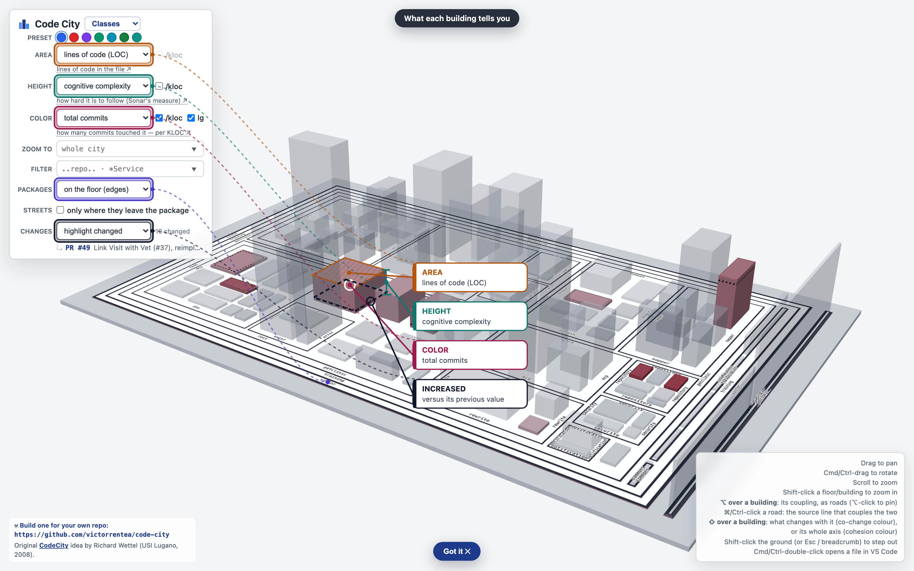
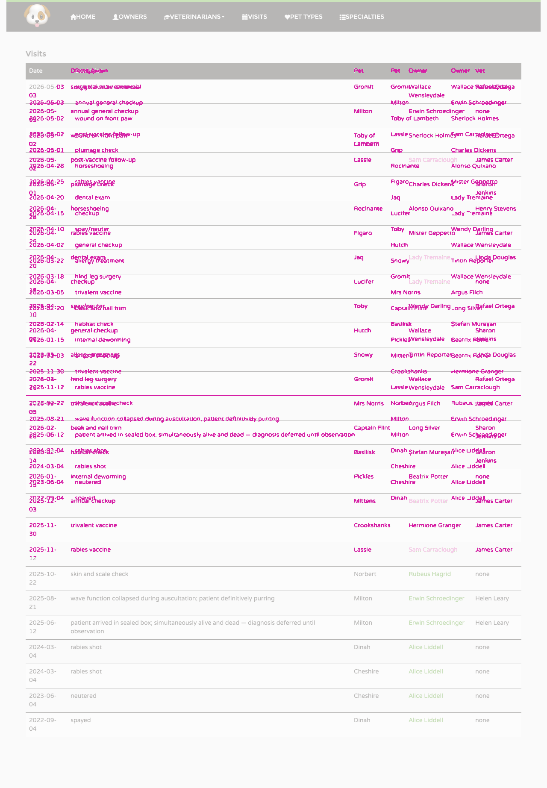
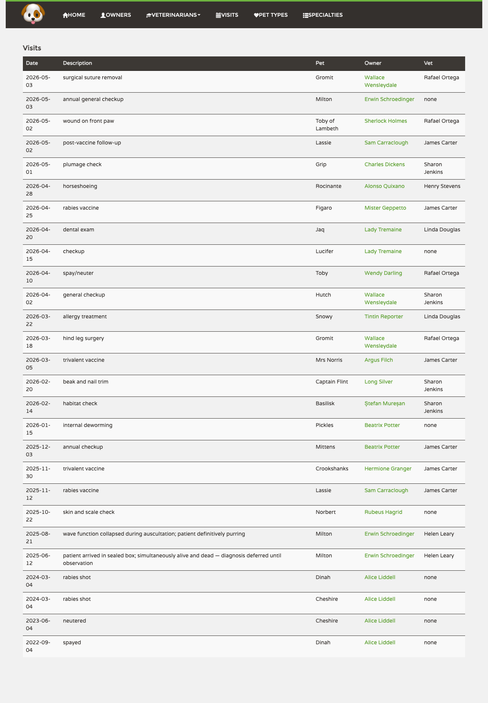
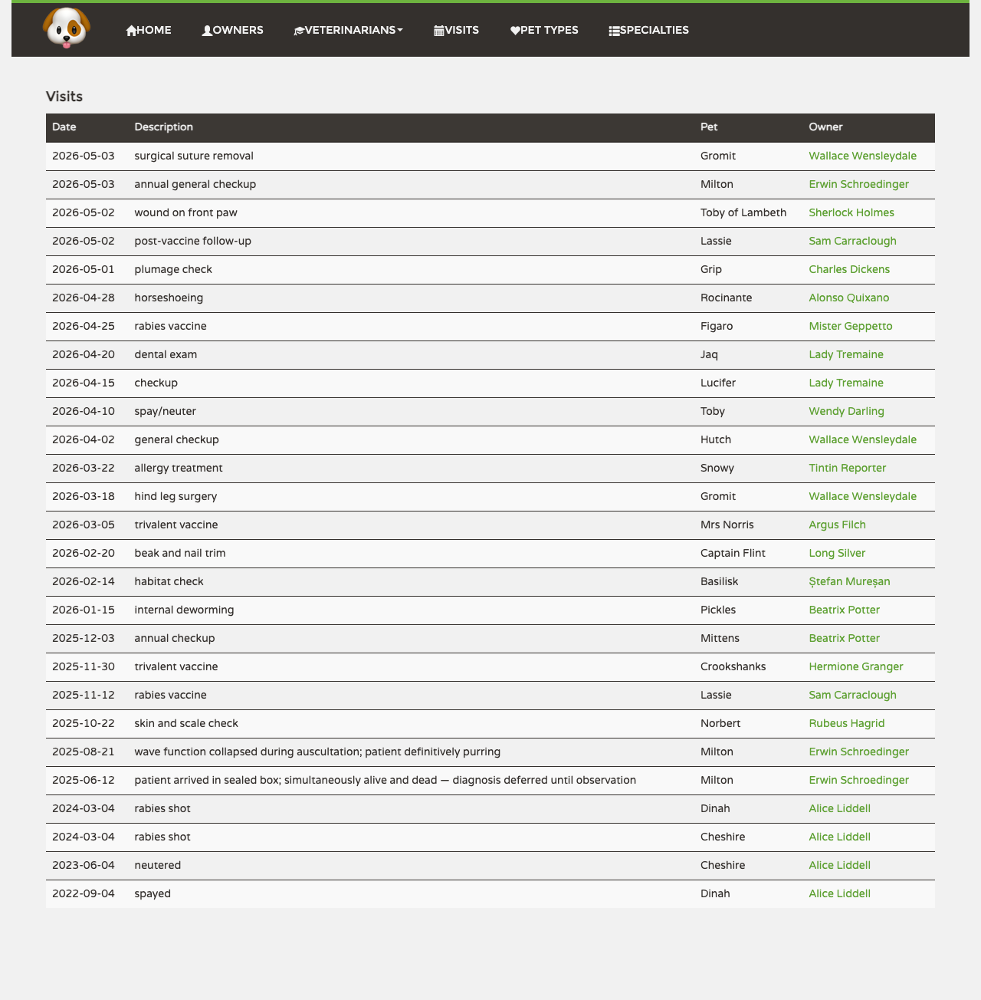

This one costs money.
Rerun + AI rewrites the requirements↔tests matrix and the per-test catalogue by asking a model — about $5–$10 on Sonnet — and then re-derives the evidence and rebuilds the page. The matrix you are looking at is replaced, not confirmed: a second pass over the same diff words and ranks it differently. The copy being replaced is kept in .human-review/.model-prev/.
Plain Rerun does everything except the model half, and costs nothing.
Review
6 implementation assumptions · 5 open review issues · 3 auto-fixed
9 commits, 134 lines changed since the review was taken over — read from git log after ce56d912: every commit since, with its message
The findings, the assumptions and the requirements matrix were written before them and have not seen them; every measured tab is rebuilt from the branch as it is now.
Reviewed at ce56d912; taken over at db6b67ec on 2026-09-21 without a new pass. 14 generated files moved as well and are not counted here. This list clears when a new review pass lands — a commit carrying a Review-Points: trailer — not when the page is regenerated.
f8d1a3f7Redraw the PR's city with the change DNA colour 2026-09-2329684b99OpenRewrite: Spring Security 7 csrf().disable() -> lambda DSL recipe 2026-09-23a23ccb76Redraw the PR's city: change DNA as a near-edge bar, breadcrumb bottom centre 2026-09-239037413ePut the vet line back on the PR's conceptual map 2026-09-2332c943adRe-record every sequence diagram against the notification-service split 2026-09-241b64071bRegenerate the PR's city: cohesion colour, its legend lights an axis's classes 2026-09-241776711dvisits.feature: the vet-rename scenario creates the vet it books 2026-09-2528ae03ecreview-points: drop the assumption about hand-written generated files 2026-09-2989e013a1review-points: drop the declined item about the orphaned booking-with-a-vet diagram 2026-09-29
13 commits after ce56d912 taken over without a new pass on 2026-09-21
7cad86b1test(visits): click the vet through the browser, not just past the API 2026-09-1831297ed4chore(codecity): commit the regenerated city the guardrail asks for 2026-09-1821680c35Record the sequence diagrams of the vet-linking tests 2026-09-180bb6f069test: Gherkin UI scenario for the vet-linking story 2026-09-189ce98ab9Log the booked visit id and the attending vet 2026-09-186aac04b4Drop the tests that proved clearing the vet persists, to show an unproven requirement 2026-09-18abf1c951Give VisitTest a server to post the fake SMS to 2026-09-18e9e23b6aRecord the sequence diagrams with the SMS gateway self-call 2026-09-180a3541e5VisitTest goes back to a plain @SpringBootTest, with no server to post to 2026-09-197ea4affdRedraw the sequences without the empty JDBC arrows 2026-09-19f2b2dae7Rate the assumptions: how sure the author was of each reading 2026-09-19226755c3Use a raw <select> for the vet on the edit form, on purpose, so the design-system audit has a gap to show 2026-09-196ef4ae6bRename the no-vet scenario: a visit need not be set a vet 2026-09-21
23 tooling commits merged from main
753f724cLet the review run start the stack its film is recorded against 2026-09-17f96259dcRequire one Gherkin scenario through the UI per feature 2026-09-18619902c3pre-commit: spotless only on the staged files 2026-09-182f5947eaRevert "Require one Gherkin scenario through the UI per feature" 2026-09-184aea32fcSend the fake SMS over HTTP, so the trace crosses a real socket 2026-09-18b0203286human-review: let the design-system audit start its own two builds 2026-09-19d0d57219Send the fake SMS in-process again: keep the test instrumentation out of production code 2026-09-19c4b0df32genseq: drop JDBC spans that carry no statement 2026-09-19e9079d6fci: an empty AGENTS.md is not a symlink stub 2026-09-19e85612fbhuman-review.json: name the guardrail the conceptual diagram is unit-tested against 2026-09-23866e1d64skills: jira/confluence CLIs in stdlib Python, so they run on Windows without WSL 2026-09-247f5189e6skills: harden the jira/confluence CLIs after an adversarial review 2026-09-24c8ec6a9ae2e: run the review's suites on HEAD's own containers, not on shared ports 2026-09-24a2b28a97Owner search: a late initial load no longer overwrites the result 2026-09-241daa4cbaadd-owner.spec: edit the owner only once the form has loaded them 2026-09-2402c1082bMaven module graph: print a groupId only where it tells modules apart 2026-09-2550b2dc9adocs(packages): label each box with its package pattern only 2026-09-25725a822aRun the backend Cucumber suite in mvn test: name it FunctionalCucumberTest 2026-09-25ad6e5388Per-test coverage of the browser suites, for /human-review's testcov step 2026-09-2590d07d43human-review.json: the testcov step, and COVERAGE_DIR on the traced runs 2026-09-256e55631dcoverage.ts: take Chromium's coverage over a CDP session, not page.coverage 2026-09-25c00fa572world.ts: a Scenario Outline's coverage is keyed by its Examples row 2026-09-25c57d3334start-docker.sh --ref builds the pinned commit with its own compose file 2026-09-29
Round I · while coding
Implementation assumptions
Where the ticket was ambiguous, the reading that was taken — and under Read the other way, the reading that was not. Nothing here is a defect. The code an assumption shaped is quoted under it; the choice itself is not in the diff, which is why this is the only pile no pass, script or reviewer could reconstruct afterwards.
- assumption45% confident The seed gives some visits a vet and deliberately withholds one from others on GitHub ↗
Below a coin flip, and the entry I most expect to be argued with: #37 does not mention the seed, and its sentence about pre-existing rows keeping no vet reads, taken strictly, as an instruction to leave the dataset alone. I weighted demo value over that strict reading, and which vet got which visit is invention with no source but my own taste.
Read the other way: leave every seeded visit unattended, since the ticket only says old rows keep no vet
Why 45%: a demo dataset where nothing has a vet cannot show the feature at all, and one where everything does never exercises the "none" rendering. The older batch (the four visits on Alice's cats) stays vet-less as the pre-change history; Milton's three cover both.
+114-- vet_id is deliberately NULL on some rows: an appointment is routinely booked before anyone - assumption55% confident vet_id is ON DELETE SET NULL, so deleting a vet is never blocked on GitHub ↗
The index on
vet_idis there for the same reason, not for searching (which is explicitly out of scope): without it the FK check behind a vet delete scansvisits. It matches howpet_idandowner_idare already indexed.
The confidence is barely above a coin flip because #37 never mentions deleting a vet at all — I inferred the rule from a sentence written about booking — and the ticket's own insistence that historical visits keep their state cuts the other way just as well: a clinic that wants to know who saw the animal in 2024 would rather the delete failed than have the answer quietly erased.Read the other way: the default RESTRICT — a vet who has attended anything can no longer be deleted, and
DELETE /api/vets/{id}starts failing on real dataWhy 55%: #37 says a visit with no vet is normal and "never an error", so a vet's departure landing their old visits in that case is the reading that keeps the ticket's own rule true. RESTRICT would invent a new failure mode the ticket never asks for.
5ALTER TABLE visits ADD COLUMN vet_id INT REFERENCES vets (id) ON DELETE SET NULL; - assumption60% confident MCP's create_visit and the chatbot were left alone on GitHub ↗
The number is low because #37 contradicts itself on exactly this point: its opening line says the vet should show "everywhere throughout the app", and its third requirement then narrows that to "today that means the owner's page and the all-visits screen". I took the narrowing as the operative one, but
list_visitsdoes show an owner their visits with details, so a reader who weights the opening line will say I left a screen out.Read the other way: read "everywhere throughout the app" to include the MCP surface and let the assistant book with a vet
Why 60%: the ticket's own four requirements name the booking form, the edit form, the owner's page and the all-visits screen. The MCP tools keep booking without a vet, which is a valid visit under this change, so nothing there breaks.
48name = "create_visit", - assumption70% confident An unknown vetId is a 404, not a quietly unattended visit on GitHub ↗
#37 says nothing about bad input, so none of this came from the ticket — but every other unknown id in this codebase already answers 404 through
.orElseThrow(), and onlypetOfIdpulls the other way. That precedent is what holds the number up; the consistency argument is what keeps it off 0.9.Read the other way: the house
petOfIdpattern — build aVetcarrying only the id, run no query, and let the foreign key reject a bad one as a 500Why 70%:
petIdalready takes the stub route, so consistency argued for it; correctness won. A typo'd vet id is a client error and reads like one, at the cost of one lean query per booking.+93private Vet attendingVet(Integer vetId) { +94 return vetId == null ? null : vetRepository.findByIdWithoutSpecialties(vetId).orElseThrow(); +95} - assumption80% confident The vet rides on VisitDto as three flat fields, not a nested VetDto on GitHub ↗
Read the other way:
vet: VetDto, the shape the vet screens already speakWhy 80%:
VisitDtoalready flattens the owner intoownerId/ownerFirstName/ownerLastName, and a nestedVetDtocarriesspecialties, which would put a vet's whole specialty list on every row of the all-visits table.+46private @Nullable Integer vetId; - assumption90% confident A visit with no vet reads "none", and the dropdown offers "-- none --" on GitHub ↗
The highest number here, because this is the one decision the ticket argues out loud and even names the wrong answers. It is not 1.0 only because the ticket dictates the meaning and not the string: an em dash would satisfy every word of the requirement too.
Read the other way: an em dash, or leaving the cell empty and letting the reader infer
Why 90%: #37's fourth requirement is that the visit reads as *having none* — not "Unknown", not blank-because-broken. A blank cell is indistinguishable from a failed load, which is the thing the requirement rules out.
+14export function vetLabel(visit: Visit): string { +15 const name = [visit.vetFirstName, visit.vetLastName].filter(part => !!part).join(' '); +16 return name || 'none'; +17}
Round II · code review
Open review issues
Findings the agent read and left in the code, each with its reason. They stay open until you agree or disagree with that reason.
- worth a look/code-review (the same finding, its design half) Make PUT /api/visits/{id} keep the vet when the body omits vetId on GitHub ↗
The endpoint already replaces
dateanddescriptionunconditionally — a body withoutdatenulls the date. Special-casingvetIdwould make one field in one DTO behave differently from its neighbours, and telling absent from explicit-null needs aJsonNullablewrapper that nothing else in this codebase uses. The ticket's second requirement is that clearing the field sticks; unconditional assignment is what makes it stick."assign only when the field is present" is precisely the bug #37 tells me not to repeat.
+88currentVisit.setVet(attendingVet(visitDto.getVetId())); - worth a lookme, while writing the test for the vet-picker fix A denied @PreAuthorize answers 500 instead of 403 on GitHub ↗
handleGeneralExceptioncatchesException, which includesAuthorizationDeniedException, so every authorization failure inrest/is reported as an internal error — and theProblemDetailechoes the exception's own message back to the caller. Worth its own ticket.ownerAdmin_cannotAddAVettherefore asserts the write is refused rather than pinning the status code, so fixing this will not fail it.it is global error handling on every endpoint, and #37 is about a column on visits.
75public ResponseEntity<ProblemDetail> handleGeneralException(Exception e, HttpServletRequest request) { 76 log.error("An unexpected error occurred: {}", e.getMessage(), e); 77 ProblemDetail pd = buildProblemDetail(e.getMessage(), 78 e.getMessage(), 79 HttpStatus.INTERNAL_SERVER_ERROR, request); 80 return ResponseEntity.status(HttpStatus.INTERNAL_SERVER_ERROR).body(pd); 81} - nit/code-review (duplication) Collapse the duplicated attendingVet helper on GitHub ↗
I first wrote it as one
defaultmethod onVetRepository, which is where it belongs. It fails at runtime: Spring Data'sNullnessMethodInvocationValidatorrejects a null argument to any repository method, so "no vet chosen" became a 500 — and neitherorg.springframework.lang.@Nullablenororg.jspecify.@Nullableon the parameter talks it out of that. A@Componentwrapping one ternary would buy less than it costs.three lines shared by two controllers that already duplicate the whole booking flow; the honest fix is collapsing those, which is a bigger change than #37 asks for.
+201log.debug("Attending vet: {}", vet.getLastName()); - nitme, anticipating SonarCloud java:S107 (this repo lowers the cap to 5) OwnerRestController's constructor is now nine parameters on GitHub ↗
Resolving the vet needs a repository, and
mapper → repositoryis forbidden bydocs/packages.puml. Sonar will re-flag S107 because the constructor's lines changed, so this will show up as a new-code finding on a pre-existing violation.it was already eight, the ninth collaborator is genuinely needed, and every alternative is worse.
70public OwnerRestController( 71 OwnerRepository ownerRepository, 72 PetRepository petRepository, 73 VisitRepository visitRepository, 74 PetTypeRepository petTypeRepository, +75 VetRepository vetRepository, 76 OwnerMapper ownerMapper, 77 PetMapper petMapper, 78 VisitMapper visitMapper, 79 NotificationSender notificationSender) { 80 this.ownerRepository = ownerRepository; 81 this.petRepository = petRepository; 82 this.visitRepository = visitRepository; 83 this.petTypeRepository = petTypeRepository; +84 this.vetRepository = vetRepository; 85 this.ownerMapper = ownerMapper; 86 this.petMapper = petMapper; 87 this.visitMapper = visitMapper; 88 this.notificationSender = notificationSender; 89} - nitme The user manual still describes the visit screens without a vet on GitHub ↗
manual.mdand its screenshots are regenerated by crawling the running UI, which needs the frontend's dependencies installed; hand-editing the prose would leave it disagreeing with its own screenshots.100To add a visit, open the owner's record (see [Owners](#owners)), find the pet that came in for the visit, and click *Add Visit* in that pet's section. The *New Visit* form opens with the pet's identifying details at the top and the pet's previous visits listed below. Pick the *Date* from the calendar, write a *Description* of what was done, and click *Add Visit* to save. The visit appears under that pet on the owner record and in the chronological *Visits* list. The *Add Visit* button at the bottom of the list page only works in the context of a specific pet — always start from the owner's record.
Round III · fixing the review
Auto-fixed
Read off review-points.md, committed with the fixes. Each one names the reviewer that raised it and shows the hunks of the fix commit its file:line reaches, against a8cd9973, the implementation commit — so what the review changed is separable from what the feature changed. Hunks no card reaches follow the pile.
- fixed/code-review (cross-role read on a widened screen) The vet picker could not load on the screens that need it on GitHub ↗
GET /api/vetssat under the class'shasRole(VET_ADMIN), but the booking and edit forms are owner-admin screens. An owner-admin-only user opening *New Visit* got an error and a permanently empty combo — the one thing #37 asks for most.PetTypeRestControlleralready solves the identical cross-role read, so this follows it, except narrower: onlylistVets()moves tohasAnyRole(OWNER_ADMIN, VET_ADMIN); adding, editing and deleting vets stay VET_ADMIN.
Worth recording how the reviewer's scenario differed from reality. It predicted a 403; the run produces a **500**, becauseExceptionControllerAdvice's catch-all handler swallowsAuthorizationDeniedException. Same broken picker, uglier failure. It is also why the two new assertions live inBasicAuthenticationConfigTestand not next to the controller:petclinic.security.enableisfalseeverywhere else, so every@WithMockUser(roles = …)in the other suites decorates without enforcing, and a role test written besideVetTestpasses whatever the rule says. The first version of this fix's test did exactly that and proved nothing.public class VetRestController { 45 45 this.specialtyRepository = specialtyRepository; 46 46 } 47 47 48 + // Widened past the class's VET_ADMIN, like pettypes: the visit forms are owner-admin screens 49 + // and have to fill a vet picker. Only this read moves; adding and editing vets stay VET_ADMIN. 50 + @PreAuthorize("hasAnyRole(@roles.OWNER_ADMIN, @roles.VET_ADMIN)") 48 51 @GetMapping 49 52 @ApiResponse(responseCode = "200", description = "OK", 50 53 content = @Content(mediaType = "application/json", - fixed/code-review (efficiency) Booking a visit read the vet's whole specialty list to set one foreign key on GitHub ↗
VetRepository.findByIdLEFT JOIN FETCHesv.specialties, which is right for the vet screens and pure waste forattendingVet, which reads nothing off the vet but its identity. Both booking paths now use a leanfindByIdWithoutSpecialties.public interface VetRepository extends Repository<Vet, Integer> { 14 14 @Query("SELECT v FROM Vet v LEFT JOIN FETCH v.specialties WHERE v.id = :id") 15 15 Optional<Vet> findById(int id); 16 16 17 + /** For callers that only need the vet as a reference — booking a visit reads no specialty. */ 18 + @Query("SELECT v FROM Vet v WHERE v.id = :id") 19 + Optional<Vet> findByIdWithoutSpecialties(int id); 20 + 17 21 void save(Vet vet); 18 22 19 23 void delete(Vet vet); - fixed/code-review (the PUT-clears-the-vet scenario) The Cucumber update step dropped the vet out of its PUT body on GitHub ↗
iUpdateVisitDescriptionrebuilt the body from the GET but stopped atdescription, so after this change renaming a visit unassigned its vet. The step now carriesvetIdthrough like every other field, andvisits.featuregained the scenario that would have caught it. I kept the endpoint's semantics (see Ignored) and fixed the client, which is where the defect actually was.public class VisitSteps { 70 70 http.rememberId("visit:current", visitId); 71 71 } 72 72 73 + @Given("a visit for {string} on {string} described as {string} attended by vet {string}") 74 + public void aVisitAttendedByVet(String petName, String date, String description, String vetLastName) { 75 + int petId = http.idOf("pet:" + petName); 76 + Integer vetId = jdbc.queryForObject( 77 + "SELECT id FROM vets WHERE last_name = ?", Integer.class, vetLastName); 78 + Integer visitId = jdbc.queryForObject( 79 + "INSERT INTO visits (pet_id, visit_date, description, vet_id)" 80 + + " VALUES (?, ?, ?, ?) RETURNING id", 81 + Integer.class, petId, LocalDate.parse(date), description, vetId); 82 + http.rememberId("visit:current", visitId); 83 + } 84 + 73 85 @When("I update that visit's description to {string}") 74 86 public void iUpdateVisitDescription(String newDescription) { 75 87 int visitId = http.idOf("visit:current"); 76 88 var existing = RestAssured.given().baseUri(http.baseUri()).get("/api/visits/" + visitId); 77 89 assertThat(existing.statusCode()).isEqualTo(200); 78 90 91 + // PUT replaces the whole visit, so every field it does not resend is cleared — vetId 92 + // included. Read it back off the GET rather than omitting it, or renaming a visit 93 + // would quietly unassign the vet who attended it. 79 94 String body = """ 80 - {"id":%d,"petId":%d,"date":"%s","description":"%s"} 95 + {"id":%d,"petId":%d,"date":"%s","description":"%s","vetId":%s} 81 96 """.formatted( 82 97 visitId, 83 98 existing.jsonPath().getInt("petId"), 84 99 existing.jsonPath().getString("date"), 85 - newDescription); 100 + newDescription, 101 + existing.jsonPath().get("vetId")); 86 102 87 103 http.setLastResponse(RestAssured.given() 88 104 .baseUri(http.baseUri())
Other changes in the fix commit · a8cd9973..89e013a1: 364 hunks no card's file:line reaches (within 3 lines), shown so nothing the fixes changed is off the page.
| 1 | 1 | --- |
| 2 | -paths: | |
| 3 | - - "**/pom.xml" | |
| 2 | +# Harness auto-injects its body before any file of this type is accessed. | |
| 3 | +paths: ["**/pom.xml"] | |
| 4 | 4 | --- |
| 5 | 5 | |
| 6 | 6 | # Maven versions: let the parent resolve them |
| 1 | 1 | --- |
| 2 | 2 | name: confluence-cli |
| 3 | 3 | description: Read and write Confluence pages from the shell — get/search pages, create, update, append, comment, label (tag), attach, move, delete — against a corporate Confluence Data Center/Server using a Personal Access Token (or Confluence Cloud with an API token). Use whenever a task needs Confluence AND no Confluence MCP tools are available (no mcp__atlassian__*, no mcp__confluence__*), which is the normal situation when corporate policy disables MCP servers. Also use when explicitly asked to "use the confluence-cli skill". |
| 4 | -allowed-tools: Bash(.claude/skills/confluence-cli/confluence.sh:*), Bash(jq:*) | |
| 4 | +allowed-tools: Bash(.claude/skills/confluence-cli/confluence.py:*), Bash(python3 .claude/skills/confluence-cli/confluence.py:*), Bash(python .claude/skills/confluence-cli/confluence.py:*), Bash(py .claude/skills/confluence-cli/confluence.py:*), Bash(jq:*) | |
| 5 | 5 | --- |
| 6 | 6 | |
| 7 | 7 | # Confluence from the shell, when MCP servers are disabled |
| 8 | 8 | |
| 9 | -`confluence.sh` is a self-contained `curl` + `jq` client for the Confluence REST API — | |
| 10 | -the sibling of [jira-cli](../jira-cli/SKILL.md), same env-file mechanism, same `--json` | |
| 11 | -convention, same escape hatch. Needs only bash, curl and jq. | |
| 9 | +`confluence.py` is a self-contained client for the Confluence REST API — the sibling | |
| 10 | +of [jira-cli](../jira-cli/SKILL.md), same env-file mechanism, same `--json` convention, | |
| 11 | +same escape hatch. **Python 3.8+, standard library only**: no curl, no jq, no | |
| 12 | +`pip install`, identical on Windows (no WSL), macOS and Linux. | |
| 13 | + | |
| 14 | +```sh | |
| 15 | +python3 .claude/skills/confluence-cli/confluence.py whoami # macOS / Linux (also runs as ./confluence.py) | |
| 16 | +python .claude/skills/confluence-cli/confluence.py whoami # Windows: python or py; `python3` there | |
| 17 | + # is often just the Microsoft Store stub | |
| 18 | +``` | |
| 19 | + | |
| 20 | +Below, `$C` is shorthand in the examples only - always type the full command | |
| 21 | +(`python3 .claude/skills/confluence-cli/confluence.py spaces`): the `allowed-tools` permissions | |
| 22 | +match that literal prefix, and a `J=...` variable does not word-split in zsh anyway. | |
| 12 | 23 | |
| 13 | 24 | ## 1. One-time setup |
| 14 | 25 | |
| The token lives in `~/.claude/confluence.env` — outside every repo, so the sam | ||
| 16 | 27 | reusable across all your projects and cannot be committed by accident: |
| 17 | 28 | |
| 18 | 29 | ```sh |
| 19 | -install -m 600 /dev/null ~/.claude/confluence.env | |
| 30 | +install -m 600 /dev/null ~/.claude/confluence.env # Windows: %USERPROFILE%\.claude\confluence.env | |
| 20 | 31 | cat > ~/.claude/confluence.env <<'EOF' |
| 21 | 32 | CONFLUENCE_URL=https://confluence.your-company.com |
| 22 | 33 | CONFLUENCE_PAT=<Settings -> Personal Access Tokens -> Create token> |
| self-signed certs, default space). Lookup order — first file wins: | ||
| 30 | 41 | $CONFLUENCE_ENV_FILE -> ./.confluence.env -> ~/.claude/confluence.env -> ~/.confluence.env |
| 31 | 42 | ``` |
| 32 | 43 | |
| 44 | +Real environment variables win over the file. | |
| 45 | + | |
| 33 | 46 | Verify: |
| 34 | 47 | |
| 35 | 48 | ```sh |
| 36 | -.claude/skills/confluence-cli/confluence.sh config # where creds came from, and which API is in play | |
| 37 | -.claude/skills/confluence-cli/confluence.sh whoami | |
| 49 | +$C config # where creds came from, and which API is in play | |
| 50 | +$C whoami | |
| 38 | 51 | ``` |
| 39 | 52 | |
| 40 | 53 | ## 2. Which REST API you are talking to |
| is mid-migration and the two products diverge: | ||
| 51 | 64 | | Auth | PAT, `Authorization: Bearer` | API token, HTTP Basic | |
| 52 | 65 | |
| 53 | 66 | So Cloud is inherently a **v1/v2 hybrid**, and that is not a shortcut in this script — |
| 54 | -it is the state of the API. `confluence.sh` picks the right one per command and | |
| 55 | -`confluence.sh config` prints which. Override with `CONFLUENCE_PAGE_API=v1` if you hit | |
| 67 | +it is the state of the API. `confluence.py` picks the right one per command and | |
| 68 | +`confluence.py config` prints which. Override with `CONFLUENCE_PAGE_API=v1` if you hit | |
| 56 | 69 | a v2 gap; asking for v2 against Data Center fails fast rather than 404-ing mysteriously. |
| 57 | 70 | |
| 58 | 71 | Atlassian has been withdrawing Cloud v1 endpoints group by group (the timeline has |
| Pages are addressed either by numeric id or by `SPACE:Title`, because humans kno | ||
| 65 | 78 | titles and ids only ever show up in URLs. |
| 66 | 79 | |
| 67 | 80 | ```sh |
| 68 | -C=.claude/skills/confluence-cli/confluence.sh | |
| 69 | - | |
| 70 | 81 | $C spaces |
| 71 | 82 | $C get "DOCS:Release Notes" # title, version, space, parent, labels |
| 72 | 83 | $C get 123456 --body # ... plus the storage XHTML |
| $C labels 123456 | ||
| 79 | 90 | $C versions 123456 |
| 80 | 91 | ``` |
| 81 | 92 | |
| 82 | -Add `--json` to any command to get the raw API response instead of the text summary: | |
| 93 | +Add `--json` to any command to get the raw API response instead of the text summary | |
| 94 | +(`jq` if installed; Git for Windows does not ship it): | |
| 83 | 95 | |
| 84 | 96 | ```sh |
| 85 | 97 | $C --json get 123456 | jq -r '.labels[]' |
| $C raw GET "v2:pages/123456/versions" # v2: 'v2:' prefix | ||
| 131 | 143 | $C raw POST "/rest/api/content" '{"type":"page", ...}' |
| 132 | 144 | ``` |
| 133 | 145 | |
| 146 | +Git Bash on Windows rewrites a leading-slash argument (`/rest/...`) into | |
| 147 | +`C:/Program Files/Git/rest/...`; `confluence.py` undoes that for `/rest/` and `/wiki/` | |
| 148 | +paths, so both spellings work. | |
| 149 | + | |
| 134 | 150 | ## 5. Rules for agents |
| 135 | 151 | |
| 136 | 152 | - **Never print or echo the PAT**, and never copy it into a repo file. Read it only |
| 137 | - through the env-file mechanism. `confluence.sh config` is safe; `cat ~/.claude/confluence.env` is not. | |
| 153 | + through the env-file mechanism. `confluence.py config` is safe; `cat ~/.claude/confluence.env` is not. | |
| 138 | 154 | - **Confirm before writing.** A Confluence page is usually team-visible documentation, |
| 139 | 155 | and `update` *replaces* the body — `append` is almost always the safer verb when |
| 140 | 156 | adding to an existing page. Ask first unless the user's request already names the action. |
| $C raw POST "/rest/api/content" '{"type":"page", ...}' | ||
| 142 | 158 | "add a section", use `append`. |
| 143 | 159 | - Prefer `--json | jq` when you need one field; prefer the default text output when you |
| 144 | 160 | need to *read* a page. Do not dump whole storage-format bodies into the transcript. |
| 145 | -- Errors always carry the HTTP status: `confluence.sh: HTTP 403 on PUT .../content/123 - ...`. | |
| 161 | +- Errors always carry the HTTP status: `confluence.py: HTTP 403 on PUT .../content/123 - ...`. | |
| 146 | 162 | A 401 means the token is wrong or expired, 403 means the token lacks the permission, |
| 147 | 163 | 404 on a page that exists usually also means a permissions problem, and **409 means a |
| 148 | 164 | version conflict** — re-read and retry. |
| 2 | 2 | # is outside every repo, so one PAT serves every project you work on, and it can |
| 3 | 3 | # never be committed by accident. |
| 4 | 4 | # |
| 5 | -# install -m 600 /dev/null ~/.claude/confluence.env | |
| 5 | +# install -m 600 /dev/null ~/.claude/confluence.env (Windows: %USERPROFILE%\.claude\confluence.env) | |
| 6 | 6 | # $EDITOR ~/.claude/confluence.env |
| 7 | 7 | # |
| 8 | -# confluence.sh reads the FIRST file that exists, in this order: | |
| 8 | +# confluence.py reads the FIRST file that exists, in this order: | |
| 9 | 9 | # $CONFLUENCE_ENV_FILE -> ./.confluence.env -> ~/.claude/confluence.env -> ~/.confluence.env |
| 10 | 10 | # so a project can override the shared token by dropping a ./.confluence.env next to it. |
| 11 | +# Real environment variables always win over the file. | |
| 11 | 12 | |
| 12 | 13 | # --- required ----------------------------------------------------------------- |
| 13 | 14 | |
| CONFLUENCE_PAT= | ||
| 29 | 30 | |
| 30 | 31 | # --- optional ----------------------------------------------------------------- |
| 31 | 32 | |
| 32 | -# Lets you run `confluence.sh create -t "..."` without repeating --space every time. | |
| 33 | +# Lets you run `confluence.py create -t "..."` without repeating --space every time. | |
| 33 | 34 | #CONFLUENCE_DEFAULT_SPACE=DOCS |
| 34 | 35 | |
| 35 | 36 | # Which REST API carries page CRUD. Defaults to v1 on DC (the only one there) and |
| CONFLUENCE_PAT= | ||
| 42 | 43 | # It decides the /wiki path prefix and whether v2 exists at all. |
| 43 | 44 | #CONFLUENCE_FLAVOR=server |
| 44 | 45 | |
| 45 | -# Set to 0 for an internal instance with a self-signed certificate (adds curl -k). | |
| 46 | +# Set to 0 for an internal instance with a self-signed certificate (skips TLS verification). | |
| 46 | 47 | #CONFLUENCE_SSL_VERIFY=1 |
| 6 | 6 | ## Running |
| 7 | 7 | |
| 8 | 8 | ```sh |
| 9 | -.claude/skills/confluence-cli/test/run-tests.sh # hermetic, ~5s, no network | |
| 10 | -.claude/skills/confluence-cli/test/run-tests.sh --live # against a real Confluence | |
| 11 | -.claude/skills/confluence-cli/test/run-tests.sh --all | |
| 9 | +python3 .claude/skills/confluence-cli/test/run_tests.py # hermetic, ~5s, no network | |
| 10 | +python3 .claude/skills/confluence-cli/test/run_tests.py --live # against a real Confluence | |
| 11 | +python3 .claude/skills/confluence-cli/test/run_tests.py --all | |
| 12 | 12 | ``` |
| 13 | 13 | |
| 14 | -`scenario.sh` holds the full lifecycle — create, read, update, the version | |
| 14 | +`scenario.py` holds the full lifecycle — create, read, update, the version | |
| 15 | 15 | conflict, append, all three body formats, labels, comments, attachments, hierarchy, |
| 16 | 16 | move, search pagination, delete — and is written **once** and run against every backend. |
| 17 | 17 | |
| 18 | -- **Hermetic** (`e2e-fake.sh`): boots `fake_confluence.py`, a stdlib stand-in that | |
| 19 | - serves **both v1 and v2**, on a random port and drives `confluence.sh` over real HTTP — | |
| 20 | - real curl, real status codes, real 401s, real 409s. The scenario then runs **twice**, | |
| 18 | +- **Hermetic** (`e2e_fake.py`): boots `fake_confluence.py`, a stdlib stand-in that | |
| 19 | + serves **both v1 and v2**, on a random port and drives the real `confluence.py` **as a subprocess** over real | |
| 20 | + HTTP — argv parsing, exit codes, real status codes, real 401s, real 409s. Pure | |
| 21 | + stdlib, so it runs the same on Windows, macOS and Linux. The scenario then runs **twice**, | |
| 21 | 22 | once as Data Center (PAT + v1) and once as Cloud (Basic + `/wiki` + v2), because a |
| 22 | 23 | green v1 run says nothing about v2. It caps a search page at 2 on purpose, so a client |
| 23 | - that forgot to paginate fails the suite. 105 assertions. | |
| 24 | -- **Live** (`e2e-live.sh`): the same scenario against a real instance. It creates ~9 | |
| 24 | + that forgot to paginate fails the suite. 117 assertions. | |
| 25 | +- **Live** (`e2e_live.py`): the same scenario against a real instance. It creates ~9 | |
| 25 | 26 | throwaway pages and deletes them again, so point it at a **sandbox space**. |
| 26 | 27 | |
| 27 | 28 | ### Getting a real Confluence to point the live suite at |
| CONFLUENCE_API_TOKEN=<id.atlassian.com/manage-profile/security/api-tokens> | ||
| 43 | 44 | EOF |
| 44 | 45 | |
| 45 | 46 | export CONFLUENCE_TEST_SPACE=SAND # create a throwaway space first |
| 46 | -.claude/skills/confluence-cli/test/run-tests.sh --live | |
| 47 | +python3 .claude/skills/confluence-cli/test/run_tests.py --live | |
| 47 | 48 | ``` |
| 48 | 49 | |
| 49 | 50 | **Self-hosted Confluence is not obtainable for free**, exactly as for Jira: the Docker |
| 1 | 1 | #!/usr/bin/env python3 |
| 2 | 2 | """A tiny in-memory stand-in for the Confluence REST API - both v1 and v2. |
| 3 | 3 | |
| 4 | -It exists so the e2e suite can exercise confluence.sh over real HTTP - real curl, | |
| 4 | +It exists so the e2e suite can exercise confluence.py over real HTTP - real urllib, | |
| 5 | 5 | real status codes, real JSON - without a licence key or a Cloud site. |
| 6 | 6 | |
| 7 | -Serving BOTH APIs from one process is the point: confluence.sh talks v1 to Data | |
| 7 | +Serving BOTH APIs from one process is the point: confluence.py talks v1 to Data | |
| 8 | 8 | Center and v2 to Cloud, and the same scenario is run twice against this server, |
| 9 | 9 | once per flavor. Anything the v1 path proves, the v2 path has to prove too. |
| 10 | 10 | |
| 11 | 11 | It is deliberately strict about the things that actually break clients: |
| 12 | - - auth (401 on a bad token) | |
| 13 | - - the version dance on update (409 on a stale or skipped version number) | |
| 14 | - - unknown page ids (404) | |
| 15 | - - a tiny search page size, so a client that forgot to paginate fails | |
| 12 | + - auth (401 on a bad token) | |
| 13 | + - the version dance on update (409 on a stale or skipped version number) | |
| 14 | + - unknown page ids (404) | |
| 15 | + - a tiny search page size, so a client that forgot to paginate fails | |
| 16 | 16 | |
| 17 | -Only the endpoints confluence.sh actually calls are implemented. Anything else | |
| 17 | +Only the endpoints confluence.py actually calls are implemented. Anything else | |
| 18 | 18 | 404s loudly rather than pretending to work. |
| 19 | 19 | """ |
| 20 | 20 | import json |
| from urllib.parse import parse_qs, quote, unquote, urlparse | ||
| 26 | 26 | |
| 27 | 27 | TOKEN = "test-pat-12345" |
| 28 | 28 | |
| 29 | -# Capped low on purpose: it forces confluence.sh to paginate, which is the part | |
| 29 | +# Capped low on purpose: it forces confluence.py to paginate, which is the part | |
| 30 | 30 | # of the client most likely to silently truncate results. |
| 31 | 31 | PAGE_CAP = 2 |
| 32 | 32 | |
| SPACES = [ | ||
| 35 | 35 | {"id": "1002", "key": "SAND", "name": "Sandbox"}, |
| 36 | 36 | ] |
| 37 | 37 | |
| 38 | -USER = {"type": "known", "username": "victor", "userKey": "victor-key", | |
| 39 | - "accountId": "acc-victor", "displayName": "Victor Rentea", | |
| 40 | - "email": "victor@example.com"} | |
| 38 | +USER = { | |
| 39 | + "type": "known", | |
| 40 | + "username": "victor", | |
| 41 | + "userKey": "victor-key", | |
| 42 | + "accountId": "acc-victor", | |
| 43 | + "displayName": "Victor Rentea", | |
| 44 | + "email": "victor@example.com", | |
| 45 | +} | |
| 41 | 46 | |
| 42 | 47 | |
| 43 | 48 | class Store: |
| def new_page(pid, title, space, parent_id, body): | ||
| 124 | 129 | |
| 125 | 130 | # ------------------------------------------------------------------- views -- |
| 126 | 131 | |
| 132 | + | |
| 127 | 133 | def v1_page(p, expand=""): |
| 128 | 134 | out = { |
| 129 | - "id": p["id"], "type": "page", "status": p["status"], "title": p["title"], | |
| 135 | + "id": p["id"], | |
| 136 | + "type": "page", | |
| 137 | + "status": p["status"], | |
| 138 | + "title": p["title"], | |
| 130 | 139 | "space": {"id": p["spaceId"], "key": p["spaceKey"]}, |
| 131 | 140 | "version": {"number": p["version"]}, |
| 132 | 141 | "ancestors": ([{"id": p["parentId"]}] if p["parentId"] else []), |
| def v1_page(p, expand=""): | ||
| 135 | 144 | if "body" in expand or not expand: |
| 136 | 145 | out["body"] = {"storage": {"value": p["body"], "representation": "storage"}} |
| 137 | 146 | if "metadata.labels" in expand: |
| 138 | - out["metadata"] = {"labels": {"results": [ | |
| 139 | - {"prefix": "global", "name": n} for n in p["labels"]]}} | |
| 147 | + out["metadata"] = { | |
| 148 | + "labels": {"results": [{"prefix": "global", "name": n} for n in p["labels"]]} | |
| 149 | + } | |
| 140 | 150 | return out |
| 141 | 151 | |
| 142 | 152 | |
| 143 | 153 | def v2_page(p, body_format=None, include_labels=False): |
| 144 | 154 | out = { |
| 145 | - "id": p["id"], "status": p["status"], "title": p["title"], | |
| 146 | - "spaceId": p["spaceId"], "parentId": p["parentId"], | |
| 147 | - "version": {"number": p["version"], "createdAt": "2026-08-12T10:00:00.000Z", | |
| 148 | - "message": p["versions"][-1]["message"]}, | |
| 155 | + "id": p["id"], | |
| 156 | + "status": p["status"], | |
| 157 | + "title": p["title"], | |
| 158 | + "spaceId": p["spaceId"], | |
| 159 | + "parentId": p["parentId"], | |
| 160 | + "version": { | |
| 161 | + "number": p["version"], | |
| 162 | + "createdAt": "2026-08-12T10:00:00.000Z", | |
| 163 | + "message": p["versions"][-1]["message"], | |
| 164 | + }, | |
| 149 | 165 | "_links": {"webui": f"/spaces/{p['spaceKey']}/pages/{p['id']}"}, |
| 150 | 166 | } |
| 151 | 167 | if body_format: |
| 152 | 168 | out["body"] = {"storage": {"value": p["body"], "representation": "storage"}} |
| 153 | 169 | if include_labels: |
| 154 | - out["labels"] = {"results": [{"id": str(i), "name": n, "prefix": "global"} | |
| 155 | - for i, n in enumerate(p["labels"])]} | |
| 170 | + out["labels"] = { | |
| 171 | + "results": [ | |
| 172 | + {"id": str(i), "name": n, "prefix": "global"} for i, n in enumerate(p["labels"]) | |
| 173 | + ] | |
| 174 | + } | |
| 156 | 175 | return out |
| 157 | 176 | |
| 158 | 177 | |
| class Handler(BaseHTTPRequestHandler): | ||
| 212 | 231 | def fail(self, code, message): |
| 213 | 232 | # v1 shape and v2 shape at once, so the client's error parser is exercised |
| 214 | 233 | # whichever branch it takes. |
| 215 | - self.send_json(code, {"statusCode": code, "message": message, | |
| 216 | - "errors": [{"status": code, "title": message, "detail": message}]}) | |
| 234 | + self.send_json( | |
| 235 | + code, | |
| 236 | + { | |
| 237 | + "statusCode": code, | |
| 238 | + "message": message, | |
| 239 | + "errors": [{"status": code, "title": message, "detail": message}], | |
| 240 | + }, | |
| 241 | + ) | |
| 217 | 242 | |
| 218 | 243 | def authed(self): |
| 219 | 244 | auth = self.headers.get("Authorization", "") |
| class Handler(BaseHTTPRequestHandler): | ||
| 240 | 265 | # Cloud serves everything under /wiki; DC serves it at the root. Accept both |
| 241 | 266 | # so one server can answer a server-flavored and a cloud-flavored client. |
| 242 | 267 | if path.startswith("/wiki/"): |
| 243 | - path = path[len("/wiki"):] | |
| 268 | + path = path[len("/wiki") :] | |
| 244 | 269 | if path.startswith("/rest/api/"): |
| 245 | - return "v1", path[len("/rest/api/"):].strip("/").split("/"), query | |
| 270 | + return "v1", path[len("/rest/api/") :].strip("/").split("/"), query | |
| 246 | 271 | if path.startswith("/api/v2/"): |
| 247 | - return "v2", path[len("/api/v2/"):].strip("/").split("/"), query | |
| 272 | + return "v2", path[len("/api/v2/") :].strip("/").split("/"), query | |
| 248 | 273 | return None, [], query |
| 249 | 274 | |
| 250 | 275 | def page_or_404(self, pid, allow_trashed=False): |
| class Handler(BaseHTTPRequestHandler): | ||
| 280 | 305 | |
| 281 | 306 | # Attachments carry a multipart body, so they must claim the socket before |
| 282 | 307 | # read_json() drains it. |
| 283 | - if api == "v1" and len(parts) == 4 and parts[0] == "content" and parts[2:] == ["child", "attachment"]: | |
| 308 | + if ( | |
| 309 | + api == "v1" | |
| 310 | + and len(parts) == 4 | |
| 311 | + and parts[0] == "content" | |
| 312 | + and parts[2:] == ["child", "attachment"] | |
| 313 | + ): | |
| 284 | 314 | n = int(self.headers.get("Content-Length") or 0) |
| 285 | 315 | raw = self.rfile.read(n) if n else b"" # always drain, even on 404 |
| 286 | 316 | page = self.page_or_404(parts[1]) |
| class Handler(BaseHTTPRequestHandler): | ||
| 348 | 378 | return self.do_search(q) |
| 349 | 379 | if parts == ["content"]: |
| 350 | 380 | key, title = q.get("spaceKey"), q.get("title") |
| 351 | - hits = [p for p in STORE.pages.values() | |
| 352 | - if p["status"] == "current" | |
| 353 | - and (key is None or p["spaceKey"] == key) | |
| 354 | - and (title is None or p["title"] == title)] | |
| 355 | - return self.send_json(200, {"results": [v1_page(p) for p in hits], | |
| 356 | - "size": len(hits)}) | |
| 381 | + hits = [ | |
| 382 | + p | |
| 383 | + for p in STORE.pages.values() | |
| 384 | + if p["status"] == "current" | |
| 385 | + and (key is None or p["spaceKey"] == key) | |
| 386 | + and (title is None or p["title"] == title) | |
| 387 | + ] | |
| 388 | + return self.send_json(200, {"results": [v1_page(p) for p in hits], "size": len(hits)}) | |
| 357 | 389 | if parts and parts[0] == "content" and len(parts) >= 2: |
| 358 | 390 | page = self.page_or_404(parts[1]) |
| 359 | 391 | if page is None: |
| class Handler(BaseHTTPRequestHandler): | ||
| 361 | 393 | if len(parts) == 2: |
| 362 | 394 | return self.send_json(200, v1_page(page, q.get("expand", ""))) |
| 363 | 395 | if parts[2] == "label": |
| 364 | - return self.send_json(200, {"results": [ | |
| 365 | - {"prefix": "global", "name": n, "id": str(i)} | |
| 366 | - for i, n in enumerate(page["labels"])]}) | |
| 396 | + return self.send_json( | |
| 397 | + 200, | |
| 398 | + { | |
| 399 | + "results": [ | |
| 400 | + {"prefix": "global", "name": n, "id": str(i)} | |
| 401 | + for i, n in enumerate(page["labels"]) | |
| 402 | + ] | |
| 403 | + }, | |
| 404 | + ) | |
| 367 | 405 | if parts[2] == "version": |
| 368 | - return self.send_json(200, {"results": [ | |
| 369 | - {"number": v["number"], "message": v["message"], "when": v["when"], | |
| 370 | - "by": {"displayName": USER["displayName"]}} | |
| 371 | - for v in page["versions"]]}) | |
| 406 | + return self.send_json( | |
| 407 | + 200, | |
| 408 | + { | |
| 409 | + "results": [ | |
| 410 | + { | |
| 411 | + "number": v["number"], | |
| 412 | + "message": v["message"], | |
| 413 | + "when": v["when"], | |
| 414 | + "by": {"displayName": USER["displayName"]}, | |
| 415 | + } | |
| 416 | + for v in page["versions"] | |
| 417 | + ] | |
| 418 | + }, | |
| 419 | + ) | |
| 372 | 420 | if parts[2] == "child" and len(parts) == 4: |
| 373 | 421 | if parts[3] == "page": |
| 374 | - kids = [p for p in STORE.pages.values() | |
| 375 | - if p["parentId"] == page["id"] and p["status"] == "current"] | |
| 422 | + kids = [ | |
| 423 | + p | |
| 424 | + for p in STORE.pages.values() | |
| 425 | + if p["parentId"] == page["id"] and p["status"] == "current" | |
| 426 | + ] | |
| 376 | 427 | return self.send_json(200, {"results": [v1_page(k) for k in kids]}) |
| 377 | 428 | if parts[3] == "comment": |
| 378 | - return self.send_json(200, {"results": [ | |
| 379 | - {"id": c["id"], | |
| 380 | - "body": {"storage": {"value": c["body"], "representation": "storage"}}, | |
| 381 | - "version": {"number": 1}, | |
| 382 | - "history": {"createdBy": {"displayName": USER["displayName"]}, | |
| 383 | - "createdDate": "2026-08-12T10:00:00.000Z"}} | |
| 384 | - for c in page["comments"]]}) | |
| 429 | + return self.send_json( | |
| 430 | + 200, | |
| 431 | + { | |
| 432 | + "results": [ | |
| 433 | + { | |
| 434 | + "id": c["id"], | |
| 435 | + "body": { | |
| 436 | + "storage": {"value": c["body"], "representation": "storage"} | |
| 437 | + }, | |
| 438 | + "version": {"number": 1}, | |
| 439 | + "history": { | |
| 440 | + "createdBy": {"displayName": USER["displayName"]}, | |
| 441 | + "createdDate": "2026-08-12T10:00:00.000Z", | |
| 442 | + }, | |
| 443 | + } | |
| 444 | + for c in page["comments"] | |
| 445 | + ] | |
| 446 | + }, | |
| 447 | + ) | |
| 385 | 448 | if parts[3] == "attachment": |
| 386 | 449 | return self.send_json(200, {"results": page["attachments"]}) |
| 387 | 450 | return self.fail(404, f"unsupported path {self.path}") |
| class Handler(BaseHTTPRequestHandler): | ||
| 394 | 457 | if page is None: |
| 395 | 458 | return |
| 396 | 459 | STORE.comment_seq += 1 |
| 397 | - comment = {"id": f"c{STORE.comment_seq}", "body": body_in(body.get("body"), "v1") or ""} | |
| 460 | + comment = { | |
| 461 | + "id": f"c{STORE.comment_seq}", | |
| 462 | + "body": body_in(body.get("body"), "v1") or "", | |
| 463 | + } | |
| 398 | 464 | page["comments"].append(comment) |
| 399 | 465 | return self.send_json(200, {"id": comment["id"], "type": "comment"}) |
| 400 | 466 | return self.create_page( |
| class Handler(BaseHTTPRequestHandler): | ||
| 402 | 468 | title=body.get("title"), |
| 403 | 469 | parent_id=((body.get("ancestors") or [{}])[-1] or {}).get("id"), |
| 404 | 470 | body=body_in(body.get("body"), "v1"), |
| 405 | - api="v1") | |
| 471 | + api="v1", | |
| 472 | + ) | |
| 406 | 473 | if len(parts) == 3 and parts[0] == "content" and parts[2] == "label": |
| 407 | 474 | page = self.page_or_404(parts[1]) |
| 408 | 475 | if page is None: |
| 409 | 476 | return |
| 410 | - for lab in (body if isinstance(body, list) else [body]): | |
| 477 | + for lab in body if isinstance(body, list) else [body]: | |
| 411 | 478 | name = (lab or {}).get("name") |
| 412 | 479 | if name and name not in page["labels"]: |
| 413 | 480 | page["labels"].append(name) |
| 414 | - return self.send_json(200, {"results": [ | |
| 415 | - {"prefix": "global", "name": n} for n in page["labels"]]}) | |
| 481 | + return self.send_json( | |
| 482 | + 200, {"results": [{"prefix": "global", "name": n} for n in page["labels"]]} | |
| 483 | + ) | |
| 416 | 484 | return self.fail(404, f"unsupported path {self.path}") |
| 417 | 485 | |
| 418 | 486 | # ----------------------------------------------------------------- v2 --- |
| class Handler(BaseHTTPRequestHandler): | ||
| 426 | 494 | if space is None: |
| 427 | 495 | return self.fail(404, f"No space with id {parts[1]}") |
| 428 | 496 | title = q.get("title") |
| 429 | - hits = [p for p in STORE.pages.values() | |
| 430 | - if p["spaceId"] == space["id"] and p["status"] == "current" | |
| 431 | - and (title is None or p["title"] == title)] | |
| 497 | + hits = [ | |
| 498 | + p | |
| 499 | + for p in STORE.pages.values() | |
| 500 | + if p["spaceId"] == space["id"] | |
| 501 | + and p["status"] == "current" | |
| 502 | + and (title is None or p["title"] == title) | |
| 503 | + ] | |
| 432 | 504 | return self.send_json(200, {"results": [v2_page(p) for p in hits], "_links": {}}) |
| 433 | 505 | if parts and parts[0] == "pages" and len(parts) >= 2: |
| 434 | 506 | page = self.page_or_404(parts[1]) |
| 435 | 507 | if page is None: |
| 436 | 508 | return |
| 437 | 509 | if len(parts) == 2: |
| 438 | - return self.send_json(200, v2_page( | |
| 439 | - page, q.get("body-format"), q.get("include-labels") == "true")) | |
| 510 | + return self.send_json( | |
| 511 | + 200, v2_page(page, q.get("body-format"), q.get("include-labels") == "true") | |
| 512 | + ) | |
| 440 | 513 | if parts[2] == "children": |
| 441 | - kids = [p for p in STORE.pages.values() | |
| 442 | - if p["parentId"] == page["id"] and p["status"] == "current"] | |
| 443 | - return self.send_json(200, {"results": [ | |
| 444 | - {"id": k["id"], "title": k["title"], "status": k["status"], | |
| 445 | - "spaceId": k["spaceId"]} for k in kids], "_links": {}}) | |
| 514 | + kids = [ | |
| 515 | + p | |
| 516 | + for p in STORE.pages.values() | |
| 517 | + if p["parentId"] == page["id"] and p["status"] == "current" | |
| 518 | + ] | |
| 519 | + return self.send_json( | |
| 520 | + 200, | |
| 521 | + { | |
| 522 | + "results": [ | |
| 523 | + { | |
| 524 | + "id": k["id"], | |
| 525 | + "title": k["title"], | |
| 526 | + "status": k["status"], | |
| 527 | + "spaceId": k["spaceId"], | |
| 528 | + } | |
| 529 | + for k in kids | |
| 530 | + ], | |
| 531 | + "_links": {}, | |
| 532 | + }, | |
| 533 | + ) | |
| 446 | 534 | if parts[2] == "versions": |
| 447 | - return self.send_json(200, {"results": [ | |
| 448 | - {"number": v["number"], "message": v["message"], | |
| 449 | - "createdAt": v["when"], "authorId": USER["accountId"]} | |
| 450 | - for v in page["versions"]], "_links": {}}) | |
| 535 | + return self.send_json( | |
| 536 | + 200, | |
| 537 | + { | |
| 538 | + "results": [ | |
| 539 | + { | |
| 540 | + "number": v["number"], | |
| 541 | + "message": v["message"], | |
| 542 | + "createdAt": v["when"], | |
| 543 | + "authorId": USER["accountId"], | |
| 544 | + } | |
| 545 | + for v in page["versions"] | |
| 546 | + ], | |
| 547 | + "_links": {}, | |
| 548 | + }, | |
| 549 | + ) | |
| 451 | 550 | if parts[2] == "footer-comments": |
| 452 | - return self.send_json(200, {"results": [ | |
| 453 | - {"id": c["id"], "pageId": page["id"], "version": {"number": 1}, | |
| 454 | - "body": {"storage": {"value": c["body"], "representation": "storage"}}} | |
| 455 | - for c in page["comments"]], "_links": {}}) | |
| 551 | + return self.send_json( | |
| 552 | + 200, | |
| 553 | + { | |
| 554 | + "results": [ | |
| 555 | + { | |
| 556 | + "id": c["id"], | |
| 557 | + "pageId": page["id"], | |
| 558 | + "version": {"number": 1}, | |
| 559 | + "body": { | |
| 560 | + "storage": {"value": c["body"], "representation": "storage"} | |
| 561 | + }, | |
| 562 | + } | |
| 563 | + for c in page["comments"] | |
| 564 | + ], | |
| 565 | + "_links": {}, | |
| 566 | + }, | |
| 567 | + ) | |
| 456 | 568 | return self.fail(404, f"unsupported path {self.path}") |
| 457 | 569 | |
| 458 | 570 | def post_v2(self, parts, body): |
| class Handler(BaseHTTPRequestHandler): | ||
| 461 | 573 | if space is None: |
| 462 | 574 | return self.fail(404, f"No space with id {body.get('spaceId')}") |
| 463 | 575 | return self.create_page( |
| 464 | - space_key=space["key"], title=body.get("title"), | |
| 576 | + space_key=space["key"], | |
| 577 | + title=body.get("title"), | |
| 465 | 578 | parent_id=body.get("parentId"), |
| 466 | - body=body_in(body.get("body"), "v2"), api="v2") | |
| 579 | + body=body_in(body.get("body"), "v2"), | |
| 580 | + api="v2", | |
| 581 | + ) | |
| 467 | 582 | if parts == ["footer-comments"]: |
| 468 | 583 | page = self.page_or_404(body.get("pageId")) |
| 469 | 584 | if page is None: |
| class Handler(BaseHTTPRequestHandler): | ||
| 481 | 596 | return self.fail(404, f"No space with key '{space_key}'") |
| 482 | 597 | if not title: |
| 483 | 598 | return self.fail(400, "title is required for a published page") |
| 484 | - if any(p["spaceKey"] == space["key"] and p["title"] == title | |
| 485 | - and p["status"] == "current" for p in STORE.pages.values()): | |
| 486 | - return self.fail(400, f"A page with title '{title}' already exists in space {space['key']}") | |
| 599 | + if any( | |
| 600 | + p["spaceKey"] == space["key"] and p["title"] == title and p["status"] == "current" | |
| 601 | + for p in STORE.pages.values() | |
| 602 | + ): | |
| 603 | + return self.fail( | |
| 604 | + 400, f"A page with title '{title}' already exists in space {space['key']}" | |
| 605 | + ) | |
| 487 | 606 | if parent_id is not None and str(parent_id) not in STORE.pages: |
| 488 | 607 | return self.fail(404, f"No parent content with id {parent_id}") |
| 489 | 608 | with STORE.lock: |
| 490 | 609 | pid = STORE.next_id() |
| 491 | - STORE.pages[pid] = new_page(pid, title, space, | |
| 492 | - str(parent_id) if parent_id else None, body) | |
| 610 | + STORE.pages[pid] = new_page( | |
| 611 | + pid, title, space, str(parent_id) if parent_id else None, body | |
| 612 | + ) | |
| 493 | 613 | page = STORE.pages[pid] |
| 494 | 614 | return self.send_json(200, v2_page(page, "storage") if api == "v2" else v1_page(page)) |
| 495 | 615 | |
| class Handler(BaseHTTPRequestHandler): | ||
| 500 | 620 | return self.fail(400, "version.number is required on update") |
| 501 | 621 | expected = page["version"] + 1 |
| 502 | 622 | if int(version) != expected: |
| 503 | - return self.fail(409, ( | |
| 504 | - f"Version must be incremented on update. Current version is " | |
| 505 | - f"{page['version']}, expected {expected} but got {version}.")) | |
| 623 | + return self.fail( | |
| 624 | + 409, | |
| 625 | + ( | |
| 626 | + f"Version must be incremented on update. Current version is " | |
| 627 | + f"{page['version']}, expected {expected} but got {version}." | |
| 628 | + ), | |
| 629 | + ) | |
| 506 | 630 | |
| 507 | 631 | title = body.get("title") |
| 508 | 632 | if not title: |
| class Handler(BaseHTTPRequestHandler): | ||
| 514 | 638 | page["body"] = new_body |
| 515 | 639 | page["version"] = int(version) |
| 516 | 640 | message = (body.get("version") or {}).get("message", "") |
| 517 | - page["versions"].append({"number": int(version), "message": message, | |
| 518 | - "when": "2026-08-12T11:00:00.000Z"}) | |
| 641 | + page["versions"].append( | |
| 642 | + {"number": int(version), "message": message, "when": "2026-08-12T11:00:00.000Z"} | |
| 643 | + ) | |
| 519 | 644 | if api == "v2": |
| 520 | 645 | if "parentId" in body and body["parentId"]: |
| 521 | 646 | page["parentId"] = str(body["parentId"]) |
| class Handler(BaseHTTPRequestHandler): | ||
| 529 | 654 | cql = q.get("cql", "") |
| 530 | 655 | start = int(q.get("start") or 0) |
| 531 | 656 | want = min(int(q.get("limit") or 25), PAGE_CAP) |
| 532 | - matched = [p for p in STORE.pages.values() | |
| 533 | - if p["status"] == "current" and cql_match(p, cql)] | |
| 657 | + matched = [ | |
| 658 | + p for p in STORE.pages.values() if p["status"] == "current" and cql_match(p, cql) | |
| 659 | + ] | |
| 534 | 660 | matched.sort(key=lambda p: int(p["id"])) |
| 535 | - page = matched[start:start + want] | |
| 661 | + page = matched[start : start + want] | |
| 536 | 662 | out = { |
| 537 | - "results": [{"content": v1_page(p), "title": p["title"], | |
| 538 | - "resultGlobalContainer": {"title": p["spaceKey"]}} | |
| 539 | - for p in page], | |
| 540 | - "start": start, "limit": want, "size": len(page), "totalSize": len(matched), | |
| 663 | + "results": [ | |
| 664 | + { | |
| 665 | + "content": v1_page(p), | |
| 666 | + "title": p["title"], | |
| 667 | + "resultGlobalContainer": {"title": p["spaceKey"]}, | |
| 668 | + } | |
| 669 | + for p in page | |
| 670 | + ], | |
| 671 | + "start": start, | |
| 672 | + "limit": want, | |
| 673 | + "size": len(page), | |
| 674 | + "totalSize": len(matched), | |
| 541 | 675 | "_links": {}, |
| 542 | 676 | } |
| 543 | 677 | # Hand back a cursor link when more results exist, the way Cloud does, so |
| 544 | 678 | # the client's next-link following is exercised and not just start/limit. |
| 545 | 679 | if start + want < len(matched): |
| 546 | - out["_links"]["next"] = (f"/rest/api/search?cql={quote(cql)}" | |
| 547 | - f"&limit={want}&start={start + want}") | |
| 680 | + out["_links"]["next"] = ( | |
| 681 | + f"/rest/api/search?cql={quote(cql)}" f"&limit={want}&start={start + want}" | |
| 682 | + ) | |
| 548 | 683 | return self.send_json(200, out) |
| 549 | 684 | |
| 550 | 685 | def do_attach(self, page, raw): |
| class Handler(BaseHTTPRequestHandler): | ||
| 552 | 687 | return self.fail(403, "XSRF check failed - X-Atlassian-Token header missing") |
| 553 | 688 | match = re.search(rb'filename="([^"]*)"', raw) |
| 554 | 689 | filename = match.group(1).decode() if match else "unknown" |
| 555 | - att = {"id": f"att{len(page['attachments']) + 1}", "type": "attachment", | |
| 556 | - "title": filename, "extensions": {"fileSize": len(raw)}} | |
| 690 | + att = { | |
| 691 | + "id": f"att{len(page['attachments']) + 1}", | |
| 692 | + "type": "attachment", | |
| 693 | + "title": filename, | |
| 694 | + "extensions": {"fileSize": len(raw)}, | |
| 695 | + } | |
| 557 | 696 | page["attachments"].append(att) |
| 558 | 697 | return self.send_json(200, {"results": [att]}) |
| 559 | 698 |
| 1 | 1 | --- |
| 2 | 2 | name: jenkins-cli |
| 3 | 3 | description: Drive Jenkins from the shell — list jobs, trigger builds with parameters and wait for the result, stream console output, manage job config.xml, queue, agents, plugins, run Groovy on the controller. A stdlib-only Python client (Windows/macOS/Linux) over the Jenkins REST API. Use whenever a task needs Jenkins AND no Jenkins MCP tools are available (no mcp__jenkins__*), which is the normal situation on corporate controllers. Also use when explicitly asked to "use the jenkins-cli skill". |
| 4 | -allowed-tools: Bash(.claude/skills/jenkins-cli/jenkins.py:*), Bash(python3 .claude/skills/jenkins-cli/jenkins.py:*), Bash(jq:*) | |
| 4 | +allowed-tools: Bash(.claude/skills/jenkins-cli/jenkins.py:*), Bash(python3 .claude/skills/jenkins-cli/jenkins.py:*), Bash(python .claude/skills/jenkins-cli/jenkins.py:*), Bash(py .claude/skills/jenkins-cli/jenkins.py:*), Bash(jq:*) | |
| 5 | 5 | --- |
| 6 | 6 | |
| 7 | 7 | # Jenkins from the shell, without the jar |
| REST API. **Python 3.8+, standard library only**: no Java, no downloaded jar, no | ||
| 11 | 11 | SSH key, no `pip install`, identical on Windows, macOS and Linux. |
| 12 | 12 | |
| 13 | 13 | ```sh |
| 14 | -J=".claude/skills/jenkins-cli/jenkins.py" # or: python3 .claude/.../jenkins.py | |
| 14 | +python3 .claude/skills/jenkins-cli/jenkins.py version # macOS / Linux (also runs as ./jenkins.py) | |
| 15 | +python .claude/skills/jenkins-cli/jenkins.py version # Windows: python or py; `python3` there | |
| 16 | + # is often just the Microsoft Store stub | |
| 15 | 17 | ``` |
| 16 | 18 | |
| 19 | +Below, `$J` is shorthand in the examples only - always type the full command | |
| 20 | +(`python3 .claude/skills/jenkins-cli/jenkins.py job petclinic-build`): the `allowed-tools` permissions | |
| 21 | +match that literal prefix, and a `J=...` variable does not word-split in zsh anyway. | |
| 22 | + | |
| 17 | 23 | ## 1. One-time setup |
| 18 | 24 | |
| 19 | 25 | The token lives in `~/.claude/jenkins.env`, outside every repo: |
| 20 | 26 | |
| 21 | 27 | ```sh |
| 22 | -install -m 600 /dev/null ~/.claude/jenkins.env | |
| 28 | +install -m 600 /dev/null ~/.claude/jenkins.env # Windows: %USERPROFILE%\.claude\jenkins.env | |
| 23 | 29 | cat > ~/.claude/jenkins.env <<'ENV' |
| 24 | 30 | JENKINS_URL=https://jenkins.your-company.com |
| 25 | 31 | JENKINS_USER_ID=victor |
| Anything not wrapped goes through the escape hatch, which still handles auth, th | ||
| 83 | 89 | CSRF crumb, errors and JSON formatting: |
| 84 | 90 | |
| 85 | 91 | ```sh |
| 86 | -$J raw GET "/job/petclinic-build/api/json?tree=builds[number,result]" | |
| 87 | -$J raw POST "/job/petclinic-build/42/submitDescription" '{"description":"x"}' | |
| 92 | +$J raw GET "job/petclinic-build/api/json?tree=builds[number,result]" | |
| 93 | +$J raw POST "job/petclinic-build/42/submitDescription" '{"description":"x"}' | |
| 88 | 94 | $J groovy - <<< 'println Jenkins.instance.numExecutors' |
| 89 | 95 | ``` |
| 90 | 96 | |
| 97 | +Paths are relative to the Jenkins root; leave out the leading slash, which Git Bash on | |
| 98 | +Windows would otherwise rewrite into `C:/Program Files/Git/...`. | |
| 99 | + | |
| 91 | 100 | ## 5. Rules for agents |
| 92 | 101 | |
| 93 | 102 | - **Never print or echo the API token**, and never write it into a repo file. |
| $J groovy - <<< 'println Jenkins.instance.numExecutors' | ||
| 98 | 107 | `restart`/`shutdown` kill running builds; prefer the `safe-` variants. |
| 99 | 108 | - `groovy` runs arbitrary code as the controller. Treat it as a last resort, show |
| 100 | 109 | the script before running it, and never pipe in something you didn't write. |
| 101 | -- Prefer `--json | jq` when you need one field; prefer the default text tables when | |
| 110 | +- Prefer `--json | jq` (if installed; Git for Windows does not ship it) when you need one field; prefer the default text tables when | |
| 102 | 111 | you need to *read*. Don't dump whole `--json` payloads into the transcript, and |
| 103 | 112 | use `console -n 200` instead of tailing a 50k-line log into context. |
| 104 | 113 | - Errors always carry the HTTP status: `jenkins.py: HTTP 403 on POST .../build - ...`. |
| import argparse | ||
| 14 | 14 | import base64 |
| 15 | 15 | import json |
| 16 | 16 | import os |
| 17 | +import re | |
| 17 | 18 | import ssl |
| 18 | 19 | import sys |
| 19 | 20 | import time |
| class JenkinsError(Exception): | ||
| 33 | 34 | # ---------------------------------------------------------------- configuration |
| 34 | 35 | |
| 35 | 36 | |
| 37 | +def _env_value(raw): | |
| 38 | + """A value the way `source` reads it: verbatim inside quotes, otherwise up to an | |
| 39 | + inline ` # comment`. $VAR references are NOT expanded.""" | |
| 40 | + raw = raw.strip() | |
| 41 | + if raw[:1] in ("'", '"'): | |
| 42 | + end = raw.find(raw[0], 1) | |
| 43 | + if end > 0: | |
| 44 | + return raw[1:end] | |
| 45 | + return re.split(r"\s+#", raw, 1)[0].strip() | |
| 46 | + | |
| 47 | + | |
| 48 | +def _in_every_home(path): | |
| 49 | + """On Windows Python reads ~ from USERPROFILE, while Git Bash's ~ is $HOME - and | |
| 50 | + corporate setups often point HOME at a network drive. Look in both.""" | |
| 51 | + if not path.startswith("~"): | |
| 52 | + return [path] | |
| 53 | + paths = [os.path.expanduser(path)] | |
| 54 | + if os.environ.get("HOME"): | |
| 55 | + paths.append(os.path.join(os.environ["HOME"], path[2:])) | |
| 56 | + return paths | |
| 57 | + | |
| 58 | + | |
| 36 | 59 | def load_env_file(): |
| 37 | - """First env file that exists wins; values never override real env vars.""" | |
| 60 | + """First env file that exists wins; values never override non-empty env vars.""" | |
| 38 | 61 | candidates = [] |
| 39 | 62 | if os.environ.get("JENKINS_ENV_FILE"): |
| 40 | 63 | candidates.append(os.environ["JENKINS_ENV_FILE"]) |
| 41 | 64 | candidates.extend(ENV_FILES) |
| 42 | - for path in candidates: | |
| 43 | - path = os.path.expanduser(path) | |
| 44 | - if not os.path.isfile(path): | |
| 45 | - continue | |
| 46 | - with open(path, encoding="utf-8") as fh: | |
| 47 | - for line in fh: | |
| 48 | - line = line.strip() | |
| 49 | - if not line or line.startswith("#") or "=" not in line: | |
| 50 | - continue | |
| 51 | - key, value = line.split("=", 1) | |
| 52 | - key = key.strip() | |
| 53 | - value = value.strip().strip("'\"") | |
| 54 | - os.environ.setdefault(key, value) | |
| 55 | - return path | |
| 65 | + for candidate in candidates: | |
| 66 | + for path in _in_every_home(candidate): | |
| 67 | + if not os.path.isfile(path): | |
| 68 | + continue | |
| 69 | + with open(path, encoding="utf-8-sig") as fh: | |
| 70 | + for line in fh: | |
| 71 | + line = line.strip() | |
| 72 | + if line.startswith("export "): | |
| 73 | + line = line[len("export ") :].lstrip() | |
| 74 | + if not line or line.startswith("#") or "=" not in line: | |
| 75 | + continue | |
| 76 | + key, value = line.split("=", 1) | |
| 77 | + if not os.environ.get(key.strip()): | |
| 78 | + os.environ[key.strip()] = _env_value(value) | |
| 79 | + return path | |
| 56 | 80 | return None |
| 57 | 81 | |
| 58 | 82 | |
| def build_parser(): | ||
| 735 | 759 | return parser |
| 736 | 760 | |
| 737 | 761 | |
| 762 | +def utf8_stdio(): | |
| 763 | + """Windows pipes default to the ANSI code page (cp1252) and CRLF: a console log | |
| 764 | + with a check mark would crash the print, and every `$(jenkins.py ...)` would end | |
| 765 | + in \\r. Pin UTF-8 and bare \\n on every OS so output is byte-identical everywhere.""" | |
| 766 | + for stream in (sys.stdout, sys.stderr): | |
| 767 | + try: | |
| 768 | + stream.reconfigure(encoding="utf-8", errors="replace", newline="\n") | |
| 769 | + except (AttributeError, ValueError): | |
| 770 | + pass | |
| 771 | + try: | |
| 772 | + sys.stdin.reconfigure(encoding="utf-8", errors="replace") | |
| 773 | + except (AttributeError, ValueError): | |
| 774 | + pass | |
| 775 | + | |
| 776 | + | |
| 738 | 777 | def main(argv=None): |
| 778 | + utf8_stdio() | |
| 739 | 779 | parser = build_parser() |
| 740 | 780 | args = parser.parse_args(argv) |
| 741 | 781 | if not args.command: |
| No Docker, no network, no Java - runs the same on macOS, Linux and Windows. | ||
| 8 | 8 | from __future__ import annotations |
| 9 | 9 | |
| 10 | 10 | import os |
| 11 | +import shutil | |
| 11 | 12 | import subprocess |
| 12 | 13 | import sys |
| 13 | 14 | |
| def test_console_by_alias_and_number(): | ||
| 95 | 96 | contains(run("console", "petclinic-build", "success"), "Finished: SUCCESS") |
| 96 | 97 | |
| 97 | 98 | |
| 99 | +def test_console_is_utf8_with_bare_newlines_on_every_os(): | |
| 100 | + # Bytes, not text: text mode would fold a Windows \r\n back into \n, and a | |
| 101 | + # cp1252 pipe would have crashed on the check mark before printing anything. | |
| 102 | + raw = subprocess.run( | |
| 103 | + [sys.executable, CLI, "console", "petclinic-build", "7"], capture_output=True, env=ENV | |
| 104 | + ).stdout | |
| 105 | + contains(repr(raw), repr("Deploy ș ț ü ✓\n".encode("utf-8"))[2:-1]) | |
| 106 | + assert b"\r" not in raw, "CRLF leaked into the output: %r" % raw | |
| 107 | + | |
| 108 | + | |
| 98 | 109 | def test_build_waits_and_streams(): |
| 99 | 110 | out = run("build", "petclinic-build", "-p", "BRANCH=main", "-f") |
| 100 | 111 | contains(out, "BRANCH=main", "#8 SUCCESS") |
| def test_json_output_is_machine_readable(): | ||
| 178 | 189 | assert payload[0]["number"] >= 7, payload |
| 179 | 190 | |
| 180 | 191 | |
| 192 | +def test_env_file_under_home_with_inline_comments(): | |
| 193 | + # Git Bash's ~ is $HOME while python.exe's is USERPROFILE; the file may be in either. | |
| 194 | + home = os.path.join(HERE, "split-home") | |
| 195 | + os.makedirs(os.path.join(home, ".claude"), exist_ok=True) | |
| 196 | + try: | |
| 197 | + with open(os.path.join(home, ".claude", "jenkins.env"), "w") as fh: | |
| 198 | + fh.write( | |
| 199 | + 'JENKINS_URL=%s # the fake\nJENKINS_USER_ID="%s" # me\nJENKINS_API_TOKEN=%s\n' | |
| 200 | + % (URL, fake_jenkins.USER, fake_jenkins.TOKEN) | |
| 201 | + ) | |
| 202 | + env = {k: v for k, v in ENV.items() if not k.startswith("JENKINS_")} | |
| 203 | + env.update(HOME=home, USERPROFILE=os.path.join(home, "elsewhere")) | |
| 204 | + proc = subprocess.run( | |
| 205 | + [sys.executable, CLI, "who-am-i"], capture_output=True, text=True, env=env, cwd=home | |
| 206 | + ) | |
| 207 | + contains(proc.stdout + proc.stderr, "Authenticated as: admin") | |
| 208 | + finally: | |
| 209 | + shutil.rmtree(home) | |
| 210 | + | |
| 211 | + | |
| 181 | 212 | def test_missing_url_is_a_clear_error(): |
| 182 | 213 | env_without_url = {k: v for k, v in ENV.items() if k != "JENKINS_URL"} |
| 183 | 214 | proc = subprocess.run( |
| class State: | ||
| 55 | 55 | "disabled": False, |
| 56 | 56 | "config": CONFIG_XML, |
| 57 | 57 | "description": "builds the backend", |
| 58 | - "log": {7: "Started by user admin\nBUILD SUCCESS\nFinished: SUCCESS\n"}, | |
| 58 | + "log": { | |
| 59 | + 7: "Started by user admin\nDeploy ș ț ü ✓\nBUILD SUCCESS\nFinished: SUCCESS\n" | |
| 60 | + }, | |
| 59 | 61 | }, |
| 60 | 62 | "release": { |
| 61 | 63 | "builds": [], |
| 1 | 1 | --- |
| 2 | 2 | name: jira-cli |
| 3 | 3 | description: Read and write JIRA issues from the shell — get/search issues, create, update, comment, label (tag), assign, transition, link, attach, log work — against a local or corporate JIRA Server/Data Center using a Personal Access Token (or JIRA Cloud with an API token). Use whenever a task needs JIRA AND no JIRA MCP tools are available (no mcp__atlassian__*, no mcp__jira__*), which is the normal situation when corporate policy disables MCP servers. Also use when explicitly asked to "use the jira-cli skill". |
| 4 | -allowed-tools: Bash(.claude/skills/jira-cli/jira.sh:*), Bash(jq:*) | |
| 4 | +allowed-tools: Bash(.claude/skills/jira-cli/jira.py:*), Bash(python3 .claude/skills/jira-cli/jira.py:*), Bash(python .claude/skills/jira-cli/jira.py:*), Bash(py .claude/skills/jira-cli/jira.py:*), Bash(jq:*) | |
| 5 | 5 | --- |
| 6 | 6 | |
| 7 | 7 | # JIRA from the shell, when MCP servers are disabled |
| 8 | 8 | |
| 9 | -`jira.sh` is a self-contained `curl` + `jq` client for the JIRA REST API — same | |
| 10 | -read/write surface as an Atlassian MCP server, no MCP transport. Needs only bash, | |
| 11 | -curl and jq. | |
| 9 | +`jira.py` is a self-contained client for the JIRA REST API — same read/write | |
| 10 | +surface as an Atlassian MCP server, no MCP transport. **Python 3.8+, standard | |
| 11 | +library only**: no curl, no jq, no `pip install`, identical on Windows (no WSL), | |
| 12 | +macOS and Linux. | |
| 13 | + | |
| 14 | +```sh | |
| 15 | +python3 .claude/skills/jira-cli/jira.py whoami # macOS / Linux (also runs as ./jira.py) | |
| 16 | +python .claude/skills/jira-cli/jira.py whoami # Windows: python or py; `python3` there | |
| 17 | + # is often just the Microsoft Store stub | |
| 18 | +``` | |
| 19 | + | |
| 20 | +Below, `$J` is shorthand in the examples only - always type the full command | |
| 21 | +(`python3 .claude/skills/jira-cli/jira.py get PET-42`): the `allowed-tools` permissions | |
| 22 | +match that literal prefix, and a `J=...` variable does not word-split in zsh anyway. | |
| 12 | 23 | |
| 13 | 24 | ## 1. One-time setup |
| 14 | 25 | |
| The token lives in `~/.claude/jira.env` — outside every repo, so the same PAT | ||
| 16 | 27 | reusable across all your projects and cannot be committed by accident: |
| 17 | 28 | |
| 18 | 29 | ```sh |
| 19 | -install -m 600 /dev/null ~/.claude/jira.env | |
| 30 | +install -m 600 /dev/null ~/.claude/jira.env # Windows: %USERPROFILE%\.claude\jira.env | |
| 20 | 31 | cat > ~/.claude/jira.env <<'EOF' |
| 21 | 32 | JIRA_URL=https://jira.your-company.com |
| 22 | 33 | JIRA_PAT=<Profile -> Personal Access Tokens -> Create token> |
| certs, default project). Lookup order — first file wins: | ||
| 30 | 41 | $JIRA_ENV_FILE -> ./.jira.env -> ~/.claude/jira.env -> ~/.jira.env |
| 31 | 42 | ``` |
| 32 | 43 | |
| 33 | -so a single project can override the shared token with a local `./.jira.env`. | |
| 44 | +so a single project can override the shared token with a local `./.jira.env`. Real | |
| 45 | +environment variables win over the file. | |
| 34 | 46 | |
| 35 | 47 | Verify: |
| 36 | 48 | |
| 37 | 49 | ```sh |
| 38 | -.claude/skills/jira-cli/jira.sh config # where creds came from (never prints the token) | |
| 39 | -.claude/skills/jira-cli/jira.sh whoami | |
| 50 | +$J config # where creds came from (never prints the token) | |
| 51 | +$J whoami | |
| 40 | 52 | ``` |
| 41 | 53 | |
| 42 | 54 | ## 2. Reading |
| 43 | 55 | |
| 44 | 56 | ```sh |
| 45 | -J=.claude/skills/jira-cli/jira.sh | |
| 46 | - | |
| 47 | 57 | $J get PET-42 # summary, status, assignee, labels, description |
| 48 | 58 | $J get PET-42 --fields summary,status # narrow the payload |
| 49 | 59 | $J search "project = PET AND status != Done ORDER BY created DESC" |
| $J projects | $J issuetypes PET | $J fields "story points" | ||
| 54 | 64 | ``` |
| 55 | 65 | |
| 56 | 66 | Add `--json` to any command to get the raw API response instead of the text |
| 57 | -summary — use it when you need to pipe into `jq`: | |
| 67 | +summary — use it when you need to pipe into `jq` (if installed; Git for Windows | |
| 68 | +does not ship it): | |
| 58 | 69 | |
| 59 | 70 | ```sh |
| 60 | 71 | $J --json get PET-42 | jq -r '.fields.labels[]' |
| $J raw GET "issue/PET-42/changelog" | ||
| 96 | 107 | $J raw POST "/rest/agile/1.0/sprint/12/issue" '{"issues":["PET-42"]}' |
| 97 | 108 | ``` |
| 98 | 109 | |
| 110 | +Git Bash on Windows rewrites a leading-slash argument (`/rest/...`) into | |
| 111 | +`C:/Program Files/Git/rest/...`; `jira.py` undoes that for `/rest/` and `/wiki/` paths, | |
| 112 | +so both spellings work. | |
| 113 | + | |
| 99 | 114 | ## 4. Rules for agents |
| 100 | 115 | |
| 101 | 116 | - **Never print or echo the PAT**, and never copy it into a repo file. Read it only |
| 102 | - through the env-file mechanism. `jira.sh config` is safe; `cat ~/.claude/jira.env` is not. | |
| 117 | + through the env-file mechanism. `jira.py config` is safe; `cat ~/.claude/jira.env` is not. | |
| 103 | 118 | - **Confirm before writing.** `create`, `update`, `comment`, `transition`, `delete` |
| 104 | 119 | are visible to the whole team and mostly irreversible — `delete` entirely so. Ask |
| 105 | 120 | first unless the user's request already names the action. |
| 106 | 121 | - Prefer `--json | jq` when you need one field; prefer the default text output when |
| 107 | 122 | you need to *read* an issue. Do not dump whole `--json` payloads into the transcript. |
| 108 | -- Errors always carry the HTTP status: `jira.sh: HTTP 403 on PUT .../issue/PET-42 - ...`. | |
| 123 | +- Errors always carry the HTTP status: `jira.py: HTTP 403 on PUT .../issue/PET-42 - ...`. | |
| 109 | 124 | A 401 means the PAT is wrong or expired, a 403 means the token lacks the permission, |
| 110 | 125 | a 404 on a key that exists usually also means a permissions problem. |
| 111 | 126 | - JQL goes in single quotes when it contains double quotes: `$J search 'summary ~ "beta"'`. |
| 2 | 2 | # outside every repo, so one PAT serves every project you work on, and it can |
| 3 | 3 | # never be committed by accident. |
| 4 | 4 | # |
| 5 | -# install -m 600 /dev/null ~/.claude/jira.env | |
| 5 | +# install -m 600 /dev/null ~/.claude/jira.env (Windows: %USERPROFILE%\.claude\jira.env) | |
| 6 | 6 | # $EDITOR ~/.claude/jira.env |
| 7 | 7 | # |
| 8 | -# jira.sh reads the FIRST file that exists, in this order: | |
| 8 | +# jira.py reads the FIRST file that exists, in this order: | |
| 9 | 9 | # $JIRA_ENV_FILE -> ./.jira.env -> ~/.claude/jira.env -> ~/.jira.env |
| 10 | 10 | # so a project can override the shared token by dropping a ./.jira.env next to it. |
| 11 | +# Real environment variables always win over the file. | |
| 11 | 12 | |
| 12 | 13 | # --- required ----------------------------------------------------------------- |
| 13 | 14 | |
| JIRA_PAT= | ||
| 24 | 25 | |
| 25 | 26 | # --- optional ----------------------------------------------------------------- |
| 26 | 27 | |
| 27 | -# Lets you run `jira.sh create -s "..."` without repeating --project every time. | |
| 28 | +# Lets you run `jira.py create -s "..."` without repeating --project every time. | |
| 28 | 29 | #JIRA_DEFAULT_PROJECT=PET |
| 29 | 30 | |
| 30 | 31 | # REST API version. 2 is right for Server/DC, and also works on Cloud with |
| 31 | 32 | # plain-text descriptions. Only set 3 if you want Cloud's ADF document format. |
| 32 | 33 | #JIRA_API_VERSION=2 |
| 33 | 34 | |
| 34 | -# Set to 0 for an internal instance with a self-signed certificate (adds curl -k). | |
| 35 | +# Set to 0 for an internal instance with a self-signed certificate (skips TLS verification). | |
| 35 | 36 | #JIRA_SSL_VERIFY=1 |
| 36 | 37 | |
| 37 | 38 | # Forced only if auto-detection guesses wrong: it decides whether users are |
| 6 | 6 | ## Running |
| 7 | 7 | |
| 8 | 8 | ```sh |
| 9 | -.claude/skills/jira-cli/test/run-tests.sh # hermetic, ~5s, no network | |
| 10 | -.claude/skills/jira-cli/test/run-tests.sh --live # against a real JIRA | |
| 11 | -.claude/skills/jira-cli/test/run-tests.sh --all | |
| 9 | +python3 .claude/skills/jira-cli/test/run_tests.py # hermetic, ~5s, no network | |
| 10 | +python3 .claude/skills/jira-cli/test/run_tests.py --live # against a real JIRA | |
| 11 | +python3 .claude/skills/jira-cli/test/run_tests.py --all | |
| 12 | 12 | ``` |
| 13 | 13 | |
| 14 | -`scenario.sh` holds the full lifecycle — create, read, update, comment, label, | |
| 14 | +`scenario.py` holds the full lifecycle — create, read, update, comment, label, | |
| 15 | 15 | assign, transition, worklog, attach, link, paginate, delete — and is written **once** |
| 16 | 16 | and run against both backends, so whatever the fake proves, the live run re-proves |
| 17 | 17 | for real. |
| 18 | 18 | |
| 19 | -- **Hermetic** (`e2e-fake.sh`): boots `fake_jira.py`, a stdlib stand-in for the JIRA | |
| 20 | - REST v2 API, on a random port and drives `jira.sh` over real HTTP — real curl, real | |
| 21 | - status codes, real 401s. It caps a search page at 2 results on purpose, so a client | |
| 22 | - that forgot to paginate fails the suite. 48 assertions. | |
| 23 | -- **Live** (`e2e-live.sh`): same scenario against a real instance. It creates ~5 | |
| 19 | +- **Hermetic** (`e2e_fake.py`): boots `fake_jira.py`, a stdlib stand-in for the JIRA | |
| 20 | + REST v2 API, on a random port and drives the real `jira.py` **as a subprocess** over | |
| 21 | + real HTTP — argv parsing, exit codes, env-file lookup, real status codes, real 401s. | |
| 22 | + Everything is Python stdlib, so the same suite runs on Windows, macOS and Linux. It caps a search page at 2 results on purpose, so a client | |
| 23 | + that forgot to paginate fails the suite. 60 assertions. | |
| 24 | +- **Live** (`e2e_live.py`): same scenario against a real instance. It creates ~5 | |
| 24 | 25 | throwaway issues and deletes them again, so point it at a **sandbox project**. |
| 25 | 26 | |
| 26 | 27 | ## Getting a real JIRA to point the live suite at |
| since 2024. So, in practice: | ||
| 41 | 42 | The fake is what covers the PAT/Bearer path day to day, so a Cloud-only live run is |
| 42 | 43 | not a gap in coverage — the two backends complement each other. |
| 43 | 44 | |
| 44 | -For Cloud, put this in `~/.claude/jira-test.env` and run the live suite as usual: | |
| 45 | +For Cloud, put this in `~/.claude/jira-test.env`, set `JIRA_TEST_PROJECT`, and run the live suite as usual: | |
| 45 | 46 | |
| 46 | 47 | ```sh |
| 47 | 48 | JIRA_URL=https://<you>.atlassian.net |
| JIRA_API_TOKEN=<id.atlassian.com/manage-profile/security/api-tokens> | ||
| 52 | 53 | `docker/` still holds a working JIRA + Postgres compose file on port 8082 (not |
| 53 | 54 | 8080, so it cannot collide with the PetClinic backend) — useful **only if you already |
| 54 | 55 | have a Data Center licence key**. It needs ~4 GB of free Docker disk. Start with |
| 55 | -`start-jira.sh`, tear down with `start-jira.sh down`, or `destroy` to drop the volumes. | |
| 56 | +`start-jira.sh` (bash, dev-only), tear down with `start-jira.sh down`, or `destroy` to drop | |
| 57 | +the volumes. Without bash: `docker compose -f test/docker/docker-compose.yml up -d`. |
| 1 | -# A real JIRA to test jira.sh against, from Atlassian's official image. | |
| 1 | +# A real JIRA to test jira.py against, from Atlassian's official image. | |
| 2 | 2 | # |
| 3 | 3 | # ONLY USABLE IF YOU ALREADY HOLD A DATA CENTER LICENCE KEY. |
| 4 | 4 | # The image is free to pull, but the product is not: since 30 March 2026 Atlassian |
| Three things still need a human, because they are licence- and UI-gated: | ||
| 56 | 56 | |
| 57 | 57 | 3. Mint a Personal Access Token: |
| 58 | 58 | avatar -> Profile -> Personal Access Tokens -> Create token |
| 59 | - Then write it down where jira.sh will find it: | |
| 59 | + Then write it down where jira.py will find it: | |
| 60 | 60 | |
| 61 | 61 | install -m 600 /dev/null ~/.claude/jira-test.env |
| 62 | 62 | cat > ~/.claude/jira-test.env <<'CREDS' |
| Three things still need a human, because they are licence- and UI-gated: | ||
| 66 | 66 | |
| 67 | 67 | Then run the live suite: |
| 68 | 68 | |
| 69 | - JIRA_TEST_PROJECT=SAND $HERE/../e2e-live.sh | |
| 69 | + JIRA_TEST_PROJECT=SAND python3 $HERE/../e2e_live.py | |
| 70 | 70 | |
| 71 | 71 | Other commands: $(basename "$0") logs | down | destroy |
| 72 | 72 | EOF |
| 1 | 1 | #!/usr/bin/env python3 |
| 2 | 2 | """A tiny in-memory stand-in for the JIRA REST v2 API. |
| 3 | 3 | |
| 4 | -It exists so the e2e suite can exercise jira.sh over real HTTP - real curl, real | |
| 4 | +It exists so the e2e suite can exercise jira.py over real HTTP - real urllib, real | |
| 5 | 5 | status codes, real JSON - without a licence key or a 4-minute container boot. |
| 6 | 6 | It is deliberately strict about auth and about rejecting unknown issue keys, so |
| 7 | 7 | the tests fail the same way the real server would. |
| 8 | 8 | |
| 9 | -Only the endpoints jira.sh actually calls are implemented. Anything else 404s | |
| 9 | +Only the endpoints jira.py actually calls are implemented. Anything else 404s | |
| 10 | 10 | loudly rather than pretending to work. |
| 11 | 11 | """ |
| 12 | 12 | import json |
| from http.server import BaseHTTPRequestHandler, ThreadingHTTPServer | ||
| 17 | 17 | |
| 18 | 18 | TOKEN = "test-pat-12345" |
| 19 | 19 | |
| 20 | -# maxResults is capped low on purpose: it forces jira.sh to paginate, which is | |
| 20 | +# maxResults is capped low on purpose: it forces jira.py to paginate, which is | |
| 21 | 21 | # the part of the client most likely to silently truncate results. |
| 22 | 22 | PAGE_CAP = 2 |
| 23 | 23 |
| fi | ||
| 56 | 56 | STAGED_JAVA=$(git diff --cached --name-only --diff-filter=ACMR | grep -E '^petclinic-backend/.*\.java$' || true) |
| 57 | 57 | if [ -n "$STAGED_JAVA" ]; then |
| 58 | 58 | if command -v mvn >/dev/null 2>&1; then |
| 59 | - if ! SPOTLESS_OUT=$(cd "$ROOT/petclinic-backend" && mvn spotless:apply -q 2>&1); then | |
| 59 | + # Scope spotless:apply to exactly the staged files. Plain `mvn spotless:apply` | |
| 60 | + # reformats the WHOLE petclinic-backend module on every commit — on a machine | |
| 61 | + # running several Claude sessions against the same checkout, that silently | |
| 62 | + # rewrote another session's un-staged, in-progress edit in | |
| 63 | + # FakeSmsNotificationSender.java (removeUnusedImports clipped an import it was | |
| 64 | + # mid-typing) twice in one day. `spotlessFiles` (spotless-maven-plugin 2.44.0, | |
| 65 | + # confirmed present in petclinic-backend/pom.xml) takes a comma-separated list | |
| 66 | + # of regexes matched against each file's ABSOLUTE path, so the staged relative | |
| 67 | + # paths are prefixed with $ROOT and dot-escaped before joining. | |
| 68 | + # `ratchetFrom` was considered and rejected: it scopes by git history ("files | |
| 69 | + # changed since ref X"), not by what's staged right now — a file with mixed | |
| 70 | + # staged/unstaged hunks, or a file changed on disk but not part of this commit, | |
| 71 | + # would still get swept in. | |
| 72 | + # | |
| 73 | + # Detected *before* spotless runs (after, the working tree no longer differs | |
| 74 | + # from itself, so this could not be found post-hoc): staged files that also | |
| 75 | + # carry unstaged edits on top. Spotless formats the working-tree file as a | |
| 76 | + # whole, so it reformats that unstaged part too, even though only the staged | |
| 77 | + # part is added to this commit. We warn instead of trying to stash/split it — | |
| 78 | + # see repo policy: never stash in this shared checkout. | |
| 79 | + UNSTAGED_TOO=$(comm -12 <(echo "$STAGED_JAVA" | sort) <(git diff --name-only | sort)) | |
| 80 | + | |
| 81 | + SPOTLESS_FILES=$(echo "$STAGED_JAVA" | sed "s#^#$ROOT/#; s/[.]/\\\\./g" | paste -sd, -) | |
| 82 | + if ! SPOTLESS_OUT=$(cd "$ROOT/petclinic-backend" && mvn spotless:apply -q "-DspotlessFiles=$SPOTLESS_FILES" 2>&1); then | |
| 60 | 83 | echo "$SPOTLESS_OUT" |
| 61 | 84 | echo "[pre-commit] ❌ Spotless failed — commit blocked." |
| 62 | 85 | exit 1 |
| 63 | 86 | fi |
| 87 | + if [ -n "$UNSTAGED_TOO" ]; then | |
| 88 | + echo "[pre-commit] ⚠️ Spotless reformatted the whole working-tree file for the files below, including unstaged edits on top of what's staged — only the staged part is going into this commit, the unstaged part just got reformatted along with it:" | |
| 89 | + echo "$UNSTAGED_TOO" | sed 's/^/[pre-commit] /' | |
| 90 | + fi | |
| 64 | 91 | # Re-stage the formatted files so the commit contains the formatted version. |
| 65 | 92 | while IFS= read -r f; do |
| 66 | 93 | git add "$ROOT/$f" |
| fi | ||
| 35 | 35 | |
| 36 | 36 | # ── Path gating: skip unless pushed commits touch backend / OpenAPI / schema ─ |
| 37 | 37 | needs_check=0 |
| 38 | +EMPTY_TREE=$(git hash-object -t tree /dev/null) | |
| 39 | + | |
| 38 | 40 | while read -r local_ref local_sha remote_ref remote_sha; do |
| 39 | 41 | [ "$local_sha" = "$ZERO" ] && continue # branch deletion — nothing to verify |
| 40 | 42 | |
| 41 | 43 | if [ "$remote_sha" = "$ZERO" ]; then |
| 42 | 44 | paths=$(git log --name-only --pretty=format: "$local_sha" --not --remotes="$REMOTE" 2>/dev/null || true) |
| 45 | + # New branch: the base is the parent of the oldest commit the remote hasn't seen. | |
| 46 | + # `git diff` cannot take `--not --remotes`, so resolve it to a single rev here. | |
| 47 | + oldest=$(git rev-list "$local_sha" --not --remotes="$REMOTE" 2>/dev/null | tail -1) | |
| 48 | + if [ -n "$oldest" ]; then | |
| 49 | + base=$(git rev-parse --verify --quiet "$oldest^" || echo "$EMPTY_TREE") | |
| 50 | + else | |
| 51 | + base="$local_sha" # nothing new to push on this ref | |
| 52 | + fi | |
| 43 | 53 | else |
| 44 | 54 | paths=$(git log --name-only --pretty=format: "$remote_sha..$local_sha" 2>/dev/null || true) |
| 55 | + base="$remote_sha" | |
| 56 | + fi | |
| 57 | + | |
| 58 | + # ── Line length (ungated, fast — covers Java AND TypeScript, so it must run even | |
| 59 | + # when the backend path gate below says "skip"). Only the lines this push adds. ── | |
| 60 | + if command -v python3 >/dev/null 2>&1; then | |
| 61 | + if ! python3 "$ROOT/scripts/check-line-length.py" "$base" "$local_sha"; then | |
| 62 | + echo "[pre-push] ❌ Line-length rule violated — push blocked." | |
| 63 | + exit 1 | |
| 64 | + fi | |
| 65 | + else | |
| 66 | + echo "[pre-push] ⚠️ python3 missing — skipping the line-length check." | |
| 45 | 67 | fi |
| 46 | 68 | |
| 47 | 69 | # Guard: after a petclinic-backend/docs/generated/DB.sql change in the pushed range, the committed |
| jobs: | ||
| 33 | 33 | run: | |
| 34 | 34 | set -e |
| 35 | 35 | echo "core.symlinks = $(git config --get core.symlinks || echo '<unset>')" |
| 36 | - for f in AGENTS.md petclinic-backend/AGENTS.md petclinic-test/AGENTS.md; do | |
| 36 | + # Every tracked AGENTS.md, not a hardcoded list: a module added tomorrow | |
| 37 | + # gets covered the day it appears, not the day someone remembers this file. | |
| 38 | + for f in $(git ls-files '*AGENTS.md'); do | |
| 37 | 39 | bytes=$(wc -c <"$f" | tr -d ' ') |
| 40 | + # A stub always *has* content — the target path, e.g. "CLAUDE.md". An empty | |
| 41 | + # file cannot be one, and petclinic-backend/AGENTS.md is empty on purpose | |
| 42 | + # (its text was parked as demo material in 3175741), so 0 bytes is not a bug. | |
| 43 | + if [ "$bytes" -eq 0 ]; then | |
| 44 | + echo "$f -> empty on purpose; nothing here to mistake for a symlink target" | |
| 45 | + continue | |
| 46 | + fi | |
| 38 | 47 | echo "$f -> ${bytes} bytes" |
| 39 | 48 | if [ "$bytes" -lt 200 ]; then |
| 40 | 49 | echo "::error file=$f::Only ${bytes} bytes after a Windows checkout — this is a symlink stub, not instructions." |
| jobs: | ||
| 74 | 74 | gitleaks git --redact --no-banner -c .config/gitleaks.toml --log-opts="${base}..HEAD" . |
| 75 | 75 | fi |
| 76 | 76 | |
| 77 | + # ── Hook parity: pre-push rejects added lines over 119 chars (Java + TS). | |
| 78 | + # Re-run it here so `git push --no-verify` can't bypass it. Same script, | |
| 79 | + # same range-scoping as the hook: only the lines this push/PR introduces. ── | |
| 80 | + - name: Line length < 120 chars — backstops the pre-push hook | |
| 81 | + run: | | |
| 82 | + zero='0000000000000000000000000000000000000000' | |
| 83 | + if [ "${{ github.event_name }}" = "pull_request" ]; then | |
| 84 | + base='${{ github.event.pull_request.base.sha }}' | |
| 85 | + else | |
| 86 | + base='${{ github.event.before }}' | |
| 87 | + fi | |
| 88 | + if [ -z "$base" ] || [ "$base" = "$zero" ] || ! git cat-file -e "${base}^{commit}" 2>/dev/null; then | |
| 89 | + base="$(git rev-parse --verify --quiet HEAD^ || git hash-object -t tree /dev/null)" | |
| 90 | + echo "No usable base ref — checking the tip commit only." | |
| 91 | + fi | |
| 92 | + python3 scripts/check-line-length.py "$base" HEAD | |
| 93 | + | |
| 77 | 94 | # ── Hook parity: pre-push blocks a DB.sql change whose DB.puml is stale. |
| 78 | 95 | # Re-run that guard here so `git push --no-verify` can't bypass it, and |
| 79 | 96 | # verify it the same way the hook does — by REGENERATING the diagram and |
| jobs: | ||
| 139 | 156 | sudo apt-get install -y postgresql-client-16 |
| 140 | 157 | pg_dump --version |
| 141 | 158 | |
| 159 | + # petclinic-backend and notification-service both depend on it; no reactor, so install first. | |
| 160 | + - name: Install petclinic-commons | |
| 161 | + run: mvn -B -ntp -f petclinic-commons/pom.xml install | |
| 162 | + | |
| 163 | + - name: Test notification-service | |
| 164 | + run: mvn -B -ntp -f notification-service/pom.xml test | |
| 165 | + | |
| 142 | 166 | # ── Hook parity: pre-commit runs `spotless:apply` + re-stages. Spotless |
| 143 | 167 | # has no lifecycle binding, so `mvn test` won't catch unformatted Java — |
| 144 | 168 | # enforce it here as a fail-gate (run `mvn spotless:apply` locally to fix). ─ |
| rag-vector-store.json | ||
| 99 | 99 | .playwright-cli/ |
| 100 | 100 | |
| 101 | 101 | |
| 102 | -# jira-cli skill: project-local PAT override, never commit it | |
| 102 | +# jira/confluence/jenkins-cli skills: project-local token overrides, never commit them | |
| 103 | 103 | .jira.env |
| 104 | +.confluence.env | |
| 105 | +.jenkins.env | |
| 104 | 106 | |
| 105 | 107 | # Review guide, built by the human-review skill — regenerate, never commit |
| 106 | 108 | /.human-review/ |
| 17 | 17 | }, |
| 18 | 18 | |
| 19 | 19 | "postgres-db": { |
| 20 | - "//": "In case MCPs are disabled, tell agent to use .claude/skills/petclinic-db-cli/db-cli.sh (same server, over the CLI)", | |
| 20 | + "//": "In case MCPs are disabled, tell agent to use .claude/skills/db-cli/db-cli.py (same server, over the CLI)", | |
| 21 | 21 | "command": "npx", |
| 22 | 22 | "args": [ |
| 23 | 23 | "-y", |
| Full-stack PetClinic application, managing veterinary clinic operations (owners, | ||
| 15 | 15 | **Structure:** |
| 16 | 16 | - `petclinic-backend/` - Spring Boot 3.5 REST API (Java 21), Maven-built |
| 17 | 17 | - `petclinic-frontend/` - Angular 16 SPA (Angular Material + Bootstrap 3), npm built |
| 18 | +- `notification-service/` - Spring Boot app on :8090 that texts owners; the backend POSTs to it | |
| 19 | + after every booked visit | |
| 20 | +- `petclinic-commons/` - plain jar both Java apps depend on (the notification request). | |
| 21 | + No reactor pom: it is a standalone build, `mvn install`ed before either app compiles | |
| 18 | 22 | |
| 19 | 23 | ## Common Commands |
| 20 | 24 | |
| Full-stack PetClinic application, managing veterinary clinic operations (owners, | ||
| 22 | 26 | Each script is foreground; run them in separate terminals. |
| 23 | 27 | ```sh |
| 24 | 28 | ./start-database.sh # embedded Postgres on localhost:5432 |
| 25 | -./start-backend.sh # Spring Boot on localhost:8080 (also hosts Spring AI MCP at /mcp) | |
| 29 | +./start-backend.sh # installs petclinic-commons, then BOTH Java apps: notification-service | |
| 30 | + # on :8090 (background) and the backend on :8080 (also Spring AI MCP at /mcp) | |
| 26 | 31 | ./start-frontend.sh # Angular dev server on localhost:4200 |
| 27 | 32 | ./start-grafana.sh # Starts grafana on localhost:3300 in a docker container |
| 28 | 33 | ``` |
| npm run e2e # Protractor e2e tests | ||
| 56 | 61 | 2. Mappers (`mapper/`) - hand-written `@Component` entity↔DTO conversion |
| 57 | 62 | 3. Repository Layer (`repository/`) - Spring Data JPA interfaces (no service layer!) |
| 58 | 63 | 4. Domain Model (`domain/`) - JPA entities (Owner, Pet, Vet, Visit, Specialty, PetType, User, Role) |
| 59 | -5. Notification (`notification/`) - `NotificationSender` + a fake SMS sender, called after a | |
| 60 | - visit is booked. Takes plain values, never an entity, and reaches no repository — which is | |
| 61 | - what lets it be drawn as its own participant (see below) rather than a layer of the backend | |
| 64 | +5. Notification (`notification/`) - `NotificationServiceClient`, called after a visit is booked: | |
| 65 | + an HTTP POST to notification-service, best effort (a failure is logged, the booking stands). | |
| 66 | + Takes plain values, never an entity, and reaches no repository | |
| 62 | 67 | |
| 63 | 68 | **Data Flow:** |
| 64 | 69 | Request → REST Controller → Repository / Mapper → JPA Entity |
| checks and what each of them asserts are described in [GUARDRAILS.md](GUARDRAILS | ||
| 78 | 83 | To see how the pieces fit together, every diagram generated from the code is rendered in |
| 79 | 84 | [ARCHITECTURE.md](ARCHITECTURE.md). |
| 80 | 85 | |
| 81 | -### A module can be its own lifeline in the generated sequence diagrams | |
| 82 | -A span carrying `genseq.participant="<name>"` is drawn on a lifeline of that name. It exists so | |
| 83 | -a `@SpringBootTest`'s own sentences stay off the app's lifeline (`Test`), and | |
| 84 | -`notification/FakeSmsNotificationSender` uses it for the opposite reason: to show a call | |
| 85 | -*entering* a module that runs in the backend's own process, and leaving it for the (fake) SMS | |
| 86 | -gateway. Everything else in a trace — `service.name`, span kind — says "backend" for all three. | |
| 86 | +### Lifelines in the generated sequence diagrams | |
| 87 | +`service.name` picks the lifeline: `notification-service` is drawn as `NotificationService`, so | |
| 88 | +booking a visit shows `Backend -> NotificationService`. That name is a bare identifier on purpose: | |
| 89 | +`DeploymentDiagramTest` matches `\w+ -> \w+` and demands the same arrow on | |
| 90 | +`Deployment.drawio.png`, where the service has its own box. | |
| 87 | 91 | |
| 88 | -A name that is not a bare identifier (`Notification module`) is quoted by the generator, on its | |
| 89 | -`participant` line and on every arrow. That also keeps it out of `DeploymentDiagramTest`, which | |
| 90 | -matches `\w+ -> \w+` — rightly, because a logical module ships inside the Backend container and | |
| 91 | -has no box of its own on a picture of what is deployed. `human-review.json` folds it onto | |
| 92 | -`Backend` for the same reason, and marks `SMS gateway` external. | |
| 92 | +A span carrying `genseq.participant="<name>"` is drawn on a lifeline of that name instead. It | |
| 93 | +keeps a `@SpringBootTest`'s own sentences off the app's lifeline (`Test`), and draws | |
| 94 | +notification-service's (fake) `SMS gateway`. A name that is not a bare identifier is quoted by | |
| 95 | +the generator and so stays out of `DeploymentDiagramTest`; `human-review.json` marks | |
| 96 | +`SMS gateway` external. | |
| 93 | 97 | |
| 94 | 98 | ### Frontend UX design system |
| 95 | 99 | `petclinic-frontend/src/app/design-system/` holds the standardised widgets. Every |
| Core entities and relationships: | ||
| 191 | 195 | - Apply `@Validated` on every `@RequestBody` |
| 192 | 196 | - Write only the `equals`/`hashCode`/`toString` a class actually needs, not all three reflexively |
| 193 | 197 | |
| 198 | +## A feature is not done until one Gherkin scenario drives it through the UI | |
| 199 | + | |
| 200 | +Every user-facing feature gets at least one `.feature` scenario in `petclinic-test/src/` | |
| 201 | +(bound by the `*.feature.glue.ts` beside it) that opens the screens a user opens. It is the | |
| 202 | +acceptance test of the story — the one artefact a non-programmer can read. | |
| 203 | + | |
| 204 | +`petclinic-backend/src/test/resources/features/` does not count: that suite is Cucumber over | |
| 205 | +the REST API, so a field the backend stores and no page shows passes all of it. A `*.spec.ts` | |
| 206 | +does not count either — it is a second account of the same journey, written for the people | |
| 207 | +who write it (`add-visit.spec.ts` and `book-visit-with-vet.feature` are deliberately a pair). | |
| 208 | + | |
| 209 | +Tag it `@generate_sequence` when the feature crosses the stack, so the story reaches the | |
| 210 | +review page with a picture of what its run did. | |
| 211 | + | |
| 194 | 212 | ## Core Values |
| 195 | 213 | - Write non-trivial code using TDD |
| 196 | 214 | - Keep comments concise, prefer explanatory variable/method names |
| Automated checks against accidental drift, run **locally** in `.githooks/pre-com | ||
| 36 | 36 | | Build hygiene | Webpack & Javadoc warnings | `npm run build` fails on any webpack `Warning:` (`scripts/build-strict.sh`); CI runs `mvn javadoc:javadoc -Dmaven.javadoc.failOnError=true` | |
| 37 | 37 | | Structural lint (ast-grep) | Conventions no test would otherwise catch | `.ast-grep/rules/` — currently `no-lombok` and `no-mapstruct` (errors: both libraries were removed from the whole repo, so any `import lombok.…` / `import org.mapstruct.…` is a reintroduction) and `requestbody-needs-valid` (warning). pre-commit scans the staged Java **and** the whole of `petclinic-backend/src` (~40ms, ungated) because a merge resolution never passes through a human's `git add`; `.githooks/pre-merge-commit` exists because `git merge` does not fire `pre-commit` at all. **CI re-runs the same scan.** Neither library is in any `pom.xml` any more, and pre-commit fails the commit that puts one back, so a reintroduction cannot compile either | |
| 38 | 38 | | Spotless formatting | Java code-style drift | pre-commit runs `spotless:apply` on staged Java + re-stages; **CI runs `spotless:check`** as a fail-gate (Spotless has no lifecycle binding, so `mvn test` alone wouldn't catch it) | |
| 39 | +| Line length (Java + TS) | The 120-char limit, formerly an AGENTS.md rule agents had to remember | `scripts/check-line-length.py` rejects **added** lines over 119 chars in the pushed range — pre-push **and CI**. Scoped to added lines, not whole files: ~30 pre-existing long lines (chatbot prompts, guardrail-test literals) would otherwise block every unrelated push that touched one. Python, not awk/bash, because the limit is in *characters* and macOS awk counts bytes — a box-drawing comment is 84 chars but 126 bytes. TypeScript rides along rather than using ESLint `max-len`, because `petclinic-test/` is a second npm project with no ESLint and one implementation cannot drift to two limits. `--files` checks whole files for ad-hoc use | | |
| 39 | 40 | | OpenAPI lint (Spectral) | API-spec style/quality | pre-push **and CI** run `npm run lint:openapi` against `.config/spectral.yaml` over the freshly extracted `openapi.yaml` | |
| 40 | 41 | |
| 41 | 42 | ### Chatbot (Embabel agents + assistant) |
| Patiently guide the agent through this setup, then tell it: Turn the lessons you | ||
| 108 | 108 | - [CodexBar](https://codexbar.app) to see the remaining Claude/Codex/Copilot quota. |
| 109 | 109 | - [ScreenBrush](https://apps.apple.com/us/app/screenbrush/id1233965871) to draw on screen before screenshot to agent. |
| 110 | 110 | - Custom statusline: [victorrentea/victor-statusline](https://github.com/victorrentea/victor-statusline) — rich status bars for Claude Code and Copilot CLI (per-turn cost, quota burn-rate, prompt-cache health). Tell your CLI agent: *configure yourself a status bar following that repo's README*. |
| 111 | -- Coming from IntelliJ? [victorrentea/intellij-look-vscode](https://github.com/victorrentea/intellij-look-vscode) — makes VS Code look and behave like IntelliJ's New UI (real JetBrains icons, matching colours and line spacing, branch on top, breadcrumb at the bottom). Install the `.vsix` from its Releases, then run *IntelliJ Look: Apply IntelliJ Settings*. | |
| 112 | 111 | |
| 113 | 112 | ### Adopt ideas from `petclinic` into your own project ❤️ |
| 114 | 113 |
| services: | ||
| 32 | 32 | image: petclinic-env-backend:${PETCLINIC_TAG:-worktree} |
| 33 | 33 | build: |
| 34 | 34 | context: ${PETCLINIC_SRC:?run through ../start-docker.sh}/petclinic-backend |
| 35 | + additional_contexts: | |
| 36 | + commons: ${PETCLINIC_SRC}/petclinic-commons | |
| 35 | 37 | labels: |
| 36 | 38 | ro.victorrentea.petclinic.env: "1" |
| 39 | + ports: | |
| 40 | + # For the test suite only: no-reset-endpoint.spec.ts asks the BACKEND whether it | |
| 41 | + # serves /__reset, and through nginx that path is the reset sidecar on purpose, so | |
| 42 | + # the frontend's port cannot answer it. Host-picked and loopback-bound like the | |
| 43 | + # frontend's, for the same two reasons. The reset sidecar stays unpublished. | |
| 44 | + - "127.0.0.1::8080" | |
| 37 | 45 | environment: |
| 46 | + NOTIFICATIONSERVICE_URL: http://notification:8090 | |
| 38 | 47 | # application.properties hardcodes localhost:5432 with no ${...} placeholder, but |
| 39 | 48 | # Spring's relaxed binding lets these env vars win without editing the file. |
| 40 | 49 | SPRING_DATASOURCE_URL: jdbc:postgresql://db:5432/petclinic |
| services: | ||
| 43 | 52 | depends_on: |
| 44 | 53 | db: |
| 45 | 54 | condition: service_healthy |
| 55 | + notification: | |
| 56 | + condition: service_healthy | |
| 57 | + | |
| 58 | + notification: | |
| 59 | + image: petclinic-env-notification:${PETCLINIC_TAG:-worktree} | |
| 60 | + build: | |
| 61 | + context: ${PETCLINIC_SRC:?run through ../start-docker.sh}/notification-service | |
| 62 | + additional_contexts: | |
| 63 | + commons: ${PETCLINIC_SRC}/petclinic-commons | |
| 64 | + labels: | |
| 65 | + ro.victorrentea.petclinic.env: "1" | |
| 46 | 66 | |
| 47 | 67 | frontend: |
| 48 | 68 | # Tagged by the source it was built from, not by the instance name: compose would |
| 17 | 17 | "//redraw3": "review page can offer to start over: restore the drawing to the base", |
| 18 | 18 | "//redraw4": "and let the script draw the branch's additions again.", |
| 19 | 19 | "redraw": "python3 petclinic-backend/docs/scripts/conceptual-model-patch.py", |
| 20 | - "name": "conceptual" | |
| 20 | + "name": "conceptual", | |
| 21 | + "//tested_against": "What a unit test checks this drawing against; the review page says so under it.", | |
| 22 | + "tested_against": "Java Domain Model" | |
| 21 | 23 | } |
| 22 | 24 | }, |
| 23 | 25 | "sequence": { |
| 44 | 46 | "//14": "a fact about the test rig and not about anything that ships.", |
| 45 | 47 | "//15": "`Test` -> `as` folds the base branch's older participant name in first, so", |
| 46 | 48 | "//16": "one `drop` covers a suite that renamed its own lifeline on this branch.", |
| 47 | - "//17": "`Notification module` -> `as: Backend` for the opposite reason to the drop", | |
| 48 | - "//18": "above: it is a real lifeline in the sequence diagrams, because it is worth", | |
| 49 | - "//19": "seeing a call leave the module — but it is not a deployed thing. It ships", | |
| 50 | - "//20": "inside the backend jar, in the backend's process. Folding it onto Backend", | |
| 51 | - "//21": "keeps its outgoing call on the C2 as `Backend -> SMS gateway`, which is what", | |
| 52 | - "//22": "an operator would actually see on the wire.", | |
| 49 | + "//17": "`NotificationService` is a container of its own: a separate JVM on :8090,", | |
| 50 | + "//18": "reached over HTTP. Its `SMS gateway` stays external — still a log line.", | |
| 53 | 51 | "system": "PetClinic", |
| 54 | 52 | "containers": { |
| 55 | 53 | "Browser": {"kind": "container", "tech": "Angular 16"}, |
| 57 | 55 | "Test": {"as": "Spring Boot test"}, |
| 58 | 56 | "Spring Boot test": {"drop": true}, |
| 59 | 57 | "Backend": {"kind": "container", "tech": "Java 21 / Spring Boot 3.5"}, |
| 60 | - "Notification module": {"as": "Backend"}, | |
| 58 | + "NotificationService": {"kind": "container", "tech": "Java 21 / Spring Boot 3.5"}, | |
| 61 | 59 | "SMS gateway": {"kind": "external", "tech": "SMS provider (simulated)"}, |
| 62 | 60 | "DB": {"kind": "db", "tech": "PostgreSQL"} |
| 63 | 61 | } |
| 75 | 73 | "//10": "step [3]) — the four options stay in its COLOR dropdown marked unavailable.", |
| 76 | 74 | "//11": "Minutes of Maven and a second Playwright run per review, for two colours", |
| 77 | 75 | "//12": "nothing draws any more. The committed coverage-baseline.tsv went with them.", |
| 76 | + "//13": "test-on-own-stack.sh: the suite runs against HEAD's own containers (the same", | |
| 77 | + "//14": "petclinic-<shortsha> instance video.app uses), never against :4200/:8080 — on", | |
| 78 | + "//15": "23 Sep 2026 those belonged to another checkout and three tests failed against", | |
| 79 | + "//16": "a backend from a different branch.", | |
| 80 | + "//17": "COVERAGE_DIR: the same run also measures, per test, which lines each test", | |
| 81 | + "//18": "executes on both sides — Chromium's JS coverage and a JaCoCo dump of the backend", | |
| 82 | + "//19": "(test-on-own-stack.sh starts it with --jacoco). `testcov` below harvests it.", | |
| 78 | 83 | "tests": [ |
| 79 | - "cd petclinic-test && PW_TRACE=on npm test" | |
| 84 | + "cd petclinic-test && PW_TRACE=on COVERAGE_DIR=../.human-review/coverage ./test-on-own-stack.sh npm test" | |
| 80 | 85 | ], |
| 81 | 86 | "out": "petclinic-backend/docs/generated/codecity", |
| 82 | 87 | "title": "Code City" |
| 91 | 96 | "//7": "The .feature scenarios run under cucumber-js, which writes no Playwright", |
| 92 | 97 | "//8": "report: src/support/world.ts records one zip + sidecar per scenario into", |
| 93 | 98 | "//9": "`cucumber` when PW_TRACE=on, and the command below is that run. It needs", |
| 94 | - "//10": "the stack up on :4200 (SKIP_SERVER_START), like the sequence step does.", | |
| 99 | + "//10": "a running stack (SKIP_SERVER_START); test-on-own-stack.sh gives it the same", | |
| 100 | + "//11": "per-commit instance city.tests just used, not whatever holds :4200.", | |
| 95 | 101 | "commands": [ |
| 96 | - "cd petclinic-test && PW_TRACE=on npm run test:cucumber" | |
| 102 | + "cd petclinic-test && PW_TRACE=on COVERAGE_DIR=../.human-review/coverage ./test-on-own-stack.sh npm run test:cucumber" | |
| 97 | 103 | ], |
| 98 | 104 | "report": "petclinic-test/test-results/playwright-report", |
| 99 | 105 | "cucumber": "petclinic-test/test-results/cucumber-traces", |
| 100 | 106 | "projectDir": "petclinic-test", |
| 101 | 107 | "limit": 16 |
| 102 | 108 | }, |
| 109 | + "testcov": { | |
| 110 | + "//": "Which tests execute which changed lines, measured per test — the right-hand", | |
| 111 | + "//2": "column of the Tests tab. `sources`/`exclude` say what counts as production code;", | |
| 112 | + "//3": "a changed line outside them (a test, a generated file, a doc) is not counted.", | |
| 113 | + "//4": "`junit`: {junit} expands to the skill's JUnit Platform listener on the test", | |
| 114 | + "//5": "classpath; the pom's own jacoco:prepare-agent does the measuring. The backend", | |
| 115 | + "//6": "suite (JUnit and Cucumber together) runs on a throwaway Postgres, never on the", | |
| 116 | + "//7": ":5432 every checkout shares (test-on-own-db.sh says why).", | |
| 117 | + "//8": "`karma`: {karma} expands to the skill's karma config, which loads karma.conf.js.", | |
| 118 | + "//9": "`e2e`: nothing is run — the browser suites already ran for the traces with", | |
| 119 | + "//10": "COVERAGE_DIR (city.tests, traces.commands); this reads what they left there.", | |
| 120 | + "sources": ["petclinic-backend/src/main/**", "petclinic-frontend/src/app/**"], | |
| 121 | + "exclude": ["**/*.spec.ts", "**/generated/**"], | |
| 122 | + "junit": [ | |
| 123 | + { | |
| 124 | + "label": "Backend", | |
| 125 | + "cwd": "petclinic-backend", | |
| 126 | + "command": "./test-on-own-db.sh mvn -o test -Dmaven.test.failure.ignore=true {junit}", | |
| 127 | + "classes": ["petclinic-backend/target/classes"], | |
| 128 | + "include": ["victor/training/"] | |
| 129 | + } | |
| 130 | + ], | |
| 131 | + "karma": [ | |
| 132 | + { | |
| 133 | + "label": "Frontend Karma", | |
| 134 | + "cwd": "petclinic-frontend", | |
| 135 | + "config": "karma.conf.js", | |
| 136 | + "command": "npx ng test --watch=false --code-coverage --browsers=ChromeHeadless {karma}" | |
| 137 | + } | |
| 138 | + ], | |
| 139 | + "e2e": { | |
| 140 | + "dir": ".human-review/coverage", | |
| 141 | + "project": "petclinic-test", | |
| 142 | + "frontend": "petclinic-frontend", | |
| 143 | + "backend": "petclinic-backend", | |
| 144 | + "jar": "backend-app.jar", | |
| 145 | + "include": ["victor/training/"], | |
| 146 | + "suites": {"playwright": "E2E Playwright", "cucumber": "E2E Cucumber"} | |
| 147 | + } | |
| 148 | + }, | |
| 103 | 149 | "video": { |
| 104 | - "out": ".human-review/assets/feature.webm" | |
| 150 | + "//": "`app` is how the run gets the application the film is recorded against, and", | |
| 151 | + "//2": "it exists because the recorder's old liveness check tested the PORT, not the", | |
| 152 | + "//3": "commit: anything answering on :4200 and :8080 was filmed. This machine keeps", | |
| 153 | + "//4": "several checkouts of this repository (petclinic, petclinic-main,", | |
| 154 | + "//5": "petclinic-pr) and each can serve :4200 — so on 17 Sep 2026 a review of", | |
| 155 | + "//6": "test-pr shipped a film of main, narrated from test-pr's diff, with every", | |
| 156 | + "//7": "caption asserting what the frames denied.", | |
| 157 | + "//8": "Now the run owns its own instance: `up` builds the commit under review into", | |
| 158 | + "//9": "containers of its own and prints the host port it got, `down` runs in a", | |
| 159 | + "//10": "finally. {sha}/{shortsha} come from `git rev-parse HEAD`, never from here.", | |
| 160 | + "//11": "--ttl 1800 because this instance exists for one 40-second take; the default", | |
| 161 | + "//12": "two idle hours would keep a whole stack up long after the film was cut.", | |
| 162 | + "out": ".human-review/assets/feature.webm", | |
| 163 | + "app": { | |
| 164 | + "up": "./start-docker.sh up --ref {sha} --ttl 1800", | |
| 165 | + "url": "./start-docker.sh url petclinic-{shortsha}", | |
| 166 | + "down": "./start-docker.sh down petclinic-{shortsha}" | |
| 167 | + } | |
| 105 | 168 | }, |
| 106 | 169 | "//complexity": "Nothing to configure: EndpointComplexityExtractorTest was removed from this repo on 4 Sep 2026, and /human-review measures both sides itself now (endpoint-complexity.py), reading the baseline from the merge-base.", |
| 107 | 170 | "logging": { |
| 108 | 171 | "paths": ["petclinic-backend"] |
| 109 | 172 | }, |
| 110 | 173 | "dsaudit": { |
| 111 | - "base-new": "http://localhost:4300", | |
| 112 | - "base-old": "http://localhost:4301", | |
| 174 | + "//": "The one step that needs BOTH sides of the branch running at the same time,", | |
| 175 | + "//2": "and that is exactly why it never ran. This block used to say `base-new`", | |
| 176 | + "//3": ":4300 and `base-old` :4301 — which is not a configuration, it is a promise", | |
| 177 | + "//4": "about somebody else's machine. Nothing in the pipeline started those two", | |
| 178 | + "//5": "builds, so the prerequisite found nothing answering, the step was skipped on", | |
| 179 | + "//6": "every run, and the UX tab arrived empty explaining that it had — on a branch", | |
| 180 | + "//7": "whose whole subject is the vet field moved onto `app-combo`.", | |
| 181 | + "//8": "`app` is the same block `video.app` is; \"video\" borrows it rather than", | |
| 182 | + "//9": "repeating three commands that would then be two places to forget. The step", | |
| 183 | + "//10": "expands it TWICE — once with HEAD's {sha}/{shortsha} and once with the", | |
| 184 | + "//11": "merge-base's — so the two instances are of this branch and of where it", | |
| 185 | + "//12": "forked, never of whatever a port happens to be serving. Both host ports are", | |
| 186 | + "//13": "picked by the host (that is what lets two builds of one repo be up at once)", | |
| 187 | + "//14": "and read back out of what each `up` printed; both are `down`ed in a finally.", | |
| 188 | + "app": "video", | |
| 113 | 189 | "label-old": "main", |
| 114 | 190 | "source": ["petclinic-frontend/src"], |
| 191 | + "//screens": "EVERY screen of the app, deep-linked to a seeded row, not the two", | |
| 192 | + "//screens2": "somebody guessed the branch touched. The audit shoots them all and", | |
| 193 | + "//screens3": "draws only those whose DOM changed; the rest are named in one line.", | |
| 194 | + "//screens4": "The list was two entries until 19 Sep 2026, which would have looked", | |
| 195 | + "//screens5": "past every list that grew a Vet column — and run-steps.py would have", | |
| 196 | + "//screens6": "said so in red, because it follows each changed component to its route.", | |
| 115 | 197 | "screens": { |
| 198 | + "Welcome": "welcome", | |
| 199 | + "Owners": "owners", | |
| 200 | + "Add an owner": "owners/add", | |
| 201 | + "Owner details": "owners/8", | |
| 202 | + "Edit an owner": "owners/8/edit", | |
| 203 | + "Add a pet": "owners/8/pets/add", | |
| 204 | + "Pets": "pets", | |
| 205 | + "Edit a pet": "pets/11/edit", | |
| 116 | 206 | "Book a visit": "pets/11/visits/add", |
| 117 | - "Edit a pet": "pets/11/edit" | |
| 207 | + "Visits": "visits", | |
| 208 | + "Edit a visit": "visits/1/edit", | |
| 209 | + "Pet types": "pettypes", | |
| 210 | + "Add a pet type": "pettypes/add", | |
| 211 | + "Edit a pet type": "pettypes/1/edit", | |
| 212 | + "Specialties": "specialties", | |
| 213 | + "Edit a specialty": "specialties/1/edit", | |
| 214 | + "Vets": "vets", | |
| 215 | + "Add a vet": "vets/add", | |
| 216 | + "Edit a vet": "vets/1/edit" | |
| 118 | 217 | } |
| 119 | 218 | } |
| 120 | 219 | } |
| 1 | +# GENERATED from the Java code by OpenApiExtractorTest — DO NOT EDIT BY HAND. | |
| 2 | +# Change the controllers/DTOs instead, then re-run that test to regenerate this file. | |
| 1 | 3 | openapi: 3.1.0 |
| 2 | 4 | info: |
| 3 | 5 | description: "This is the REST API documentation of the Spring Petclinic backend.\ |
| 1 | 1 | FROM maven:3.9-eclipse-temurin-21 AS build |
| 2 | 2 | |
| 3 | +# petclinic-commons is a standalone build, passed in as a second build context by compose. | |
| 4 | +COPY --from=commons pom.xml /commons/pom.xml | |
| 5 | +COPY --from=commons src /commons/src | |
| 6 | +RUN --mount=type=cache,target=/root/.m2,sharing=locked mvn -q -B -f /commons/pom.xml install | |
| 7 | + | |
| 3 | 8 | WORKDIR /app |
| 4 | 9 | COPY pom.xml . |
| 5 | 10 | COPY src ./src |
| domainModel = component "Domain Model" "[domain] JPA entities" | ||
| 16 | 16 | repositoryLayer = component "Repository Layer" "[repository] Spring Data JPA repositories" "Spring Data" "pkg:repository" |
| 17 | 17 | mapperLayer = component "Mapper Layer" "[mapper] hand-written entity<->DTO mappers" "Spring" "pkg:mapper" |
| 18 | 18 | security = component "Security" "[security] Spring Security configuration" "Spring Security" "pkg:security" |
| 19 | -notification = component "Notification" "[notification] fake SMS notifications to pet owners" "Spring" "pkg:notification" | |
| 19 | +notification = component "Notification" "[notification] client of notification-service, which texts pet owners" "Spring" "pkg:notification" | |
| 20 | 20 | mcp = component "MCP" "[mcp] Spring AI MCP server (SSE) — tools and resources for pet owners" "Spring AI" "pkg:mcp" |
| 21 | 21 | |
| 22 | 22 | restLayer -> mapperLayer "uses" |
| skinparam componentStyle rectangle | ||
| 9 | 9 | skinparam nodesep 20 |
| 10 | 10 | skinparam ranksep 30 |
| 11 | 11 | |
| 12 | -component "petclinic-backend (victor.training.agentic)" as petclinic_backend | |
| 12 | +component "notification-service" as notification_service | |
| 13 | +component "petclinic-backend" as petclinic_backend | |
| 13 | 14 | component "petclinic-chatbot (victor.training.petclinic)" as petclinic_chatbot |
| 14 | -component "petclinic-database (victor.training.agentic)" as petclinic_database | |
| 15 | -component "refactoring-legacy (victor.training.agentic)" as refactoring_legacy | |
| 15 | +component "petclinic-commons" as petclinic_commons | |
| 16 | +component "petclinic-database" as petclinic_database | |
| 17 | +component "refactoring-legacy" as refactoring_legacy | |
| 18 | + | |
| 19 | +notification_service --> petclinic_commons | |
| 20 | +petclinic_backend --> petclinic_commons | |
| 16 | 21 | |
| 17 | 22 | |
| 18 | 23 | @enduml |
| left to right direction | ||
| 18 | 18 | System_Boundary("PetClinic_boundary", "PetClinic", $tags="") { |
| 19 | 19 | Container_Boundary("PetClinic.Backend_boundary", "Backend", $tags="") { |
| 20 | 20 | Component(PetClinic.Backend.Security, "Security", $techn="Spring Security", $descr="[security] Spring Security configuration", $tags="", $link="") |
| 21 | - Component(PetClinic.Backend.Notification, "Notification", $techn="Spring", $descr="[notification] fake SMS notifications to pet owners", $tags="", $link="") | |
| 21 | + Component(PetClinic.Backend.Notification, "Notification", $techn="Spring", $descr="[notification] client of notification-service, which texts pet owners", $tags="", $link="") | |
| 22 | 22 | Component(PetClinic.Backend.MCP, "MCP", $techn="Spring AI", $descr="[mcp] Spring AI MCP server (SSE) — tools and resources for pet owners", $tags="", $link="") |
| 23 | 23 | Component(PetClinic.Backend.RESTLayer, "REST Layer", $techn="Spring MVC", $descr="[rest.**] HTTP endpoints, DTOs, error handlers", $tags="", $link="") |
| 24 | 24 | Component(PetClinic.Backend.DomainModel, "Domain Model", $techn="JPA", $descr="[domain] JPA entities", $tags="", $link="") |
| 141 | 141 | and the plate it just turned grey are visibly saying the same thing. Italic is what |
| 142 | 142 | separates "here is what this means" from "here is why there is nothing to see". */ |
| 143 | 143 | .metricNote.unavailable { color: #9aa0a6; font-style: italic; } |
| 144 | + /* A cohesion legend name lights its classes while hovered; the hover state is the | |
| 145 | + only hint that it does anything, so it looks like the note's own links do. */ | |
| 146 | + .metricNote .axisName { white-space: nowrap; margin-right: 10px; cursor: default; } | |
| 147 | + .metricNote .axisName:hover { color: #1e3a8a; text-decoration: underline solid; } | |
| 144 | 148 | .controls .filterCount { min-width: 0; text-align: left; } |
| 145 | 149 | /* Greyed out, not hidden: the row keeps its shape when you land on a metric |
| 146 | 150 | (size, committers, instability…) that has no meaningful per-KLOC form. */ |
| 428 | 432 | box-shadow: 0 4px 12px rgba(15, 23, 42, 0.3); |
| 429 | 433 | font-family: ui-monospace, SFMono-Regular, Menlo, monospace; |
| 430 | 434 | } |
| 431 | - /* Drill-down breadcrumb: the path from the whole repo to the package now in view. */ | |
| 435 | + /* Drill-down breadcrumb: the path from the whole repo to the package now in view. | |
| 436 | + Bottom centre, the one edge of the screen nothing else claims. It used to be parked | |
| 437 | + under the panel at the panel's height measured ONCE, on load — so anything that grew | |
| 438 | + the panel afterwards (a metric note, the change-DNA legend) slid the panel under it. */ | |
| 432 | 439 | .breadcrumb { |
| 433 | 440 | position: fixed; |
| 434 | - left: 16px; | |
| 435 | - top: calc(16px + var(--panel-h, 132px)); | |
| 441 | + left: 50%; | |
| 442 | + transform: translateX(-50%); | |
| 443 | + bottom: 16px; | |
| 436 | 444 | z-index: 3; |
| 437 | - max-width: min(430px, calc(100vw - 32px)); | |
| 445 | + max-width: min(560px, calc(100vw - 32px)); | |
| 438 | 446 | display: flex; |
| 439 | 447 | flex-wrap: wrap; |
| 440 | 448 | align-items: center; |
| 463 | 471 | .crumb-current { color: #1f2933; cursor: default; } |
| 464 | 472 | .crumb-current:hover { background: transparent; } |
| 465 | 473 | .crumb-sep { color: #9aa5b5; font-size: 12px; } |
| 466 | - /* The bottom-left corner holds two things now, stacked: the offer to build one of | |
| 467 | - these for your own repo, and under it the credit for whose idea a code city is in | |
| 468 | - the first place. The corner is what is fixed to the viewport; the button inside it | |
| 469 | - is laid out normally, so the credit cannot drift away from it. */ | |
| 474 | + /* The bottom-left corner: where the generators live, and whose idea a code city is. | |
| 475 | + ONE quiet card, as wide as the panel above it so the two share both edges, and | |
| 476 | + without a shadow — it is a footnote to the city, not a control floating over it. | |
| 477 | + It used to be a raised button opening a page-sized recipe; the recipe is the | |
| 478 | + README's job, and a link to it is all the page has to carry. */ | |
| 470 | 479 | .corner { |
| 471 | 480 | position: fixed; |
| 472 | 481 | left: 16px; |
| 473 | 482 | bottom: 16px; |
| 474 | 483 | z-index: 3; |
| 484 | + width: min(326px, calc(100vw - 32px)); | |
| 485 | + box-sizing: border-box; | |
| 475 | 486 | display: flex; |
| 476 | 487 | flex-direction: column; |
| 477 | - align-items: flex-start; | |
| 478 | - gap: 6px; | |
| 479 | - max-width: min(42ch, 38vw); | |
| 480 | - } | |
| 481 | - .howto-toggle { | |
| 482 | - border: 1px solid #c2cad6; | |
| 483 | - border-radius: 8px; | |
| 484 | - background: #ffffff; | |
| 485 | - color: #1e3a8a; | |
| 486 | - font-size: 12px; | |
| 487 | - font-weight: 650; | |
| 488 | - padding: 7px 11px; | |
| 489 | - cursor: pointer; | |
| 490 | - box-shadow: 0 6px 18px rgba(15, 23, 42, 0.18); | |
| 491 | - transition: background 120ms ease, color 120ms ease; | |
| 492 | - display: flex; | |
| 493 | - flex-direction: column; | |
| 494 | - align-items: flex-start; | |
| 495 | - gap: 3px; | |
| 496 | - text-align: left; | |
| 497 | - } | |
| 498 | - /* The URL rides permanently under the label: these pages are shown on recorded | |
| 499 | - video, where a reader can only retype what is actually on screen. */ | |
| 500 | - .howto-url { | |
| 501 | - font-family: ui-monospace, SFMono-Regular, Menlo, Consolas, monospace; | |
| 502 | - font-size: 12px; | |
| 503 | - font-weight: 600; | |
| 488 | + gap: 2px; | |
| 489 | + background: rgba(255, 255, 255, 0.82); | |
| 490 | + border-radius: 6px; | |
| 491 | + padding: 5px 9px; | |
| 492 | + font-size: 11px; | |
| 493 | + line-height: 1.45; | |
| 504 | 494 | color: #475569; |
| 505 | - letter-spacing: 0.01em; | |
| 506 | 495 | } |
| 507 | - .howto-toggle:hover { background: #1e3a8a; color: #fff; } | |
| 508 | - .howto-toggle:hover .howto-url { color: #dbeafe; } | |
| 496 | + .cityrepo { color: #1e3a8a; font-weight: 650; text-decoration: none; } | |
| 497 | + .cityrepo:hover { text-decoration: underline; } | |
| 498 | + /* The URL spelled out: these pages are shown on recorded video, where a reader can | |
| 499 | + only retype what is actually on screen. */ | |
| 500 | + .cityrepo-url { font-family: ui-monospace, SFMono-Regular, Menlo, Consolas, monospace; } | |
| 509 | 501 | /* A city of buildings and districts is Richard Wettel's idea, not this repo's, and a |
| 510 | 502 | reader who has never met the original has no way to tell -- these plates are shot to |
| 511 | - look like his. So the credit is on the page itself rather than only in the README: | |
| 512 | - it is where the picture is. Set below the button and quieter than it, because it is | |
| 513 | - a footnote to the city and not a control; the translucent card is what keeps 11px | |
| 514 | - type readable over whatever the plate happens to be showing underneath. */ | |
| 515 | - .cityorigin { | |
| 516 | - margin: 0; | |
| 517 | - font-size: 11px; | |
| 518 | - line-height: 1.4; | |
| 519 | - color: #475569; | |
| 520 | - background: rgba(255, 255, 255, 0.82); | |
| 521 | - border-radius: 6px; | |
| 522 | - padding: 4px 8px; | |
| 523 | - } | |
| 503 | + look like his. So the credit is on the page itself rather than only in the README. */ | |
| 504 | + .cityorigin { margin: 0; } | |
| 524 | 505 | .cityorigin a { color: #1e3a8a; font-weight: 650; } |
| 525 | 506 | /* First-run intro overlay: an annotated building wired to the metric selectors. */ |
| 526 | 507 | #intro { |
| 566 | 547 | box-shadow: 0 8px 24px rgba(15, 23, 42, 0.3); |
| 567 | 548 | } |
| 568 | 549 | .intro-dismiss:hover { background: #16306e; } |
| 569 | - .howto { | |
| 570 | - position: fixed; | |
| 571 | - inset: 0; | |
| 572 | - z-index: 5; | |
| 573 | - display: flex; | |
| 574 | - align-items: center; | |
| 575 | - justify-content: center; | |
| 576 | - background: rgba(15, 23, 42, 0.42); | |
| 577 | - backdrop-filter: blur(2px); | |
| 578 | - } | |
| 579 | - .howto[hidden] { display: none; } | |
| 580 | - .howto-card { | |
| 581 | - position: relative; | |
| 582 | - width: min(740px, calc(100vw - 40px)); | |
| 583 | - max-height: calc(100vh - 60px); | |
| 584 | - overflow: auto; | |
| 585 | - background: #fff; | |
| 586 | - border-radius: 12px; | |
| 587 | - box-shadow: 0 24px 70px rgba(15, 23, 42, 0.4); | |
| 588 | - padding: 22px 24px 24px; | |
| 589 | - } | |
| 590 | - .howto-card h2 { margin: 0 0 4px; font-size: 18px; } | |
| 591 | - .howto-card h3 { margin: 18px 0 6px; font-size: 13px; text-transform: uppercase; letter-spacing: .04em; color: #475467; } | |
| 592 | - .howto-card p, .howto-card li { font-size: 13.5px; line-height: 1.5; color: #344054; } | |
| 593 | - .howto-card p { margin: 0 0 12px; } | |
| 594 | - .howto-card ol { margin: 0 0 12px; padding-left: 20px; } | |
| 595 | - .howto-card li { margin: 0 0 5px; } | |
| 596 | - .howto-close { | |
| 597 | - position: absolute; | |
| 598 | - top: 12px; | |
| 599 | - right: 14px; | |
| 600 | - border: none; | |
| 601 | - background: transparent; | |
| 602 | - font-size: 24px; | |
| 603 | - line-height: 1; | |
| 604 | - color: #98a2b3; | |
| 605 | - cursor: pointer; | |
| 606 | - } | |
| 607 | - .howto-close:hover { color: #1f2933; } | |
| 608 | - .howto-cmd { position: relative; margin: 0 0 8px; } | |
| 609 | - .howto-cmd pre { | |
| 610 | - margin: 0; | |
| 611 | - padding: 14px 44px 14px 16px; | |
| 612 | - background: #0f172a; | |
| 613 | - color: #e2e8f0; | |
| 614 | - border-radius: 8px; | |
| 615 | - font-family: ui-monospace, SFMono-Regular, Menlo, monospace; | |
| 616 | - font-size: 12.5px; | |
| 617 | - line-height: 1.55; | |
| 618 | - overflow-x: auto; | |
| 619 | - white-space: pre; | |
| 620 | - } | |
| 621 | - .howto-copy { | |
| 622 | - position: absolute; | |
| 623 | - top: 10px; | |
| 624 | - right: 10px; | |
| 625 | - border: 1px solid #334155; | |
| 626 | - background: #1e293b; | |
| 627 | - color: #e2e8f0; | |
| 628 | - border-radius: 6px; | |
| 629 | - font-size: 11.5px; | |
| 630 | - font-weight: 600; | |
| 631 | - padding: 5px 10px; | |
| 632 | - cursor: pointer; | |
| 633 | - } | |
| 634 | - .howto-copy:hover { background: #334155; } | |
| 635 | - .howto-note { font-size: 12px !important; color: #667085 !important; } | |
| 636 | - .howto code { | |
| 637 | - background: #eef1f5; | |
| 638 | - border-radius: 4px; | |
| 639 | - padding: 1px 5px; | |
| 640 | - font-family: ui-monospace, SFMono-Regular, Menlo, monospace; | |
| 641 | - font-size: 0.92em; | |
| 642 | - } | |
| 643 | 550 | </style> |
| 644 | 551 | </head> |
| 645 | 552 | <body> |
| 651 | 558 | Shift-click a floor/building to zoom in<br> |
| 652 | 559 | <span id="roadsHint"><b>⌥ over a building</b>: its coupling, as roads (⌥-click to pin)<br> |
| 653 | 560 | ⌘/Ctrl-click a road: the source line that couples the two<br></span> |
| 654 | - <b>⇧ over a building</b>: what changes with it (needs the co-change colour)<br> | |
| 561 | + <b>⇧ over a building</b>: what changes with it (co-change colour), or its whole axis (cohesion colour)<br> | |
| 655 | 562 | Shift-click the ground (or Esc / breadcrumb) to step out<br> |
| 656 | 563 | Cmd/Ctrl-double-click opens a file in VS Code |
| 657 | 564 | </aside> |
| 708 | 615 | <option value="fan_in">incoming coupling</option> |
| 709 | 616 | <option value="fan_out">outgoing coupling</option> |
| 710 | 617 | <option value="cochange_out">cross-package co-change</option> |
| 618 | + <option value="change_dna">cohesion — axes of change</option> | |
| 711 | 619 | <option value="crap_max">CRAP — worst method</option> |
| 712 | 620 | <option value="crap_load">CRAP load</option> |
| 713 | 621 | <option value="coverage">line coverage % (all tests)</option> |
| 734 | 642 | <div class="filterRow" title="AspectJ-style globs: victor..*Service · ..repo.. · *Service"> |
| 735 | 643 | <input id="pkgFilter" type="text" spellcheck="false" autocomplete="off" |
| 736 | 644 | list="classFamilies" placeholder="..repo.. · *Service"> |
| 737 | - <datalist id="classFamilies"><option value="..dto.* · 13 classes"></option><option value="..firefighter.* · 12 classes"></option><option value="..rest.* · 11 classes"></option><option value="..assistant.* · 9 classes"></option><option value="..domain.* · 8 classes"></option><option value="..mapper.* · 7 classes"></option><option value="..repository.* · 7 classes"></option><option value="..security.* · 4 classes"></option><option value="..Pet* · 14 classes"></option><option value="..Owner* · 6 classes"></option><option value="..Specialty* · 6 classes"></option><option value="..Vet* · 5 classes"></option><option value="..Visit* · 5 classes"></option><option value="..User* · 4 classes"></option><option value="..Firefighter* · 3 classes"></option></datalist> | |
| 645 | + <datalist id="classFamilies"><option value="..dto.* · 13 classes"></option><option value="..firefighter.* · 12 classes"></option><option value="..rest.* · 11 classes"></option><option value="..assistant.* · 9 classes"></option><option value="..domain.* · 8 classes"></option><option value="..mapper.* · 7 classes"></option><option value="..repository.* · 7 classes"></option><option value="..notification.* · 6 classes"></option><option value="..Pet* · 14 classes"></option><option value="..Owner* · 6 classes"></option><option value="..Specialty* · 6 classes"></option><option value="..Visit* · 6 classes"></option><option value="..Vet* · 5 classes"></option><option value="..Notification* · 4 classes"></option><option value="..User* · 4 classes"></option><option value="..Firefighter* · 3 classes"></option></datalist> | |
| 738 | 646 | <button id="pkgFilterClear" type="button" title="clear filter" hidden>×</button> |
| 739 | 647 | <span id="pkgFilterCount" class="filterCount"></span> |
| 740 | 648 | </div> |
| 771 | 679 | </section> |
| 772 | 680 | <nav id="breadcrumb" class="breadcrumb" hidden aria-label="package scope"></nav> |
| 773 | 681 | <div class="corner"> |
| 774 | - <button id="howtoToggle" class="howto-toggle" type="button" aria-expanded="false" aria-controls="howto"> | |
| 775 | - <span class="howto-line">⚒ How to build for your own repo</span> | |
| 776 | - <span class="howto-url">https://github.com/victorrentea/code-city</span> | |
| 777 | - </button> | |
| 778 | - <p class="cityorigin">Not an original idea: the software city is | |
| 779 | - <a href="https://wettel.github.io/codecity.html" target="_blank" rel="noopener">CodeCity</a>, | |
| 780 | - by Richard Wettel (USI Lugano, 2008), re-implemented here over other metrics.</p> | |
| 682 | + <a class="cityrepo" href="https://github.com/victorrentea/code-city" target="_blank" rel="noopener">⚒ Build one for your own repo: | |
| 683 | + <span class="cityrepo-url">https://github.com/victorrentea/code-city</span></a> | |
| 684 | + <p class="cityorigin">Original | |
| 685 | + <a href="https://wettel.github.io/codecity.html" target="_blank" rel="noopener">CodeCity</a> | |
| 686 | + idea by Richard Wettel (USI Lugano, 2008).</p> | |
| 781 | 687 | </div> |
| 782 | -<section class="howto" id="howto" hidden> | |
| 783 | - <div class="howto-card" role="dialog" aria-modal="true" aria-labelledby="howtoTitle"> | |
| 784 | - <button class="howto-close" id="howtoClose" type="button" aria-label="Close">×</button> | |
| 785 | - <h2 id="howtoTitle">Build a Code City for any source folder</h2> | |
| 786 | - <p>This page is a self-contained snapshot of one repository. The same generators | |
| 787 | - turn <em>any</em> folder of Java sources into this 3-D city — a building per | |
| 788 | - file, grouped into districts by package. Point the pipeline at another repo and | |
| 789 | - open the result:</p> | |
| 790 | - <div class="howto-cmd"> | |
| 791 | - <button class="howto-copy" id="howtoCopy" type="button">Copy</button> | |
| 792 | - <pre id="howtoPre"></pre> | |
| 793 | - </div> | |
| 794 | - <h3>What it does</h3> | |
| 795 | - <ol> | |
| 796 | - <li><code>compute_complexity.py</code> / <code>compute_fanio.py</code> — per-file | |
| 797 | - cognitive complexity (Sonar-style) and internal fan-in/out (tree-sitter).</li> | |
| 798 | - <li><code>build_heatmap.py</code> — joins git history (commits, <code>fix:</code> | |
| 799 | - commits) and file size into <code>codemap.tsv</code>.</li> | |
| 800 | - <li><code>render_codecity.py</code> — extrudes each file into a building and | |
| 801 | - writes this self-contained <code>codecity.html</code> (Three.js, all data inline).</li> | |
| 802 | - </ol> | |
| 803 | - <p class="howto-note">Java sources only. Re-run anytime to refresh. <code>open</code> is | |
| 804 | - macOS — use <code>xdg-open</code> on Linux or <code>start</code> on Windows. | |
| 805 | - ⌘/Ctrl-double-click a building in the city to jump to its file in VS Code.</p> | |
| 806 | - </div> | |
| 807 | -</section> | |
| 808 | 688 | <div id="hover"></div> |
| 809 | 689 | |
| 810 | 690 | <script> |
| 811 | -const FILES = [{"path": "petclinic-backend/src/main/java/victor/training/petclinic/security/CorsConfig.java", "name": "CorsConfig", "district": "victor.training.petclinic.security", "bytes": 1058, "lines": 21, "commits": 3, "bug_commits": 1, "commits_per_kloc": 142.86, "bugs_per_kloc": 47.62, "bugs_per_commit": 0.333, "cognitive_complexity": 0, "complexity_per_kloc": 0.0, "fan_in": 0, "fan_out": 0, "committers": 1, "cochange_out": 0.0, "instability": 0.0, "changed": false}, {"path": "petclinic-backend/src/main/java/victor/training/petclinic/mapper/PetTypeMapper.java", "name": "PetTypeMapper", "district": "victor.training.petclinic.mapper", "bytes": 1328, "lines": 43, "commits": 6, "bug_commits": 1, "commits_per_kloc": 139.53, "bugs_per_kloc": 23.26, "bugs_per_commit": 0.167, "cognitive_complexity": 2, "complexity_per_kloc": 46.51, "fan_in": 1, "fan_out": 3, "committers": 1, "cochange_out": 0.3, "instability": 0.75, "changed": false}, {"path": "petclinic-backend/src/main/java/victor/training/petclinic/rest/SpecialtyFeed.java", "name": "SpecialtyFeed", "district": "victor.training.petclinic.rest", "bytes": 1875, "lines": 49, "commits": 6, "bug_commits": 1, "commits_per_kloc": 122.45, "bugs_per_kloc": 20.41, "bugs_per_commit": 0.167, "cognitive_complexity": 0, "complexity_per_kloc": 0.0, "fan_in": 2, "fan_out": 2, "committers": 1, "cochange_out": 0.4, "instability": 0.5, "changed": false}, {"path": "petclinic-backend/src/main/java/victor/training/petclinic/mapper/SpecialtyMapper.java", "name": "SpecialtyMapper", "district": "victor.training.petclinic.mapper", "bytes": 1657, "lines": 50, "commits": 6, "bug_commits": 1, "commits_per_kloc": 120.0, "bugs_per_kloc": 20.0, "bugs_per_commit": 0.167, "cognitive_complexity": 5, "complexity_per_kloc": 100.0, "fan_in": 3, "fan_out": 2, "committers": 1, "cochange_out": 0.3, "instability": 0.4, "changed": false}, {"path": "petclinic-backend/src/main/java/victor/training/petclinic/mapper/OwnerMapper.java", "name": "OwnerMapper", "district": "victor.training.petclinic.mapper", "bytes": 1662, "lines": 51, "commits": 6, "bug_commits": 1, "commits_per_kloc": 117.65, "bugs_per_kloc": 19.61, "bugs_per_commit": 0.167, "cognitive_complexity": 2, "complexity_per_kloc": 39.22, "fan_in": 1, "fan_out": 4, "committers": 1, "cochange_out": 0.3, "instability": 0.8, "changed": false}, {"path": "petclinic-backend/src/main/java/victor/training/petclinic/mapper/VetMapper.java", "name": "VetMapper", "district": "victor.training.petclinic.mapper", "bytes": 1712, "lines": 55, "commits": 6, "bug_commits": 1, "commits_per_kloc": 109.09, "bugs_per_kloc": 18.18, "bugs_per_commit": 0.167, "cognitive_complexity": 2, "complexity_per_kloc": 36.36, "fan_in": 1, "fan_out": 4, "committers": 1, "cochange_out": 0.3, "instability": 0.8, "changed": false}, {"path": "petclinic-backend/src/main/java/victor/training/petclinic/mapper/VisitMapper.java", "name": "VisitMapper", "district": "victor.training.petclinic.mapper", "bytes": 2092, "lines": 67, "commits": 6, "bug_commits": 1, "commits_per_kloc": 89.55, "bugs_per_kloc": 14.93, "bugs_per_commit": 0.167, "cognitive_complexity": 5, "complexity_per_kloc": 74.63, "fan_in": 3, "fan_out": 5, "committers": 1, "cochange_out": 0.3, "instability": 0.625, "changed": false}, {"path": "petclinic-backend/src/main/java/victor/training/petclinic/mapper/UserMapper.java", "name": "UserMapper", "district": "victor.training.petclinic.mapper", "bytes": 1990, "lines": 68, "commits": 6, "bug_commits": 1, "commits_per_kloc": 88.24, "bugs_per_kloc": 14.71, "bugs_per_commit": 0.167, "cognitive_complexity": 4, "complexity_per_kloc": 58.82, "fan_in": 1, "fan_out": 4, "committers": 1, "cochange_out": 0.3, "instability": 0.8, "changed": false}, {"path": "petclinic-backend/src/main/java/victor/training/petclinic/mapper/PetMapper.java", "name": "PetMapper", "district": "victor.training.petclinic.mapper", "bytes": 3900, "lines": 128, "commits": 6, "bug_commits": 1, "commits_per_kloc": 46.88, "bugs_per_kloc": 7.81, "bugs_per_commit": 0.167, "cognitive_complexity": 11, "complexity_per_kloc": 85.94, "fan_in": 3, "fan_out": 9, "committers": 1, "cochange_out": 0.3, "instability": 0.75, "changed": false}, {"path": "petclinic-backend/src/main/java/victor/training/petclinic/mcp/PetClinicMcp.java", "name": "PetClinicMcp", "district": "victor.training.petclinic.mcp", "bytes": 11218, "lines": 238, "commits": 14, "bug_commits": 0, "commits_per_kloc": 58.82, "bugs_per_kloc": 0.0, "bugs_per_commit": 0.0, "cognitive_complexity": 17, "complexity_per_kloc": 71.43, "fan_in": 0, "fan_out": 7, "committers": 1, "cochange_out": 0.475, "instability": 1.0, "changed": true}, {"path": "petclinic-backend/src/main/java/victor/training/petclinic/rest/OwnerRestController.java", "name": "OwnerRestController", "district": "victor.training.petclinic.rest", "bytes": 9033, "lines": 194, "commits": 12, "bug_commits": 0, "commits_per_kloc": 61.86, "bugs_per_kloc": 0.0, "bugs_per_commit": 0.0, "cognitive_complexity": 0, "complexity_per_kloc": 0.0, "fan_in": 0, "fan_out": 16, "committers": 1, "cochange_out": 0.4, "instability": 1.0, "changed": false}, {"path": "petclinic-backend/src/main/java/victor/training/petclinic/rest/VisitRestController.java", "name": "VisitRestController", "district": "victor.training.petclinic.rest", "bytes": 3848, "lines": 90, "commits": 10, "bug_commits": 0, "commits_per_kloc": 111.11, "bugs_per_kloc": 0.0, "bugs_per_commit": 0.0, "cognitive_complexity": 0, "complexity_per_kloc": 0.0, "fan_in": 0, "fan_out": 6, "committers": 1, "cochange_out": 0.229, "instability": 1.0, "changed": false}, {"path": "petclinic-backend/src/main/java/victor/training/petclinic/rest/dto/OwnerDto.java", "name": "OwnerDto", "district": "victor.training.petclinic.rest.dto", "bytes": 1116, "lines": 43, "commits": 9, "bug_commits": 0, "commits_per_kloc": 209.3, "bugs_per_kloc": 0.0, "bugs_per_commit": 0.0, "cognitive_complexity": 0, "complexity_per_kloc": 0.0, "fan_in": 2, "fan_out": 2, "committers": 2, "cochange_out": 0.257, "instability": 0.5, "changed": false}, {"path": "petclinic-backend/src/main/java/victor/training/petclinic/rest/SpecialtyRestController.java", "name": "SpecialtyRestController", "district": "victor.training.petclinic.rest", "bytes": 3668, "lines": 80, "commits": 8, "bug_commits": 0, "commits_per_kloc": 100.0, "bugs_per_kloc": 0.0, "bugs_per_commit": 0.0, "cognitive_complexity": 0, "complexity_per_kloc": 0.0, "fan_in": 0, "fan_out": 6, "committers": 1, "cochange_out": 0.42, "instability": 1.0, "changed": false}, {"path": "petclinic-backend/src/main/java/victor/training/petclinic/repository/OwnerRepository.java", "name": "OwnerRepository", "district": "victor.training.petclinic.repository", "bytes": 636, "lines": 25, "commits": 7, "bug_commits": 0, "commits_per_kloc": 280.0, "bugs_per_kloc": 0.0, "bugs_per_commit": 0.0, "cognitive_complexity": 0, "complexity_per_kloc": 0.0, "fan_in": 2, "fan_out": 1, "committers": 1, "cochange_out": 0.59, "instability": 0.3333333333333333, "changed": false}, {"path": "petclinic-backend/src/main/java/victor/training/petclinic/rest/dto/SpecialtyDto.java", "name": "SpecialtyDto", "district": "victor.training.petclinic.rest.dto", "bytes": 1192, "lines": 46, "commits": 7, "bug_commits": 0, "commits_per_kloc": 152.17, "bugs_per_kloc": 0.0, "bugs_per_commit": 0.0, "cognitive_complexity": 0, "complexity_per_kloc": 0.0, "fan_in": 4, "fan_out": 0, "committers": 1, "cochange_out": 0.547, "instability": 0.0, "changed": false}, {"path": "petclinic-backend/src/main/java/victor/training/petclinic/rest/PetTypeRestController.java", "name": "PetTypeRestController", "district": "victor.training.petclinic.rest", "bytes": 3653, "lines": 83, "commits": 6, "bug_commits": 0, "commits_per_kloc": 72.29, "bugs_per_kloc": 0.0, "bugs_per_commit": 0.0, "cognitive_complexity": 1, "complexity_per_kloc": 12.05, "fan_in": 0, "fan_out": 6, "committers": 1, "cochange_out": 0.367, "instability": 1.0, "changed": false}, {"path": "petclinic-backend/src/main/java/victor/training/petclinic/rest/dto/VisitDto.java", "name": "VisitDto", "district": "victor.training.petclinic.rest.dto", "bytes": 2845, "lines": 107, "commits": 6, "bug_commits": 0, "commits_per_kloc": 56.07, "bugs_per_kloc": 0.0, "bugs_per_commit": 0.0, "cognitive_complexity": 0, "complexity_per_kloc": 0.0, "fan_in": 4, "fan_out": 0, "committers": 1, "cochange_out": 0.533, "instability": 0.0, "changed": false}, {"path": "petclinic-backend/src/main/java/victor/training/petclinic/security/BasicAuthenticationConfig.java", "name": "BasicAuthenticationConfig", "district": "victor.training.petclinic.security", "bytes": 2297, "lines": 56, "commits": 6, "bug_commits": 0, "commits_per_kloc": 107.14, "bugs_per_kloc": 0.0, "bugs_per_commit": 0.0, "cognitive_complexity": 0, "complexity_per_kloc": 0.0, "fan_in": 0, "fan_out": 0, "committers": 2, "cochange_out": 0.425, "instability": 0.0, "changed": false}, {"path": "petclinic-database/src/main/java/ro/victorrentea/petclinic/db/PostgresLauncher.java", "name": "PostgresLauncher", "district": "ro.victorrentea.petclinic.db", "bytes": 3150, "lines": 82, "commits": 6, "bug_commits": 0, "commits_per_kloc": 73.17, "bugs_per_kloc": 0.0, "bugs_per_commit": 0.0, "cognitive_complexity": 5, "complexity_per_kloc": 60.98, "fan_in": 0, "fan_out": 1, "committers": 1, "cochange_out": 0.16, "instability": 1.0, "changed": false}, {"path": "petclinic-backend/src/main/java/victor/training/petclinic/domain/Owner.java", "name": "Owner", "district": "victor.training.petclinic.domain", "bytes": 3457, "lines": 139, "commits": 5, "bug_commits": 0, "commits_per_kloc": 35.97, "bugs_per_kloc": 0.0, "bugs_per_commit": 0.0, "cognitive_complexity": 1, "complexity_per_kloc": 7.19, "fan_in": 7, "fan_out": 1, "committers": 1, "cochange_out": 0.567, "instability": 0.125, "changed": false}, {"path": "petclinic-backend/src/main/java/victor/training/petclinic/domain/Role.java", "name": "Role", "district": "victor.training.petclinic.domain", "bytes": 864, "lines": 45, "commits": 5, "bug_commits": 0, "commits_per_kloc": 111.11, "bugs_per_kloc": 0.0, "bugs_per_commit": 0.0, "cognitive_complexity": 0, "complexity_per_kloc": 0.0, "fan_in": 3, "fan_out": 1, "committers": 1, "cochange_out": 0.567, "instability": 0.25, "changed": false}, {"path": "petclinic-backend/src/main/java/victor/training/petclinic/domain/User.java", "name": "User", "district": "victor.training.petclinic.domain", "bytes": 1278, "lines": 64, "commits": 5, "bug_commits": 0, "commits_per_kloc": 78.12, "bugs_per_kloc": 0.0, "bugs_per_commit": 0.0, "cognitive_complexity": 1, "complexity_per_kloc": 15.62, "fan_in": 4, "fan_out": 1, "committers": 1, "cochange_out": 0.567, "instability": 0.2, "changed": false}, {"path": "petclinic-backend/src/main/java/victor/training/petclinic/domain/Vet.java", "name": "Vet", "district": "victor.training.petclinic.domain", "bytes": 1623, "lines": 73, "commits": 5, "bug_commits": 0, "commits_per_kloc": 68.49, "bugs_per_kloc": 0.0, "bugs_per_commit": 0.0, "cognitive_complexity": 0, "complexity_per_kloc": 0.0, "fan_in": 3, "fan_out": 1, "committers": 1, "cochange_out": 0.567, "instability": 0.25, "changed": false}, {"path": "petclinic-backend/src/main/java/victor/training/petclinic/mcp/McpSecurity.java", "name": "McpSecurity", "district": "victor.training.petclinic.mcp", "bytes": 4963, "lines": 109, "commits": 5, "bug_commits": 0, "commits_per_kloc": 45.87, "bugs_per_kloc": 0.0, "bugs_per_commit": 0.0, "cognitive_complexity": 6, "complexity_per_kloc": 55.05, "fan_in": 1, "fan_out": 0, "committers": 1, "cochange_out": 0.45, "instability": 0.0, "changed": false}, {"path": "petclinic-backend/src/main/java/victor/training/petclinic/rest/PetRestController.java", "name": "PetRestController", "district": "victor.training.petclinic.rest", "bytes": 2380, "lines": 62, "commits": 5, "bug_commits": 0, "commits_per_kloc": 80.65, "bugs_per_kloc": 0.0, "bugs_per_commit": 0.0, "cognitive_complexity": 0, "complexity_per_kloc": 0.0, "fan_in": 0, "fan_out": 5, "committers": 1, "cochange_out": 0.3, "instability": 1.0, "changed": false}, {"path": "petclinic-backend/src/main/java/victor/training/petclinic/rest/VetRestController.java", "name": "VetRestController", "district": "victor.training.petclinic.rest", "bytes": 4037, "lines": 101, "commits": 5, "bug_commits": 0, "commits_per_kloc": 49.5, "bugs_per_kloc": 0.0, "bugs_per_commit": 0.0, "cognitive_complexity": 2, "complexity_per_kloc": 19.8, "fan_in": 0, "fan_out": 8, "committers": 1, "cochange_out": 0.3, "instability": 1.0, "changed": false}, {"path": "petclinic-backend/src/main/java/victor/training/petclinic/rest/dto/VisitFieldsDto.java", "name": "VisitFieldsDto", "district": "victor.training.petclinic.rest.dto", "bytes": 980, "lines": 37, "commits": 5, "bug_commits": 0, "commits_per_kloc": 135.14, "bugs_per_kloc": 0.0, "bugs_per_commit": 0.0, "cognitive_complexity": 0, "complexity_per_kloc": 0.0, "fan_in": 3, "fan_out": 0, "committers": 1, "cochange_out": 0.533, "instability": 0.0, "changed": false}, {"path": "petclinic-backend/src/main/java/victor/training/petclinic/rest/error/ExceptionControllerAdvice.java", "name": "ExceptionControllerAdvice", "district": "victor.training.petclinic.rest.error", "bytes": 4381, "lines": 91, "commits": 5, "bug_commits": 0, "commits_per_kloc": 54.95, "bugs_per_kloc": 0.0, "bugs_per_commit": 0.0, "cognitive_complexity": 0, "complexity_per_kloc": 0.0, "fan_in": 0, "fan_out": 2, "committers": 1, "cochange_out": 0.444, "instability": 1.0, "changed": false}, {"path": "petclinic-chatbot/src/main/java/victor/training/petclinic/chatbot/assistant/LocalTools.java", "name": "LocalTools", "district": "victor.training.petclinic.chatbot.assistant", "bytes": 2392, "lines": 51, "commits": 5, "bug_commits": 0, "commits_per_kloc": 98.04, "bugs_per_kloc": 0.0, "bugs_per_commit": 0.0, "cognitive_complexity": 2, "complexity_per_kloc": 39.22, "fan_in": 1, "fan_out": 0, "committers": 1, "cochange_out": 0.592, "instability": 0.0, "changed": false}, {"path": "petclinic-chatbot/src/main/java/victor/training/petclinic/chatbot/assistant/RagIngestion.java", "name": "RagIngestion", "district": "victor.training.petclinic.chatbot.assistant", "bytes": 6673, "lines": 157, "commits": 5, "bug_commits": 0, "commits_per_kloc": 31.85, "bugs_per_kloc": 0.0, "bugs_per_commit": 0.0, "cognitive_complexity": 21, "complexity_per_kloc": 133.76, "fan_in": 0, "fan_out": 0, "committers": 1, "cochange_out": 0.592, "instability": 0.0, "changed": false}, {"path": "petclinic-chatbot/src/main/java/victor/training/petclinic/chatbot/assistant/TokenCostMeter.java", "name": "TokenCostMeter", "district": "victor.training.petclinic.chatbot.assistant", "bytes": 3811, "lines": 86, "commits": 5, "bug_commits": 0, "commits_per_kloc": 58.14, "bugs_per_kloc": 0.0, "bugs_per_commit": 0.0, "cognitive_complexity": 6, "complexity_per_kloc": 69.77, "fan_in": 1, "fan_out": 0, "committers": 1, "cochange_out": 0.592, "instability": 0.0, "changed": false}, {"path": "petclinic-chatbot/src/main/java/victor/training/petclinic/chatbot/firefighter/FirefighterAgent.java", "name": "FirefighterAgent", "district": "victor.training.petclinic.chatbot.firefighter", "bytes": 8946, "lines": 186, "commits": 5, "bug_commits": 0, "commits_per_kloc": 26.88, "bugs_per_kloc": 0.0, "bugs_per_commit": 0.0, "cognitive_complexity": 18, "complexity_per_kloc": 96.77, "fan_in": 1, "fan_out": 8, "committers": 1, "cochange_out": 0.592, "instability": 0.8888888888888888, "changed": false}, {"path": "petclinic-chatbot/src/main/java/victor/training/petclinic/chatbot/firefighter/FirefighterGuard.java", "name": "FirefighterGuard", "district": "victor.training.petclinic.chatbot.firefighter", "bytes": 6185, "lines": 141, "commits": 5, "bug_commits": 0, "commits_per_kloc": 35.46, "bugs_per_kloc": 0.0, "bugs_per_commit": 0.0, "cognitive_complexity": 10, "complexity_per_kloc": 70.92, "fan_in": 1, "fan_out": 3, "committers": 1, "cochange_out": 0.592, "instability": 0.75, "changed": false}, {"path": "petclinic-chatbot/src/main/java/victor/training/petclinic/chatbot/firefighter/GrafanaClient.java", "name": "GrafanaClient", "district": "victor.training.petclinic.chatbot.firefighter", "bytes": 4680, "lines": 110, "commits": 5, "bug_commits": 0, "commits_per_kloc": 45.45, "bugs_per_kloc": 0.0, "bugs_per_commit": 0.0, "cognitive_complexity": 6, "complexity_per_kloc": 54.55, "fan_in": 1, "fan_out": 1, "committers": 1, "cochange_out": 0.592, "instability": 0.5, "changed": false}, {"path": "petclinic-chatbot/src/main/java/victor/training/petclinic/chatbot/firefighter/HealthProbe.java", "name": "HealthProbe", "district": "victor.training.petclinic.chatbot.firefighter", "bytes": 3863, "lines": 92, "commits": 5, "bug_commits": 0, "commits_per_kloc": 54.35, "bugs_per_kloc": 0.0, "bugs_per_commit": 0.0, "cognitive_complexity": 7, "complexity_per_kloc": 76.09, "fan_in": 1, "fan_out": 3, "committers": 1, "cochange_out": 0.592, "instability": 0.75, "changed": false}, {"path": "petclinic-chatbot/src/main/java/victor/training/petclinic/chatbot/firefighter/RealProcessControl.java", "name": "RealProcessControl", "district": "victor.training.petclinic.chatbot.firefighter", "bytes": 3794, "lines": 89, "commits": 5, "bug_commits": 0, "commits_per_kloc": 56.18, "bugs_per_kloc": 0.0, "bugs_per_commit": 0.0, "cognitive_complexity": 6, "complexity_per_kloc": 67.42, "fan_in": 0, "fan_out": 1, "committers": 1, "cochange_out": 0.592, "instability": 1.0, "changed": false}, {"path": "petclinic-backend/src/main/java/victor/training/petclinic/PetClinicApplication.java", "name": "PetClinicApplication", "district": "victor.training.petclinic", "bytes": 1105, "lines": 30, "commits": 4, "bug_commits": 0, "commits_per_kloc": 133.33, "bugs_per_kloc": 0.0, "bugs_per_commit": 0.0, "cognitive_complexity": 0, "complexity_per_kloc": 0.0, "fan_in": 0, "fan_out": 0, "committers": 1, "cochange_out": 0.639, "instability": 0.0, "changed": false}, {"path": "petclinic-backend/src/main/java/victor/training/petclinic/domain/Pet.java", "name": "Pet", "district": "victor.training.petclinic.domain", "bytes": 2678, "lines": 110, "commits": 4, "bug_commits": 0, "commits_per_kloc": 36.36, "bugs_per_kloc": 0.0, "bugs_per_commit": 0.0, "cognitive_complexity": 0, "complexity_per_kloc": 0.0, "fan_in": 8, "fan_out": 3, "committers": 1, "cochange_out": 0.567, "instability": 0.2727272727272727, "changed": false}, {"path": "petclinic-backend/src/main/java/victor/training/petclinic/domain/PetType.java", "name": "PetType", "district": "victor.training.petclinic.domain", "bytes": 558, "lines": 31, "commits": 4, "bug_commits": 0, "commits_per_kloc": 129.03, "bugs_per_kloc": 0.0, "bugs_per_commit": 0.0, "cognitive_complexity": 0, "complexity_per_kloc": 0.0, "fan_in": 6, "fan_out": 0, "committers": 1, "cochange_out": 0.567, "instability": 0.0, "changed": false}, {"path": "petclinic-backend/src/main/java/victor/training/petclinic/domain/Specialty.java", "name": "Specialty", "district": "victor.training.petclinic.domain", "bytes": 809, "lines": 41, "commits": 4, "bug_commits": 0, "commits_per_kloc": 97.56, "bugs_per_kloc": 0.0, "bugs_per_commit": 0.0, "cognitive_complexity": 0, "complexity_per_kloc": 0.0, "fan_in": 6, "fan_out": 0, "committers": 1, "cochange_out": 0.567, "instability": 0.0, "changed": false}, {"path": "petclinic-backend/src/main/java/victor/training/petclinic/domain/Visit.java", "name": "Visit", "district": "victor.training.petclinic.domain", "bytes": 1406, "lines": 69, "commits": 4, "bug_commits": 0, "commits_per_kloc": 57.97, "bugs_per_kloc": 0.0, "bugs_per_commit": 0.0, "cognitive_complexity": 0, "complexity_per_kloc": 0.0, "fan_in": 7, "fan_out": 1, "committers": 1, "cochange_out": 0.6, "instability": 0.125, "changed": false}, {"path": "petclinic-backend/src/main/java/victor/training/petclinic/repository/SpecialtyRepository.java", "name": "SpecialtyRepository", "district": "victor.training.petclinic.repository", "bytes": 529, "lines": 22, "commits": 4, "bug_commits": 0, "commits_per_kloc": 181.82, "bugs_per_kloc": 0.0, "bugs_per_commit": 0.0, "cognitive_complexity": 0, "complexity_per_kloc": 0.0, "fan_in": 3, "fan_out": 1, "committers": 1, "cochange_out": 0.6, "instability": 0.25, "changed": false}, {"path": "petclinic-backend/src/main/java/victor/training/petclinic/repository/VetRepository.java", "name": "VetRepository", "district": "victor.training.petclinic.repository", "bytes": 590, "lines": 21, "commits": 4, "bug_commits": 0, "commits_per_kloc": 190.48, "bugs_per_kloc": 0.0, "bugs_per_commit": 0.0, "cognitive_complexity": 0, "complexity_per_kloc": 0.0, "fan_in": 1, "fan_out": 1, "committers": 1, "cochange_out": 0.6, "instability": 0.5, "changed": false}, {"path": "petclinic-backend/src/main/java/victor/training/petclinic/repository/VisitRepository.java", "name": "VisitRepository", "district": "victor.training.petclinic.repository", "bytes": 613, "lines": 24, "commits": 4, "bug_commits": 0, "commits_per_kloc": 166.67, "bugs_per_kloc": 0.0, "bugs_per_commit": 0.0, "cognitive_complexity": 0, "complexity_per_kloc": 0.0, "fan_in": 3, "fan_out": 1, "committers": 1, "cochange_out": 0.6, "instability": 0.25, "changed": false}, {"path": "petclinic-backend/src/main/java/victor/training/petclinic/rest/SpecialtyFeedController.java", "name": "SpecialtyFeedController", "district": "victor.training.petclinic.rest", "bytes": 1569, "lines": 38, "commits": 4, "bug_commits": 0, "commits_per_kloc": 105.26, "bugs_per_kloc": 0.0, "bugs_per_commit": 0.0, "cognitive_complexity": 1, "complexity_per_kloc": 26.32, "fan_in": 0, "fan_out": 1, "committers": 1, "cochange_out": 0.525, "instability": 1.0, "changed": false}, {"path": "petclinic-backend/src/main/java/victor/training/petclinic/rest/UserRestController.java", "name": "UserRestController", "district": "victor.training.petclinic.rest", "bytes": 1889, "lines": 52, "commits": 4, "bug_commits": 0, "commits_per_kloc": 76.92, "bugs_per_kloc": 0.0, "bugs_per_commit": 0.0, "cognitive_complexity": 7, "complexity_per_kloc": 134.62, "fan_in": 0, "fan_out": 5, "committers": 1, "cochange_out": 0.6, "instability": 1.0, "changed": false}, {"path": "petclinic-backend/src/main/java/victor/training/petclinic/rest/dto/OwnerFieldsDto.java", "name": "OwnerFieldsDto", "district": "victor.training.petclinic.rest.dto", "bytes": 1766, "lines": 73, "commits": 4, "bug_commits": 0, "commits_per_kloc": 54.79, "bugs_per_kloc": 0.0, "bugs_per_commit": 0.0, "cognitive_complexity": 0, "complexity_per_kloc": 0.0, "fan_in": 3, "fan_out": 0, "committers": 1, "cochange_out": 0.311, "instability": 0.0, "changed": false}, {"path": "petclinic-backend/src/main/java/victor/training/petclinic/rest/dto/PetTypeFieldsDto.java", "name": "PetTypeFieldsDto", "district": "victor.training.petclinic.rest.dto", "bytes": 441, "lines": 19, "commits": 4, "bug_commits": 0, "commits_per_kloc": 210.53, "bugs_per_kloc": 0.0, "bugs_per_commit": 0.0, "cognitive_complexity": 0, "complexity_per_kloc": 0.0, "fan_in": 2, "fan_out": 0, "committers": 1, "cochange_out": 0.467, "instability": 0.0, "changed": false}, {"path": "petclinic-backend/src/main/java/victor/training/petclinic/repository/UserRepository.java", "name": "UserRepository", "district": "victor.training.petclinic.repository", "bytes": 245, "lines": 8, "commits": 3, "bug_commits": 0, "commits_per_kloc": 375.0, "bugs_per_kloc": 0.0, "bugs_per_commit": 0.0, "cognitive_complexity": 0, "complexity_per_kloc": 0.0, "fan_in": 1, "fan_out": 1, "committers": 1, "cochange_out": 0.0, "instability": 0.5, "changed": false}, {"path": "petclinic-backend/src/main/java/victor/training/petclinic/rest/ApiExamples.java", "name": "ApiExamples", "district": "victor.training.petclinic.rest", "bytes": 3477, "lines": 70, "commits": 3, "bug_commits": 0, "commits_per_kloc": 42.86, "bugs_per_kloc": 0.0, "bugs_per_commit": 0.0, "cognitive_complexity": 0, "complexity_per_kloc": 0.0, "fan_in": 6, "fan_out": 0, "committers": 1, "cochange_out": 0.0, "instability": 0.0, "changed": false}, {"path": "petclinic-backend/src/main/java/victor/training/petclinic/rest/RootRestController.java", "name": "RootRestController", "district": "victor.training.petclinic.rest", "bytes": 658, "lines": 22, "commits": 3, "bug_commits": 0, "commits_per_kloc": 136.36, "bugs_per_kloc": 0.0, "bugs_per_commit": 0.0, "cognitive_complexity": 0, "complexity_per_kloc": 0.0, "fan_in": 0, "fan_out": 0, "committers": 1, "cochange_out": 0.333, "instability": 0.0, "changed": false}, {"path": "petclinic-backend/src/main/java/victor/training/petclinic/rest/dto/PetDto.java", "name": "PetDto", "district": "victor.training.petclinic.rest.dto", "bytes": 2308, "lines": 93, "commits": 3, "bug_commits": 0, "commits_per_kloc": 32.26, "bugs_per_kloc": 0.0, "bugs_per_commit": 0.0, "cognitive_complexity": 0, "complexity_per_kloc": 0.0, "fan_in": 4, "fan_out": 2, "committers": 1, "cochange_out": 0.6, "instability": 0.3333333333333333, "changed": false}, {"path": "petclinic-backend/src/main/java/victor/training/petclinic/rest/dto/PetTypeDto.java", "name": "PetTypeDto", "district": "victor.training.petclinic.rest.dto", "bytes": 674, "lines": 33, "commits": 3, "bug_commits": 0, "commits_per_kloc": 90.91, "bugs_per_kloc": 0.0, "bugs_per_commit": 0.0, "cognitive_complexity": 0, "complexity_per_kloc": 0.0, "fan_in": 5, "fan_out": 0, "committers": 1, "cochange_out": 0.467, "instability": 0.0, "changed": false}, {"path": "petclinic-backend/src/main/java/victor/training/petclinic/rest/dto/UserDto.java", "name": "UserDto", "district": "victor.training.petclinic.rest.dto", "bytes": 1458, "lines": 61, "commits": 3, "bug_commits": 0, "commits_per_kloc": 49.18, "bugs_per_kloc": 0.0, "bugs_per_commit": 0.0, "cognitive_complexity": 0, "complexity_per_kloc": 0.0, "fan_in": 2, "fan_out": 1, "committers": 1, "cochange_out": 0.467, "instability": 0.3333333333333333, "changed": false}, {"path": "petclinic-backend/src/main/java/victor/training/petclinic/rest/dto/VetDto.java", "name": "VetDto", "district": "victor.training.petclinic.rest.dto", "bytes": 1724, "lines": 68, "commits": 3, "bug_commits": 0, "commits_per_kloc": 44.12, "bugs_per_kloc": 0.0, "bugs_per_commit": 0.0, "cognitive_complexity": 0, "complexity_per_kloc": 0.0, "fan_in": 2, "fan_out": 1, "committers": 1, "cochange_out": 0.6, "instability": 0.3333333333333333, "changed": false}, {"path": "petclinic-backend/src/main/java/victor/training/petclinic/rest/error/ValidationErrorExtractor.java", "name": "ValidationErrorExtractor", "district": "victor.training.petclinic.rest.error", "bytes": 2858, "lines": 74, "commits": 3, "bug_commits": 0, "commits_per_kloc": 40.54, "bugs_per_kloc": 0.0, "bugs_per_commit": 0.0, "cognitive_complexity": 20, "complexity_per_kloc": 270.27, "fan_in": 1, "fan_out": 0, "committers": 1, "cochange_out": 0.0, "instability": 0.0, "changed": false}, {"path": "petclinic-backend/src/main/java/victor/training/petclinic/rest/error/ValidationErrorFieldExtractor.java", "name": "ValidationErrorFieldExtractor", "district": "victor.training.petclinic.rest.error", "bytes": 2225, "lines": 58, "commits": 3, "bug_commits": 0, "commits_per_kloc": 51.72, "bugs_per_kloc": 0.0, "bugs_per_commit": 0.0, "cognitive_complexity": 17, "complexity_per_kloc": 293.1, "fan_in": 1, "fan_out": 0, "committers": 1, "cochange_out": 0.0, "instability": 0.0, "changed": false}, {"path": "petclinic-chatbot/src/main/java/victor/training/petclinic/chatbot/ChatbotApp.java", "name": "ChatbotApp", "district": "victor.training.petclinic.chatbot", "bytes": 1436, "lines": 33, "commits": 3, "bug_commits": 0, "commits_per_kloc": 90.91, "bugs_per_kloc": 0.0, "bugs_per_commit": 0.0, "cognitive_complexity": 0, "complexity_per_kloc": 0.0, "fan_in": 0, "fan_out": 0, "committers": 1, "cochange_out": 0.417, "instability": 0.0, "changed": false}, {"path": "petclinic-chatbot/src/main/java/victor/training/petclinic/chatbot/firefighter/Service.java", "name": "Service", "district": "victor.training.petclinic.chatbot.firefighter", "bytes": 1625, "lines": 46, "commits": 3, "bug_commits": 0, "commits_per_kloc": 65.22, "bugs_per_kloc": 0.0, "bugs_per_commit": 0.0, "cognitive_complexity": 0, "complexity_per_kloc": 0.0, "fan_in": 5, "fan_out": 0, "committers": 1, "cochange_out": 0.25, "instability": 0.0, "changed": false}, {"path": "petclinic-backend/src/main/java/victor/training/petclinic/repository/PetRepository.java", "name": "PetRepository", "district": "victor.training.petclinic.repository", "bytes": 604, "lines": 25, "commits": 2, "bug_commits": 0, "commits_per_kloc": 80.0, "bugs_per_kloc": 0.0, "bugs_per_commit": 0.0, "cognitive_complexity": 0, "complexity_per_kloc": 0.0, "fan_in": 3, "fan_out": 2, "committers": 1, "cochange_out": 0.0, "instability": 0.4, "changed": false}, {"path": "petclinic-backend/src/main/java/victor/training/petclinic/repository/PetTypeRepository.java", "name": "PetTypeRepository", "district": "victor.training.petclinic.repository", "bytes": 422, "lines": 19, "commits": 2, "bug_commits": 0, "commits_per_kloc": 105.26, "bugs_per_kloc": 0.0, "bugs_per_commit": 0.0, "cognitive_complexity": 0, "complexity_per_kloc": 0.0, "fan_in": 2, "fan_out": 1, "committers": 1, "cochange_out": 0.0, "instability": 0.3333333333333333, "changed": false}, {"path": "petclinic-backend/src/main/java/victor/training/petclinic/rest/dto/PetFieldsDto.java", "name": "PetFieldsDto", "district": "victor.training.petclinic.rest.dto", "bytes": 1177, "lines": 51, "commits": 2, "bug_commits": 0, "commits_per_kloc": 39.22, "bugs_per_kloc": 0.0, "bugs_per_commit": 0.0, "cognitive_complexity": 0, "complexity_per_kloc": 0.0, "fan_in": 2, "fan_out": 1, "committers": 1, "cochange_out": 0.6, "instability": 0.3333333333333333, "changed": false}, {"path": "petclinic-backend/src/main/java/victor/training/petclinic/rest/dto/RoleDto.java", "name": "RoleDto", "district": "victor.training.petclinic.rest.dto", "bytes": 475, "lines": 21, "commits": 2, "bug_commits": 0, "commits_per_kloc": 95.24, "bugs_per_kloc": 0.0, "bugs_per_commit": 0.0, "cognitive_complexity": 0, "complexity_per_kloc": 0.0, "fan_in": 2, "fan_out": 0, "committers": 1, "cochange_out": 0.6, "instability": 0.0, "changed": false}, {"path": "petclinic-backend/src/main/java/victor/training/petclinic/rest/dto/VetFieldsDto.java", "name": "VetFieldsDto", "district": "victor.training.petclinic.rest.dto", "bytes": 1322, "lines": 51, "commits": 2, "bug_commits": 0, "commits_per_kloc": 39.22, "bugs_per_kloc": 0.0, "bugs_per_commit": 0.0, "cognitive_complexity": 0, "complexity_per_kloc": 0.0, "fan_in": 1, "fan_out": 1, "committers": 1, "cochange_out": 0.6, "instability": 0.5, "changed": false}, {"path": "petclinic-backend/src/main/java/victor/training/petclinic/security/DisableSecurityConfig.java", "name": "DisableSecurityConfig", "district": "victor.training.petclinic.security", "bytes": 1124, "lines": 29, "commits": 2, "bug_commits": 0, "commits_per_kloc": 68.97, "bugs_per_kloc": 0.0, "bugs_per_commit": 0.0, "cognitive_complexity": 0, "complexity_per_kloc": 0.0, "fan_in": 0, "fan_out": 0, "committers": 1, "cochange_out": 0.0, "instability": 0.0, "changed": false}, {"path": "petclinic-chatbot/src/main/java/victor/training/petclinic/chatbot/assistant/Assistant.java", "name": "Assistant", "district": "victor.training.petclinic.chatbot.assistant", "bytes": 13283, "lines": 228, "commits": 2, "bug_commits": 0, "commits_per_kloc": 8.77, "bugs_per_kloc": 0.0, "bugs_per_commit": 0.0, "cognitive_complexity": 2, "complexity_per_kloc": 8.77, "fan_in": 1, "fan_out": 5, "committers": 1, "cochange_out": 0.5, "instability": 0.8333333333333334, "changed": false}, {"path": "petclinic-chatbot/src/main/java/victor/training/petclinic/chatbot/assistant/ChatHistory.java", "name": "ChatHistory", "district": "victor.training.petclinic.chatbot.assistant", "bytes": 1853, "lines": 52, "commits": 2, "bug_commits": 0, "commits_per_kloc": 38.46, "bugs_per_kloc": 0.0, "bugs_per_commit": 0.0, "cognitive_complexity": 2, "complexity_per_kloc": 38.46, "fan_in": 1, "fan_out": 1, "committers": 1, "cochange_out": 0.5, "instability": 0.5, "changed": false}, {"path": "petclinic-chatbot/src/main/java/victor/training/petclinic/chatbot/assistant/JudgeGuard.java", "name": "JudgeGuard", "district": "victor.training.petclinic.chatbot.assistant", "bytes": 6557, "lines": 125, "commits": 2, "bug_commits": 0, "commits_per_kloc": 16.0, "bugs_per_kloc": 0.0, "bugs_per_commit": 0.0, "cognitive_complexity": 3, "complexity_per_kloc": 24.0, "fan_in": 1, "fan_out": 0, "committers": 1, "cochange_out": 0.5, "instability": 0.0, "changed": false}, {"path": "petclinic-chatbot/src/main/java/victor/training/petclinic/chatbot/assistant/OwnerJwtPrincipal.java", "name": "OwnerJwtPrincipal", "district": "victor.training.petclinic.chatbot.assistant", "bytes": 2579, "lines": 62, "commits": 2, "bug_commits": 0, "commits_per_kloc": 32.26, "bugs_per_kloc": 0.0, "bugs_per_commit": 0.0, "cognitive_complexity": 8, "complexity_per_kloc": 129.03, "fan_in": 3, "fan_out": 0, "committers": 1, "cochange_out": 0.5, "instability": 0.0, "changed": false}, {"path": "petclinic-chatbot/src/main/java/victor/training/petclinic/chatbot/assistant/RemoteToolsConfig.java", "name": "RemoteToolsConfig", "district": "victor.training.petclinic.chatbot.assistant", "bytes": 3438, "lines": 63, "commits": 2, "bug_commits": 0, "commits_per_kloc": 31.75, "bugs_per_kloc": 0.0, "bugs_per_commit": 0.0, "cognitive_complexity": 3, "complexity_per_kloc": 47.62, "fan_in": 0, "fan_out": 1, "committers": 1, "cochange_out": 0.5, "instability": 1.0, "changed": false}, {"path": "petclinic-chatbot/src/main/java/victor/training/petclinic/chatbot/assistant/SecurityConfig.java", "name": "SecurityConfig", "district": "victor.training.petclinic.chatbot.assistant", "bytes": 4147, "lines": 75, "commits": 2, "bug_commits": 0, "commits_per_kloc": 26.67, "bugs_per_kloc": 0.0, "bugs_per_commit": 0.0, "cognitive_complexity": 1, "complexity_per_kloc": 13.33, "fan_in": 0, "fan_out": 1, "committers": 1, "cochange_out": 0.5, "instability": 1.0, "changed": false}, {"path": "petclinic-chatbot/src/main/java/victor/training/petclinic/chatbot/diagram/AgentStateDiagram.java", "name": "AgentStateDiagram", "district": "victor.training.petclinic.chatbot.diagram", "bytes": 5573, "lines": 129, "commits": 2, "bug_commits": 0, "commits_per_kloc": 15.5, "bugs_per_kloc": 0.0, "bugs_per_commit": 0.0, "cognitive_complexity": 26, "complexity_per_kloc": 201.55, "fan_in": 0, "fan_out": 0, "committers": 1, "cochange_out": 0.5, "instability": 0.0, "changed": false}, {"path": "petclinic-chatbot/src/main/java/victor/training/petclinic/chatbot/firefighter/FirefighterController.java", "name": "FirefighterController", "district": "victor.training.petclinic.chatbot.firefighter", "bytes": 1679, "lines": 38, "commits": 2, "bug_commits": 0, "commits_per_kloc": 52.63, "bugs_per_kloc": 0.0, "bugs_per_commit": 0.0, "cognitive_complexity": 0, "complexity_per_kloc": 0.0, "fan_in": 0, "fan_out": 1, "committers": 1, "cochange_out": 0.5, "instability": 1.0, "changed": false}, {"path": "petclinic-chatbot/src/main/java/victor/training/petclinic/chatbot/firefighter/GrafanaFindings.java", "name": "GrafanaFindings", "district": "victor.training.petclinic.chatbot.firefighter", "bytes": 714, "lines": 17, "commits": 2, "bug_commits": 0, "commits_per_kloc": 117.65, "bugs_per_kloc": 0.0, "bugs_per_commit": 0.0, "cognitive_complexity": 0, "complexity_per_kloc": 0.0, "fan_in": 2, "fan_out": 0, "committers": 1, "cochange_out": 0.5, "instability": 0.0, "changed": false}, {"path": "petclinic-chatbot/src/main/java/victor/training/petclinic/chatbot/firefighter/MetricsSnapshot.java", "name": "MetricsSnapshot", "district": "victor.training.petclinic.chatbot.firefighter", "bytes": 239, "lines": 7, "commits": 2, "bug_commits": 0, "commits_per_kloc": 285.71, "bugs_per_kloc": 0.0, "bugs_per_commit": 0.0, "cognitive_complexity": 0, "complexity_per_kloc": 0.0, "fan_in": 2, "fan_out": 0, "committers": 1, "cochange_out": 0.5, "instability": 0.0, "changed": false}, {"path": "petclinic-chatbot/src/main/java/victor/training/petclinic/chatbot/firefighter/ProcessControl.java", "name": "ProcessControl", "district": "victor.training.petclinic.chatbot.firefighter", "bytes": 931, "lines": 24, "commits": 2, "bug_commits": 0, "commits_per_kloc": 83.33, "bugs_per_kloc": 0.0, "bugs_per_commit": 0.0, "cognitive_complexity": 0, "complexity_per_kloc": 0.0, "fan_in": 2, "fan_out": 0, "committers": 1, "cochange_out": 0.5, "instability": 0.0, "changed": false}, {"path": "petclinic-chatbot/src/main/java/victor/training/petclinic/chatbot/firefighter/RestartResult.java", "name": "RestartResult", "district": "victor.training.petclinic.chatbot.firefighter", "bytes": 890, "lines": 18, "commits": 2, "bug_commits": 0, "commits_per_kloc": 111.11, "bugs_per_kloc": 0.0, "bugs_per_commit": 0.0, "cognitive_complexity": 0, "complexity_per_kloc": 0.0, "fan_in": 2, "fan_out": 1, "committers": 1, "cochange_out": 0.5, "instability": 0.3333333333333333, "changed": false}, {"path": "petclinic-chatbot/src/main/java/victor/training/petclinic/chatbot/firefighter/ServiceHealth.java", "name": "ServiceHealth", "district": "victor.training.petclinic.chatbot.firefighter", "bytes": 234, "lines": 5, "commits": 2, "bug_commits": 0, "commits_per_kloc": 400.0, "bugs_per_kloc": 0.0, "bugs_per_commit": 0.0, "cognitive_complexity": 0, "complexity_per_kloc": 0.0, "fan_in": 2, "fan_out": 1, "committers": 1, "cochange_out": 0.5, "instability": 0.3333333333333333, "changed": false}, {"path": "petclinic-chatbot/src/main/java/victor/training/petclinic/chatbot/triage/PetTriageAgent.java", "name": "PetTriageAgent", "district": "victor.training.petclinic.chatbot.triage", "bytes": 4830, "lines": 106, "commits": 2, "bug_commits": 0, "commits_per_kloc": 18.87, "bugs_per_kloc": 0.0, "bugs_per_commit": 0.0, "cognitive_complexity": 4, "complexity_per_kloc": 37.74, "fan_in": 1, "fan_out": 0, "committers": 1, "cochange_out": 0.5, "instability": 0.0, "changed": false}, {"path": "petclinic-chatbot/src/main/java/victor/training/petclinic/chatbot/triage/TriageController.java", "name": "TriageController", "district": "victor.training.petclinic.chatbot.triage", "bytes": 1454, "lines": 35, "commits": 2, "bug_commits": 0, "commits_per_kloc": 57.14, "bugs_per_kloc": 0.0, "bugs_per_commit": 0.0, "cognitive_complexity": 0, "complexity_per_kloc": 0.0, "fan_in": 0, "fan_out": 1, "committers": 1, "cochange_out": 0.5, "instability": 1.0, "changed": false}, {"path": "petclinic-database/src/main/java/ro/victorrentea/petclinic/db/NetworkLatencyProxy.java", "name": "NetworkLatencyProxy", "district": "ro.victorrentea.petclinic.db", "bytes": 3791, "lines": 115, "commits": 2, "bug_commits": 0, "commits_per_kloc": 17.39, "bugs_per_kloc": 0.0, "bugs_per_commit": 0.0, "cognitive_complexity": 11, "complexity_per_kloc": 95.65, "fan_in": 1, "fan_out": 0, "committers": 1, "cochange_out": 0.0, "instability": 0.0, "changed": false}, {"path": "refactoring-legacy/src/main/java/victor/training/petclinic/rewrite/InlineSingleUseLocalVariable.java", "name": "InlineSingleUseLocalVariable", "district": "victor.training.petclinic.rewrite", "bytes": 11165, "lines": 248, "commits": 2, "bug_commits": 0, "commits_per_kloc": 8.06, "bugs_per_kloc": 0.0, "bugs_per_commit": 0.0, "cognitive_complexity": 23, "complexity_per_kloc": 92.74, "fan_in": 0, "fan_out": 0, "committers": 1, "cochange_out": 0.0, "instability": 0.0, "changed": false}, {"path": "refactoring-legacy/src/main/java/victor/training/petclinic/rewrite/ListGetFirst.java", "name": "ListGetFirst", "district": "victor.training.petclinic.rewrite", "bytes": 1736, "lines": 39, "commits": 2, "bug_commits": 0, "commits_per_kloc": 51.28, "bugs_per_kloc": 0.0, "bugs_per_commit": 0.0, "cognitive_complexity": 1, "complexity_per_kloc": 25.64, "fan_in": 0, "fan_out": 0, "committers": 1, "cochange_out": 0.0, "instability": 0.0, "changed": false}, {"path": "petclinic-backend/src/main/java/victor/training/petclinic/mcp/McpTomcatCustomizer.java", "name": "McpTomcatCustomizer", "district": "victor.training.petclinic.mcp", "bytes": 1943, "lines": 42, "commits": 1, "bug_commits": 0, "commits_per_kloc": 23.81, "bugs_per_kloc": 0.0, "bugs_per_commit": 0.0, "cognitive_complexity": 3, "complexity_per_kloc": 71.43, "fan_in": 0, "fan_out": 0, "committers": 1, "cochange_out": 0.0, "instability": 0.0, "changed": false}, {"path": "petclinic-backend/src/main/java/victor/training/petclinic/security/Roles.java", "name": "Roles", "district": "victor.training.petclinic.security", "bytes": 288, "lines": 11, "commits": 1, "bug_commits": 0, "commits_per_kloc": 90.91, "bugs_per_kloc": 0.0, "bugs_per_commit": 0.0, "cognitive_complexity": 0, "complexity_per_kloc": 0.0, "fan_in": 0, "fan_out": 0, "committers": 1, "cochange_out": 0.0, "instability": 0.0, "changed": false}]; | |
| 812 | -const PACKAGES = [{"path": "victor.training.petclinic.chatbot", "name": "chatbot", "district": "victor.training.petclinic", "files": 1, "bytes": 1436, "lines": 33, "commits": 21, "bug_commits": 3, "commits_per_kloc": 636.36, "bugs_per_kloc": 90.91, "bugs_per_commit": 0.143, "cognitive_complexity": 0, "complexity_per_kloc": 0.0, "fan_in": 0, "fan_out": 0, "committers": 1, "instability": 0.0, "cochange_out": 0.198, "changed": false}, {"path": "victor.training.petclinic", "name": "petclinic", "district": "victor.training", "files": 1, "bytes": 1105, "lines": 30, "commits": 4, "bug_commits": 0, "commits_per_kloc": 133.33, "bugs_per_kloc": 0.0, "bugs_per_commit": 0.0, "cognitive_complexity": 0, "complexity_per_kloc": 0.0, "fan_in": 0, "fan_out": 0, "committers": 1, "instability": 0.0, "cochange_out": 0.639, "changed": true}, {"path": "victor.training.petclinic.repository", "name": "repository", "district": "victor.training.petclinic", "files": 7, "bytes": 3639, "lines": 144, "commits": 10, "bug_commits": 0, "commits_per_kloc": 69.44, "bugs_per_kloc": 0.0, "bugs_per_commit": 0.0, "cognitive_complexity": 0, "complexity_per_kloc": 0.0, "fan_in": 15, "fan_out": 8, "committers": 1, "instability": 0.34782608695652173, "cochange_out": 0.593, "changed": false}, {"path": "victor.training.petclinic.security", "name": "security", "district": "victor.training.petclinic", "files": 4, "bytes": 4767, "lines": 117, "commits": 8, "bug_commits": 1, "commits_per_kloc": 68.38, "bugs_per_kloc": 8.55, "bugs_per_commit": 0.125, "cognitive_complexity": 0, "complexity_per_kloc": 0.0, "fan_in": 0, "fan_out": 0, "committers": 2, "instability": 0.0, "cochange_out": 0.283, "changed": false}, {"path": "victor.training.petclinic.mcp", "name": "mcp", "district": "victor.training.petclinic", "files": 3, "bytes": 18124, "lines": 389, "commits": 16, "bug_commits": 0, "commits_per_kloc": 41.13, "bugs_per_kloc": 0.0, "bugs_per_commit": 0.0, "cognitive_complexity": 26, "complexity_per_kloc": 66.84, "fan_in": 1, "fan_out": 7, "committers": 1, "instability": 0.875, "cochange_out": 0.443, "changed": true}, {"path": "ro.victorrentea.petclinic.db", "name": "db", "district": "ro.victorrentea.petclinic", "files": 2, "bytes": 6941, "lines": 197, "commits": 6, "bug_commits": 0, "commits_per_kloc": 30.46, "bugs_per_kloc": 0.0, "bugs_per_commit": 0.0, "cognitive_complexity": 16, "complexity_per_kloc": 81.22, "fan_in": 1, "fan_out": 1, "committers": 1, "instability": 0.5, "cochange_out": 0.16, "changed": false}, {"path": "victor.training.petclinic.rest", "name": "rest", "district": "victor.training.petclinic", "files": 11, "bytes": 36087, "lines": 841, "commits": 24, "bug_commits": 1, "commits_per_kloc": 28.54, "bugs_per_kloc": 1.19, "bugs_per_commit": 0.042, "cognitive_complexity": 11, "complexity_per_kloc": 13.08, "fan_in": 8, "fan_out": 55, "committers": 1, "instability": 0.873015873015873, "cochange_out": 0.283, "changed": false}, {"path": "victor.training.petclinic.chatbot.triage", "name": "triage", "district": "victor.training.petclinic.chatbot", "files": 2, "bytes": 6284, "lines": 141, "commits": 4, "bug_commits": 0, "commits_per_kloc": 28.37, "bugs_per_kloc": 0.0, "bugs_per_commit": 0.0, "cognitive_complexity": 4, "complexity_per_kloc": 28.37, "fan_in": 1, "fan_out": 1, "committers": 1, "instability": 0.5, "cochange_out": 0.333, "changed": false}, {"path": "victor.training.petclinic.rest.error", "name": "error", "district": "victor.training.petclinic.rest", "files": 3, "bytes": 9464, "lines": 223, "commits": 6, "bug_commits": 0, "commits_per_kloc": 26.91, "bugs_per_kloc": 0.0, "bugs_per_commit": 0.0, "cognitive_complexity": 37, "complexity_per_kloc": 165.92, "fan_in": 2, "fan_out": 2, "committers": 1, "instability": 0.5, "cochange_out": 0.333, "changed": false}, {"path": "victor.training.petclinic.chatbot.diagram", "name": "diagram", "district": "victor.training.petclinic.chatbot", "files": 1, "bytes": 5573, "lines": 129, "commits": 3, "bug_commits": 0, "commits_per_kloc": 23.26, "bugs_per_kloc": 0.0, "bugs_per_commit": 0.0, "cognitive_complexity": 26, "complexity_per_kloc": 201.55, "fan_in": 0, "fan_out": 0, "committers": 1, "instability": 0.0, "cochange_out": 0.25, "changed": false}, {"path": "victor.training.petclinic.rest.dto", "name": "dto", "district": "victor.training.petclinic.rest", "files": 13, "bytes": 17478, "lines": 703, "commits": 15, "bug_commits": 0, "commits_per_kloc": 21.34, "bugs_per_kloc": 0.0, "bugs_per_commit": 0.0, "cognitive_complexity": 0, "complexity_per_kloc": 0.0, "fan_in": 36, "fan_out": 8, "committers": 2, "instability": 0.18181818181818182, "cochange_out": 0.395, "changed": false}, {"path": "victor.training.petclinic.chatbot.assistant", "name": "assistant", "district": "victor.training.petclinic.chatbot", "files": 9, "bytes": 44733, "lines": 899, "commits": 19, "bug_commits": 2, "commits_per_kloc": 21.13, "bugs_per_kloc": 2.22, "bugs_per_commit": 0.105, "cognitive_complexity": 48, "complexity_per_kloc": 53.39, "fan_in": 8, "fan_out": 8, "committers": 1, "instability": 0.5, "cochange_out": 0.248, "changed": false}, {"path": "victor.training.petclinic.mapper", "name": "mapper", "district": "victor.training.petclinic", "files": 7, "bytes": 14341, "lines": 462, "commits": 8, "bug_commits": 1, "commits_per_kloc": 17.32, "bugs_per_kloc": 2.16, "bugs_per_commit": 0.125, "cognitive_complexity": 31, "complexity_per_kloc": 67.1, "fan_in": 13, "fan_out": 31, "committers": 1, "instability": 0.7045454545454546, "cochange_out": 0.4, "changed": false}, {"path": "victor.training.petclinic.domain", "name": "domain", "district": "victor.training.petclinic", "files": 8, "bytes": 12673, "lines": 572, "commits": 7, "bug_commits": 0, "commits_per_kloc": 12.24, "bugs_per_kloc": 0.0, "bugs_per_commit": 0.0, "cognitive_complexity": 2, "complexity_per_kloc": 3.5, "fan_in": 44, "fan_out": 8, "committers": 1, "instability": 0.15384615384615385, "cochange_out": 0.58, "changed": false}, {"path": "victor.training.petclinic.rewrite", "name": "rewrite", "district": "victor.training.petclinic", "files": 2, "bytes": 12901, "lines": 287, "commits": 3, "bug_commits": 0, "commits_per_kloc": 10.45, "bugs_per_kloc": 0.0, "bugs_per_commit": 0.0, "cognitive_complexity": 24, "complexity_per_kloc": 83.62, "fan_in": 0, "fan_out": 0, "committers": 1, "instability": 0.0, "cochange_out": 0.167, "changed": false}, {"path": "victor.training.petclinic.chatbot.firefighter", "name": "firefighter", "district": "victor.training.petclinic.chatbot", "files": 12, "bytes": 33780, "lines": 773, "commits": 8, "bug_commits": 1, "commits_per_kloc": 10.35, "bugs_per_kloc": 1.29, "bugs_per_commit": 0.125, "cognitive_complexity": 47, "complexity_per_kloc": 60.8, "fan_in": 19, "fan_out": 19, "committers": 1, "instability": 0.5, "cochange_out": 0.338, "changed": false}]; // per-package rows (same shape) for package mode | |
| 813 | -const MODULES = [{"path": "petclinic-backend", "name": "petclinic-backend", "district": "", "files": 57, "bytes": 117678, "lines": 3481, "commits": 65, "bug_commits": 3, "commits_per_kloc": 18.67, "bugs_per_kloc": 0.86, "bugs_per_commit": 0.046, "cognitive_complexity": 107, "complexity_per_kloc": 30.74, "fan_in": 119, "fan_out": 119, "committers": 2, "instability": 0.5, "cochange_out": 0.085, "changed": true}, {"path": "petclinic-chatbot", "name": "petclinic-chatbot", "district": "", "files": 25, "bytes": 91806, "lines": 1975, "commits": 7, "bug_commits": 0, "commits_per_kloc": 3.54, "bugs_per_kloc": 0.0, "bugs_per_commit": 0.0, "cognitive_complexity": 125, "complexity_per_kloc": 63.29, "fan_in": 28, "fan_out": 28, "committers": 1, "instability": 0.5, "cochange_out": 0.333, "changed": false}, {"path": "refactoring-legacy", "name": "refactoring-legacy", "district": "", "files": 2, "bytes": 12901, "lines": 287, "commits": 2, "bug_commits": 0, "commits_per_kloc": 6.97, "bugs_per_kloc": 0.0, "bugs_per_commit": 0.0, "cognitive_complexity": 24, "complexity_per_kloc": 83.62, "fan_in": 0, "fan_out": 0, "committers": 1, "instability": 0.0, "cochange_out": 0.0, "changed": false}, {"path": "petclinic-database", "name": "petclinic-database", "district": "", "files": 2, "bytes": 6941, "lines": 197, "commits": 6, "bug_commits": 0, "commits_per_kloc": 30.46, "bugs_per_kloc": 0.0, "bugs_per_commit": 0.0, "cognitive_complexity": 16, "complexity_per_kloc": 81.22, "fan_in": 1, "fan_out": 1, "committers": 1, "instability": 0.5, "cochange_out": 0.1, "changed": false}]; // per-Maven/Gradle-module rows (same shape) for module mode | |
| 814 | -const REPO_ABS = "/Users/victorrentea/workspace/petclinic-main"; | |
| 815 | -const BUILD_CMD = "# 1. The generators (this page was made by them):\ngit clone https://github.com/victorrentea/code-city ~/code-city\n\n# 2. Point them at any git repo of Java sources \u2014 that's the whole configuration.\n~/code-city/generate.sh ~/workspace/your-repo\n\n# 3. Open the city (macOS `open`; Linux `xdg-open`; Windows `start`).\nopen ~/workspace/your-repo/.codecity/codecity.html\n"; | |
| 691 | +const FILES = [{"path": "petclinic-backend/src/main/java/victor/training/petclinic/security/CorsConfig.java", "name": "CorsConfig", "district": "victor.training.petclinic.security", "bytes": 1058, "lines": 21, "commits": 3, "bug_commits": 1, "commits_per_kloc": 142.86, "bugs_per_kloc": 47.62, "bugs_per_commit": 0.333, "cognitive_complexity": 0, "complexity_per_kloc": 0.0, "fan_in": 0, "fan_out": 0, "committers": 1, "cochange_out": 0.0, "instability": 0.0, "changed": false}, {"path": "petclinic-backend/src/main/java/victor/training/petclinic/repository/VetRepository.java", "name": "VetRepository", "district": "victor.training.petclinic.repository", "bytes": 797, "lines": 25, "commits": 5, "bug_commits": 1, "commits_per_kloc": 200.0, "bugs_per_kloc": 40.0, "bugs_per_commit": 0.2, "cognitive_complexity": 0, "complexity_per_kloc": 0.0, "fan_in": 3, "fan_out": 1, "committers": 1, "cochange_out": 0.567, "instability": 0.25, "changed": true, "axis": 0}, {"path": "petclinic-backend/src/main/java/victor/training/petclinic/mapper/PetTypeMapper.java", "name": "PetTypeMapper", "district": "victor.training.petclinic.mapper", "bytes": 1278, "lines": 42, "commits": 7, "bug_commits": 1, "commits_per_kloc": 166.67, "bugs_per_kloc": 23.81, "bugs_per_commit": 0.143, "cognitive_complexity": 2, "complexity_per_kloc": 47.62, "fan_in": 1, "fan_out": 3, "committers": 1, "cochange_out": 0.36, "instability": 0.75, "changed": false, "axis": 1}, {"path": "petclinic-backend/src/main/java/victor/training/petclinic/mapper/SpecialtyMapper.java", "name": "SpecialtyMapper", "district": "victor.training.petclinic.mapper", "bytes": 1592, "lines": 49, "commits": 7, "bug_commits": 1, "commits_per_kloc": 142.86, "bugs_per_kloc": 20.41, "bugs_per_commit": 0.143, "cognitive_complexity": 5, "complexity_per_kloc": 102.04, "fan_in": 3, "fan_out": 2, "committers": 1, "cochange_out": 0.36, "instability": 0.4, "changed": false, "axis": 1}, {"path": "petclinic-backend/src/main/java/victor/training/petclinic/rest/SpecialtyFeed.java", "name": "SpecialtyFeed", "district": "victor.training.petclinic.rest", "bytes": 1875, "lines": 49, "commits": 6, "bug_commits": 1, "commits_per_kloc": 122.45, "bugs_per_kloc": 20.41, "bugs_per_commit": 0.167, "cognitive_complexity": 0, "complexity_per_kloc": 0.0, "fan_in": 2, "fan_out": 2, "committers": 1, "cochange_out": 0.4, "instability": 0.5, "changed": false, "axis": 4}, {"path": "petclinic-backend/src/main/java/victor/training/petclinic/mapper/OwnerMapper.java", "name": "OwnerMapper", "district": "victor.training.petclinic.mapper", "bytes": 1617, "lines": 50, "commits": 7, "bug_commits": 1, "commits_per_kloc": 140.0, "bugs_per_kloc": 20.0, "bugs_per_commit": 0.143, "cognitive_complexity": 2, "complexity_per_kloc": 40.0, "fan_in": 1, "fan_out": 4, "committers": 1, "cochange_out": 0.36, "instability": 0.8, "changed": false, "axis": 1}, {"path": "petclinic-backend/src/main/java/victor/training/petclinic/mapper/VetMapper.java", "name": "VetMapper", "district": "victor.training.petclinic.mapper", "bytes": 1684, "lines": 54, "commits": 7, "bug_commits": 1, "commits_per_kloc": 129.63, "bugs_per_kloc": 18.52, "bugs_per_commit": 0.143, "cognitive_complexity": 2, "complexity_per_kloc": 37.04, "fan_in": 1, "fan_out": 4, "committers": 1, "cochange_out": 0.36, "instability": 0.8, "changed": false, "axis": 1}, {"path": "petclinic-backend/src/main/java/victor/training/petclinic/mapper/UserMapper.java", "name": "UserMapper", "district": "victor.training.petclinic.mapper", "bytes": 1955, "lines": 67, "commits": 7, "bug_commits": 1, "commits_per_kloc": 104.48, "bugs_per_kloc": 14.93, "bugs_per_commit": 0.143, "cognitive_complexity": 4, "complexity_per_kloc": 59.7, "fan_in": 1, "fan_out": 4, "committers": 1, "cochange_out": 0.36, "instability": 0.8, "changed": false, "axis": 1}, {"path": "petclinic-backend/src/main/java/victor/training/petclinic/mapper/VisitMapper.java", "name": "VisitMapper", "district": "victor.training.petclinic.mapper", "bytes": 2449, "lines": 75, "commits": 8, "bug_commits": 1, "commits_per_kloc": 106.67, "bugs_per_kloc": 13.33, "bugs_per_commit": 0.125, "cognitive_complexity": 6, "complexity_per_kloc": 80.0, "fan_in": 3, "fan_out": 6, "committers": 1, "cochange_out": 0.4, "instability": 0.6666666666666666, "changed": true, "axis": 0}, {"path": "petclinic-backend/src/main/java/victor/training/petclinic/rest/VisitRestController.java", "name": "VisitRestController", "district": "victor.training.petclinic.rest", "bytes": 4553, "lines": 103, "commits": 12, "bug_commits": 1, "commits_per_kloc": 116.5, "bugs_per_kloc": 9.71, "bugs_per_commit": 0.083, "cognitive_complexity": 1, "complexity_per_kloc": 9.71, "fan_in": 0, "fan_out": 8, "committers": 1, "cochange_out": 0.289, "instability": 1.0, "changed": true, "axis": 0}, {"path": "petclinic-backend/src/main/java/victor/training/petclinic/rest/VetRestController.java", "name": "VetRestController", "district": "victor.training.petclinic.rest", "bytes": 4305, "lines": 104, "commits": 6, "bug_commits": 1, "commits_per_kloc": 57.69, "bugs_per_kloc": 9.62, "bugs_per_commit": 0.167, "cognitive_complexity": 2, "complexity_per_kloc": 19.23, "fan_in": 0, "fan_out": 8, "committers": 1, "cochange_out": 0.367, "instability": 1.0, "changed": true, "axis": 3}, {"path": "petclinic-backend/src/main/java/victor/training/petclinic/mapper/PetMapper.java", "name": "PetMapper", "district": "victor.training.petclinic.mapper", "bytes": 3855, "lines": 127, "commits": 7, "bug_commits": 1, "commits_per_kloc": 55.12, "bugs_per_kloc": 7.87, "bugs_per_commit": 0.143, "cognitive_complexity": 11, "complexity_per_kloc": 86.61, "fan_in": 3, "fan_out": 9, "committers": 1, "cochange_out": 0.36, "instability": 0.75, "changed": false, "axis": 1}, {"path": "petclinic-backend/src/main/java/victor/training/petclinic/rest/OwnerRestController.java", "name": "OwnerRestController", "district": "victor.training.petclinic.rest", "bytes": 10772, "lines": 228, "commits": 17, "bug_commits": 1, "commits_per_kloc": 74.56, "bugs_per_kloc": 4.39, "bugs_per_commit": 0.059, "cognitive_complexity": 2, "complexity_per_kloc": 8.77, "fan_in": 0, "fan_out": 19, "committers": 1, "cochange_out": 0.407, "instability": 1.0, "changed": true, "axis": 3}, {"path": "petclinic-backend/src/main/java/victor/training/petclinic/mcp/PetClinicMcp.java", "name": "PetClinicMcp", "district": "victor.training.petclinic.mcp", "bytes": 11218, "lines": 238, "commits": 14, "bug_commits": 0, "commits_per_kloc": 58.82, "bugs_per_kloc": 0.0, "bugs_per_commit": 0.0, "cognitive_complexity": 17, "complexity_per_kloc": 71.43, "fan_in": 0, "fan_out": 7, "committers": 1, "cochange_out": 0.475, "instability": 1.0, "changed": false, "axis": 0}, {"path": "petclinic-backend/src/main/java/victor/training/petclinic/rest/dto/OwnerDto.java", "name": "OwnerDto", "district": "victor.training.petclinic.rest.dto", "bytes": 1893, "lines": 76, "commits": 10, "bug_commits": 0, "commits_per_kloc": 131.58, "bugs_per_kloc": 0.0, "bugs_per_commit": 0.0, "cognitive_complexity": 5, "complexity_per_kloc": 65.79, "fan_in": 2, "fan_out": 2, "committers": 2, "cochange_out": 0.3, "instability": 0.5, "changed": false, "axis": 3}, {"path": "petclinic-backend/src/main/java/victor/training/petclinic/security/BasicAuthenticationConfig.java", "name": "BasicAuthenticationConfig", "district": "victor.training.petclinic.security", "bytes": 2297, "lines": 56, "commits": 10, "bug_commits": 0, "commits_per_kloc": 178.57, "bugs_per_kloc": 0.0, "bugs_per_commit": 0.0, "cognitive_complexity": 0, "complexity_per_kloc": 0.0, "fan_in": 0, "fan_out": 0, "committers": 2, "cochange_out": 0.463, "instability": 0.0, "changed": false, "axis": 2}, {"path": "petclinic-backend/src/main/java/victor/training/petclinic/rest/SpecialtyRestController.java", "name": "SpecialtyRestController", "district": "victor.training.petclinic.rest", "bytes": 3668, "lines": 80, "commits": 8, "bug_commits": 0, "commits_per_kloc": 100.0, "bugs_per_kloc": 0.0, "bugs_per_commit": 0.0, "cognitive_complexity": 0, "complexity_per_kloc": 0.0, "fan_in": 0, "fan_out": 6, "committers": 1, "cochange_out": 0.42, "instability": 1.0, "changed": false, "axis": 4}, {"path": "petclinic-backend/src/main/java/victor/training/petclinic/rest/dto/SpecialtyDto.java", "name": "SpecialtyDto", "district": "victor.training.petclinic.rest.dto", "bytes": 1279, "lines": 49, "commits": 8, "bug_commits": 0, "commits_per_kloc": 163.27, "bugs_per_kloc": 0.0, "bugs_per_commit": 0.0, "cognitive_complexity": 0, "complexity_per_kloc": 0.0, "fan_in": 4, "fan_out": 0, "committers": 1, "cochange_out": 0.556, "instability": 0.0, "changed": false, "axis": 4}, {"path": "petclinic-backend/src/main/java/victor/training/petclinic/rest/dto/VisitDto.java", "name": "VisitDto", "district": "victor.training.petclinic.rest.dto", "bytes": 4083, "lines": 152, "commits": 8, "bug_commits": 0, "commits_per_kloc": 52.63, "bugs_per_kloc": 0.0, "bugs_per_commit": 0.0, "cognitive_complexity": 0, "complexity_per_kloc": 0.0, "fan_in": 4, "fan_out": 0, "committers": 1, "cochange_out": 0.556, "instability": 0.0, "changed": true, "axis": 0}, {"path": "petclinic-backend/src/main/java/victor/training/petclinic/repository/OwnerRepository.java", "name": "OwnerRepository", "district": "victor.training.petclinic.repository", "bytes": 636, "lines": 25, "commits": 7, "bug_commits": 0, "commits_per_kloc": 280.0, "bugs_per_kloc": 0.0, "bugs_per_commit": 0.0, "cognitive_complexity": 0, "complexity_per_kloc": 0.0, "fan_in": 2, "fan_out": 1, "committers": 1, "cochange_out": 0.59, "instability": 0.3333333333333333, "changed": false, "axis": 3}, {"path": "petclinic-backend/src/main/java/victor/training/petclinic/rest/dto/VisitFieldsDto.java", "name": "VisitFieldsDto", "district": "victor.training.petclinic.rest.dto", "bytes": 1543, "lines": 54, "commits": 7, "bug_commits": 0, "commits_per_kloc": 129.63, "bugs_per_kloc": 0.0, "bugs_per_commit": 0.0, "cognitive_complexity": 0, "complexity_per_kloc": 0.0, "fan_in": 3, "fan_out": 0, "committers": 1, "cochange_out": 0.556, "instability": 0.0, "changed": true, "axis": 0}, {"path": "petclinic-backend/src/main/java/victor/training/petclinic/rest/PetTypeRestController.java", "name": "PetTypeRestController", "district": "victor.training.petclinic.rest", "bytes": 3653, "lines": 83, "commits": 6, "bug_commits": 0, "commits_per_kloc": 72.29, "bugs_per_kloc": 0.0, "bugs_per_commit": 0.0, "cognitive_complexity": 1, "complexity_per_kloc": 12.05, "fan_in": 0, "fan_out": 6, "committers": 1, "cochange_out": 0.367, "instability": 1.0, "changed": false, "axis": 3}, {"path": "petclinic-database/src/main/java/ro/victorrentea/petclinic/db/PostgresLauncher.java", "name": "PostgresLauncher", "district": "ro.victorrentea.petclinic.db", "bytes": 3150, "lines": 82, "commits": 6, "bug_commits": 0, "commits_per_kloc": 73.17, "bugs_per_kloc": 0.0, "bugs_per_commit": 0.0, "cognitive_complexity": 5, "complexity_per_kloc": 60.98, "fan_in": 0, "fan_out": 1, "committers": 1, "cochange_out": 0.16, "instability": 1.0, "changed": false}, {"path": "petclinic-backend/src/main/java/victor/training/petclinic/domain/Owner.java", "name": "Owner", "district": "victor.training.petclinic.domain", "bytes": 3457, "lines": 139, "commits": 5, "bug_commits": 0, "commits_per_kloc": 35.97, "bugs_per_kloc": 0.0, "bugs_per_commit": 0.0, "cognitive_complexity": 1, "complexity_per_kloc": 7.19, "fan_in": 7, "fan_out": 1, "committers": 1, "cochange_out": 0.567, "instability": 0.125, "changed": false, "axis": 2}, {"path": "petclinic-backend/src/main/java/victor/training/petclinic/domain/Role.java", "name": "Role", "district": "victor.training.petclinic.domain", "bytes": 864, "lines": 45, "commits": 5, "bug_commits": 0, "commits_per_kloc": 111.11, "bugs_per_kloc": 0.0, "bugs_per_commit": 0.0, "cognitive_complexity": 0, "complexity_per_kloc": 0.0, "fan_in": 3, "fan_out": 1, "committers": 1, "cochange_out": 0.567, "instability": 0.25, "changed": false, "axis": 2}, {"path": "petclinic-backend/src/main/java/victor/training/petclinic/domain/User.java", "name": "User", "district": "victor.training.petclinic.domain", "bytes": 1278, "lines": 64, "commits": 5, "bug_commits": 0, "commits_per_kloc": 78.12, "bugs_per_kloc": 0.0, "bugs_per_commit": 0.0, "cognitive_complexity": 1, "complexity_per_kloc": 15.62, "fan_in": 4, "fan_out": 1, "committers": 1, "cochange_out": 0.567, "instability": 0.2, "changed": false, "axis": 2}, {"path": "petclinic-backend/src/main/java/victor/training/petclinic/domain/Vet.java", "name": "Vet", "district": "victor.training.petclinic.domain", "bytes": 1623, "lines": 73, "commits": 5, "bug_commits": 0, "commits_per_kloc": 68.49, "bugs_per_kloc": 0.0, "bugs_per_commit": 0.0, "cognitive_complexity": 0, "complexity_per_kloc": 0.0, "fan_in": 7, "fan_out": 1, "committers": 1, "cochange_out": 0.567, "instability": 0.125, "changed": false, "axis": 2}, {"path": "petclinic-backend/src/main/java/victor/training/petclinic/domain/Visit.java", "name": "Visit", "district": "victor.training.petclinic.domain", "bytes": 1681, "lines": 82, "commits": 5, "bug_commits": 0, "commits_per_kloc": 60.98, "bugs_per_kloc": 0.0, "bugs_per_commit": 0.0, "cognitive_complexity": 0, "complexity_per_kloc": 0.0, "fan_in": 7, "fan_out": 2, "committers": 1, "cochange_out": 0.6, "instability": 0.2222222222222222, "changed": true, "axis": 0}, {"path": "petclinic-backend/src/main/java/victor/training/petclinic/mcp/McpSecurity.java", "name": "McpSecurity", "district": "victor.training.petclinic.mcp", "bytes": 4963, "lines": 109, "commits": 5, "bug_commits": 0, "commits_per_kloc": 45.87, "bugs_per_kloc": 0.0, "bugs_per_commit": 0.0, "cognitive_complexity": 6, "complexity_per_kloc": 55.05, "fan_in": 1, "fan_out": 0, "committers": 1, "cochange_out": 0.45, "instability": 0.0, "changed": false, "axis": 0}, {"path": "petclinic-backend/src/main/java/victor/training/petclinic/repository/VisitRepository.java", "name": "VisitRepository", "district": "victor.training.petclinic.repository", "bytes": 722, "lines": 25, "commits": 5, "bug_commits": 0, "commits_per_kloc": 200.0, "bugs_per_kloc": 0.0, "bugs_per_commit": 0.0, "cognitive_complexity": 0, "complexity_per_kloc": 0.0, "fan_in": 3, "fan_out": 1, "committers": 1, "cochange_out": 0.6, "instability": 0.25, "changed": true, "axis": 0}, {"path": "petclinic-backend/src/main/java/victor/training/petclinic/rest/PetRestController.java", "name": "PetRestController", "district": "victor.training.petclinic.rest", "bytes": 2380, "lines": 62, "commits": 5, "bug_commits": 0, "commits_per_kloc": 80.65, "bugs_per_kloc": 0.0, "bugs_per_commit": 0.0, "cognitive_complexity": 0, "complexity_per_kloc": 0.0, "fan_in": 0, "fan_out": 5, "committers": 1, "cochange_out": 0.3, "instability": 1.0, "changed": false, "axis": 3}, {"path": "petclinic-backend/src/main/java/victor/training/petclinic/rest/dto/OwnerFieldsDto.java", "name": "OwnerFieldsDto", "district": "victor.training.petclinic.rest.dto", "bytes": 1921, "lines": 78, "commits": 5, "bug_commits": 0, "commits_per_kloc": 64.1, "bugs_per_kloc": 0.0, "bugs_per_commit": 0.0, "cognitive_complexity": 0, "complexity_per_kloc": 0.0, "fan_in": 3, "fan_out": 0, "committers": 1, "cochange_out": 0.383, "instability": 0.0, "changed": false, "axis": 3}, {"path": "petclinic-backend/src/main/java/victor/training/petclinic/rest/dto/PetTypeFieldsDto.java", "name": "PetTypeFieldsDto", "district": "victor.training.petclinic.rest.dto", "bytes": 474, "lines": 20, "commits": 5, "bug_commits": 0, "commits_per_kloc": 250.0, "bugs_per_kloc": 0.0, "bugs_per_commit": 0.0, "cognitive_complexity": 0, "complexity_per_kloc": 0.0, "fan_in": 2, "fan_out": 0, "committers": 1, "cochange_out": 0.511, "instability": 0.0, "changed": false, "axis": 0}, {"path": "petclinic-backend/src/main/java/victor/training/petclinic/rest/error/ExceptionControllerAdvice.java", "name": "ExceptionControllerAdvice", "district": "victor.training.petclinic.rest.error", "bytes": 4381, "lines": 91, "commits": 5, "bug_commits": 0, "commits_per_kloc": 54.95, "bugs_per_kloc": 0.0, "bugs_per_commit": 0.0, "cognitive_complexity": 0, "complexity_per_kloc": 0.0, "fan_in": 0, "fan_out": 2, "committers": 1, "cochange_out": 0.444, "instability": 1.0, "changed": false}, {"path": "petclinic-chatbot/src/main/java/victor/training/petclinic/chatbot/assistant/LocalTools.java", "name": "LocalTools", "district": "victor.training.petclinic.chatbot.assistant", "bytes": 2392, "lines": 51, "commits": 5, "bug_commits": 0, "commits_per_kloc": 98.04, "bugs_per_kloc": 0.0, "bugs_per_commit": 0.0, "cognitive_complexity": 2, "complexity_per_kloc": 39.22, "fan_in": 1, "fan_out": 0, "committers": 1, "cochange_out": 0.592, "instability": 0.0, "changed": false, "axis": 1}, {"path": "petclinic-chatbot/src/main/java/victor/training/petclinic/chatbot/assistant/RagIngestion.java", "name": "RagIngestion", "district": "victor.training.petclinic.chatbot.assistant", "bytes": 6673, "lines": 157, "commits": 5, "bug_commits": 0, "commits_per_kloc": 31.85, "bugs_per_kloc": 0.0, "bugs_per_commit": 0.0, "cognitive_complexity": 21, "complexity_per_kloc": 133.76, "fan_in": 0, "fan_out": 0, "committers": 1, "cochange_out": 0.592, "instability": 0.0, "changed": false, "axis": 1}, {"path": "petclinic-chatbot/src/main/java/victor/training/petclinic/chatbot/assistant/TokenCostMeter.java", "name": "TokenCostMeter", "district": "victor.training.petclinic.chatbot.assistant", "bytes": 3811, "lines": 86, "commits": 5, "bug_commits": 0, "commits_per_kloc": 58.14, "bugs_per_kloc": 0.0, "bugs_per_commit": 0.0, "cognitive_complexity": 6, "complexity_per_kloc": 69.77, "fan_in": 1, "fan_out": 0, "committers": 1, "cochange_out": 0.592, "instability": 0.0, "changed": false, "axis": 1}, {"path": "petclinic-chatbot/src/main/java/victor/training/petclinic/chatbot/firefighter/FirefighterAgent.java", "name": "FirefighterAgent", "district": "victor.training.petclinic.chatbot.firefighter", "bytes": 8946, "lines": 186, "commits": 5, "bug_commits": 0, "commits_per_kloc": 26.88, "bugs_per_kloc": 0.0, "bugs_per_commit": 0.0, "cognitive_complexity": 18, "complexity_per_kloc": 96.77, "fan_in": 1, "fan_out": 8, "committers": 1, "cochange_out": 0.592, "instability": 0.8888888888888888, "changed": false, "axis": 1}, {"path": "petclinic-chatbot/src/main/java/victor/training/petclinic/chatbot/firefighter/FirefighterGuard.java", "name": "FirefighterGuard", "district": "victor.training.petclinic.chatbot.firefighter", "bytes": 6185, "lines": 141, "commits": 5, "bug_commits": 0, "commits_per_kloc": 35.46, "bugs_per_kloc": 0.0, "bugs_per_commit": 0.0, "cognitive_complexity": 10, "complexity_per_kloc": 70.92, "fan_in": 1, "fan_out": 3, "committers": 1, "cochange_out": 0.592, "instability": 0.75, "changed": false, "axis": 1}, {"path": "petclinic-chatbot/src/main/java/victor/training/petclinic/chatbot/firefighter/GrafanaClient.java", "name": "GrafanaClient", "district": "victor.training.petclinic.chatbot.firefighter", "bytes": 4680, "lines": 110, "commits": 5, "bug_commits": 0, "commits_per_kloc": 45.45, "bugs_per_kloc": 0.0, "bugs_per_commit": 0.0, "cognitive_complexity": 6, "complexity_per_kloc": 54.55, "fan_in": 1, "fan_out": 1, "committers": 1, "cochange_out": 0.592, "instability": 0.5, "changed": false, "axis": 1}, {"path": "petclinic-chatbot/src/main/java/victor/training/petclinic/chatbot/firefighter/HealthProbe.java", "name": "HealthProbe", "district": "victor.training.petclinic.chatbot.firefighter", "bytes": 3863, "lines": 92, "commits": 5, "bug_commits": 0, "commits_per_kloc": 54.35, "bugs_per_kloc": 0.0, "bugs_per_commit": 0.0, "cognitive_complexity": 7, "complexity_per_kloc": 76.09, "fan_in": 1, "fan_out": 3, "committers": 1, "cochange_out": 0.592, "instability": 0.75, "changed": false, "axis": 1}, {"path": "petclinic-chatbot/src/main/java/victor/training/petclinic/chatbot/firefighter/RealProcessControl.java", "name": "RealProcessControl", "district": "victor.training.petclinic.chatbot.firefighter", "bytes": 3794, "lines": 89, "commits": 5, "bug_commits": 0, "commits_per_kloc": 56.18, "bugs_per_kloc": 0.0, "bugs_per_commit": 0.0, "cognitive_complexity": 6, "complexity_per_kloc": 67.42, "fan_in": 0, "fan_out": 1, "committers": 1, "cochange_out": 0.592, "instability": 1.0, "changed": false, "axis": 1}, {"path": "petclinic-backend/src/main/java/victor/training/petclinic/PetClinicApplication.java", "name": "PetClinicApplication", "district": "victor.training.petclinic", "bytes": 1105, "lines": 30, "commits": 4, "bug_commits": 0, "commits_per_kloc": 133.33, "bugs_per_kloc": 0.0, "bugs_per_commit": 0.0, "cognitive_complexity": 0, "complexity_per_kloc": 0.0, "fan_in": 0, "fan_out": 0, "committers": 1, "cochange_out": 0.639, "instability": 0.0, "changed": false}, {"path": "petclinic-backend/src/main/java/victor/training/petclinic/domain/Pet.java", "name": "Pet", "district": "victor.training.petclinic.domain", "bytes": 2678, "lines": 110, "commits": 4, "bug_commits": 0, "commits_per_kloc": 36.36, "bugs_per_kloc": 0.0, "bugs_per_commit": 0.0, "cognitive_complexity": 0, "complexity_per_kloc": 0.0, "fan_in": 8, "fan_out": 3, "committers": 1, "cochange_out": 0.567, "instability": 0.2727272727272727, "changed": false, "axis": 2}, {"path": "petclinic-backend/src/main/java/victor/training/petclinic/domain/PetType.java", "name": "PetType", "district": "victor.training.petclinic.domain", "bytes": 558, "lines": 31, "commits": 4, "bug_commits": 0, "commits_per_kloc": 129.03, "bugs_per_kloc": 0.0, "bugs_per_commit": 0.0, "cognitive_complexity": 0, "complexity_per_kloc": 0.0, "fan_in": 6, "fan_out": 0, "committers": 1, "cochange_out": 0.567, "instability": 0.0, "changed": false, "axis": 2}, {"path": "petclinic-backend/src/main/java/victor/training/petclinic/domain/Specialty.java", "name": "Specialty", "district": "victor.training.petclinic.domain", "bytes": 809, "lines": 41, "commits": 4, "bug_commits": 0, "commits_per_kloc": 97.56, "bugs_per_kloc": 0.0, "bugs_per_commit": 0.0, "cognitive_complexity": 0, "complexity_per_kloc": 0.0, "fan_in": 6, "fan_out": 0, "committers": 1, "cochange_out": 0.567, "instability": 0.0, "changed": false, "axis": 2}, {"path": "petclinic-backend/src/main/java/victor/training/petclinic/repository/SpecialtyRepository.java", "name": "SpecialtyRepository", "district": "victor.training.petclinic.repository", "bytes": 529, "lines": 22, "commits": 4, "bug_commits": 0, "commits_per_kloc": 181.82, "bugs_per_kloc": 0.0, "bugs_per_commit": 0.0, "cognitive_complexity": 0, "complexity_per_kloc": 0.0, "fan_in": 3, "fan_out": 1, "committers": 1, "cochange_out": 0.6, "instability": 0.25, "changed": false, "axis": 0}, {"path": "petclinic-backend/src/main/java/victor/training/petclinic/rest/SpecialtyFeedController.java", "name": "SpecialtyFeedController", "district": "victor.training.petclinic.rest", "bytes": 1569, "lines": 38, "commits": 4, "bug_commits": 0, "commits_per_kloc": 105.26, "bugs_per_kloc": 0.0, "bugs_per_commit": 0.0, "cognitive_complexity": 1, "complexity_per_kloc": 26.32, "fan_in": 0, "fan_out": 1, "committers": 1, "cochange_out": 0.525, "instability": 1.0, "changed": false, "axis": 0}, {"path": "petclinic-backend/src/main/java/victor/training/petclinic/rest/UserRestController.java", "name": "UserRestController", "district": "victor.training.petclinic.rest", "bytes": 1889, "lines": 52, "commits": 4, "bug_commits": 0, "commits_per_kloc": 76.92, "bugs_per_kloc": 0.0, "bugs_per_commit": 0.0, "cognitive_complexity": 7, "complexity_per_kloc": 134.62, "fan_in": 0, "fan_out": 5, "committers": 1, "cochange_out": 0.6, "instability": 1.0, "changed": false}, {"path": "petclinic-backend/src/main/java/victor/training/petclinic/rest/dto/PetDto.java", "name": "PetDto", "district": "victor.training.petclinic.rest.dto", "bytes": 2446, "lines": 99, "commits": 4, "bug_commits": 0, "commits_per_kloc": 40.4, "bugs_per_kloc": 0.0, "bugs_per_commit": 0.0, "cognitive_complexity": 0, "complexity_per_kloc": 0.0, "fan_in": 4, "fan_out": 2, "committers": 1, "cochange_out": 0.6, "instability": 0.3333333333333333, "changed": false, "axis": 0}, {"path": "petclinic-backend/src/main/java/victor/training/petclinic/rest/dto/PetTypeDto.java", "name": "PetTypeDto", "district": "victor.training.petclinic.rest.dto", "bytes": 728, "lines": 35, "commits": 4, "bug_commits": 0, "commits_per_kloc": 114.29, "bugs_per_kloc": 0.0, "bugs_per_commit": 0.0, "cognitive_complexity": 0, "complexity_per_kloc": 0.0, "fan_in": 5, "fan_out": 0, "committers": 1, "cochange_out": 0.511, "instability": 0.0, "changed": false, "axis": 0}, {"path": "petclinic-backend/src/main/java/victor/training/petclinic/rest/dto/UserDto.java", "name": "UserDto", "district": "victor.training.petclinic.rest.dto", "bytes": 1554, "lines": 65, "commits": 4, "bug_commits": 0, "commits_per_kloc": 61.54, "bugs_per_kloc": 0.0, "bugs_per_commit": 0.0, "cognitive_complexity": 0, "complexity_per_kloc": 0.0, "fan_in": 2, "fan_out": 1, "committers": 1, "cochange_out": 0.511, "instability": 0.3333333333333333, "changed": false, "axis": 0}, {"path": "petclinic-backend/src/main/java/victor/training/petclinic/rest/dto/VetDto.java", "name": "VetDto", "district": "victor.training.petclinic.rest.dto", "bytes": 1816, "lines": 72, "commits": 4, "bug_commits": 0, "commits_per_kloc": 55.56, "bugs_per_kloc": 0.0, "bugs_per_commit": 0.0, "cognitive_complexity": 0, "complexity_per_kloc": 0.0, "fan_in": 2, "fan_out": 1, "committers": 1, "cochange_out": 0.6, "instability": 0.3333333333333333, "changed": false, "axis": 0}, {"path": "petclinic-backend/src/main/java/victor/training/petclinic/repository/UserRepository.java", "name": "UserRepository", "district": "victor.training.petclinic.repository", "bytes": 245, "lines": 8, "commits": 3, "bug_commits": 0, "commits_per_kloc": 375.0, "bugs_per_kloc": 0.0, "bugs_per_commit": 0.0, "cognitive_complexity": 0, "complexity_per_kloc": 0.0, "fan_in": 1, "fan_out": 1, "committers": 1, "cochange_out": 0.0, "instability": 0.5, "changed": false}, {"path": "petclinic-backend/src/main/java/victor/training/petclinic/rest/ApiExamples.java", "name": "ApiExamples", "district": "victor.training.petclinic.rest", "bytes": 3477, "lines": 70, "commits": 3, "bug_commits": 0, "commits_per_kloc": 42.86, "bugs_per_kloc": 0.0, "bugs_per_commit": 0.0, "cognitive_complexity": 0, "complexity_per_kloc": 0.0, "fan_in": 6, "fan_out": 0, "committers": 1, "cochange_out": 0.0, "instability": 0.0, "changed": false}, {"path": "petclinic-backend/src/main/java/victor/training/petclinic/rest/RootRestController.java", "name": "RootRestController", "district": "victor.training.petclinic.rest", "bytes": 658, "lines": 22, "commits": 3, "bug_commits": 0, "commits_per_kloc": 136.36, "bugs_per_kloc": 0.0, "bugs_per_commit": 0.0, "cognitive_complexity": 0, "complexity_per_kloc": 0.0, "fan_in": 0, "fan_out": 0, "committers": 1, "cochange_out": 0.333, "instability": 0.0, "changed": false}, {"path": "petclinic-backend/src/main/java/victor/training/petclinic/rest/dto/PetFieldsDto.java", "name": "PetFieldsDto", "district": "victor.training.petclinic.rest.dto", "bytes": 1264, "lines": 54, "commits": 3, "bug_commits": 0, "commits_per_kloc": 55.56, "bugs_per_kloc": 0.0, "bugs_per_commit": 0.0, "cognitive_complexity": 0, "complexity_per_kloc": 0.0, "fan_in": 2, "fan_out": 1, "committers": 1, "cochange_out": 0.6, "instability": 0.3333333333333333, "changed": false, "axis": 0}, {"path": "petclinic-backend/src/main/java/victor/training/petclinic/rest/dto/RoleDto.java", "name": "RoleDto", "district": "victor.training.petclinic.rest.dto", "bytes": 499, "lines": 22, "commits": 3, "bug_commits": 0, "commits_per_kloc": 136.36, "bugs_per_kloc": 0.0, "bugs_per_commit": 0.0, "cognitive_complexity": 0, "complexity_per_kloc": 0.0, "fan_in": 2, "fan_out": 0, "committers": 1, "cochange_out": 0.6, "instability": 0.0, "changed": false, "axis": 0}, {"path": "petclinic-backend/src/main/java/victor/training/petclinic/rest/dto/VetFieldsDto.java", "name": "VetFieldsDto", "district": "victor.training.petclinic.rest.dto", "bytes": 1409, "lines": 54, "commits": 3, "bug_commits": 0, "commits_per_kloc": 55.56, "bugs_per_kloc": 0.0, "bugs_per_commit": 0.0, "cognitive_complexity": 0, "complexity_per_kloc": 0.0, "fan_in": 1, "fan_out": 1, "committers": 1, "cochange_out": 0.6, "instability": 0.5, "changed": false, "axis": 0}, {"path": "petclinic-backend/src/main/java/victor/training/petclinic/rest/error/ValidationErrorExtractor.java", "name": "ValidationErrorExtractor", "district": "victor.training.petclinic.rest.error", "bytes": 2858, "lines": 74, "commits": 3, "bug_commits": 0, "commits_per_kloc": 40.54, "bugs_per_kloc": 0.0, "bugs_per_commit": 0.0, "cognitive_complexity": 20, "complexity_per_kloc": 270.27, "fan_in": 1, "fan_out": 0, "committers": 1, "cochange_out": 0.0, "instability": 0.0, "changed": false}, {"path": "petclinic-backend/src/main/java/victor/training/petclinic/rest/error/ValidationErrorFieldExtractor.java", "name": "ValidationErrorFieldExtractor", "district": "victor.training.petclinic.rest.error", "bytes": 2225, "lines": 58, "commits": 3, "bug_commits": 0, "commits_per_kloc": 51.72, "bugs_per_kloc": 0.0, "bugs_per_commit": 0.0, "cognitive_complexity": 17, "complexity_per_kloc": 293.1, "fan_in": 1, "fan_out": 0, "committers": 1, "cochange_out": 0.0, "instability": 0.0, "changed": false}, {"path": "petclinic-chatbot/src/main/java/victor/training/petclinic/chatbot/ChatbotApp.java", "name": "ChatbotApp", "district": "victor.training.petclinic.chatbot", "bytes": 1436, "lines": 33, "commits": 3, "bug_commits": 0, "commits_per_kloc": 90.91, "bugs_per_kloc": 0.0, "bugs_per_commit": 0.0, "cognitive_complexity": 0, "complexity_per_kloc": 0.0, "fan_in": 0, "fan_out": 0, "committers": 1, "cochange_out": 0.417, "instability": 0.0, "changed": false}, {"path": "petclinic-chatbot/src/main/java/victor/training/petclinic/chatbot/firefighter/Service.java", "name": "Service", "district": "victor.training.petclinic.chatbot.firefighter", "bytes": 1625, "lines": 46, "commits": 3, "bug_commits": 0, "commits_per_kloc": 65.22, "bugs_per_kloc": 0.0, "bugs_per_commit": 0.0, "cognitive_complexity": 0, "complexity_per_kloc": 0.0, "fan_in": 5, "fan_out": 0, "committers": 1, "cochange_out": 0.25, "instability": 0.0, "changed": false}, {"path": "petclinic-backend/src/main/java/victor/training/petclinic/notification/NotificationSender.java", "name": "NotificationSender", "district": "victor.training.petclinic.notification", "bytes": 645, "lines": 16, "commits": 2, "bug_commits": 0, "commits_per_kloc": 125.0, "bugs_per_kloc": 0.0, "bugs_per_commit": 0.0, "cognitive_complexity": 0, "complexity_per_kloc": 0.0, "fan_in": 2, "fan_out": 0, "committers": 1, "cochange_out": 0.55, "instability": 0.0, "changed": false, "axis": 3}, {"path": "petclinic-backend/src/main/java/victor/training/petclinic/repository/PetRepository.java", "name": "PetRepository", "district": "victor.training.petclinic.repository", "bytes": 604, "lines": 25, "commits": 2, "bug_commits": 0, "commits_per_kloc": 80.0, "bugs_per_kloc": 0.0, "bugs_per_commit": 0.0, "cognitive_complexity": 0, "complexity_per_kloc": 0.0, "fan_in": 3, "fan_out": 2, "committers": 1, "cochange_out": 0.0, "instability": 0.4, "changed": false}, {"path": "petclinic-backend/src/main/java/victor/training/petclinic/repository/PetTypeRepository.java", "name": "PetTypeRepository", "district": "victor.training.petclinic.repository", "bytes": 422, "lines": 19, "commits": 2, "bug_commits": 0, "commits_per_kloc": 105.26, "bugs_per_kloc": 0.0, "bugs_per_commit": 0.0, "cognitive_complexity": 0, "complexity_per_kloc": 0.0, "fan_in": 2, "fan_out": 1, "committers": 1, "cochange_out": 0.0, "instability": 0.3333333333333333, "changed": false}, {"path": "petclinic-backend/src/main/java/victor/training/petclinic/security/DisableSecurityConfig.java", "name": "DisableSecurityConfig", "district": "victor.training.petclinic.security", "bytes": 1124, "lines": 29, "commits": 2, "bug_commits": 0, "commits_per_kloc": 68.97, "bugs_per_kloc": 0.0, "bugs_per_commit": 0.0, "cognitive_complexity": 0, "complexity_per_kloc": 0.0, "fan_in": 0, "fan_out": 0, "committers": 1, "cochange_out": 0.0, "instability": 0.0, "changed": false}, {"path": "petclinic-chatbot/src/main/java/victor/training/petclinic/chatbot/assistant/Assistant.java", "name": "Assistant", "district": "victor.training.petclinic.chatbot.assistant", "bytes": 13283, "lines": 228, "commits": 2, "bug_commits": 0, "commits_per_kloc": 8.77, "bugs_per_kloc": 0.0, "bugs_per_commit": 0.0, "cognitive_complexity": 2, "complexity_per_kloc": 8.77, "fan_in": 1, "fan_out": 5, "committers": 1, "cochange_out": 0.5, "instability": 0.8333333333333334, "changed": false}, {"path": "petclinic-chatbot/src/main/java/victor/training/petclinic/chatbot/assistant/ChatHistory.java", "name": "ChatHistory", "district": "victor.training.petclinic.chatbot.assistant", "bytes": 1853, "lines": 52, "commits": 2, "bug_commits": 0, "commits_per_kloc": 38.46, "bugs_per_kloc": 0.0, "bugs_per_commit": 0.0, "cognitive_complexity": 2, "complexity_per_kloc": 38.46, "fan_in": 1, "fan_out": 1, "committers": 1, "cochange_out": 0.5, "instability": 0.5, "changed": false}, {"path": "petclinic-chatbot/src/main/java/victor/training/petclinic/chatbot/assistant/JudgeGuard.java", "name": "JudgeGuard", "district": "victor.training.petclinic.chatbot.assistant", "bytes": 6557, "lines": 125, "commits": 2, "bug_commits": 0, "commits_per_kloc": 16.0, "bugs_per_kloc": 0.0, "bugs_per_commit": 0.0, "cognitive_complexity": 3, "complexity_per_kloc": 24.0, "fan_in": 1, "fan_out": 0, "committers": 1, "cochange_out": 0.5, "instability": 0.0, "changed": false}, {"path": "petclinic-chatbot/src/main/java/victor/training/petclinic/chatbot/assistant/OwnerJwtPrincipal.java", "name": "OwnerJwtPrincipal", "district": "victor.training.petclinic.chatbot.assistant", "bytes": 2579, "lines": 62, "commits": 2, "bug_commits": 0, "commits_per_kloc": 32.26, "bugs_per_kloc": 0.0, "bugs_per_commit": 0.0, "cognitive_complexity": 8, "complexity_per_kloc": 129.03, "fan_in": 3, "fan_out": 0, "committers": 1, "cochange_out": 0.5, "instability": 0.0, "changed": false}, {"path": "petclinic-chatbot/src/main/java/victor/training/petclinic/chatbot/assistant/RemoteToolsConfig.java", "name": "RemoteToolsConfig", "district": "victor.training.petclinic.chatbot.assistant", "bytes": 3438, "lines": 63, "commits": 2, "bug_commits": 0, "commits_per_kloc": 31.75, "bugs_per_kloc": 0.0, "bugs_per_commit": 0.0, "cognitive_complexity": 3, "complexity_per_kloc": 47.62, "fan_in": 0, "fan_out": 1, "committers": 1, "cochange_out": 0.5, "instability": 1.0, "changed": false}, {"path": "petclinic-chatbot/src/main/java/victor/training/petclinic/chatbot/assistant/SecurityConfig.java", "name": "SecurityConfig", "district": "victor.training.petclinic.chatbot.assistant", "bytes": 4147, "lines": 75, "commits": 2, "bug_commits": 0, "commits_per_kloc": 26.67, "bugs_per_kloc": 0.0, "bugs_per_commit": 0.0, "cognitive_complexity": 1, "complexity_per_kloc": 13.33, "fan_in": 0, "fan_out": 1, "committers": 1, "cochange_out": 0.5, "instability": 1.0, "changed": false}, {"path": "petclinic-chatbot/src/main/java/victor/training/petclinic/chatbot/diagram/AgentStateDiagram.java", "name": "AgentStateDiagram", "district": "victor.training.petclinic.chatbot.diagram", "bytes": 5573, "lines": 129, "commits": 2, "bug_commits": 0, "commits_per_kloc": 15.5, "bugs_per_kloc": 0.0, "bugs_per_commit": 0.0, "cognitive_complexity": 26, "complexity_per_kloc": 201.55, "fan_in": 0, "fan_out": 0, "committers": 1, "cochange_out": 0.5, "instability": 0.0, "changed": false}, {"path": "petclinic-chatbot/src/main/java/victor/training/petclinic/chatbot/firefighter/FirefighterController.java", "name": "FirefighterController", "district": "victor.training.petclinic.chatbot.firefighter", "bytes": 1679, "lines": 38, "commits": 2, "bug_commits": 0, "commits_per_kloc": 52.63, "bugs_per_kloc": 0.0, "bugs_per_commit": 0.0, "cognitive_complexity": 0, "complexity_per_kloc": 0.0, "fan_in": 0, "fan_out": 1, "committers": 1, "cochange_out": 0.5, "instability": 1.0, "changed": false}, {"path": "petclinic-chatbot/src/main/java/victor/training/petclinic/chatbot/firefighter/GrafanaFindings.java", "name": "GrafanaFindings", "district": "victor.training.petclinic.chatbot.firefighter", "bytes": 714, "lines": 17, "commits": 2, "bug_commits": 0, "commits_per_kloc": 117.65, "bugs_per_kloc": 0.0, "bugs_per_commit": 0.0, "cognitive_complexity": 0, "complexity_per_kloc": 0.0, "fan_in": 2, "fan_out": 0, "committers": 1, "cochange_out": 0.5, "instability": 0.0, "changed": false}, {"path": "petclinic-chatbot/src/main/java/victor/training/petclinic/chatbot/firefighter/MetricsSnapshot.java", "name": "MetricsSnapshot", "district": "victor.training.petclinic.chatbot.firefighter", "bytes": 239, "lines": 7, "commits": 2, "bug_commits": 0, "commits_per_kloc": 285.71, "bugs_per_kloc": 0.0, "bugs_per_commit": 0.0, "cognitive_complexity": 0, "complexity_per_kloc": 0.0, "fan_in": 2, "fan_out": 0, "committers": 1, "cochange_out": 0.5, "instability": 0.0, "changed": false}, {"path": "petclinic-chatbot/src/main/java/victor/training/petclinic/chatbot/firefighter/ProcessControl.java", "name": "ProcessControl", "district": "victor.training.petclinic.chatbot.firefighter", "bytes": 931, "lines": 24, "commits": 2, "bug_commits": 0, "commits_per_kloc": 83.33, "bugs_per_kloc": 0.0, "bugs_per_commit": 0.0, "cognitive_complexity": 0, "complexity_per_kloc": 0.0, "fan_in": 2, "fan_out": 0, "committers": 1, "cochange_out": 0.5, "instability": 0.0, "changed": false}, {"path": "petclinic-chatbot/src/main/java/victor/training/petclinic/chatbot/firefighter/RestartResult.java", "name": "RestartResult", "district": "victor.training.petclinic.chatbot.firefighter", "bytes": 890, "lines": 18, "commits": 2, "bug_commits": 0, "commits_per_kloc": 111.11, "bugs_per_kloc": 0.0, "bugs_per_commit": 0.0, "cognitive_complexity": 0, "complexity_per_kloc": 0.0, "fan_in": 2, "fan_out": 1, "committers": 1, "cochange_out": 0.5, "instability": 0.3333333333333333, "changed": false}, {"path": "petclinic-chatbot/src/main/java/victor/training/petclinic/chatbot/firefighter/ServiceHealth.java", "name": "ServiceHealth", "district": "victor.training.petclinic.chatbot.firefighter", "bytes": 234, "lines": 5, "commits": 2, "bug_commits": 0, "commits_per_kloc": 400.0, "bugs_per_kloc": 0.0, "bugs_per_commit": 0.0, "cognitive_complexity": 0, "complexity_per_kloc": 0.0, "fan_in": 2, "fan_out": 1, "committers": 1, "cochange_out": 0.5, "instability": 0.3333333333333333, "changed": false}, {"path": "petclinic-chatbot/src/main/java/victor/training/petclinic/chatbot/triage/PetTriageAgent.java", "name": "PetTriageAgent", "district": "victor.training.petclinic.chatbot.triage", "bytes": 4830, "lines": 106, "commits": 2, "bug_commits": 0, "commits_per_kloc": 18.87, "bugs_per_kloc": 0.0, "bugs_per_commit": 0.0, "cognitive_complexity": 4, "complexity_per_kloc": 37.74, "fan_in": 1, "fan_out": 0, "committers": 1, "cochange_out": 0.5, "instability": 0.0, "changed": false}, {"path": "petclinic-chatbot/src/main/java/victor/training/petclinic/chatbot/triage/TriageController.java", "name": "TriageController", "district": "victor.training.petclinic.chatbot.triage", "bytes": 1454, "lines": 35, "commits": 2, "bug_commits": 0, "commits_per_kloc": 57.14, "bugs_per_kloc": 0.0, "bugs_per_commit": 0.0, "cognitive_complexity": 0, "complexity_per_kloc": 0.0, "fan_in": 0, "fan_out": 1, "committers": 1, "cochange_out": 0.5, "instability": 1.0, "changed": false}, {"path": "petclinic-database/src/main/java/ro/victorrentea/petclinic/db/NetworkLatencyProxy.java", "name": "NetworkLatencyProxy", "district": "ro.victorrentea.petclinic.db", "bytes": 3791, "lines": 115, "commits": 2, "bug_commits": 0, "commits_per_kloc": 17.39, "bugs_per_kloc": 0.0, "bugs_per_commit": 0.0, "cognitive_complexity": 11, "complexity_per_kloc": 95.65, "fan_in": 1, "fan_out": 0, "committers": 1, "cochange_out": 0.0, "instability": 0.0, "changed": false}, {"path": "refactoring-legacy/src/main/java/victor/training/petclinic/rewrite/InlineSingleUseLocalVariable.java", "name": "InlineSingleUseLocalVariable", "district": "victor.training.petclinic.rewrite", "bytes": 11165, "lines": 248, "commits": 2, "bug_commits": 0, "commits_per_kloc": 8.06, "bugs_per_kloc": 0.0, "bugs_per_commit": 0.0, "cognitive_complexity": 23, "complexity_per_kloc": 92.74, "fan_in": 0, "fan_out": 0, "committers": 1, "cochange_out": 0.0, "instability": 0.0, "changed": false}, {"path": "refactoring-legacy/src/main/java/victor/training/petclinic/rewrite/ListGetFirst.java", "name": "ListGetFirst", "district": "victor.training.petclinic.rewrite", "bytes": 1736, "lines": 39, "commits": 2, "bug_commits": 0, "commits_per_kloc": 51.28, "bugs_per_kloc": 0.0, "bugs_per_commit": 0.0, "cognitive_complexity": 1, "complexity_per_kloc": 25.64, "fan_in": 0, "fan_out": 0, "committers": 1, "cochange_out": 0.0, "instability": 0.0, "changed": false}, {"path": "notification-service/src/main/java/victor/training/notification/NotificationController.java", "name": "NotificationController", "district": "victor.training.notification", "bytes": 1020, "lines": 25, "commits": 1, "bug_commits": 0, "commits_per_kloc": 40.0, "bugs_per_kloc": 0.0, "bugs_per_commit": 0.0, "cognitive_complexity": 0, "complexity_per_kloc": 0.0, "fan_in": 0, "fan_out": 2, "committers": 1, "cochange_out": 0.6, "instability": 1.0, "changed": false}, {"path": "notification-service/src/main/java/victor/training/notification/NotificationServiceApplication.java", "name": "NotificationServiceApplication", "district": "victor.training.notification", "bytes": 669, "lines": 19, "commits": 1, "bug_commits": 0, "commits_per_kloc": 52.63, "bugs_per_kloc": 0.0, "bugs_per_commit": 0.0, "cognitive_complexity": 0, "complexity_per_kloc": 0.0, "fan_in": 0, "fan_out": 0, "committers": 1, "cochange_out": 0.6, "instability": 0.0, "changed": false}, {"path": "notification-service/src/main/java/victor/training/notification/RequestBodySpanFilter.java", "name": "RequestBodySpanFilter", "district": "victor.training.notification", "bytes": 1918, "lines": 43, "commits": 1, "bug_commits": 0, "commits_per_kloc": 23.26, "bugs_per_kloc": 0.0, "bugs_per_commit": 0.0, "cognitive_complexity": 1, "complexity_per_kloc": 23.26, "fan_in": 0, "fan_out": 0, "committers": 1, "cochange_out": 0.0, "instability": 0.0, "changed": false}, {"path": "notification-service/src/main/java/victor/training/notification/SmsGateway.java", "name": "SmsGateway", "district": "victor.training.notification", "bytes": 1086, "lines": 27, "commits": 1, "bug_commits": 0, "commits_per_kloc": 37.04, "bugs_per_kloc": 0.0, "bugs_per_commit": 0.0, "cognitive_complexity": 0, "complexity_per_kloc": 0.0, "fan_in": 1, "fan_out": 0, "committers": 1, "cochange_out": 0.6, "instability": 0.0, "changed": false}, {"path": "petclinic-backend/src/main/java/victor/training/petclinic/mcp/McpTomcatCustomizer.java", "name": "McpTomcatCustomizer", "district": "victor.training.petclinic.mcp", "bytes": 1943, "lines": 42, "commits": 1, "bug_commits": 0, "commits_per_kloc": 23.81, "bugs_per_kloc": 0.0, "bugs_per_commit": 0.0, "cognitive_complexity": 3, "complexity_per_kloc": 71.43, "fan_in": 0, "fan_out": 0, "committers": 1, "cochange_out": 0.0, "instability": 0.0, "changed": false}, {"path": "petclinic-backend/src/main/java/victor/training/petclinic/notification/NotificationServiceClient.java", "name": "NotificationServiceClient", "district": "victor.training.petclinic.notification", "bytes": 1581, "lines": 40, "commits": 1, "bug_commits": 0, "commits_per_kloc": 25.0, "bugs_per_kloc": 0.0, "bugs_per_commit": 0.0, "cognitive_complexity": 1, "complexity_per_kloc": 25.0, "fan_in": 0, "fan_out": 2, "committers": 1, "cochange_out": 0.6, "instability": 1.0, "changed": false}, {"path": "petclinic-backend/src/main/java/victor/training/petclinic/security/Roles.java", "name": "Roles", "district": "victor.training.petclinic.security", "bytes": 288, "lines": 11, "commits": 1, "bug_commits": 0, "commits_per_kloc": 90.91, "bugs_per_kloc": 0.0, "bugs_per_commit": 0.0, "cognitive_complexity": 0, "complexity_per_kloc": 0.0, "fan_in": 0, "fan_out": 0, "committers": 1, "cochange_out": 0.0, "instability": 0.0, "changed": false}, {"path": "petclinic-commons/src/main/java/victor/training/commons/VisitBookedNotification.java", "name": "VisitBookedNotification", "district": "victor.training.commons", "bytes": 518, "lines": 14, "commits": 1, "bug_commits": 0, "commits_per_kloc": 71.43, "bugs_per_kloc": 0.0, "bugs_per_commit": 0.0, "cognitive_complexity": 0, "complexity_per_kloc": 0.0, "fan_in": 2, "fan_out": 0, "committers": 1, "cochange_out": 0.6, "instability": 0.0, "changed": false}, {"path": "refactoring-legacy/src/main/java/victor/training/petclinic/rewrite/CsrfDisableLambdaDsl.java", "name": "CsrfDisableLambdaDsl", "district": "victor.training.petclinic.rewrite", "bytes": 1182, "lines": 29, "commits": 1, "bug_commits": 0, "commits_per_kloc": 34.48, "bugs_per_kloc": 0.0, "bugs_per_commit": 0.0, "cognitive_complexity": 0, "complexity_per_kloc": 0.0, "fan_in": 0, "fan_out": 0, "committers": 1, "cochange_out": 0.0, "instability": 0.0, "changed": true}]; | |
| 692 | +const PACKAGES = [{"path": "victor.training.petclinic.chatbot", "name": "chatbot", "district": "victor.training.petclinic", "files": 1, "bytes": 1436, "lines": 33, "commits": 21, "bug_commits": 3, "commits_per_kloc": 636.36, "bugs_per_kloc": 90.91, "bugs_per_commit": 0.143, "cognitive_complexity": 0, "complexity_per_kloc": 0.0, "fan_in": 0, "fan_out": 0, "committers": 1, "instability": 0.0, "cochange_out": 0.198, "changed": false}, {"path": "victor.training.petclinic", "name": "petclinic", "district": "victor.training", "files": 1, "bytes": 1105, "lines": 30, "commits": 4, "bug_commits": 0, "commits_per_kloc": 133.33, "bugs_per_kloc": 0.0, "bugs_per_commit": 0.0, "cognitive_complexity": 0, "complexity_per_kloc": 0.0, "fan_in": 0, "fan_out": 0, "committers": 1, "instability": 0.0, "cochange_out": 0.639, "changed": true}, {"path": "victor.training.petclinic.notification", "name": "notification", "district": "victor.training.petclinic", "files": 2, "bytes": 2226, "lines": 56, "commits": 6, "bug_commits": 0, "commits_per_kloc": 107.14, "bugs_per_kloc": 0.0, "bugs_per_commit": 0.0, "cognitive_complexity": 1, "complexity_per_kloc": 17.86, "fan_in": 2, "fan_out": 2, "committers": 1, "instability": 0.5, "cochange_out": 0.517, "changed": false}, {"path": "victor.training.petclinic.security", "name": "security", "district": "victor.training.petclinic", "files": 4, "bytes": 4767, "lines": 117, "commits": 12, "bug_commits": 1, "commits_per_kloc": 102.56, "bugs_per_kloc": 8.55, "bugs_per_commit": 0.083, "cognitive_complexity": 0, "complexity_per_kloc": 0.0, "fan_in": 0, "fan_out": 0, "committers": 2, "instability": 0.0, "cochange_out": 0.37, "changed": true}, {"path": "victor.training.petclinic.repository", "name": "repository", "district": "victor.training.petclinic", "files": 7, "bytes": 3955, "lines": 149, "commits": 12, "bug_commits": 1, "commits_per_kloc": 80.54, "bugs_per_kloc": 6.71, "bugs_per_commit": 0.083, "cognitive_complexity": 0, "complexity_per_kloc": 0.0, "fan_in": 17, "fan_out": 8, "committers": 1, "instability": 0.32, "cochange_out": 0.583, "changed": true}, {"path": "victor.training.commons", "name": "commons", "district": "victor.training", "files": 1, "bytes": 518, "lines": 14, "commits": 1, "bug_commits": 0, "commits_per_kloc": 71.43, "bugs_per_kloc": 0.0, "bugs_per_commit": 0.0, "cognitive_complexity": 0, "complexity_per_kloc": 0.0, "fan_in": 2, "fan_out": 0, "committers": 1, "instability": 0.0, "cochange_out": 0.6, "changed": false}, {"path": "victor.training.petclinic.mcp", "name": "mcp", "district": "victor.training.petclinic", "files": 3, "bytes": 18124, "lines": 389, "commits": 16, "bug_commits": 0, "commits_per_kloc": 41.13, "bugs_per_kloc": 0.0, "bugs_per_commit": 0.0, "cognitive_complexity": 26, "complexity_per_kloc": 66.84, "fan_in": 1, "fan_out": 7, "committers": 1, "instability": 0.875, "cochange_out": 0.443, "changed": false}, {"path": "victor.training.petclinic.rest", "name": "rest", "district": "victor.training.petclinic", "files": 11, "bytes": 38799, "lines": 891, "commits": 29, "bug_commits": 2, "commits_per_kloc": 32.55, "bugs_per_kloc": 2.24, "bugs_per_commit": 0.069, "cognitive_complexity": 14, "complexity_per_kloc": 15.71, "fan_in": 8, "fan_out": 60, "committers": 1, "instability": 0.8823529411764706, "cochange_out": 0.309, "changed": true}, {"path": "ro.victorrentea.petclinic.db", "name": "db", "district": "ro.victorrentea.petclinic", "files": 2, "bytes": 6941, "lines": 197, "commits": 6, "bug_commits": 0, "commits_per_kloc": 30.46, "bugs_per_kloc": 0.0, "bugs_per_commit": 0.0, "cognitive_complexity": 16, "complexity_per_kloc": 81.22, "fan_in": 1, "fan_out": 1, "committers": 1, "instability": 0.5, "cochange_out": 0.16, "changed": false}, {"path": "victor.training.petclinic.chatbot.triage", "name": "triage", "district": "victor.training.petclinic.chatbot", "files": 2, "bytes": 6284, "lines": 141, "commits": 4, "bug_commits": 0, "commits_per_kloc": 28.37, "bugs_per_kloc": 0.0, "bugs_per_commit": 0.0, "cognitive_complexity": 4, "complexity_per_kloc": 28.37, "fan_in": 1, "fan_out": 1, "committers": 1, "instability": 0.5, "cochange_out": 0.333, "changed": false}, {"path": "victor.training.petclinic.rest.error", "name": "error", "district": "victor.training.petclinic.rest", "files": 3, "bytes": 9464, "lines": 223, "commits": 6, "bug_commits": 0, "commits_per_kloc": 26.91, "bugs_per_kloc": 0.0, "bugs_per_commit": 0.0, "cognitive_complexity": 37, "complexity_per_kloc": 165.92, "fan_in": 2, "fan_out": 2, "committers": 1, "instability": 0.5, "cochange_out": 0.333, "changed": false}, {"path": "victor.training.petclinic.chatbot.diagram", "name": "diagram", "district": "victor.training.petclinic.chatbot", "files": 1, "bytes": 5573, "lines": 129, "commits": 3, "bug_commits": 0, "commits_per_kloc": 23.26, "bugs_per_kloc": 0.0, "bugs_per_commit": 0.0, "cognitive_complexity": 26, "complexity_per_kloc": 201.55, "fan_in": 0, "fan_out": 0, "committers": 1, "instability": 0.0, "cochange_out": 0.25, "changed": false}, {"path": "victor.training.petclinic.mapper", "name": "mapper", "district": "victor.training.petclinic", "files": 7, "bytes": 14430, "lines": 464, "commits": 10, "bug_commits": 1, "commits_per_kloc": 21.55, "bugs_per_kloc": 2.16, "bugs_per_commit": 0.1, "cognitive_complexity": 32, "complexity_per_kloc": 68.97, "fan_in": 13, "fan_out": 32, "committers": 1, "instability": 0.7111111111111111, "cochange_out": 0.45, "changed": true}, {"path": "victor.training.petclinic.chatbot.assistant", "name": "assistant", "district": "victor.training.petclinic.chatbot", "files": 9, "bytes": 44733, "lines": 899, "commits": 19, "bug_commits": 2, "commits_per_kloc": 21.13, "bugs_per_kloc": 2.22, "bugs_per_commit": 0.105, "cognitive_complexity": 48, "complexity_per_kloc": 53.39, "fan_in": 8, "fan_out": 8, "committers": 1, "instability": 0.5, "cochange_out": 0.248, "changed": false}, {"path": "victor.training.petclinic.rest.dto", "name": "dto", "district": "victor.training.petclinic.rest", "files": 13, "bytes": 20909, "lines": 830, "commits": 17, "bug_commits": 0, "commits_per_kloc": 20.48, "bugs_per_kloc": 0.0, "bugs_per_commit": 0.0, "cognitive_complexity": 5, "complexity_per_kloc": 6.02, "fan_in": 36, "fan_out": 8, "committers": 2, "instability": 0.18181818181818182, "cochange_out": 0.422, "changed": true}, {"path": "victor.training.notification", "name": "notification", "district": "victor.training", "files": 4, "bytes": 4693, "lines": 114, "commits": 2, "bug_commits": 0, "commits_per_kloc": 17.54, "bugs_per_kloc": 0.0, "bugs_per_commit": 0.0, "cognitive_complexity": 1, "complexity_per_kloc": 8.77, "fan_in": 1, "fan_out": 2, "committers": 1, "instability": 0.6666666666666666, "cochange_out": 0.3, "changed": false}, {"path": "victor.training.petclinic.domain", "name": "domain", "district": "victor.training.petclinic", "files": 8, "bytes": 12948, "lines": 585, "commits": 8, "bug_commits": 0, "commits_per_kloc": 13.68, "bugs_per_kloc": 0.0, "bugs_per_commit": 0.0, "cognitive_complexity": 2, "complexity_per_kloc": 3.42, "fan_in": 48, "fan_out": 9, "committers": 1, "instability": 0.15789473684210525, "cochange_out": 0.583, "changed": true}, {"path": "victor.training.petclinic.rewrite", "name": "rewrite", "district": "victor.training.petclinic", "files": 3, "bytes": 14083, "lines": 316, "commits": 4, "bug_commits": 0, "commits_per_kloc": 12.66, "bugs_per_kloc": 0.0, "bugs_per_commit": 0.0, "cognitive_complexity": 24, "complexity_per_kloc": 75.95, "fan_in": 0, "fan_out": 0, "committers": 1, "instability": 0.0, "cochange_out": 0.125, "changed": true}, {"path": "victor.training.petclinic.chatbot.firefighter", "name": "firefighter", "district": "victor.training.petclinic.chatbot", "files": 12, "bytes": 33780, "lines": 773, "commits": 8, "bug_commits": 1, "commits_per_kloc": 10.35, "bugs_per_kloc": 1.29, "bugs_per_commit": 0.125, "cognitive_complexity": 47, "complexity_per_kloc": 60.8, "fan_in": 19, "fan_out": 19, "committers": 1, "instability": 0.5, "cochange_out": 0.338, "changed": false}]; // per-package rows (same shape) for package mode | |
| 693 | +const MODULES = [{"path": "petclinic-backend", "name": "petclinic-backend", "district": "", "files": 59, "bytes": 126727, "lines": 3734, "commits": 75, "bug_commits": 4, "commits_per_kloc": 20.09, "bugs_per_kloc": 1.07, "bugs_per_commit": 0.053, "cognitive_complexity": 117, "complexity_per_kloc": 31.33, "fan_in": 127, "fan_out": 128, "committers": 2, "instability": 0.5019607843137255, "cochange_out": 0.08, "changed": true}, {"path": "petclinic-chatbot", "name": "petclinic-chatbot", "district": "", "files": 25, "bytes": 91806, "lines": 1975, "commits": 7, "bug_commits": 0, "commits_per_kloc": 3.54, "bugs_per_kloc": 0.0, "bugs_per_commit": 0.0, "cognitive_complexity": 125, "complexity_per_kloc": 63.29, "fan_in": 28, "fan_out": 28, "committers": 1, "instability": 0.5, "cochange_out": 0.333, "changed": false}, {"path": "refactoring-legacy", "name": "refactoring-legacy", "district": "", "files": 3, "bytes": 14083, "lines": 316, "commits": 3, "bug_commits": 0, "commits_per_kloc": 9.49, "bugs_per_kloc": 0.0, "bugs_per_commit": 0.0, "cognitive_complexity": 24, "complexity_per_kloc": 75.95, "fan_in": 0, "fan_out": 0, "committers": 1, "instability": 0.0, "cochange_out": 0.0, "changed": true}, {"path": "petclinic-database", "name": "petclinic-database", "district": "", "files": 2, "bytes": 6941, "lines": 197, "commits": 6, "bug_commits": 0, "commits_per_kloc": 30.46, "bugs_per_kloc": 0.0, "bugs_per_commit": 0.0, "cognitive_complexity": 16, "complexity_per_kloc": 81.22, "fan_in": 1, "fan_out": 1, "committers": 1, "instability": 0.5, "cochange_out": 0.1, "changed": false}, {"path": "notification-service", "name": "notification-service", "district": "", "files": 4, "bytes": 4693, "lines": 114, "commits": 2, "bug_commits": 0, "commits_per_kloc": 17.54, "bugs_per_kloc": 0.0, "bugs_per_commit": 0.0, "cognitive_complexity": 1, "complexity_per_kloc": 8.77, "fan_in": 1, "fan_out": 2, "committers": 1, "instability": 0.6666666666666666, "cochange_out": 0.25, "changed": false}, {"path": "petclinic-commons", "name": "petclinic-commons", "district": "", "files": 1, "bytes": 518, "lines": 14, "commits": 1, "bug_commits": 0, "commits_per_kloc": 71.43, "bugs_per_kloc": 0.0, "bugs_per_commit": 0.0, "cognitive_complexity": 0, "complexity_per_kloc": 0.0, "fan_in": 2, "fan_out": 0, "committers": 1, "instability": 0.0, "cochange_out": 0.5, "changed": false}]; // per-Maven/Gradle-module rows (same shape) for module mode | |
| 694 | +const REPO_ABS = "/Users/victorrentea/workspace/petclinic-pr"; | |
| 816 | 695 | const HAS_CHANGES = true; // any file in the current git change set? |
| 817 | -const CHANGE_SOURCE = {"kind": "commit", "label": "commit: 5f1bbf45", "detail": "PetClinicMcp: use text blocks for MCP tool descriptions", "before": "844c77b60e8dd592201e0a5ef5f29a2c23f576b7", "tooltip": "PetClinicMcp: use text blocks for MCP tool descriptions\n\nMulti-line tool descriptions were built via string concatenation; switch\nthem to Java text blocks, wrapped near 100 chars, for readability.\n\nCo-Authored-By: Claude Sonnet 5 <noreply@anthropic.com>", "url": "https://github.com/victorrentea/petclinic/commit/5f1bbf452dfd439eedf5f1c78ccf8792744e9a75"}; // what that change set is a diff OF (PR / commit / working tree) | |
| 818 | -const COMMIT_CHOICES = [{"short": "5f1bbf45", "subject": "PetClinicMcp: use text blocks for MCP tool descriptions", "when": "27 hours ago", "url": "https://github.com/victorrentea/petclinic/commit/5f1bbf452dfd439eedf5f1c78ccf8792744e9a75", "before": {"petclinic-backend/src/main/java/victor/training/petclinic/mcp/PetClinicMcp.java": {"bytes": 10973, "lines": 226, "commits": 13, "bug_commits": 0, "committers": 1, "cognitive_complexity": 17, "commits_per_kloc": 57.52212389380531, "bugs_per_kloc": 0.0, "bugs_per_commit": 0.0, "complexity_per_kloc": 75.22123893805309}}, "files": ["petclinic-backend/src/main/java/victor/training/petclinic/mcp/PetClinicMcp.java"], "districts": ["victor", "victor.training", "victor.training.petclinic", "victor.training.petclinic.mcp"], "dirs": [".", "petclinic-backend", "petclinic-backend/src", "petclinic-backend/src/main", "petclinic-backend/src/main/java", "petclinic-backend/src/main/java/victor", "petclinic-backend/src/main/java/victor/training", "petclinic-backend/src/main/java/victor/training/petclinic", "petclinic-backend/src/main/java/victor/training/petclinic/mcp"]}, {"short": "204eefc8", "subject": "Finish removing visit->vet: the parts the three reverts could not reach", "when": "3 days ago", "url": "https://github.com/victorrentea/petclinic/commit/204eefc86cc8e3cdb6836ed7f3edf8b9b04d8512", "before": {"petclinic-backend/src/main/java/victor/training/petclinic/rest/VisitRestController.java": {"bytes": 3700, "lines": 86, "commits": 9, "bug_commits": 0, "committers": 1, "cognitive_complexity": 0, "commits_per_kloc": 104.65116279069768, "bugs_per_kloc": 0.0, "bugs_per_commit": 0.0, "complexity_per_kloc": 0.0}}, "files": ["petclinic-backend/src/main/java/victor/training/petclinic/rest/VisitRestController.java"], "districts": ["victor", "victor.training", "victor.training.petclinic", "victor.training.petclinic.rest"], "dirs": [".", "petclinic-backend", "petclinic-backend/src", "petclinic-backend/src/main", "petclinic-backend/src/main/java", "petclinic-backend/src/main/java/victor", "petclinic-backend/src/main/java/victor/training", "petclinic-backend/src/main/java/victor/training/petclinic", "petclinic-backend/src/main/java/victor/training/petclinic/rest"]}, {"short": "e2e9e5af", "subject": "Revert \"feat(visits): link a visit to the vet that attended it\"", "when": "3 days ago", "url": "https://github.com/victorrentea/petclinic/commit/e2e9e5afcacd3ab5c79f5c9412b92fe5da19f9d4", "before": {"petclinic-backend/src/main/java/victor/training/petclinic/domain/Visit.java": {"bytes": 1671, "lines": 82, "commits": 3, "bug_commits": 0, "committers": 1, "cognitive_complexity": 0, "commits_per_kloc": 36.58536585365854, "bugs_per_kloc": 0.0, "bugs_per_commit": 0.0, "complexity_per_kloc": 0.0}, "petclinic-backend/src/main/java/victor/training/petclinic/mapper/VisitMapper.java": {"bytes": 2590, "lines": 76, "commits": 5, "bug_commits": 0, "committers": 1, "cognitive_complexity": 6, "commits_per_kloc": 65.78947368421053, "bugs_per_kloc": 0.0, "bugs_per_commit": 0.0, "complexity_per_kloc": 78.94736842105263}, "petclinic-backend/src/main/java/victor/training/petclinic/mcp/PetClinicMcp.java": {"bytes": 11338, "lines": 236, "commits": 12, "bug_commits": 0, "committers": 1, "cognitive_complexity": 18, "commits_per_kloc": 50.847457627118644, "bugs_per_kloc": 0.0, "bugs_per_commit": 0.0, "complexity_per_kloc": 76.27118644067797}, "petclinic-backend/src/main/java/victor/training/petclinic/repository/SpecialtyRepository.java": {"bytes": 528, "lines": 21, "commits": 3, "bug_commits": 0, "committers": 1, "cognitive_complexity": 0, "commits_per_kloc": 142.85714285714286, "bugs_per_kloc": 0.0, "bugs_per_commit": 0.0, "complexity_per_kloc": 0.0}, "petclinic-backend/src/main/java/victor/training/petclinic/repository/VetRepository.java": {"bytes": 1362, "lines": 40, "commits": 3, "bug_commits": 0, "committers": 1, "cognitive_complexity": 1, "commits_per_kloc": 75.0, "bugs_per_kloc": 0.0, "bugs_per_commit": 0.0, "complexity_per_kloc": 25.0}, "petclinic-backend/src/main/java/victor/training/petclinic/repository/VisitRepository.java": {"bytes": 635, "lines": 24, "commits": 3, "bug_commits": 0, "committers": 1, "cognitive_complexity": 0, "commits_per_kloc": 125.0, "bugs_per_kloc": 0.0, "bugs_per_commit": 0.0, "complexity_per_kloc": 0.0}, "petclinic-backend/src/main/java/victor/training/petclinic/rest/OwnerRestController.java": {"bytes": 10105, "lines": 219, "commits": 11, "bug_commits": 0, "committers": 1, "cognitive_complexity": 1, "commits_per_kloc": 50.22831050228311, "bugs_per_kloc": 0.0, "bugs_per_commit": 0.0, "complexity_per_kloc": 4.566210045662101}, "petclinic-backend/src/main/java/victor/training/petclinic/rest/SpecialtyFeedController.java": {"bytes": 1616, "lines": 38, "commits": 3, "bug_commits": 0, "committers": 1, "cognitive_complexity": 1, "commits_per_kloc": 78.94736842105263, "bugs_per_kloc": 0.0, "bugs_per_commit": 0.0, "complexity_per_kloc": 26.315789473684212}, "petclinic-backend/src/main/java/victor/training/petclinic/rest/VisitRestController.java": {"bytes": 4827, "lines": 114, "commits": 8, "bug_commits": 0, "committers": 1, "cognitive_complexity": 1, "commits_per_kloc": 70.17543859649122, "bugs_per_kloc": 0.0, "bugs_per_commit": 0.0, "complexity_per_kloc": 8.771929824561402}, "petclinic-backend/src/main/java/victor/training/petclinic/rest/dto/VisitDto.java": {"bytes": 3942, "lines": 141, "commits": 5, "bug_commits": 0, "committers": 1, "cognitive_complexity": 0, "commits_per_kloc": 35.46099290780142, "bugs_per_kloc": 0.0, "bugs_per_commit": 0.0, "complexity_per_kloc": 0.0}, "petclinic-backend/src/main/java/victor/training/petclinic/rest/dto/VisitFieldsDto.java": {"bytes": 1295, "lines": 49, "commits": 4, "bug_commits": 0, "committers": 1, "cognitive_complexity": 0, "commits_per_kloc": 81.63265306122449, "bugs_per_kloc": 0.0, "bugs_per_commit": 0.0, "complexity_per_kloc": 0.0}}, "files": ["petclinic-backend/src/main/java/victor/training/petclinic/domain/Visit.java", "petclinic-backend/src/main/java/victor/training/petclinic/mapper/VisitMapper.java", "petclinic-backend/src/main/java/victor/training/petclinic/mcp/PetClinicMcp.java", "petclinic-backend/src/main/java/victor/training/petclinic/repository/SpecialtyRepository.java", "petclinic-backend/src/main/java/victor/training/petclinic/repository/VetRepository.java", "petclinic-backend/src/main/java/victor/training/petclinic/repository/VisitRepository.java", "petclinic-backend/src/main/java/victor/training/petclinic/rest/OwnerRestController.java", "petclinic-backend/src/main/java/victor/training/petclinic/rest/SpecialtyFeedController.java", "petclinic-backend/src/main/java/victor/training/petclinic/rest/VisitRestController.java", "petclinic-backend/src/main/java/victor/training/petclinic/rest/dto/VisitDto.java", "petclinic-backend/src/main/java/victor/training/petclinic/rest/dto/VisitFieldsDto.java"], "districts": ["victor", "victor.training", "victor.training.petclinic", "victor.training.petclinic.domain", "victor.training.petclinic.mapper", "victor.training.petclinic.mcp", "victor.training.petclinic.repository", "victor.training.petclinic.rest", "victor.training.petclinic.rest.dto"], "dirs": [".", "petclinic-backend", "petclinic-backend/src", "petclinic-backend/src/main", "petclinic-backend/src/main/java", "petclinic-backend/src/main/java/victor", "petclinic-backend/src/main/java/victor/training", "petclinic-backend/src/main/java/victor/training/petclinic", "petclinic-backend/src/main/java/victor/training/petclinic/domain", "petclinic-backend/src/main/java/victor/training/petclinic/mapper", "petclinic-backend/src/main/java/victor/training/petclinic/mcp", "petclinic-backend/src/main/java/victor/training/petclinic/repository", "petclinic-backend/src/main/java/victor/training/petclinic/rest", "petclinic-backend/src/main/java/victor/training/petclinic/rest/dto"]}, {"short": "b45e471b", "subject": "Sweep up two edits left in the work tree", "when": "8 days ago", "url": "https://github.com/victorrentea/petclinic/commit/b45e471ba86a99896d5905faa03305075429721f", "before": {"petclinic-backend/src/main/java/victor/training/petclinic/rest/VisitRestController.java": {"bytes": 4729, "lines": 113, "commits": 7, "bug_commits": 0, "committers": 1, "cognitive_complexity": 1, "commits_per_kloc": 61.94690265486725, "bugs_per_kloc": 0.0, "bugs_per_commit": 0.0, "complexity_per_kloc": 8.849557522123893}}, "files": ["petclinic-backend/src/main/java/victor/training/petclinic/rest/VisitRestController.java"], "districts": ["victor", "victor.training", "victor.training.petclinic", "victor.training.petclinic.rest"], "dirs": [".", "petclinic-backend", "petclinic-backend/src", "petclinic-backend/src/main", "petclinic-backend/src/main/java", "petclinic-backend/src/main/java/victor", "petclinic-backend/src/main/java/victor/training", "petclinic-backend/src/main/java/victor/training/petclinic", "petclinic-backend/src/main/java/victor/training/petclinic/rest"]}, {"short": "8f1a661d", "subject": "feat(visits): link a visit to the vet that attended it", "when": "9 days ago", "url": "https://github.com/victorrentea/petclinic/commit/8f1a661d29641eb8f80944b96d9b7b442d74ce19", "before": {"petclinic-backend/src/main/java/victor/training/petclinic/domain/Visit.java": {"bytes": 1406, "lines": 69, "commits": 2, "bug_commits": 0, "committers": 1, "cognitive_complexity": 0, "commits_per_kloc": 28.98550724637681, "bugs_per_kloc": 0.0, "bugs_per_commit": 0.0, "complexity_per_kloc": 0.0}, "petclinic-backend/src/main/java/victor/training/petclinic/mapper/VisitMapper.java": {"bytes": 2092, "lines": 67, "commits": 4, "bug_commits": 0, "committers": 1, "cognitive_complexity": 5, "commits_per_kloc": 59.70149253731343, "bugs_per_kloc": 0.0, "bugs_per_commit": 0.0, "complexity_per_kloc": 74.62686567164178}, "petclinic-backend/src/main/java/victor/training/petclinic/mcp/PetClinicMcp.java": {"bytes": 10973, "lines": 226, "commits": 11, "bug_commits": 0, "committers": 1, "cognitive_complexity": 17, "commits_per_kloc": 48.67256637168141, "bugs_per_kloc": 0.0, "bugs_per_commit": 0.0, "complexity_per_kloc": 75.22123893805309}, "petclinic-backend/src/main/java/victor/training/petclinic/repository/SpecialtyRepository.java": {"bytes": 529, "lines": 22, "commits": 2, "bug_commits": 0, "committers": 1, "cognitive_complexity": 0, "commits_per_kloc": 90.90909090909092, "bugs_per_kloc": 0.0, "bugs_per_commit": 0.0, "complexity_per_kloc": 0.0}, "petclinic-backend/src/main/java/victor/training/petclinic/repository/VetRepository.java": {"bytes": 590, "lines": 21, "commits": 2, "bug_commits": 0, "committers": 1, "cognitive_complexity": 0, "commits_per_kloc": 95.23809523809523, "bugs_per_kloc": 0.0, "bugs_per_commit": 0.0, "complexity_per_kloc": 0.0}, "petclinic-backend/src/main/java/victor/training/petclinic/repository/VisitRepository.java": {"bytes": 613, "lines": 24, "commits": 2, "bug_commits": 0, "committers": 1, "cognitive_complexity": 0, "commits_per_kloc": 83.33333333333333, "bugs_per_kloc": 0.0, "bugs_per_commit": 0.0, "complexity_per_kloc": 0.0}, "petclinic-backend/src/main/java/victor/training/petclinic/rest/OwnerRestController.java": {"bytes": 9033, "lines": 194, "commits": 10, "bug_commits": 0, "committers": 1, "cognitive_complexity": 0, "commits_per_kloc": 51.54639175257732, "bugs_per_kloc": 0.0, "bugs_per_commit": 0.0, "complexity_per_kloc": 0.0}, "petclinic-backend/src/main/java/victor/training/petclinic/rest/SpecialtyFeedController.java": {"bytes": 1569, "lines": 38, "commits": 2, "bug_commits": 0, "committers": 1, "cognitive_complexity": 1, "commits_per_kloc": 52.631578947368425, "bugs_per_kloc": 0.0, "bugs_per_commit": 0.0, "complexity_per_kloc": 26.315789473684212}, "petclinic-backend/src/main/java/victor/training/petclinic/rest/VisitRestController.java": {"bytes": 3602, "lines": 85, "commits": 6, "bug_commits": 0, "committers": 1, "cognitive_complexity": 0, "commits_per_kloc": 70.58823529411764, "bugs_per_kloc": 0.0, "bugs_per_commit": 0.0, "complexity_per_kloc": 0.0}, "petclinic-backend/src/main/java/victor/training/petclinic/rest/dto/VisitDto.java": {"bytes": 2845, "lines": 107, "commits": 4, "bug_commits": 0, "committers": 1, "cognitive_complexity": 0, "commits_per_kloc": 37.38317757009346, "bugs_per_kloc": 0.0, "bugs_per_commit": 0.0, "complexity_per_kloc": 0.0}, "petclinic-backend/src/main/java/victor/training/petclinic/rest/dto/VisitFieldsDto.java": {"bytes": 980, "lines": 37, "commits": 3, "bug_commits": 0, "committers": 1, "cognitive_complexity": 0, "commits_per_kloc": 81.08108108108108, "bugs_per_kloc": 0.0, "bugs_per_commit": 0.0, "complexity_per_kloc": 0.0}}, "files": ["petclinic-backend/src/main/java/victor/training/petclinic/domain/Visit.java", "petclinic-backend/src/main/java/victor/training/petclinic/mapper/VisitMapper.java", "petclinic-backend/src/main/java/victor/training/petclinic/mcp/PetClinicMcp.java", "petclinic-backend/src/main/java/victor/training/petclinic/repository/SpecialtyRepository.java", "petclinic-backend/src/main/java/victor/training/petclinic/repository/VetRepository.java", "petclinic-backend/src/main/java/victor/training/petclinic/repository/VisitRepository.java", "petclinic-backend/src/main/java/victor/training/petclinic/rest/OwnerRestController.java", "petclinic-backend/src/main/java/victor/training/petclinic/rest/SpecialtyFeedController.java", "petclinic-backend/src/main/java/victor/training/petclinic/rest/VisitRestController.java", "petclinic-backend/src/main/java/victor/training/petclinic/rest/dto/VisitDto.java", "petclinic-backend/src/main/java/victor/training/petclinic/rest/dto/VisitFieldsDto.java"], "districts": ["victor", "victor.training", "victor.training.petclinic", "victor.training.petclinic.domain", "victor.training.petclinic.mapper", "victor.training.petclinic.mcp", "victor.training.petclinic.repository", "victor.training.petclinic.rest", "victor.training.petclinic.rest.dto"], "dirs": [".", "petclinic-backend", "petclinic-backend/src", "petclinic-backend/src/main", "petclinic-backend/src/main/java", "petclinic-backend/src/main/java/victor", "petclinic-backend/src/main/java/victor/training", "petclinic-backend/src/main/java/victor/training/petclinic", "petclinic-backend/src/main/java/victor/training/petclinic/domain", "petclinic-backend/src/main/java/victor/training/petclinic/mapper", "petclinic-backend/src/main/java/victor/training/petclinic/mcp", "petclinic-backend/src/main/java/victor/training/petclinic/repository", "petclinic-backend/src/main/java/victor/training/petclinic/rest", "petclinic-backend/src/main/java/victor/training/petclinic/rest/dto"]}, {"short": "3658024a", "subject": "feat(tracing): name the booking step on the route that is actually called", "when": "9 days ago", "url": "https://github.com/victorrentea/petclinic/commit/3658024aac74c5252547d47c43eaacce95117450", "before": {"petclinic-backend/src/main/java/victor/training/petclinic/rest/OwnerRestController.java": {"bytes": 8293, "lines": 181, "commits": 9, "bug_commits": 0, "committers": 1, "cognitive_complexity": 0, "commits_per_kloc": 49.72375690607735, "bugs_per_kloc": 0.0, "bugs_per_commit": 0.0, "complexity_per_kloc": 0.0}}, "files": ["petclinic-backend/src/main/java/victor/training/petclinic/rest/OwnerRestController.java"], "districts": ["victor", "victor.training", "victor.training.petclinic", "victor.training.petclinic.rest"], "dirs": [".", "petclinic-backend", "petclinic-backend/src", "petclinic-backend/src/main", "petclinic-backend/src/main/java", "petclinic-backend/src/main/java/victor", "petclinic-backend/src/main/java/victor/training", "petclinic-backend/src/main/java/victor/training/petclinic", "petclinic-backend/src/main/java/victor/training/petclinic/rest"]}, {"short": "1e9a84fe", "subject": "Put AGENTS.md back in charge, and drop the tooling that came with the carry", "when": "13 days ago", "url": "https://github.com/victorrentea/petclinic/commit/1e9a84fefccc178364d839ef275166b5e6aaca6e", "before": {"petclinic-backend/src/main/java/victor/training/petclinic/mapper/OwnerMapper.java": {"bytes": 620, "lines": 22, "commits": 5, "bug_commits": 0, "committers": 1, "cognitive_complexity": 0, "commits_per_kloc": 227.27272727272728, "bugs_per_kloc": 0.0, "bugs_per_commit": 0.0, "complexity_per_kloc": 0.0}, "petclinic-backend/src/main/java/victor/training/petclinic/mapper/PetMapper.java": {"bytes": 1127, "lines": 37, "commits": 5, "bug_commits": 0, "committers": 1, "cognitive_complexity": 0, "commits_per_kloc": 135.13513513513513, "bugs_per_kloc": 0.0, "bugs_per_commit": 0.0, "complexity_per_kloc": 0.0}, "petclinic-backend/src/main/java/victor/training/petclinic/mapper/PetTypeMapper.java": {"bytes": 628, "lines": 21, "commits": 5, "bug_commits": 0, "committers": 1, "cognitive_complexity": 0, "commits_per_kloc": 238.09523809523807, "bugs_per_kloc": 0.0, "bugs_per_commit": 0.0, "complexity_per_kloc": 0.0}, "petclinic-backend/src/main/java/victor/training/petclinic/mapper/SpecialtyMapper.java": {"bytes": 522, "lines": 19, "commits": 5, "bug_commits": 0, "committers": 1, "cognitive_complexity": 0, "commits_per_kloc": 263.15789473684214, "bugs_per_kloc": 0.0, "bugs_per_commit": 0.0, "complexity_per_kloc": 0.0}, "petclinic-backend/src/main/java/victor/training/petclinic/mapper/UserMapper.java": {"bytes": 308, "lines": 14, "commits": 5, "bug_commits": 0, "committers": 1, "cognitive_complexity": 0, "commits_per_kloc": 357.1428571428571, "bugs_per_kloc": 0.0, "bugs_per_commit": 0.0, "complexity_per_kloc": 0.0}, "petclinic-backend/src/main/java/victor/training/petclinic/mapper/VetMapper.java": {"bytes": 566, "lines": 21, "commits": 5, "bug_commits": 0, "committers": 1, "cognitive_complexity": 0, "commits_per_kloc": 238.09523809523807, "bugs_per_kloc": 0.0, "bugs_per_commit": 0.0, "complexity_per_kloc": 0.0}, "petclinic-chatbot/src/main/java/victor/training/petclinic/chatbot/assistant/LocalTools.java": {"bytes": 2294, "lines": 49, "commits": 4, "bug_commits": 0, "committers": 1, "cognitive_complexity": 2, "commits_per_kloc": 81.63265306122449, "bugs_per_kloc": 0.0, "bugs_per_commit": 0.0, "complexity_per_kloc": 40.816326530612244}, "petclinic-chatbot/src/main/java/victor/training/petclinic/chatbot/assistant/RagIngestion.java": {"bytes": 6533, "lines": 153, "commits": 4, "bug_commits": 0, "committers": 1, "cognitive_complexity": 21, "commits_per_kloc": 26.143790849673202, "bugs_per_kloc": 0.0, "bugs_per_commit": 0.0, "complexity_per_kloc": 137.2549019607843}, "petclinic-chatbot/src/main/java/victor/training/petclinic/chatbot/assistant/TokenCostMeter.java": {"bytes": 3709, "lines": 84, "commits": 4, "bug_commits": 0, "committers": 1, "cognitive_complexity": 6, "commits_per_kloc": 47.61904761904761, "bugs_per_kloc": 0.0, "bugs_per_commit": 0.0, "complexity_per_kloc": 71.42857142857143}, "petclinic-chatbot/src/main/java/victor/training/petclinic/chatbot/firefighter/FirefighterAgent.java": {"bytes": 8842, "lines": 184, "commits": 4, "bug_commits": 0, "committers": 1, "cognitive_complexity": 18, "commits_per_kloc": 21.73913043478261, "bugs_per_kloc": 0.0, "bugs_per_commit": 0.0, "complexity_per_kloc": 97.82608695652173}, "petclinic-chatbot/src/main/java/victor/training/petclinic/chatbot/firefighter/FirefighterGuard.java": {"bytes": 6081, "lines": 139, "commits": 4, "bug_commits": 0, "committers": 1, "cognitive_complexity": 10, "commits_per_kloc": 28.776978417266186, "bugs_per_kloc": 0.0, "bugs_per_commit": 0.0, "complexity_per_kloc": 71.94244604316546}, "petclinic-chatbot/src/main/java/victor/training/petclinic/chatbot/firefighter/GrafanaClient.java": {"bytes": 4579, "lines": 108, "commits": 4, "bug_commits": 0, "committers": 1, "cognitive_complexity": 6, "commits_per_kloc": 37.03703703703704, "bugs_per_kloc": 0.0, "bugs_per_commit": 0.0, "complexity_per_kloc": 55.55555555555556}, "petclinic-chatbot/src/main/java/victor/training/petclinic/chatbot/firefighter/HealthProbe.java": {"bytes": 3764, "lines": 90, "commits": 4, "bug_commits": 0, "committers": 1, "cognitive_complexity": 7, "commits_per_kloc": 44.44444444444444, "bugs_per_kloc": 0.0, "bugs_per_commit": 0.0, "complexity_per_kloc": 77.77777777777779}, "petclinic-chatbot/src/main/java/victor/training/petclinic/chatbot/firefighter/RealProcessControl.java": {"bytes": 3688, "lines": 87, "commits": 4, "bug_commits": 0, "committers": 1, "cognitive_complexity": 6, "commits_per_kloc": 45.97701149425288, "bugs_per_kloc": 0.0, "bugs_per_commit": 0.0, "complexity_per_kloc": 68.96551724137932}}, "files": ["petclinic-backend/src/main/java/victor/training/petclinic/mapper/OwnerMapper.java", "petclinic-backend/src/main/java/victor/training/petclinic/mapper/PetMapper.java", "petclinic-backend/src/main/java/victor/training/petclinic/mapper/PetTypeMapper.java", "petclinic-backend/src/main/java/victor/training/petclinic/mapper/SpecialtyMapper.java", "petclinic-backend/src/main/java/victor/training/petclinic/mapper/UserMapper.java", "petclinic-backend/src/main/java/victor/training/petclinic/mapper/VetMapper.java", "petclinic-chatbot/src/main/java/victor/training/petclinic/chatbot/assistant/LocalTools.java", "petclinic-chatbot/src/main/java/victor/training/petclinic/chatbot/assistant/RagIngestion.java", "petclinic-chatbot/src/main/java/victor/training/petclinic/chatbot/assistant/TokenCostMeter.java", "petclinic-chatbot/src/main/java/victor/training/petclinic/chatbot/firefighter/FirefighterAgent.java", "petclinic-chatbot/src/main/java/victor/training/petclinic/chatbot/firefighter/FirefighterGuard.java", "petclinic-chatbot/src/main/java/victor/training/petclinic/chatbot/firefighter/GrafanaClient.java", "petclinic-chatbot/src/main/java/victor/training/petclinic/chatbot/firefighter/HealthProbe.java", "petclinic-chatbot/src/main/java/victor/training/petclinic/chatbot/firefighter/RealProcessControl.java"], "districts": ["victor", "victor.training", "victor.training.petclinic", "victor.training.petclinic.chatbot", "victor.training.petclinic.chatbot.assistant", "victor.training.petclinic.chatbot.firefighter", "victor.training.petclinic.mapper"], "dirs": [".", "petclinic-backend", "petclinic-backend/src", "petclinic-backend/src/main", "petclinic-backend/src/main/java", "petclinic-backend/src/main/java/victor", "petclinic-backend/src/main/java/victor/training", "petclinic-backend/src/main/java/victor/training/petclinic", "petclinic-backend/src/main/java/victor/training/petclinic/mapper", "petclinic-chatbot", "petclinic-chatbot/src", "petclinic-chatbot/src/main", "petclinic-chatbot/src/main/java", "petclinic-chatbot/src/main/java/victor", "petclinic-chatbot/src/main/java/victor/training", "petclinic-chatbot/src/main/java/victor/training/petclinic", "petclinic-chatbot/src/main/java/victor/training/petclinic/chatbot", "petclinic-chatbot/src/main/java/victor/training/petclinic/chatbot/assistant", "petclinic-chatbot/src/main/java/victor/training/petclinic/chatbot/firefighter"]}, {"short": "1dd29e87", "subject": "chore(lombok): remove Lombok from the backend, and let the guardrail say so", "when": "2 weeks ago", "url": "https://github.com/victorrentea/petclinic/commit/1dd29e87ac98003ab8a17a44e09058c04deff774", "before": {"petclinic-backend/src/main/java/victor/training/petclinic/domain/Owner.java": {"bytes": 2645, "lines": 95, "commits": 4, "bug_commits": 0, "committers": 1, "cognitive_complexity": 1, "commits_per_kloc": 42.10526315789474, "bugs_per_kloc": 0.0, "bugs_per_commit": 0.0, "complexity_per_kloc": 10.526315789473685}, "petclinic-backend/src/main/java/victor/training/petclinic/domain/Pet.java": {"bytes": 1907, "lines": 67, "commits": 3, "bug_commits": 0, "committers": 1, "cognitive_complexity": 0, "commits_per_kloc": 44.776119402985074, "bugs_per_kloc": 0.0, "bugs_per_commit": 0.0, "complexity_per_kloc": 0.0}, "petclinic-backend/src/main/java/victor/training/petclinic/domain/PetType.java": {"bytes": 368, "lines": 19, "commits": 3, "bug_commits": 0, "committers": 1, "cognitive_complexity": 0, "commits_per_kloc": 157.89473684210526, "bugs_per_kloc": 0.0, "bugs_per_commit": 0.0, "complexity_per_kloc": 0.0}, "petclinic-backend/src/main/java/victor/training/petclinic/domain/Role.java": {"bytes": 549, "lines": 26, "commits": 4, "bug_commits": 0, "committers": 1, "cognitive_complexity": 0, "commits_per_kloc": 153.84615384615384, "bugs_per_kloc": 0.0, "bugs_per_commit": 0.0, "complexity_per_kloc": 0.0}, "petclinic-backend/src/main/java/victor/training/petclinic/domain/Specialty.java": {"bytes": 448, "lines": 22, "commits": 3, "bug_commits": 0, "committers": 1, "cognitive_complexity": 0, "commits_per_kloc": 136.36363636363637, "bugs_per_kloc": 0.0, "bugs_per_commit": 0.0, "complexity_per_kloc": 0.0}, "petclinic-backend/src/main/java/victor/training/petclinic/domain/User.java": {"bytes": 738, "lines": 36, "commits": 4, "bug_commits": 0, "committers": 1, "cognitive_complexity": 1, "commits_per_kloc": 111.11111111111111, "bugs_per_kloc": 0.0, "bugs_per_commit": 0.0, "complexity_per_kloc": 27.77777777777778}, "petclinic-backend/src/main/java/victor/training/petclinic/domain/Vet.java": {"bytes": 1060, "lines": 46, "commits": 4, "bug_commits": 0, "committers": 1, "cognitive_complexity": 0, "commits_per_kloc": 86.95652173913044, "bugs_per_kloc": 0.0, "bugs_per_commit": 0.0, "complexity_per_kloc": 0.0}, "petclinic-backend/src/main/java/victor/training/petclinic/security/BasicAuthenticationConfig.java": {"bytes": 2254, "lines": 54, "commits": 5, "bug_commits": 0, "committers": 2, "cognitive_complexity": 0, "commits_per_kloc": 92.5925925925926, "bugs_per_kloc": 0.0, "bugs_per_commit": 0.0, "complexity_per_kloc": 0.0}}, "files": ["petclinic-backend/src/main/java/victor/training/petclinic/domain/Owner.java", "petclinic-backend/src/main/java/victor/training/petclinic/domain/Pet.java", "petclinic-backend/src/main/java/victor/training/petclinic/domain/PetType.java", "petclinic-backend/src/main/java/victor/training/petclinic/domain/Role.java", "petclinic-backend/src/main/java/victor/training/petclinic/domain/Specialty.java", "petclinic-backend/src/main/java/victor/training/petclinic/domain/User.java", "petclinic-backend/src/main/java/victor/training/petclinic/domain/Vet.java", "petclinic-backend/src/main/java/victor/training/petclinic/security/BasicAuthenticationConfig.java"], "districts": ["victor", "victor.training", "victor.training.petclinic", "victor.training.petclinic.domain", "victor.training.petclinic.security"], "dirs": [".", "petclinic-backend", "petclinic-backend/src", "petclinic-backend/src/main", "petclinic-backend/src/main/java", "petclinic-backend/src/main/java/victor", "petclinic-backend/src/main/java/victor/training", "petclinic-backend/src/main/java/victor/training/petclinic", "petclinic-backend/src/main/java/victor/training/petclinic/domain", "petclinic-backend/src/main/java/victor/training/petclinic/security"]}, {"short": "ee2470a3", "subject": "refactor: extend OwnerDto from OwnerFieldsDto to eliminate duplicated fields", "when": "2 weeks ago", "url": "https://github.com/victorrentea/petclinic/commit/ee2470a34f23827af91e4025bfcd4cc454066ac1", "before": {"petclinic-backend/src/main/java/victor/training/petclinic/rest/dto/OwnerDto.java": {"bytes": 2815, "lines": 112, "commits": 8, "bug_commits": 0, "committers": 1, "cognitive_complexity": 0, "commits_per_kloc": 71.42857142857143, "bugs_per_kloc": 0.0, "bugs_per_commit": 0.0, "complexity_per_kloc": 0.0}}, "files": ["petclinic-backend/src/main/java/victor/training/petclinic/rest/dto/OwnerDto.java"], "districts": ["victor", "victor.training", "victor.training.petclinic", "victor.training.petclinic.rest", "victor.training.petclinic.rest.dto"], "dirs": [".", "petclinic-backend", "petclinic-backend/src", "petclinic-backend/src/main", "petclinic-backend/src/main/java", "petclinic-backend/src/main/java/victor", "petclinic-backend/src/main/java/victor/training", "petclinic-backend/src/main/java/victor/training/petclinic", "petclinic-backend/src/main/java/victor/training/petclinic/rest", "petclinic-backend/src/main/java/victor/training/petclinic/rest/dto"]}, {"short": "a57d5e18", "subject": "Carry the harness onto main, so a PR shows its feature and nothing else", "when": "2 weeks ago", "url": "https://github.com/victorrentea/petclinic/commit/a57d5e186b9a410cead7f4913282c1bdebfac429", "before": {"petclinic-backend/src/main/java/victor/training/petclinic/domain/Owner.java": {"bytes": 3457, "lines": 139, "commits": 3, "bug_commits": 0, "committers": 1, "cognitive_complexity": 1, "commits_per_kloc": 21.582733812949638, "bugs_per_kloc": 0.0, "bugs_per_commit": 0.0, "complexity_per_kloc": 7.194244604316546}, "petclinic-backend/src/main/java/victor/training/petclinic/domain/Pet.java": {"bytes": 2678, "lines": 110, "commits": 2, "bug_commits": 0, "committers": 1, "cognitive_complexity": 0, "commits_per_kloc": 18.181818181818183, "bugs_per_kloc": 0.0, "bugs_per_commit": 0.0, "complexity_per_kloc": 0.0}, "petclinic-backend/src/main/java/victor/training/petclinic/domain/PetType.java": {"bytes": 558, "lines": 31, "commits": 2, "bug_commits": 0, "committers": 1, "cognitive_complexity": 0, "commits_per_kloc": 64.51612903225806, "bugs_per_kloc": 0.0, "bugs_per_commit": 0.0, "complexity_per_kloc": 0.0}, "petclinic-backend/src/main/java/victor/training/petclinic/domain/Role.java": {"bytes": 864, "lines": 45, "commits": 3, "bug_commits": 0, "committers": 1, "cognitive_complexity": 0, "commits_per_kloc": 66.66666666666667, "bugs_per_kloc": 0.0, "bugs_per_commit": 0.0, "complexity_per_kloc": 0.0}, "petclinic-backend/src/main/java/victor/training/petclinic/domain/Specialty.java": {"bytes": 809, "lines": 41, "commits": 2, "bug_commits": 0, "committers": 1, "cognitive_complexity": 0, "commits_per_kloc": 48.78048780487805, "bugs_per_kloc": 0.0, "bugs_per_commit": 0.0, "complexity_per_kloc": 0.0}, "petclinic-backend/src/main/java/victor/training/petclinic/domain/User.java": {"bytes": 1278, "lines": 64, "commits": 3, "bug_commits": 0, "committers": 1, "cognitive_complexity": 1, "commits_per_kloc": 46.875, "bugs_per_kloc": 0.0, "bugs_per_commit": 0.0, "complexity_per_kloc": 15.625}, "petclinic-backend/src/main/java/victor/training/petclinic/domain/Vet.java": {"bytes": 1623, "lines": 73, "commits": 3, "bug_commits": 0, "committers": 1, "cognitive_complexity": 0, "commits_per_kloc": 41.09589041095891, "bugs_per_kloc": 0.0, "bugs_per_commit": 0.0, "complexity_per_kloc": 0.0}, "petclinic-backend/src/main/java/victor/training/petclinic/mapper/OwnerMapper.java": {"bytes": 1662, "lines": 51, "commits": 4, "bug_commits": 0, "committers": 1, "cognitive_complexity": 2, "commits_per_kloc": 78.43137254901961, "bugs_per_kloc": 0.0, "bugs_per_commit": 0.0, "complexity_per_kloc": 39.21568627450981}, "petclinic-backend/src/main/java/victor/training/petclinic/mapper/PetMapper.java": {"bytes": 3900, "lines": 128, "commits": 4, "bug_commits": 0, "committers": 1, "cognitive_complexity": 11, "commits_per_kloc": 31.25, "bugs_per_kloc": 0.0, "bugs_per_commit": 0.0, "complexity_per_kloc": 85.9375}, "petclinic-backend/src/main/java/victor/training/petclinic/mapper/PetTypeMapper.java": {"bytes": 1328, "lines": 43, "commits": 4, "bug_commits": 0, "committers": 1, "cognitive_complexity": 2, "commits_per_kloc": 93.0232558139535, "bugs_per_kloc": 0.0, "bugs_per_commit": 0.0, "complexity_per_kloc": 46.51162790697675}, "petclinic-backend/src/main/java/victor/training/petclinic/mapper/SpecialtyMapper.java": {"bytes": 1657, "lines": 50, "commits": 4, "bug_commits": 0, "committers": 1, "cognitive_complexity": 5, "commits_per_kloc": 80.0, "bugs_per_kloc": 0.0, "bugs_per_commit": 0.0, "complexity_per_kloc": 100.0}, "petclinic-backend/src/main/java/victor/training/petclinic/mapper/UserMapper.java": {"bytes": 1990, "lines": 68, "commits": 4, "bug_commits": 0, "committers": 1, "cognitive_complexity": 4, "commits_per_kloc": 58.8235294117647, "bugs_per_kloc": 0.0, "bugs_per_commit": 0.0, "complexity_per_kloc": 58.8235294117647}, "petclinic-backend/src/main/java/victor/training/petclinic/mapper/VetMapper.java": {"bytes": 1712, "lines": 55, "commits": 4, "bug_commits": 0, "committers": 1, "cognitive_complexity": 2, "commits_per_kloc": 72.72727272727273, "bugs_per_kloc": 0.0, "bugs_per_commit": 0.0, "complexity_per_kloc": 36.36363636363637}, "petclinic-backend/src/main/java/victor/training/petclinic/security/BasicAuthenticationConfig.java": {"bytes": 2297, "lines": 56, "commits": 4, "bug_commits": 0, "committers": 2, "cognitive_complexity": 0, "commits_per_kloc": 71.42857142857143, "bugs_per_kloc": 0.0, "bugs_per_commit": 0.0, "complexity_per_kloc": 0.0}, "petclinic-chatbot/src/main/java/victor/training/petclinic/chatbot/assistant/LocalTools.java": {"bytes": 2391, "lines": 50, "commits": 3, "bug_commits": 0, "committers": 1, "cognitive_complexity": 2, "commits_per_kloc": 60.0, "bugs_per_kloc": 0.0, "bugs_per_commit": 0.0, "complexity_per_kloc": 40.0}, "petclinic-chatbot/src/main/java/victor/training/petclinic/chatbot/assistant/RagIngestion.java": {"bytes": 6673, "lines": 157, "commits": 3, "bug_commits": 0, "committers": 1, "cognitive_complexity": 21, "commits_per_kloc": 19.10828025477707, "bugs_per_kloc": 0.0, "bugs_per_commit": 0.0, "complexity_per_kloc": 133.7579617834395}, "petclinic-chatbot/src/main/java/victor/training/petclinic/chatbot/assistant/TokenCostMeter.java": {"bytes": 3810, "lines": 85, "commits": 3, "bug_commits": 0, "committers": 1, "cognitive_complexity": 6, "commits_per_kloc": 35.29411764705882, "bugs_per_kloc": 0.0, "bugs_per_commit": 0.0, "complexity_per_kloc": 70.58823529411764}, "petclinic-chatbot/src/main/java/victor/training/petclinic/chatbot/firefighter/FirefighterAgent.java": {"bytes": 8945, "lines": 185, "commits": 3, "bug_commits": 0, "committers": 1, "cognitive_complexity": 18, "commits_per_kloc": 16.216216216216218, "bugs_per_kloc": 0.0, "bugs_per_commit": 0.0, "complexity_per_kloc": 97.2972972972973}, "petclinic-chatbot/src/main/java/victor/training/petclinic/chatbot/firefighter/FirefighterGuard.java": {"bytes": 6184, "lines": 140, "commits": 3, "bug_commits": 0, "committers": 1, "cognitive_complexity": 10, "commits_per_kloc": 21.428571428571427, "bugs_per_kloc": 0.0, "bugs_per_commit": 0.0, "complexity_per_kloc": 71.42857142857142}, "petclinic-chatbot/src/main/java/victor/training/petclinic/chatbot/firefighter/GrafanaClient.java": {"bytes": 4679, "lines": 109, "commits": 3, "bug_commits": 0, "committers": 1, "cognitive_complexity": 6, "commits_per_kloc": 27.522935779816514, "bugs_per_kloc": 0.0, "bugs_per_commit": 0.0, "complexity_per_kloc": 55.04587155963303}, "petclinic-chatbot/src/main/java/victor/training/petclinic/chatbot/firefighter/HealthProbe.java": {"bytes": 3862, "lines": 91, "commits": 3, "bug_commits": 0, "committers": 1, "cognitive_complexity": 7, "commits_per_kloc": 32.96703296703297, "bugs_per_kloc": 0.0, "bugs_per_commit": 0.0, "complexity_per_kloc": 76.92307692307692}, "petclinic-chatbot/src/main/java/victor/training/petclinic/chatbot/firefighter/RealProcessControl.java": {"bytes": 3793, "lines": 88, "commits": 3, "bug_commits": 0, "committers": 1, "cognitive_complexity": 6, "commits_per_kloc": 34.09090909090909, "bugs_per_kloc": 0.0, "bugs_per_commit": 0.0, "complexity_per_kloc": 68.18181818181819}}, "files": ["petclinic-backend/src/main/java/victor/training/petclinic/domain/Owner.java", "petclinic-backend/src/main/java/victor/training/petclinic/domain/Pet.java", "petclinic-backend/src/main/java/victor/training/petclinic/domain/PetType.java", "petclinic-backend/src/main/java/victor/training/petclinic/domain/Role.java", "petclinic-backend/src/main/java/victor/training/petclinic/domain/Specialty.java", "petclinic-backend/src/main/java/victor/training/petclinic/domain/User.java", "petclinic-backend/src/main/java/victor/training/petclinic/domain/Vet.java", "petclinic-backend/src/main/java/victor/training/petclinic/mapper/OwnerMapper.java", "petclinic-backend/src/main/java/victor/training/petclinic/mapper/PetMapper.java", "petclinic-backend/src/main/java/victor/training/petclinic/mapper/PetTypeMapper.java", "petclinic-backend/src/main/java/victor/training/petclinic/mapper/SpecialtyMapper.java", "petclinic-backend/src/main/java/victor/training/petclinic/mapper/UserMapper.java", "petclinic-backend/src/main/java/victor/training/petclinic/mapper/VetMapper.java", "petclinic-backend/src/main/java/victor/training/petclinic/security/BasicAuthenticationConfig.java", "petclinic-chatbot/src/main/java/victor/training/petclinic/chatbot/assistant/LocalTools.java", "petclinic-chatbot/src/main/java/victor/training/petclinic/chatbot/assistant/RagIngestion.java", "petclinic-chatbot/src/main/java/victor/training/petclinic/chatbot/assistant/TokenCostMeter.java", "petclinic-chatbot/src/main/java/victor/training/petclinic/chatbot/firefighter/FirefighterAgent.java", "petclinic-chatbot/src/main/java/victor/training/petclinic/chatbot/firefighter/FirefighterGuard.java", "petclinic-chatbot/src/main/java/victor/training/petclinic/chatbot/firefighter/GrafanaClient.java", "petclinic-chatbot/src/main/java/victor/training/petclinic/chatbot/firefighter/HealthProbe.java", "petclinic-chatbot/src/main/java/victor/training/petclinic/chatbot/firefighter/RealProcessControl.java"], "districts": ["victor", "victor.training", "victor.training.petclinic", "victor.training.petclinic.chatbot", "victor.training.petclinic.chatbot.assistant", "victor.training.petclinic.chatbot.firefighter", "victor.training.petclinic.domain", "victor.training.petclinic.mapper", "victor.training.petclinic.security"], "dirs": [".", "petclinic-backend", "petclinic-backend/src", "petclinic-backend/src/main", "petclinic-backend/src/main/java", "petclinic-backend/src/main/java/victor", "petclinic-backend/src/main/java/victor/training", "petclinic-backend/src/main/java/victor/training/petclinic", "petclinic-backend/src/main/java/victor/training/petclinic/domain", "petclinic-backend/src/main/java/victor/training/petclinic/mapper", "petclinic-backend/src/main/java/victor/training/petclinic/security", "petclinic-chatbot", "petclinic-chatbot/src", "petclinic-chatbot/src/main", "petclinic-chatbot/src/main/java", "petclinic-chatbot/src/main/java/victor", "petclinic-chatbot/src/main/java/victor/training", "petclinic-chatbot/src/main/java/victor/training/petclinic", "petclinic-chatbot/src/main/java/victor/training/petclinic/chatbot", "petclinic-chatbot/src/main/java/victor/training/petclinic/chatbot/assistant", "petclinic-chatbot/src/main/java/victor/training/petclinic/chatbot/firefighter"]}]; // recent commits that touched rendered code; empty unless the diff came from history | |
| 696 | +const CHANGE_SOURCE = {"kind": "pr", "label": "PR #49", "detail": "Link Visit with Vet (#37), reimplemented unguided by Opus", "before": "c558f1052c847d4d40309edb9e234e7f98cc9714", "tooltip": "Link Visit with Vet (#37), reimplemented unguided by Opus\n\nCloses #37.\n\nReimplemented from scratch by an unguided Opus run of `/implement-ticket` (session 47d2ba31): commit #1 is the implementation, commit #2 the fixes it accepted from `/code-review` plus `review-points.md` (3 fixed, 6 declined with reasons, 7 assumptions). Tooling commits from `main` are cherry-picked on top. The previous `test-pr` tip is tagged `test-pr-pre-reimpl-2026-09-17`.\n\n\ud83e\udd16 Generated with [Claude Code](https://claude.com/claude-code)", "url": "https://github.com/victorrentea/petclinic/pull/49"}; // what that change set is a diff OF (PR / commit / working tree) | |
| 697 | +const COMMIT_CHOICES = []; // recent commits that touched rendered code; empty unless the diff came from history | |
| 819 | 698 | // What the changed files measured on the other side of the diff: path -> a partial row |
| 820 | 699 | // (size, LOC, complexity, commit counts). Only the change set is in here, and only the |
| 821 | 700 | // metrics git can reconstruct — a file the diff ADDED is absent, having no "before". |
| 822 | -const BEFORE = {"petclinic-backend/src/main/java/victor/training/petclinic/mcp/PetClinicMcp.java": {"bytes": 10973, "lines": 226, "commits": 13, "bug_commits": 0, "committers": 1, "cognitive_complexity": 17, "commits_per_kloc": 57.52212389380531, "bugs_per_kloc": 0.0, "bugs_per_commit": 0.0, "complexity_per_kloc": 75.22123893805309}}; | |
| 701 | +const BEFORE = {"petclinic-backend/src/main/java/victor/training/petclinic/domain/Visit.java": {"bytes": 1406, "lines": 69, "commits": 4, "bug_commits": 0, "committers": 1, "cognitive_complexity": 0, "commits_per_kloc": 57.97101449275362, "bugs_per_kloc": 0.0, "bugs_per_commit": 0.0, "complexity_per_kloc": 0.0}, "petclinic-backend/src/main/java/victor/training/petclinic/mapper/VisitMapper.java": {"bytes": 2086, "lines": 67, "commits": 7, "bug_commits": 0, "committers": 1, "cognitive_complexity": 5, "commits_per_kloc": 104.4776119402985, "bugs_per_kloc": 0.0, "bugs_per_commit": 0.0, "complexity_per_kloc": 74.62686567164178}, "petclinic-backend/src/main/java/victor/training/petclinic/repository/VetRepository.java": {"bytes": 590, "lines": 21, "commits": 4, "bug_commits": 0, "committers": 1, "cognitive_complexity": 0, "commits_per_kloc": 190.47619047619045, "bugs_per_kloc": 0.0, "bugs_per_commit": 0.0, "complexity_per_kloc": 0.0}, "petclinic-backend/src/main/java/victor/training/petclinic/repository/VisitRepository.java": {"bytes": 613, "lines": 24, "commits": 4, "bug_commits": 0, "committers": 1, "cognitive_complexity": 0, "commits_per_kloc": 166.66666666666666, "bugs_per_kloc": 0.0, "bugs_per_commit": 0.0, "complexity_per_kloc": 0.0}, "petclinic-backend/src/main/java/victor/training/petclinic/rest/OwnerRestController.java": {"bytes": 9875, "lines": 209, "commits": 14, "bug_commits": 0, "committers": 1, "cognitive_complexity": 0, "commits_per_kloc": 66.98564593301435, "bugs_per_kloc": 0.0, "bugs_per_commit": 0.0, "complexity_per_kloc": 0.0}, "petclinic-backend/src/main/java/victor/training/petclinic/rest/VetRestController.java": {"bytes": 4037, "lines": 101, "commits": 5, "bug_commits": 0, "committers": 1, "cognitive_complexity": 2, "commits_per_kloc": 49.5049504950495, "bugs_per_kloc": 0.0, "bugs_per_commit": 0.0, "complexity_per_kloc": 19.801980198019802}, "petclinic-backend/src/main/java/victor/training/petclinic/rest/VisitRestController.java": {"bytes": 3848, "lines": 90, "commits": 10, "bug_commits": 0, "committers": 1, "cognitive_complexity": 0, "commits_per_kloc": 111.11111111111111, "bugs_per_kloc": 0.0, "bugs_per_commit": 0.0, "complexity_per_kloc": 0.0}, "petclinic-backend/src/main/java/victor/training/petclinic/rest/dto/VisitDto.java": {"bytes": 3045, "lines": 115, "commits": 7, "bug_commits": 0, "committers": 1, "cognitive_complexity": 0, "commits_per_kloc": 60.869565217391305, "bugs_per_kloc": 0.0, "bugs_per_commit": 0.0, "complexity_per_kloc": 0.0}, "petclinic-backend/src/main/java/victor/training/petclinic/rest/dto/VisitFieldsDto.java": {"bytes": 1042, "lines": 39, "commits": 6, "bug_commits": 0, "committers": 1, "cognitive_complexity": 0, "commits_per_kloc": 153.84615384615384, "bugs_per_kloc": 0.0, "bugs_per_commit": 0.0, "complexity_per_kloc": 0.0}}; | |
| 823 | 702 | // Both adjacency maps arrive with their keys interned — { view: { keys: [path...], adj: |
| 824 | 703 | // { keyIndex: { keyIndex: value } } } — because written out in full they are mostly the |
| 825 | 704 | // same long path repeated, and on a 5000-class repo that was most of the page's weight |
| function inflateAdjacency(packed) { | ||
| 847 | 726 | // no way to pick one. Both shapes go through these two readers, so nothing else has to |
| 848 | 727 | // know which view it is looking at, and a page from an older generator (all bare counts) |
| 849 | 728 | // keeps working with its roads simply not clickable. |
| 850 | -const COUPLING = inflateAdjacency({"classes": {"keys": ["petclinic-backend/src/main/java/victor/training/petclinic/domain/Pet.java", "petclinic-backend/src/main/java/victor/training/petclinic/domain/Owner.java", "petclinic-backend/src/main/java/victor/training/petclinic/domain/PetType.java", "petclinic-backend/src/main/java/victor/training/petclinic/domain/Visit.java", "petclinic-backend/src/main/java/victor/training/petclinic/domain/User.java", "petclinic-backend/src/main/java/victor/training/petclinic/domain/Role.java", "petclinic-backend/src/main/java/victor/training/petclinic/domain/Specialty.java", "petclinic-backend/src/main/java/victor/training/petclinic/domain/Vet.java", "petclinic-backend/src/main/java/victor/training/petclinic/mapper/PetMapper.java", "petclinic-backend/src/main/java/victor/training/petclinic/rest/dto/OwnerDto.java", "petclinic-backend/src/main/java/victor/training/petclinic/rest/dto/OwnerFieldsDto.java", "petclinic-backend/src/main/java/victor/training/petclinic/mapper/OwnerMapper.java", "petclinic-backend/src/main/java/victor/training/petclinic/mapper/VisitMapper.java", "petclinic-backend/src/main/java/victor/training/petclinic/rest/dto/PetDto.java", "petclinic-backend/src/main/java/victor/training/petclinic/rest/dto/PetFieldsDto.java", "petclinic-backend/src/main/java/victor/training/petclinic/rest/dto/PetTypeDto.java", "petclinic-backend/src/main/java/victor/training/petclinic/rest/dto/VisitDto.java", "petclinic-backend/src/main/java/victor/training/petclinic/rest/dto/PetTypeFieldsDto.java", "petclinic-backend/src/main/java/victor/training/petclinic/mapper/PetTypeMapper.java", "petclinic-backend/src/main/java/victor/training/petclinic/rest/dto/SpecialtyDto.java", "petclinic-backend/src/main/java/victor/training/petclinic/mapper/SpecialtyMapper.java", "petclinic-backend/src/main/java/victor/training/petclinic/rest/dto/RoleDto.java", "petclinic-backend/src/main/java/victor/training/petclinic/rest/dto/UserDto.java", "petclinic-backend/src/main/java/victor/training/petclinic/mapper/UserMapper.java", "petclinic-backend/src/main/java/victor/training/petclinic/rest/dto/VetDto.java", "petclinic-backend/src/main/java/victor/training/petclinic/rest/dto/VetFieldsDto.java", "petclinic-backend/src/main/java/victor/training/petclinic/mapper/VetMapper.java", "petclinic-backend/src/main/java/victor/training/petclinic/rest/dto/VisitFieldsDto.java", "petclinic-backend/src/main/java/victor/training/petclinic/mcp/McpSecurity.java", "petclinic-backend/src/main/java/victor/training/petclinic/repository/OwnerRepository.java", "petclinic-backend/src/main/java/victor/training/petclinic/repository/PetRepository.java", "petclinic-backend/src/main/java/victor/training/petclinic/repository/VisitRepository.java", "petclinic-backend/src/main/java/victor/training/petclinic/mcp/PetClinicMcp.java", "petclinic-backend/src/main/java/victor/training/petclinic/repository/PetTypeRepository.java", "petclinic-backend/src/main/java/victor/training/petclinic/repository/SpecialtyRepository.java", "petclinic-backend/src/main/java/victor/training/petclinic/repository/UserRepository.java", "petclinic-backend/src/main/java/victor/training/petclinic/repository/VetRepository.java", "petclinic-backend/src/main/java/victor/training/petclinic/rest/ApiExamples.java", "petclinic-backend/src/main/java/victor/training/petclinic/rest/OwnerRestController.java", "petclinic-backend/src/main/java/victor/training/petclinic/rest/PetRestController.java", "petclinic-backend/src/main/java/victor/training/petclinic/rest/PetTypeRestController.java", "petclinic-backend/src/main/java/victor/training/petclinic/rest/SpecialtyFeed.java", "petclinic-backend/src/main/java/victor/training/petclinic/rest/SpecialtyFeedController.java", "petclinic-backend/src/main/java/victor/training/petclinic/rest/SpecialtyRestController.java", "petclinic-backend/src/main/java/victor/training/petclinic/rest/UserRestController.java", "petclinic-backend/src/main/java/victor/training/petclinic/rest/VetRestController.java", "petclinic-backend/src/main/java/victor/training/petclinic/rest/VisitRestController.java", "petclinic-backend/src/main/java/victor/training/petclinic/rest/error/ValidationErrorExtractor.java", "petclinic-backend/src/main/java/victor/training/petclinic/rest/error/ValidationErrorFieldExtractor.java", "petclinic-backend/src/main/java/victor/training/petclinic/rest/error/ExceptionControllerAdvice.java", "petclinic-chatbot/src/main/java/victor/training/petclinic/chatbot/assistant/ChatHistory.java", "petclinic-chatbot/src/main/java/victor/training/petclinic/chatbot/assistant/JudgeGuard.java", "petclinic-chatbot/src/main/java/victor/training/petclinic/chatbot/assistant/LocalTools.java", "petclinic-chatbot/src/main/java/victor/training/petclinic/chatbot/assistant/OwnerJwtPrincipal.java", "petclinic-chatbot/src/main/java/victor/training/petclinic/chatbot/assistant/TokenCostMeter.java", "petclinic-chatbot/src/main/java/victor/training/petclinic/chatbot/assistant/Assistant.java", "petclinic-chatbot/src/main/java/victor/training/petclinic/chatbot/assistant/RemoteToolsConfig.java", "petclinic-chatbot/src/main/java/victor/training/petclinic/chatbot/assistant/SecurityConfig.java", "petclinic-chatbot/src/main/java/victor/training/petclinic/chatbot/firefighter/FirefighterGuard.java", "petclinic-chatbot/src/main/java/victor/training/petclinic/chatbot/firefighter/GrafanaClient.java", "petclinic-chatbot/src/main/java/victor/training/petclinic/chatbot/firefighter/GrafanaFindings.java", "petclinic-chatbot/src/main/java/victor/training/petclinic/chatbot/firefighter/HealthProbe.java", "petclinic-chatbot/src/main/java/victor/training/petclinic/chatbot/firefighter/MetricsSnapshot.java", "petclinic-chatbot/src/main/java/victor/training/petclinic/chatbot/firefighter/RestartResult.java", "petclinic-chatbot/src/main/java/victor/training/petclinic/chatbot/firefighter/Service.java", "petclinic-chatbot/src/main/java/victor/training/petclinic/chatbot/firefighter/ServiceHealth.java", "petclinic-chatbot/src/main/java/victor/training/petclinic/chatbot/firefighter/FirefighterAgent.java", "petclinic-chatbot/src/main/java/victor/training/petclinic/chatbot/firefighter/FirefighterController.java", "petclinic-chatbot/src/main/java/victor/training/petclinic/chatbot/firefighter/ProcessControl.java", "petclinic-chatbot/src/main/java/victor/training/petclinic/chatbot/firefighter/RealProcessControl.java", "petclinic-chatbot/src/main/java/victor/training/petclinic/chatbot/triage/PetTriageAgent.java", "petclinic-chatbot/src/main/java/victor/training/petclinic/chatbot/triage/TriageController.java", "petclinic-database/src/main/java/ro/victorrentea/petclinic/db/NetworkLatencyProxy.java", "petclinic-database/src/main/java/ro/victorrentea/petclinic/db/PostgresLauncher.java"], "adj": {"1": {"0": [6, 56]}, "0": {"1": [3, 47], "2": [3, 43], "3": [6, 50]}, "5": {"4": [3, 17]}, "4": {"5": [5, 21]}, "7": {"6": [4, 28]}, "3": {"0": [3, 28]}, "11": {"1": [7, 19], "8": [2, 13], "9": [6, 19], "10": [2, 31]}, "8": {"1": [5, 28], "0": [12, 26], "2": [7, 81], "3": [3, 118], "12": [2, 20], "13": [9, 26], "14": [2, 73], "15": [7, 81], "16": [3, 118]}, "18": {"2": [8, 14], "15": [6, 20], "17": [5, 14]}, "20": {"6": [9, 13], "19": [9, 13]}, "23": {"5": [9, 35], "4": [5, 17], "21": [9, 35], "22": [5, 17]}, "26": {"7": [10, 19], "20": [2, 13], "24": [7, 19], "25": [2, 28]}, "12": {"1": [2, 34], "0": [5, 33], "3": [10, 16], "16": [7, 16], "27": [2, 25]}, "32": {"1": [4, 20], "0": [6, 64], "3": [6, 75], "28": [4, 63], "29": [3, 37], "30": [3, 38], "31": [3, 39]}, "29": {"1": [8, 10]}, "30": {"0": [7, 11], "2": [2, 14]}, "33": {"2": [7, 9]}, "34": {"6": [8, 10]}, "35": {"4": [4, 6]}, "36": {"7": [6, 10]}, "31": {"3": [9, 10]}, "38": {"1": [9, 85], "0": [6, 137], "3": [2, 179], "11": [3, 55], "8": [3, 57], "12": [3, 59], "29": [3, 50], "30": [3, 51], "33": [3, 53], "31": [3, 52], "37": [1, 82], "9": [4, 81], "10": [3, 105], "13": [2, 189], "14": [3, 136], "27": [3, 163]}, "39": {"0": [4, 43], "8": [3, 25], "30": [3, 24], "37": [1, 41], "13": [5, 33]}, "40": {"2": [5, 43], "18": [3, 29], "33": [3, 30], "37": [1, 41], "15": [5, 40], "17": [2, 54]}, "41": {"6": [2, 46], "34": [3, 19]}, "42": {"41": [4, 22]}, "43": {"6": [6, 44], "20": [3, 26], "34": [3, 25], "37": [1, 42], "41": [2, 27], "19": [6, 41]}, "44": {"5": [2, 37], "4": [2, 31], "23": [3, 21], "35": [3, 20], "22": [3, 30]}, "45": {"6": [4, 79], "7": [7, 54], "20": [3, 33], "26": [3, 32], "34": [3, 35], "36": [3, 34], "37": [1, 52], "24": [6, 51]}, "46": {"3": [6, 45], "12": [3, 32], "31": [3, 31], "37": [1, 43], "16": [6, 42], "27": [2, 77]}, "9": {"10": [1, 11], "13": [4, 21]}, "13": {"15": [3, 30], "16": [3, 44]}, "14": {"15": [3, 26]}, "22": {"21": [3, 28]}, "24": {"19": [3, 30]}, "25": {"19": [3, 26]}, "49": {"47": [1, 51], "48": [1, 65]}, "55": {"50": [4, 124], "51": [3, 127], "52": [2, 135], "53": [3, 181], "54": [3, 128]}, "50": {"55": [1, 44]}, "56": {"53": [1, 59]}, "57": {"53": [2, 67]}, "66": {"58": [4, 46], "59": [1, 104], "60": [3, 104], "61": [2, 87], "62": [3, 98], "63": [1, 126], "64": [8, 53], "65": [3, 52]}, "67": {"66": [6, 9]}, "58": {"68": [2, 42], "63": [5, 60], "64": [4, 45]}, "59": {"60": [3, 52]}, "61": {"62": [2, 69], "64": [6, 35], "65": [7, 35]}, "69": {"68": [1, 30]}, "63": {"64": [3, 9]}, "65": {"64": [1, 4]}, "71": {"70": [6, 9]}, "73": {"72": [1, 33]}}}, "packages": {"keys": ["victor.training.petclinic.domain", "victor.training.petclinic.rest.dto", "victor.training.petclinic.mapper", "victor.training.petclinic.repository", "victor.training.petclinic.mcp", "victor.training.petclinic.rest"], "adj": {"2": {"0": 92, "1": 81}, "4": {"0": 16, "3": 9}, "3": {"0": 51}, "5": {"0": 55, "2": 30, "3": 36, "1": 50}}}, "modules": {"keys": [], "adj": {}}}); | |
| 729 | +const COUPLING = inflateAdjacency({"classes": {"keys": ["notification-service/src/main/java/victor/training/notification/SmsGateway.java", "petclinic-commons/src/main/java/victor/training/commons/VisitBookedNotification.java", "notification-service/src/main/java/victor/training/notification/NotificationController.java", "petclinic-backend/src/main/java/victor/training/petclinic/domain/Pet.java", "petclinic-backend/src/main/java/victor/training/petclinic/domain/Owner.java", "petclinic-backend/src/main/java/victor/training/petclinic/domain/PetType.java", "petclinic-backend/src/main/java/victor/training/petclinic/domain/Visit.java", "petclinic-backend/src/main/java/victor/training/petclinic/domain/User.java", "petclinic-backend/src/main/java/victor/training/petclinic/domain/Role.java", "petclinic-backend/src/main/java/victor/training/petclinic/domain/Specialty.java", "petclinic-backend/src/main/java/victor/training/petclinic/domain/Vet.java", "petclinic-backend/src/main/java/victor/training/petclinic/mapper/PetMapper.java", "petclinic-backend/src/main/java/victor/training/petclinic/rest/dto/OwnerDto.java", "petclinic-backend/src/main/java/victor/training/petclinic/rest/dto/OwnerFieldsDto.java", "petclinic-backend/src/main/java/victor/training/petclinic/mapper/OwnerMapper.java", "petclinic-backend/src/main/java/victor/training/petclinic/mapper/VisitMapper.java", "petclinic-backend/src/main/java/victor/training/petclinic/rest/dto/PetDto.java", "petclinic-backend/src/main/java/victor/training/petclinic/rest/dto/PetFieldsDto.java", "petclinic-backend/src/main/java/victor/training/petclinic/rest/dto/PetTypeDto.java", "petclinic-backend/src/main/java/victor/training/petclinic/rest/dto/VisitDto.java", "petclinic-backend/src/main/java/victor/training/petclinic/rest/dto/PetTypeFieldsDto.java", "petclinic-backend/src/main/java/victor/training/petclinic/mapper/PetTypeMapper.java", "petclinic-backend/src/main/java/victor/training/petclinic/rest/dto/SpecialtyDto.java", "petclinic-backend/src/main/java/victor/training/petclinic/mapper/SpecialtyMapper.java", "petclinic-backend/src/main/java/victor/training/petclinic/rest/dto/RoleDto.java", "petclinic-backend/src/main/java/victor/training/petclinic/rest/dto/UserDto.java", "petclinic-backend/src/main/java/victor/training/petclinic/mapper/UserMapper.java", "petclinic-backend/src/main/java/victor/training/petclinic/rest/dto/VetDto.java", "petclinic-backend/src/main/java/victor/training/petclinic/rest/dto/VetFieldsDto.java", "petclinic-backend/src/main/java/victor/training/petclinic/mapper/VetMapper.java", "petclinic-backend/src/main/java/victor/training/petclinic/rest/dto/VisitFieldsDto.java", "petclinic-backend/src/main/java/victor/training/petclinic/mcp/McpSecurity.java", "petclinic-backend/src/main/java/victor/training/petclinic/repository/OwnerRepository.java", "petclinic-backend/src/main/java/victor/training/petclinic/repository/PetRepository.java", "petclinic-backend/src/main/java/victor/training/petclinic/repository/VisitRepository.java", "petclinic-backend/src/main/java/victor/training/petclinic/mcp/PetClinicMcp.java", "petclinic-backend/src/main/java/victor/training/petclinic/notification/NotificationSender.java", "petclinic-backend/src/main/java/victor/training/petclinic/notification/NotificationServiceClient.java", "petclinic-backend/src/main/java/victor/training/petclinic/repository/PetTypeRepository.java", "petclinic-backend/src/main/java/victor/training/petclinic/repository/SpecialtyRepository.java", "petclinic-backend/src/main/java/victor/training/petclinic/repository/UserRepository.java", "petclinic-backend/src/main/java/victor/training/petclinic/repository/VetRepository.java", "petclinic-backend/src/main/java/victor/training/petclinic/rest/ApiExamples.java", "petclinic-backend/src/main/java/victor/training/petclinic/rest/OwnerRestController.java", "petclinic-backend/src/main/java/victor/training/petclinic/rest/PetRestController.java", "petclinic-backend/src/main/java/victor/training/petclinic/rest/PetTypeRestController.java", "petclinic-backend/src/main/java/victor/training/petclinic/rest/SpecialtyFeed.java", "petclinic-backend/src/main/java/victor/training/petclinic/rest/SpecialtyFeedController.java", "petclinic-backend/src/main/java/victor/training/petclinic/rest/SpecialtyRestController.java", "petclinic-backend/src/main/java/victor/training/petclinic/rest/UserRestController.java", "petclinic-backend/src/main/java/victor/training/petclinic/rest/VetRestController.java", "petclinic-backend/src/main/java/victor/training/petclinic/rest/VisitRestController.java", "petclinic-backend/src/main/java/victor/training/petclinic/rest/error/ValidationErrorExtractor.java", "petclinic-backend/src/main/java/victor/training/petclinic/rest/error/ValidationErrorFieldExtractor.java", "petclinic-backend/src/main/java/victor/training/petclinic/rest/error/ExceptionControllerAdvice.java", "petclinic-chatbot/src/main/java/victor/training/petclinic/chatbot/assistant/ChatHistory.java", "petclinic-chatbot/src/main/java/victor/training/petclinic/chatbot/assistant/JudgeGuard.java", "petclinic-chatbot/src/main/java/victor/training/petclinic/chatbot/assistant/LocalTools.java", "petclinic-chatbot/src/main/java/victor/training/petclinic/chatbot/assistant/OwnerJwtPrincipal.java", "petclinic-chatbot/src/main/java/victor/training/petclinic/chatbot/assistant/TokenCostMeter.java", "petclinic-chatbot/src/main/java/victor/training/petclinic/chatbot/assistant/Assistant.java", "petclinic-chatbot/src/main/java/victor/training/petclinic/chatbot/assistant/RemoteToolsConfig.java", "petclinic-chatbot/src/main/java/victor/training/petclinic/chatbot/assistant/SecurityConfig.java", "petclinic-chatbot/src/main/java/victor/training/petclinic/chatbot/firefighter/FirefighterGuard.java", "petclinic-chatbot/src/main/java/victor/training/petclinic/chatbot/firefighter/GrafanaClient.java", "petclinic-chatbot/src/main/java/victor/training/petclinic/chatbot/firefighter/GrafanaFindings.java", "petclinic-chatbot/src/main/java/victor/training/petclinic/chatbot/firefighter/HealthProbe.java", "petclinic-chatbot/src/main/java/victor/training/petclinic/chatbot/firefighter/MetricsSnapshot.java", "petclinic-chatbot/src/main/java/victor/training/petclinic/chatbot/firefighter/RestartResult.java", "petclinic-chatbot/src/main/java/victor/training/petclinic/chatbot/firefighter/Service.java", "petclinic-chatbot/src/main/java/victor/training/petclinic/chatbot/firefighter/ServiceHealth.java", "petclinic-chatbot/src/main/java/victor/training/petclinic/chatbot/firefighter/FirefighterAgent.java", "petclinic-chatbot/src/main/java/victor/training/petclinic/chatbot/firefighter/FirefighterController.java", "petclinic-chatbot/src/main/java/victor/training/petclinic/chatbot/firefighter/ProcessControl.java", "petclinic-chatbot/src/main/java/victor/training/petclinic/chatbot/firefighter/RealProcessControl.java", "petclinic-chatbot/src/main/java/victor/training/petclinic/chatbot/triage/PetTriageAgent.java", "petclinic-chatbot/src/main/java/victor/training/petclinic/chatbot/triage/TriageController.java", "petclinic-database/src/main/java/ro/victorrentea/petclinic/db/NetworkLatencyProxy.java", "petclinic-database/src/main/java/ro/victorrentea/petclinic/db/PostgresLauncher.java"], "adj": {"2": {"0": [2, 13], "1": [3, 19]}, "4": {"3": [6, 56]}, "3": {"4": [3, 47], "5": [3, 43], "6": [6, 50]}, "8": {"7": [3, 17]}, "7": {"8": [5, 21]}, "10": {"9": [4, 28]}, "6": {"3": [3, 28], "10": [3, 33]}, "14": {"4": [7, 19], "11": [2, 13], "12": [5, 19], "13": [2, 30]}, "11": {"4": [5, 33], "3": [12, 26], "5": [7, 81], "6": [3, 117], "15": [2, 20], "16": [9, 26], "17": [2, 73], "18": [6, 81], "19": [3, 117]}, "21": {"5": [8, 14], "18": [5, 20], "20": [5, 14]}, "23": {"9": [9, 13], "22": [8, 13]}, "26": {"8": [9, 34], "7": [5, 17], "24": [9, 34], "25": [4, 17]}, "29": {"10": [10, 19], "23": [2, 13], "27": [6, 19], "28": [2, 28]}, "15": {"4": [2, 35], "3": [5, 34], "10": [2, 36], "6": [10, 17], "19": [7, 17], "30": [2, 26]}, "35": {"4": [4, 20], "3": [6, 64], "6": [6, 75], "31": [4, 63], "32": [3, 37], "33": [3, 38], "34": [3, 39]}, "37": {"36": [1, 16], "1": [3, 12]}, "32": {"4": [8, 10]}, "33": {"3": [7, 11], "5": [2, 14]}, "38": {"5": [7, 9]}, "39": {"9": [8, 10]}, "40": {"7": [4, 6]}, "41": {"10": [7, 10]}, "34": {"6": [9, 10]}, "43": {"4": [10, 98], "3": [7, 150], "10": [3, 196], "6": [3, 192], "14": [3, 62], "11": [3, 64], "15": [3, 66], "36": [3, 68], "32": [3, 56], "33": [3, 57], "38": [3, 59], "41": [3, 60], "34": [3, 58], "42": [1, 95], "12": [4, 94], "13": [3, 118], "16": [2, 223], "17": [3, 149], "30": [3, 176]}, "44": {"3": [4, 43], "11": [3, 25], "33": [3, 24], "42": [1, 41], "16": [5, 33]}, "45": {"5": [5, 43], "21": [3, 29], "38": [3, 30], "42": [1, 41], "18": [5, 40], "20": [2, 54]}, "46": {"9": [2, 46], "39": [3, 19]}, "47": {"46": [4, 22]}, "48": {"9": [6, 44], "23": [3, 26], "39": [3, 25], "42": [1, 42], "46": [2, 27], "22": [6, 41]}, "49": {"8": [2, 37], "7": [2, 31], "26": [3, 21], "40": [3, 20], "25": [3, 30]}, "50": {"9": [4, 82], "10": [7, 57], "23": [3, 33], "29": [3, 32], "39": [3, 35], "41": [3, 34], "42": [1, 55], "27": [6, 54]}, "51": {"10": [2, 93], "6": [6, 50], "15": [3, 35], "41": [3, 34], "34": [3, 33], "42": [1, 48], "19": [6, 47], "30": [2, 83]}, "12": {"13": [1, 11], "16": [4, 21]}, "16": {"18": [3, 30], "19": [3, 44]}, "17": {"18": [3, 26]}, "25": {"24": [3, 28]}, "27": {"22": [3, 30]}, "28": {"22": [3, 26]}, "54": {"52": [1, 51], "53": [1, 65]}, "60": {"55": [4, 124], "56": [3, 127], "57": [2, 135], "58": [3, 181], "59": [3, 128]}, "55": {"60": [1, 44]}, "61": {"58": [1, 59]}, "62": {"58": [2, 67]}, "71": {"63": [4, 46], "64": [1, 104], "65": [3, 104], "66": [2, 87], "67": [3, 98], "68": [1, 126], "69": [8, 53], "70": [3, 52]}, "72": {"71": [6, 9]}, "63": {"73": [2, 42], "68": [5, 60], "69": [4, 45]}, "64": {"65": [3, 52]}, "66": {"67": [2, 69], "69": [6, 35], "70": [7, 35]}, "74": {"73": [1, 30]}, "68": {"69": [3, 9]}, "70": {"69": [1, 4]}, "76": {"75": [6, 9]}, "78": {"77": [1, 33]}}}, "packages": {"keys": ["victor.training.commons", "victor.training.notification", "victor.training.petclinic.domain", "victor.training.petclinic.rest.dto", "victor.training.petclinic.mapper", "victor.training.petclinic.repository", "victor.training.petclinic.mcp", "victor.training.petclinic.notification", "victor.training.petclinic.rest"], "adj": {"1": {"0": 3}, "4": {"2": 94, "3": 75}, "6": {"2": 16, "5": 9}, "7": {"0": 3}, "5": {"2": 52}, "8": {"2": 63, "4": 30, "7": 3, "5": 42, "3": 50}}}, "modules": {"keys": ["petclinic-commons", "notification-service", "petclinic-backend"], "adj": {"1": {"0": 3}, "2": {"0": 3}}}}); | |
| 851 | 730 | function edgeWeight(value) { return Array.isArray(value) ? value[0] : value; } |
| 852 | 731 | function edgeLine(value) { return Array.isArray(value) ? value[1] : 0; } |
| 853 | 732 | // Change coupling per view: { unit: { peer: [shared commits, severity 0..1] } }. Cross- |
| 854 | 733 | // package pairs only. Severity is how far apart the two live — see build_heatmap.py. |
| 855 | -const COCHANGE = inflateAdjacency({"classes": {"keys": ["petclinic-backend/src/main/java/victor/training/petclinic/security/BasicAuthenticationConfig.java", "petclinic-backend/src/main/java/victor/training/petclinic/domain/Owner.java", "petclinic-backend/src/main/java/victor/training/petclinic/domain/Pet.java", "petclinic-backend/src/main/java/victor/training/petclinic/domain/PetType.java", "petclinic-backend/src/main/java/victor/training/petclinic/domain/Role.java", "petclinic-backend/src/main/java/victor/training/petclinic/domain/Specialty.java", "petclinic-backend/src/main/java/victor/training/petclinic/domain/User.java", "petclinic-backend/src/main/java/victor/training/petclinic/domain/Vet.java", "petclinic-backend/src/main/java/victor/training/petclinic/mapper/VisitMapper.java", "petclinic-backend/src/main/java/victor/training/petclinic/mcp/PetClinicMcp.java", "petclinic-backend/src/main/java/victor/training/petclinic/repository/SpecialtyRepository.java", "petclinic-backend/src/main/java/victor/training/petclinic/repository/VetRepository.java", "petclinic-backend/src/main/java/victor/training/petclinic/repository/VisitRepository.java", "petclinic-backend/src/main/java/victor/training/petclinic/rest/OwnerRestController.java", "petclinic-backend/src/main/java/victor/training/petclinic/rest/SpecialtyFeedController.java", "petclinic-backend/src/main/java/victor/training/petclinic/rest/VisitRestController.java", "petclinic-backend/src/main/java/victor/training/petclinic/rest/dto/VisitDto.java", "petclinic-backend/src/main/java/victor/training/petclinic/rest/dto/VisitFieldsDto.java", "petclinic-backend/src/main/java/victor/training/petclinic/domain/Visit.java", "petclinic-chatbot/src/main/java/victor/training/petclinic/chatbot/assistant/LocalTools.java", "petclinic-chatbot/src/main/java/victor/training/petclinic/chatbot/assistant/RagIngestion.java", "petclinic-chatbot/src/main/java/victor/training/petclinic/chatbot/assistant/TokenCostMeter.java", "petclinic-chatbot/src/main/java/victor/training/petclinic/chatbot/firefighter/FirefighterAgent.java", "petclinic-chatbot/src/main/java/victor/training/petclinic/chatbot/firefighter/FirefighterGuard.java", "petclinic-chatbot/src/main/java/victor/training/petclinic/chatbot/firefighter/GrafanaClient.java", "petclinic-chatbot/src/main/java/victor/training/petclinic/chatbot/firefighter/HealthProbe.java", "petclinic-chatbot/src/main/java/victor/training/petclinic/chatbot/firefighter/RealProcessControl.java", "petclinic-backend/src/main/java/victor/training/petclinic/mapper/OwnerMapper.java", "petclinic-backend/src/main/java/victor/training/petclinic/mapper/PetMapper.java", "petclinic-backend/src/main/java/victor/training/petclinic/mapper/PetTypeMapper.java", "petclinic-backend/src/main/java/victor/training/petclinic/mapper/SpecialtyMapper.java", "petclinic-backend/src/main/java/victor/training/petclinic/mapper/UserMapper.java", "petclinic-backend/src/main/java/victor/training/petclinic/mapper/VetMapper.java", "petclinic-backend/src/main/java/victor/training/petclinic/rest/dto/OwnerDto.java", "petclinic-backend/src/main/java/victor/training/petclinic/repository/OwnerRepository.java", "petclinic-backend/src/main/java/victor/training/petclinic/rest/dto/SpecialtyDto.java", "petclinic-backend/src/main/java/victor/training/petclinic/rest/SpecialtyFeed.java", "petclinic-backend/src/main/java/victor/training/petclinic/rest/SpecialtyRestController.java"], "adj": {"1": {"0": [2, 0.5]}, "2": {"0": [2, 0.5]}, "3": {"0": [2, 0.5]}, "4": {"0": [2, 0.5]}, "5": {"0": [2, 0.5]}, "6": {"0": [2, 0.5]}, "7": {"0": [2, 0.5]}, "18": {"8": [2, 0.5], "9": [2, 0.5], "10": [2, 0.5], "11": [2, 0.5], "12": [2, 0.5], "13": [2, 0.5], "14": [2, 0.5], "15": [2, 0.5], "16": [3, 0.6], "17": [3, 0.6]}, "27": {"19": [2, 0.6], "20": [2, 0.6], "21": [2, 0.6], "22": [2, 0.6], "23": [2, 0.6], "24": [2, 0.6], "25": [2, 0.6], "26": [2, 0.6]}, "28": {"19": [2, 0.6], "20": [2, 0.6], "21": [2, 0.6], "22": [2, 0.6], "23": [2, 0.6], "24": [2, 0.6], "25": [2, 0.6], "26": [2, 0.6]}, "29": {"19": [2, 0.6], "20": [2, 0.6], "21": [2, 0.6], "22": [2, 0.6], "23": [2, 0.6], "24": [2, 0.6], "25": [2, 0.6], "26": [2, 0.6]}, "30": {"19": [2, 0.6], "20": [2, 0.6], "21": [2, 0.6], "22": [2, 0.6], "23": [2, 0.6], "24": [2, 0.6], "25": [2, 0.6], "26": [2, 0.6]}, "31": {"19": [2, 0.6], "20": [2, 0.6], "21": [2, 0.6], "22": [2, 0.6], "23": [2, 0.6], "24": [2, 0.6], "25": [2, 0.6], "26": [2, 0.6]}, "32": {"19": [2, 0.6], "20": [2, 0.6], "21": [2, 0.6], "22": [2, 0.6], "23": [2, 0.6], "24": [2, 0.6], "25": [2, 0.6], "26": [2, 0.6]}, "8": {"18": [2, 0.5], "9": [2, 0.5], "10": [2, 0.5], "11": [2, 0.5], "12": [2, 0.5], "13": [2, 0.5], "14": [2, 0.5], "15": [2, 0.5], "16": [2, 0.6], "17": [2, 0.6]}, "9": {"18": [2, 0.5], "8": [2, 0.5], "10": [2, 0.5], "11": [2, 0.5], "12": [2, 0.5], "13": [3, 0.5], "14": [3, 0.5], "15": [3, 0.5], "16": [2, 0.6], "17": [2, 0.6]}, "34": {"13": [4, 0.5], "33": [2, 0.6]}, "10": {"18": [2, 0.5], "8": [2, 0.5], "9": [2, 0.5], "13": [2, 0.5], "14": [2, 0.5], "15": [2, 0.5], "16": [2, 0.6], "17": [2, 0.6]}, "11": {"18": [2, 0.5], "8": [2, 0.5], "9": [2, 0.5], "13": [2, 0.5], "14": [2, 0.5], "15": [2, 0.5], "16": [2, 0.6], "17": [2, 0.6]}, "12": {"18": [2, 0.5], "8": [2, 0.5], "9": [2, 0.5], "13": [2, 0.5], "14": [2, 0.5], "15": [2, 0.5], "16": [2, 0.6], "17": [2, 0.6]}, "13": {"18": [2, 0.5], "8": [2, 0.5], "9": [3, 0.5], "34": [4, 0.5], "10": [2, 0.5], "11": [2, 0.5], "12": [2, 0.5], "33": [2, 0.3333], "16": [2, 0.3333], "17": [2, 0.3333]}, "36": {"35": [2, 0.3333]}, "14": {"18": [2, 0.5], "8": [2, 0.5], "9": [3, 0.5], "10": [2, 0.5], "11": [2, 0.5], "12": [2, 0.5], "16": [2, 0.3333], "17": [2, 0.3333]}, "37": {"35": [3, 0.3333]}, "15": {"18": [2, 0.5], "8": [2, 0.5], "9": [3, 0.5], "10": [2, 0.5], "11": [2, 0.5], "12": [2, 0.5], "16": [2, 0.3333], "17": [2, 0.3333]}, "33": {"34": [2, 0.6], "13": [2, 0.3333]}, "35": {"36": [2, 0.3333], "37": [3, 0.3333]}, "16": {"18": [3, 0.6], "8": [2, 0.6], "9": [2, 0.6], "10": [2, 0.6], "11": [2, 0.6], "12": [2, 0.6], "13": [2, 0.3333], "14": [2, 0.3333], "15": [2, 0.3333]}, "17": {"18": [3, 0.6], "8": [2, 0.6], "9": [2, 0.6], "10": [2, 0.6], "11": [2, 0.6], "12": [2, 0.6], "13": [2, 0.3333], "14": [2, 0.3333], "15": [2, 0.3333]}, "0": {"1": [2, 0.5], "2": [2, 0.5], "3": [2, 0.5], "4": [2, 0.5], "5": [2, 0.5], "6": [2, 0.5], "7": [2, 0.5], "19": [2, 0.6], "20": [2, 0.6], "21": [2, 0.6], "22": [2, 0.6], "23": [2, 0.6], "24": [2, 0.6], "25": [2, 0.6], "26": [2, 0.6]}, "19": {"27": [2, 0.6], "28": [2, 0.6], "29": [2, 0.6], "30": [2, 0.6], "31": [2, 0.6], "32": [2, 0.6], "0": [2, 0.6], "22": [4, 0.5], "23": [4, 0.5], "24": [4, 0.5], "25": [4, 0.5], "26": [4, 0.5]}, "20": {"27": [2, 0.6], "28": [2, 0.6], "29": [2, 0.6], "30": [2, 0.6], "31": [2, 0.6], "32": [2, 0.6], "0": [2, 0.6], "22": [4, 0.5], "23": [4, 0.5], "24": [4, 0.5], "25": [4, 0.5], "26": [4, 0.5]}, "21": {"27": [2, 0.6], "28": [2, 0.6], "29": [2, 0.6], "30": [2, 0.6], "31": [2, 0.6], "32": [2, 0.6], "0": [2, 0.6], "22": [4, 0.5], "23": [4, 0.5], "24": [4, 0.5], "25": [4, 0.5], "26": [4, 0.5]}, "22": {"27": [2, 0.6], "28": [2, 0.6], "29": [2, 0.6], "30": [2, 0.6], "31": [2, 0.6], "32": [2, 0.6], "0": [2, 0.6], "19": [4, 0.5], "20": [4, 0.5], "21": [4, 0.5]}, "23": {"27": [2, 0.6], "28": [2, 0.6], "29": [2, 0.6], "30": [2, 0.6], "31": [2, 0.6], "32": [2, 0.6], "0": [2, 0.6], "19": [4, 0.5], "20": [4, 0.5], "21": [4, 0.5]}, "24": {"27": [2, 0.6], "28": [2, 0.6], "29": [2, 0.6], "30": [2, 0.6], "31": [2, 0.6], "32": [2, 0.6], "0": [2, 0.6], "19": [4, 0.5], "20": [4, 0.5], "21": [4, 0.5]}, "25": {"27": [2, 0.6], "28": [2, 0.6], "29": [2, 0.6], "30": [2, 0.6], "31": [2, 0.6], "32": [2, 0.6], "0": [2, 0.6], "19": [4, 0.5], "20": [4, 0.5], "21": [4, 0.5]}, "26": {"27": [2, 0.6], "28": [2, 0.6], "29": [2, 0.6], "30": [2, 0.6], "31": [2, 0.6], "32": [2, 0.6], "0": [2, 0.6], "19": [4, 0.5], "20": [4, 0.5], "21": [4, 0.5]}}}, "packages": {"keys": ["victor.training.petclinic.chatbot.assistant", "victor.training.petclinic.mcp", "victor.training.petclinic.chatbot", "victor.training.petclinic.chatbot.firefighter", "victor.training.petclinic.chatbot.triage", "victor.training.petclinic.mapper", "victor.training.petclinic.rest.error", "victor.training.petclinic.security", "victor.training.petclinic.repository", "victor.training.petclinic.rest", "victor.training.petclinic.rest.dto", "victor.training.petclinic.domain"], "adj": {"2": {"0": [2, 0.3333], "1": [6, 0.5]}, "0": {"2": [2, 0.3333], "3": [4, 0.5], "4": [2, 0.5], "5": [2, 0.6], "1": [2, 0.6], "6": [2, 0.6667], "7": [2, 0.6]}, "3": {"0": [4, 0.5], "5": [2, 0.6], "7": [2, 0.6]}, "4": {"0": [2, 0.5]}, "11": {"5": [3, 0.5], "1": [2, 0.5], "8": [2, 0.5], "9": [2, 0.5], "10": [3, 0.6], "7": [2, 0.5]}, "5": {"0": [2, 0.6], "3": [2, 0.6], "11": [3, 0.5], "1": [2, 0.5], "8": [2, 0.5], "9": [2, 0.5], "10": [2, 0.6]}, "1": {"2": [6, 0.5], "0": [2, 0.6], "11": [2, 0.5], "5": [2, 0.5], "8": [2, 0.5], "9": [3, 0.5], "10": [2, 0.6]}, "8": {"11": [2, 0.5], "5": [2, 0.5], "1": [2, 0.5], "9": [6, 0.5], "10": [4, 0.6]}, "9": {"11": [2, 0.5], "5": [2, 0.5], "1": [3, 0.5], "8": [6, 0.5], "10": [8, 0.3333]}, "10": {"11": [3, 0.6], "5": [2, 0.6], "1": [2, 0.6], "8": [4, 0.6], "9": [8, 0.3333]}, "6": {"0": [2, 0.6667]}, "7": {"0": [2, 0.6], "3": [2, 0.6], "11": [2, 0.5]}}}, "modules": {"keys": ["petclinic-chatbot", "petclinic-backend"], "adj": {"1": {"0": [4, 0.5]}, "0": {"1": [4, 0.5]}}}}); | |
| 734 | +const COCHANGE = inflateAdjacency({"classes": {"keys": ["petclinic-backend/src/main/java/victor/training/petclinic/security/BasicAuthenticationConfig.java", "petclinic-backend/src/main/java/victor/training/petclinic/domain/Owner.java", "petclinic-backend/src/main/java/victor/training/petclinic/domain/Pet.java", "petclinic-backend/src/main/java/victor/training/petclinic/domain/PetType.java", "petclinic-backend/src/main/java/victor/training/petclinic/domain/Role.java", "petclinic-backend/src/main/java/victor/training/petclinic/domain/Specialty.java", "petclinic-backend/src/main/java/victor/training/petclinic/domain/User.java", "petclinic-backend/src/main/java/victor/training/petclinic/domain/Vet.java", "petclinic-backend/src/main/java/victor/training/petclinic/mapper/VisitMapper.java", "petclinic-backend/src/main/java/victor/training/petclinic/mcp/PetClinicMcp.java", "petclinic-backend/src/main/java/victor/training/petclinic/repository/SpecialtyRepository.java", "petclinic-backend/src/main/java/victor/training/petclinic/repository/VetRepository.java", "petclinic-backend/src/main/java/victor/training/petclinic/repository/VisitRepository.java", "petclinic-backend/src/main/java/victor/training/petclinic/rest/OwnerRestController.java", "petclinic-backend/src/main/java/victor/training/petclinic/rest/SpecialtyFeedController.java", "petclinic-backend/src/main/java/victor/training/petclinic/rest/VisitRestController.java", "petclinic-backend/src/main/java/victor/training/petclinic/rest/dto/VisitDto.java", "petclinic-backend/src/main/java/victor/training/petclinic/rest/dto/VisitFieldsDto.java", "petclinic-backend/src/main/java/victor/training/petclinic/domain/Visit.java", "petclinic-chatbot/src/main/java/victor/training/petclinic/chatbot/assistant/LocalTools.java", "petclinic-chatbot/src/main/java/victor/training/petclinic/chatbot/assistant/RagIngestion.java", "petclinic-chatbot/src/main/java/victor/training/petclinic/chatbot/assistant/TokenCostMeter.java", "petclinic-chatbot/src/main/java/victor/training/petclinic/chatbot/firefighter/FirefighterAgent.java", "petclinic-chatbot/src/main/java/victor/training/petclinic/chatbot/firefighter/FirefighterGuard.java", "petclinic-chatbot/src/main/java/victor/training/petclinic/chatbot/firefighter/GrafanaClient.java", "petclinic-chatbot/src/main/java/victor/training/petclinic/chatbot/firefighter/HealthProbe.java", "petclinic-chatbot/src/main/java/victor/training/petclinic/chatbot/firefighter/RealProcessControl.java", "petclinic-backend/src/main/java/victor/training/petclinic/mapper/OwnerMapper.java", "petclinic-backend/src/main/java/victor/training/petclinic/mapper/PetMapper.java", "petclinic-backend/src/main/java/victor/training/petclinic/mapper/PetTypeMapper.java", "petclinic-backend/src/main/java/victor/training/petclinic/mapper/SpecialtyMapper.java", "petclinic-backend/src/main/java/victor/training/petclinic/mapper/UserMapper.java", "petclinic-backend/src/main/java/victor/training/petclinic/mapper/VetMapper.java", "petclinic-backend/src/main/java/victor/training/petclinic/notification/NotificationSender.java", "petclinic-backend/src/main/java/victor/training/petclinic/rest/dto/OwnerDto.java", "petclinic-backend/src/main/java/victor/training/petclinic/repository/OwnerRepository.java", "petclinic-backend/src/main/java/victor/training/petclinic/rest/dto/SpecialtyDto.java", "petclinic-backend/src/main/java/victor/training/petclinic/rest/SpecialtyFeed.java", "petclinic-backend/src/main/java/victor/training/petclinic/rest/SpecialtyRestController.java"], "adj": {"1": {"0": [2, 0.5]}, "2": {"0": [2, 0.5]}, "3": {"0": [2, 0.5]}, "4": {"0": [2, 0.5]}, "5": {"0": [2, 0.5]}, "6": {"0": [2, 0.5]}, "7": {"0": [2, 0.5]}, "18": {"8": [3, 0.5], "9": [2, 0.5], "10": [2, 0.5], "11": [2, 0.5], "12": [3, 0.5], "13": [3, 0.5], "14": [2, 0.5], "15": [3, 0.5], "16": [4, 0.6], "17": [4, 0.6]}, "27": {"19": [2, 0.6], "20": [2, 0.6], "21": [2, 0.6], "22": [2, 0.6], "23": [2, 0.6], "24": [2, 0.6], "25": [2, 0.6], "26": [2, 0.6]}, "28": {"19": [2, 0.6], "20": [2, 0.6], "21": [2, 0.6], "22": [2, 0.6], "23": [2, 0.6], "24": [2, 0.6], "25": [2, 0.6], "26": [2, 0.6]}, "29": {"19": [2, 0.6], "20": [2, 0.6], "21": [2, 0.6], "22": [2, 0.6], "23": [2, 0.6], "24": [2, 0.6], "25": [2, 0.6], "26": [2, 0.6]}, "30": {"19": [2, 0.6], "20": [2, 0.6], "21": [2, 0.6], "22": [2, 0.6], "23": [2, 0.6], "24": [2, 0.6], "25": [2, 0.6], "26": [2, 0.6]}, "31": {"19": [2, 0.6], "20": [2, 0.6], "21": [2, 0.6], "22": [2, 0.6], "23": [2, 0.6], "24": [2, 0.6], "25": [2, 0.6], "26": [2, 0.6]}, "32": {"19": [2, 0.6], "20": [2, 0.6], "21": [2, 0.6], "22": [2, 0.6], "23": [2, 0.6], "24": [2, 0.6], "25": [2, 0.6], "26": [2, 0.6]}, "8": {"18": [3, 0.5], "9": [2, 0.5], "10": [2, 0.5], "11": [2, 0.5], "12": [3, 0.5], "13": [3, 0.5], "14": [2, 0.5], "15": [3, 0.5], "16": [4, 0.6], "17": [4, 0.6]}, "9": {"18": [2, 0.5], "8": [2, 0.5], "10": [2, 0.5], "11": [2, 0.5], "12": [2, 0.5], "13": [3, 0.5], "14": [3, 0.5], "15": [3, 0.5], "16": [2, 0.6], "17": [2, 0.6]}, "33": {"13": [2, 0.5]}, "35": {"13": [4, 0.5], "34": [2, 0.6]}, "10": {"18": [2, 0.5], "8": [2, 0.5], "9": [2, 0.5], "13": [2, 0.5], "14": [2, 0.5], "15": [2, 0.5], "16": [2, 0.6], "17": [2, 0.6]}, "11": {"18": [2, 0.5], "8": [2, 0.5], "9": [2, 0.5], "13": [3, 0.5], "14": [2, 0.5], "15": [3, 0.5], "16": [2, 0.6], "17": [2, 0.6]}, "12": {"18": [3, 0.5], "8": [3, 0.5], "9": [2, 0.5], "13": [3, 0.5], "14": [2, 0.5], "15": [3, 0.5], "16": [3, 0.6], "17": [3, 0.6]}, "13": {"18": [3, 0.5], "8": [3, 0.5], "9": [3, 0.5], "33": [2, 0.5], "35": [4, 0.5], "10": [2, 0.5], "11": [3, 0.5], "12": [3, 0.5], "34": [2, 0.3333], "16": [3, 0.3333], "17": [3, 0.3333]}, "37": {"36": [2, 0.3333]}, "14": {"18": [2, 0.5], "8": [2, 0.5], "9": [3, 0.5], "10": [2, 0.5], "11": [2, 0.5], "12": [2, 0.5], "16": [2, 0.3333], "17": [2, 0.3333]}, "38": {"36": [3, 0.3333]}, "15": {"18": [3, 0.5], "8": [3, 0.5], "9": [3, 0.5], "10": [2, 0.5], "11": [3, 0.5], "12": [3, 0.5], "16": [3, 0.3333], "17": [3, 0.3333]}, "34": {"35": [2, 0.6], "13": [2, 0.3333]}, "36": {"37": [2, 0.3333], "38": [3, 0.3333]}, "16": {"18": [4, 0.6], "8": [4, 0.6], "9": [2, 0.6], "10": [2, 0.6], "11": [2, 0.6], "12": [3, 0.6], "13": [3, 0.3333], "14": [2, 0.3333], "15": [3, 0.3333]}, "17": {"18": [4, 0.6], "8": [4, 0.6], "9": [2, 0.6], "10": [2, 0.6], "11": [2, 0.6], "12": [3, 0.6], "13": [3, 0.3333], "14": [2, 0.3333], "15": [3, 0.3333]}, "0": {"1": [2, 0.5], "2": [2, 0.5], "3": [2, 0.5], "4": [2, 0.5], "5": [2, 0.5], "6": [2, 0.5], "7": [2, 0.5], "19": [2, 0.6], "20": [2, 0.6], "21": [2, 0.6], "22": [2, 0.6], "23": [2, 0.6], "24": [2, 0.6], "25": [2, 0.6], "26": [2, 0.6]}, "19": {"27": [2, 0.6], "28": [2, 0.6], "29": [2, 0.6], "30": [2, 0.6], "31": [2, 0.6], "32": [2, 0.6], "0": [2, 0.6], "22": [4, 0.5], "23": [4, 0.5], "24": [4, 0.5], "25": [4, 0.5], "26": [4, 0.5]}, "20": {"27": [2, 0.6], "28": [2, 0.6], "29": [2, 0.6], "30": [2, 0.6], "31": [2, 0.6], "32": [2, 0.6], "0": [2, 0.6], "22": [4, 0.5], "23": [4, 0.5], "24": [4, 0.5], "25": [4, 0.5], "26": [4, 0.5]}, "21": {"27": [2, 0.6], "28": [2, 0.6], "29": [2, 0.6], "30": [2, 0.6], "31": [2, 0.6], "32": [2, 0.6], "0": [2, 0.6], "22": [4, 0.5], "23": [4, 0.5], "24": [4, 0.5], "25": [4, 0.5], "26": [4, 0.5]}, "22": {"27": [2, 0.6], "28": [2, 0.6], "29": [2, 0.6], "30": [2, 0.6], "31": [2, 0.6], "32": [2, 0.6], "0": [2, 0.6], "19": [4, 0.5], "20": [4, 0.5], "21": [4, 0.5]}, "23": {"27": [2, 0.6], "28": [2, 0.6], "29": [2, 0.6], "30": [2, 0.6], "31": [2, 0.6], "32": [2, 0.6], "0": [2, 0.6], "19": [4, 0.5], "20": [4, 0.5], "21": [4, 0.5]}, "24": {"27": [2, 0.6], "28": [2, 0.6], "29": [2, 0.6], "30": [2, 0.6], "31": [2, 0.6], "32": [2, 0.6], "0": [2, 0.6], "19": [4, 0.5], "20": [4, 0.5], "21": [4, 0.5]}, "25": {"27": [2, 0.6], "28": [2, 0.6], "29": [2, 0.6], "30": [2, 0.6], "31": [2, 0.6], "32": [2, 0.6], "0": [2, 0.6], "19": [4, 0.5], "20": [4, 0.5], "21": [4, 0.5]}, "26": {"27": [2, 0.6], "28": [2, 0.6], "29": [2, 0.6], "30": [2, 0.6], "31": [2, 0.6], "32": [2, 0.6], "0": [2, 0.6], "19": [4, 0.5], "20": [4, 0.5], "21": [4, 0.5]}}}, "packages": {"keys": ["victor.training.petclinic.chatbot.assistant", "victor.training.petclinic.mcp", "victor.training.petclinic.chatbot", "victor.training.petclinic.chatbot.firefighter", "victor.training.petclinic.chatbot.triage", "victor.training.petclinic.mapper", "victor.training.petclinic.rest.error", "victor.training.petclinic.security", "victor.training.petclinic.repository", "victor.training.petclinic.rest", "victor.training.petclinic.rest.dto", "victor.training.petclinic.domain", "victor.training.petclinic.notification"], "adj": {"2": {"0": [2, 0.3333], "1": [6, 0.5]}, "0": {"2": [2, 0.3333], "3": [4, 0.5], "4": [2, 0.5], "5": [2, 0.6], "1": [2, 0.6], "6": [2, 0.6667], "7": [2, 0.6]}, "3": {"0": [4, 0.5], "5": [2, 0.6], "7": [2, 0.6]}, "4": {"0": [2, 0.5]}, "11": {"5": [4, 0.5], "1": [2, 0.5], "8": [3, 0.5], "9": [3, 0.5], "10": [4, 0.6], "7": [2, 0.5]}, "5": {"0": [2, 0.6], "3": [2, 0.6], "11": [4, 0.5], "1": [2, 0.5], "8": [3, 0.5], "9": [3, 0.5], "10": [4, 0.6]}, "1": {"2": [6, 0.5], "0": [2, 0.6], "11": [2, 0.5], "5": [2, 0.5], "8": [2, 0.5], "9": [3, 0.5], "10": [2, 0.6]}, "12": {"9": [2, 0.5], "7": [4, 0.5]}, "8": {"11": [3, 0.5], "5": [3, 0.5], "1": [2, 0.5], "9": [8, 0.5], "10": [5, 0.6]}, "9": {"11": [3, 0.5], "5": [3, 0.5], "1": [3, 0.5], "12": [2, 0.5], "8": [8, 0.5], "10": [9, 0.3333]}, "10": {"11": [4, 0.6], "5": [4, 0.6], "1": [2, 0.6], "8": [5, 0.6], "9": [9, 0.3333]}, "6": {"0": [2, 0.6667]}, "7": {"0": [2, 0.6], "3": [2, 0.6], "11": [2, 0.5], "12": [4, 0.5]}}}, "modules": {"keys": ["petclinic-chatbot", "petclinic-backend"], "adj": {"1": {"0": [4, 0.5]}, "0": {"1": [4, 0.5]}}}}); | |
| 735 | +// The axes of change: groups of classes the history keeps changing together, biggest | |
| 736 | +// first ({name, files}). A class row carries its group as `axis`, an index into this. | |
| 737 | +const CHANGE_AXES = [{"name": "Visit", "files": 19}, {"name": "Firefighter", "files": 14}, {"name": "Pet", "files": 8}, {"name": "Owner", "files": 8}, {"name": "Specialty", "files": 3}]; | |
| 856 | 738 | |
| 857 | 739 | // The active COLOR metric's p95 scale max, mirrored out of rebuildCity so the |
| 858 | 740 | // hover tooltip's colour-scale marker can place this building on the ramp. |
| let activeColorMax = 1; | ||
| 860 | 742 | let activeColorLog = false; // whether the active colour metric is on a log ramp |
| 861 | 743 | let activeColorInvert = false; // ...and whether its ramp runs backwards (coverage) |
| 862 | 744 | |
| 863 | -// "Build this for your own repo" overlay: reveal the copy-pasteable recipe and let the | |
| 864 | -// reader run the very pipeline that produced this page against any other source folder. | |
| 865 | -(function wireHowto() { | |
| 866 | - const howto = document.getElementById("howto"); | |
| 867 | - const toggle = document.getElementById("howtoToggle"); | |
| 868 | - const close = document.getElementById("howtoClose"); | |
| 869 | - const copy = document.getElementById("howtoCopy"); | |
| 870 | - document.getElementById("howtoPre").textContent = BUILD_CMD; | |
| 871 | - | |
| 872 | - const open = () => { howto.hidden = false; toggle.setAttribute("aria-expanded", "true"); }; | |
| 873 | - const dismiss = () => { howto.hidden = true; toggle.setAttribute("aria-expanded", "false"); }; | |
| 874 | - toggle.addEventListener("click", open); | |
| 875 | - close.addEventListener("click", dismiss); | |
| 876 | - howto.addEventListener("click", (e) => { if (e.target === howto) dismiss(); }); | |
| 877 | - window.addEventListener("keydown", (e) => { if (e.key === "Escape" && !howto.hidden) dismiss(); }); | |
| 878 | - | |
| 879 | - copy.addEventListener("click", () => { | |
| 880 | - const done = () => { copy.textContent = "Copied!"; setTimeout(() => { copy.textContent = "Copy"; }, 1400); }; | |
| 881 | - const fallback = () => { | |
| 882 | - const ta = document.createElement("textarea"); | |
| 883 | - ta.value = BUILD_CMD; | |
| 884 | - ta.style.position = "fixed"; | |
| 885 | - ta.style.opacity = "0"; | |
| 886 | - document.body.appendChild(ta); | |
| 887 | - ta.select(); | |
| 888 | - try { document.execCommand("copy"); done(); } catch (_) { /* ignore */ } | |
| 889 | - ta.remove(); | |
| 890 | - }; | |
| 891 | - if (navigator.clipboard && navigator.clipboard.writeText) { | |
| 892 | - navigator.clipboard.writeText(BUILD_CMD).then(done).catch(fallback); | |
| 893 | - } else { | |
| 894 | - fallback(); | |
| 895 | - } | |
| 896 | - }); | |
| 897 | -})(); | |
| 898 | 745 | </script> |
| 899 | 746 | <script type="module"> |
| 900 | 747 | import * as THREE from "three"; |
| if (!HAS_COCHANGE) { | ||
| 1003 | 850 | const opt = document.querySelector('#colorMetric option[value="cochange_out"]'); |
| 1004 | 851 | if (opt) opt.remove(); |
| 1005 | 852 | } |
| 853 | +// ...and the axes it is clustered into: none on a page from before they existed, and none | |
| 854 | +// on a history too thin to group (every class changed alone). | |
| 855 | +const HAS_AXES = CHANGE_AXES.length > 0; | |
| 856 | +if (!HAS_AXES) { | |
| 857 | + const opt = document.querySelector('#colorMetric option[value="change_dna"]'); | |
| 858 | + if (opt) opt.remove(); | |
| 859 | +} | |
| 1006 | 860 | // CRAP and coverage need a JaCoCo report, which needs the repo's tests to have been RUN |
| 1007 | 861 | // — everything else in this city is read off the sources and the git log alone. The |
| 1008 | 862 | // pipeline no longer even tries (generate.sh step [3] is switched off and says why), so |
| function rebuildCity() { | ||
| 2191 | 2045 | .paddingInner(districtStreet) |
| 2192 | 2046 | .round(true); |
| 2193 | 2047 | const root = layout(buildHierarchy(areaMetric)); |
| 2048 | + const dna = dnaOn(); | |
| 2049 | + dnaFloors = []; | |
| 2050 | + const dnaEntryOf = new Map([[root, { level: 0, painted: false }]]); | |
| 2194 | 2051 | |
| 2195 | 2052 | // Each package becomes a terraced platform: the deeper it is nested, the higher |
| 2196 | 2053 | // it rises, so a parent package (e.g. victor) visibly contains its children |
| function rebuildCity() { | ||
| 2228 | 2085 | scene.add(block); |
| 2229 | 2086 | districts.push(block); |
| 2230 | 2087 | districtByName.set(block.userData.name, block); |
| 2088 | + if (dna) dnaEntryOf.set(node, addDnaFloor(node, block, width, depth, cx, cz, topY, dnaEntryOf.get(node.parent))); | |
| 2231 | 2089 | |
| 2232 | 2090 | addDistrictRule(cx, cz, width, depth, topY, node.depth); |
| 2233 | 2091 | addPackageLabel(node, cx, cz, topY, width, depth); |
| function rebuildCity() { | ||
| 2268 | 2126 | const cz = leaf.y0 + (leaf.y1 - leaf.y0) / 2 - cityD / 2; |
| 2269 | 2127 | const geometry = new THREE.BoxGeometry(width, height, depth); |
| 2270 | 2128 | const material = new THREE.MeshStandardMaterial({ |
| 2271 | - color: isMeasured(file, colorMetric) ? colorFor(colorValue, maxColor) : UNMEASURED_COLOR, | |
| 2129 | + color: dna ? DNA_BUILDING : isMeasured(file, colorMetric) ? colorFor(colorValue, maxColor) : UNMEASURED_COLOR, | |
| 2272 | 2130 | roughness: 0.58, |
| 2273 | 2131 | metalness: 0.06, |
| 2274 | 2132 | }); |
| function clearCrimeScene() { | ||
| 3583 | 3441 | } |
| 3584 | 3442 | |
| 3585 | 3443 | function showCoChangeFor(entry) { |
| 3444 | + if (entry && dnaOn()) { showAxisFor(entry); return; } | |
| 3445 | + // The pointer over the panel is still a window pointermove, and it picks no building: | |
| 3446 | + // without this, a hovered legend name would be painted and wiped in the same move. | |
| 3447 | + if (legendAxisSlot !== null && dnaOn()) { showAxisSlot(legendAxisSlot); return; } | |
| 3586 | 3448 | if (!coChangeOn() || !entry) { clearCrimeScene(); return; } |
| 3587 | 3449 | const path = entry.file.path; |
| 3588 | 3450 | if (path === crimePath) return; |
| function showCoChangeFor(entry) { | ||
| 3615 | 3477 | } |
| 3616 | 3478 | } |
| 3617 | 3479 | |
| 3480 | +// ── Cohesion (change DNA): the axes of change, striped on each package floor ──────────── | |
| 3481 | +// Group code by the axis it changes along — by use case, not by layer — and a package is | |
| 3482 | +// one axis. Group it by layer and every feature runs through every package, so each | |
| 3483 | +// controller/service/repository floor carries the same set of stripes as its siblings. | |
| 3484 | +// That is the picture this colour draws: every package carries a bar on the edge that faces | |
| 3485 | +// you, striped with the axes of change that run through it (build_heatmap.py clusters the history into them, | |
| 3486 | +// see change_axes.py), each stripe as wide as that axis's share of the package's commits. | |
| 3487 | +// One colour per floor: the package follows the history. A rainbow: it cuts across it. | |
| 3488 | +// | |
| 3489 | +// A bar on the district's edge rather than the buildings: one reading per district, which | |
| 3490 | +// the eye takes in over the whole plate at once; five thousand buildings in ten hues is | |
| 3491 | +// a confetti nobody can aggregate. And a bar rather than the whole floor: a floor painted | |
| 3492 | +// edge to edge in one colour reads as the package's colour, and the finding is its MIX. The buildings stay a quiet | |
| 3493 | +// grey, and ⇧ over one lights every class on its axis, wherever in the tree they live. | |
| 3494 | +// | |
| 3495 | +// Only the top-level packages are striped at first. Their children come in as you zoom | |
| 3496 | +// into them — a district opens once it fills a good part of the screen — because a floor | |
| 3497 | +// striped at every depth at once is stripes on stripes, and the question a whole city | |
| 3498 | +// answers is about its first cut, not its leaves. Top-level means the first level that | |
| 3499 | +// actually BRANCHES: org/ and org/springframework/ are one child each, and a floor that | |
| 3500 | +// is (all but) covered by its only child has nothing to say of its own — see isFunnel. | |
| 3501 | +const AXIS_PALETTE = [0x4e79a7, 0xf28e2b, 0xe15759, 0x59a14f, 0xb07aa1, | |
| 3502 | + 0xedc948, 0x76b7b2, 0xff9da7, 0x9c755f, 0x8cd17d]; | |
| 3503 | +// Every axis past the palette pools into one stripe: real, but too small to get its own | |
| 3504 | +// hue, and ten is already about the most hues a reader can keep apart. | |
| 3505 | +const AXIS_OTHER = 0xb4b9c1; | |
| 3506 | +const DNA_BUILDING = new THREE.Color(0xdfe3e8); | |
| 3507 | +// A district shows its children's stripes once its narrower side covers this share of | |
| 3508 | +// the viewport's shorter side. | |
| 3509 | +const DNA_OPEN_SHARE = 0.45; | |
| 3510 | +let dnaFloors = []; | |
| 3511 | + | |
| 3512 | +function dnaOn() { return HAS_AXES && colorMetricKey() === "change_dna" && couplingViewName() === "classes"; } | |
| 3513 | +const axisSlot = axis => Math.min(axis, AXIS_PALETTE.length); | |
| 3514 | +const axisHex = slot => slot < AXIS_PALETTE.length ? AXIS_PALETTE[slot] : AXIS_OTHER; | |
| 3515 | +const axisCss = slot => "#" + axisHex(slot).toString(16).padStart(6, "0"); | |
| 3516 | +function axisName(slot) { | |
| 3517 | + return slot < AXIS_PALETTE.length ? CHANGE_AXES[slot].name | |
| 3518 | + : `${CHANGE_AXES.length - AXIS_PALETTE.length} smaller axes`; | |
| 3519 | +} | |
| 3520 | + | |
| 3521 | +// Each axis's share of the district, weighted by commits: a class touched forty times | |
| 3522 | +// along an axis says more about what this package is for than one touched twice. Classes | |
| 3523 | +// in no axis (they only ever changed alone) are left out rather than drawn as a grey | |
| 3524 | +// stripe — the question is which axes cross the package, not how quiet it is. | |
| 3525 | +function dnaShares(node) { | |
| 3526 | + const weight = new Map(); | |
| 3527 | + let total = 0; | |
| 3528 | + for (const leaf of node.leaves()) { | |
| 3529 | + const file = leaf.data.file; | |
| 3530 | + if (!file || file.axis === undefined) continue; | |
| 3531 | + const slot = axisSlot(file.axis); | |
| 3532 | + const w = Math.max(1, Number(file.commits) || 0); | |
| 3533 | + weight.set(slot, (weight.get(slot) || 0) + w); | |
| 3534 | + total += w; | |
| 3535 | + } | |
| 3536 | + if (!total) return null; | |
| 3537 | + // Always in axis order, never by size: the same axis then sits in the same place on | |
| 3538 | + // every floor, and two sibling floors can be compared stripe by stripe. | |
| 3539 | + return [...weight.entries()].sort((a, b) => a[0] - b[0]) | |
| 3540 | + .map(([slot, w]) => ({ slot, share: w / total })); | |
| 3541 | +} | |
| 3542 | + | |
| 3543 | +const _dnaTexCache = new Map(); // kept across rebuilds: a handful of distinct barcodes | |
| 3544 | +function dnaTexture(shares) { | |
| 3545 | + const key = shares.map(s => `${s.slot}:${s.share.toFixed(3)}`).join(","); | |
| 3546 | + const hit = _dnaTexCache.get(key); | |
| 3547 | + if (hit) return hit; | |
| 3548 | + const W = 512; | |
| 3549 | + const canvas = document.createElement("canvas"); | |
| 3550 | + canvas.width = W; | |
| 3551 | + canvas.height = 4; | |
| 3552 | + const ctx = canvas.getContext("2d"); | |
| 3553 | + let x = 0; | |
| 3554 | + shares.forEach((s, i) => { | |
| 3555 | + const w = i === shares.length - 1 ? W - x : Math.round(s.share * W); | |
| 3556 | + ctx.fillStyle = axisCss(s.slot); | |
| 3557 | + ctx.fillRect(x, 0, w, 4); | |
| 3558 | + x += w; | |
| 3559 | + }); | |
| 3560 | + const tex = new THREE.CanvasTexture(canvas); | |
| 3561 | + tex.colorSpace = THREE.SRGBColorSpace; | |
| 3562 | + tex.magFilter = THREE.NearestFilter; // a stripe edge is a boundary, not a gradient | |
| 3563 | + tex.generateMipmaps = false; | |
| 3564 | + tex.minFilter = THREE.LinearFilter; | |
| 3565 | + _dnaTexCache.set(key, tex); | |
| 3566 | + return tex; | |
| 3567 | +} | |
| 3568 | + | |
| 3569 | +// A package that is nearly all ONE child package is not a level of its own: its floor is | |
| 3570 | +// that child's floor with a rim. "Nearly", because a real tree is rarely clean — PetClinic's | |
| 3571 | +// victor/ shares the root with a two-class ro/, and a strict "only child" rule made the | |
| 3572 | +// whole plate the top level and every real package a grandchild. | |
| 3573 | +const DNA_FUNNEL_SHARE = 0.85; | |
| 3574 | +function isFunnel(node) { | |
| 3575 | + if (!node.children) return false; | |
| 3576 | + const total = node.leaves().length; | |
| 3577 | + return node.children.some(c => c.children && c.leaves().length >= DNA_FUNNEL_SHARE * total); | |
| 3578 | +} | |
| 3579 | + | |
| 3580 | +// Called by rebuildCity for every district, parents first. The bar is made here, flat in | |
| 3581 | +// the district's ring; updateDnaFloors decides each frame whether it shows and which of | |
| 3582 | +// the four edges it lies along. | |
| 3583 | +const _dnaFlat = new THREE.Quaternion().setFromAxisAngle(new THREE.Vector3(1, 0, 0), -Math.PI / 2); | |
| 3584 | +const _dnaYaw = new THREE.Quaternion(); | |
| 3585 | +const _dnaUp = new THREE.Vector3(0, 1, 0); | |
| 3586 | +function addDnaFloor(node, block, width, depth, cx, cz, topY, parent) { | |
| 3587 | + const level = parent.level + (isFunnel(node.parent) ? 0 : 1); | |
| 3588 | + const shares = level > 0 ? dnaShares(node) : null; | |
| 3589 | + block.userData.dna = shares; | |
| 3590 | + const entry = { block, level, parent, painted: level === 1, bar: null, edge: "", | |
| 3591 | + side: Math.min(width, depth), px: 0, width, depth, cx, cz }; | |
| 3592 | + if (shares) { | |
| 3593 | + // The band of ring left inside the black rule — where the name is written too, which | |
| 3594 | + // sits on top of the bar in its white halo. | |
| 3595 | + const rule = districtRuleWidth(node.depth); | |
| 3596 | + entry.rule = rule; | |
| 3597 | + entry.band = Math.max(0, districtRing(node) - rule); | |
| 3598 | + if (entry.band > 0 && width > 2 * rule && depth > 2 * rule) { | |
| 3599 | + const bar = new THREE.Mesh( | |
| 3600 | + new THREE.PlaneGeometry(1, 1), | |
| 3601 | + new THREE.MeshBasicMaterial({ map: dnaTexture(shares), side: THREE.DoubleSide, | |
| 3602 | + depthWrite: false })); | |
| 3603 | + bar.position.y = topY + 0.3 * cityUnit; // over the plate, under the name (0.6) | |
| 3604 | + bar.renderOrder = 2; | |
| 3605 | + bar.visible = false; // placed by the first updateDnaFloors | |
| 3606 | + bar.userData.kind = "package"; // disposed by clearCity's package sweep | |
| 3607 | + scene.add(bar); | |
| 3608 | + entry.bar = bar; | |
| 3609 | + } | |
| 3610 | + } | |
| 3611 | + dnaFloors.push(entry); | |
| 3612 | + return entry; | |
| 3613 | +} | |
| 3614 | + | |
| 3615 | +// Which edge of a district faces the camera, and the yaw that makes its bar read left to | |
| 3616 | +// right from there. A bar on all four edges is four copies of one answer, and the three | |
| 3617 | +// the reader is not facing are either behind the buildings or upside down. | |
| 3618 | +function facingEdge(e) { | |
| 3619 | + const dx = camera.position.x - e.cx, dz = camera.position.z - e.cz; | |
| 3620 | + if (Math.abs(dz) * e.width >= Math.abs(dx) * e.depth) return dz >= 0 ? "S" : "N"; | |
| 3621 | + return dx >= 0 ? "E" : "W"; | |
| 3622 | +} | |
| 3623 | +const EDGE_YAW = { S: 0, N: Math.PI, E: Math.PI / 2, W: -Math.PI / 2 }; | |
| 3624 | + | |
| 3625 | +function placeDnaBar(e, edge) { | |
| 3626 | + const bar = e.bar, inset = e.rule + e.band / 2; | |
| 3627 | + const alongX = edge === "S" || edge === "N"; | |
| 3628 | + const length = (alongX ? e.width : e.depth) - 2 * e.rule; | |
| 3629 | + bar.scale.set(length, e.band, 1); | |
| 3630 | + if (edge === "S") bar.position.set(e.cx, bar.position.y, e.cz + e.depth / 2 - inset); | |
| 3631 | + if (edge === "N") bar.position.set(e.cx, bar.position.y, e.cz - e.depth / 2 + inset); | |
| 3632 | + if (edge === "E") bar.position.set(e.cx + e.width / 2 - inset, bar.position.y, e.cz); | |
| 3633 | + if (edge === "W") bar.position.set(e.cx - e.width / 2 + inset, bar.position.y, e.cz); | |
| 3634 | + _dnaYaw.setFromAxisAngle(_dnaUp, EDGE_YAW[edge]); | |
| 3635 | + bar.quaternion.copy(_dnaYaw).multiply(_dnaFlat); | |
| 3636 | + e.edge = edge; | |
| 3637 | +} | |
| 3638 | + | |
| 3639 | +function updateDnaFloors() { | |
| 3640 | + if (!dnaFloors.length) return; | |
| 3641 | + const H = window.innerHeight; | |
| 3642 | + const open = DNA_OPEN_SHARE * Math.min(window.innerWidth, H); | |
| 3643 | + const pxPerUnitAt = H / (2 * Math.tan(camera.fov * Math.PI / 360)); | |
| 3644 | + for (const e of dnaFloors) { // parents before children, as rebuildCity made them | |
| 3645 | + e.px = e.side * pxPerUnitAt / camera.position.distanceTo(e.block.position); | |
| 3646 | + if (e.level > 1) { | |
| 3647 | + const p = e.parent; | |
| 3648 | + e.painted = p.painted && (p.level === e.level || p.px > open); | |
| 3649 | + } | |
| 3650 | + if (!e.bar) continue; | |
| 3651 | + e.bar.visible = e.painted; | |
| 3652 | + if (!e.painted) continue; | |
| 3653 | + const edge = facingEdge(e); | |
| 3654 | + if (edge !== e.edge) placeDnaBar(e, edge); | |
| 3655 | + } | |
| 3656 | +} | |
| 3657 | + | |
| 3658 | +// ⇧ over a building, while the colour is cohesion: every class on the same axis takes | |
| 3659 | +// that axis's colour, wherever in the tree it lives. That is the set the edge bars | |
| 3660 | +// only summarise — and a set scattered over four districts is the layered package | |
| 3661 | +// structure, read off one hover. | |
| 3662 | +function showAxisFor(entry) { | |
| 3663 | + const axis = entry.file.axis; | |
| 3664 | + // Past the palette an axis has no hue of its own, so its classes borrow the subject's. | |
| 3665 | + const hex = axis === undefined || axisSlot(axis) >= AXIS_PALETTE.length | |
| 3666 | + ? CRIME_SUBJECT : AXIS_PALETTE[axis]; | |
| 3667 | + paintAxis(axis === undefined ? "axis-none:" + entry.file.path : "axis:" + axis, hex, | |
| 3668 | + b => b === entry || (axis !== undefined && b.file.axis === axis)); | |
| 3669 | +} | |
| 3670 | + | |
| 3671 | +// The same question asked from the legend instead of from a building: hover "Visit 15" | |
| 3672 | +// and the fifteen classes behind that name light up. A name alone says what the history | |
| 3673 | +// grouped; the buildings say where the group actually lives. The pooled last slot lights | |
| 3674 | +// every class of every smaller axis, in the subject's blue — grey on grey would show nothing. | |
| 3675 | +function showAxisSlot(slot) { | |
| 3676 | + paintAxis("slot:" + slot, slot < AXIS_PALETTE.length ? AXIS_PALETTE[slot] : CRIME_SUBJECT, | |
| 3677 | + b => b.file.axis !== undefined && axisSlot(b.file.axis) === slot); | |
| 3678 | +} | |
| 3679 | + | |
| 3680 | +let legendAxisSlot = null; // the legend name under the pointer, if any | |
| 3681 | + | |
| 3682 | +// Opaque as well as coloured: with CHANGES on "highlight changed" every unchanged class | |
| 3683 | +// is half transparent, and an axis hue at 50% over a pale plate reads as no hue at all. | |
| 3684 | +function paintAxis(key, hex, member) { | |
| 3685 | + if (key === crimePath) return; | |
| 3686 | + clearCrimeScene(); | |
| 3687 | + crimePath = key; | |
| 3688 | + for (const skin of beforeSkins) skin.visible = false; | |
| 3689 | + for (const b of buildings) { | |
| 3690 | + if (!member(b)) continue; | |
| 3691 | + const m = b.mesh.material; | |
| 3692 | + m.color.setHex(hex); | |
| 3693 | + m.transparent = false; | |
| 3694 | + m.opacity = 1; | |
| 3695 | + m.depthWrite = true; | |
| 3696 | + } | |
| 3697 | +} | |
| 3698 | + | |
| 3699 | +function axisChip(slot) { | |
| 3700 | + return `<span style="display:inline-block;width:.8em;height:.8em;border-radius:2px;` + | |
| 3701 | + `vertical-align:-1px;margin-right:4px;background:${axisCss(slot)}"></span>`; | |
| 3702 | +} | |
| 3703 | + | |
| 3704 | +// The legend under the COLOR knob: which hue is which axis. Named after the word that | |
| 3705 | +// most sets its classes apart (see change_axes.name_axis), with its size, because an | |
| 3706 | +// axis of three classes and one of three hundred are not the same finding. | |
| 3707 | +function dnaLegendHtml() { | |
| 3708 | + const slots = Math.min(CHANGE_AXES.length, AXIS_PALETTE.length + 1); | |
| 3709 | + const items = []; | |
| 3710 | + for (let slot = 0; slot < slots; slot++) { | |
| 3711 | + const files = slot < AXIS_PALETTE.length ? CHANGE_AXES[slot].files | |
| 3712 | + : CHANGE_AXES.slice(AXIS_PALETTE.length).reduce((n, a) => n + a.files, 0); | |
| 3713 | + items.push(`<span class="axisName" data-axis-slot="${slot}">${axisChip(slot)}` + | |
| 3714 | + `${escapeXml(axisName(slot))} <span class="perkloc">${files}</span></span>`); | |
| 3715 | + } | |
| 3716 | + return `<div style="margin-top:4px;line-height:1.6">${items.join(" ")}</div>`; | |
| 3717 | +} | |
| 3718 | + | |
| 3719 | +// One pair of listeners on the note, not one per name: syncMetricNotes rewrites the | |
| 3720 | +// legend on every metric change, and listeners hung on the names would go with it. | |
| 3721 | +// mouseout also fires when the pointer crosses from the name onto its own chip, so only a | |
| 3722 | +// move that really leaves the name puts the city's colours back. | |
| 3723 | +{ | |
| 3724 | + const note = document.getElementById("colorNote"); | |
| 3725 | + note.addEventListener("mouseover", e => { | |
| 3726 | + const name = e.target.closest("[data-axis-slot]"); | |
| 3727 | + if (!name || !dnaOn()) return; | |
| 3728 | + legendAxisSlot = Number(name.dataset.axisSlot); | |
| 3729 | + showAxisSlot(legendAxisSlot); | |
| 3730 | + }); | |
| 3731 | + note.addEventListener("mouseout", e => { | |
| 3732 | + const name = e.target.closest("[data-axis-slot]"); | |
| 3733 | + if (!name || name.contains(e.relatedTarget)) return; | |
| 3734 | + legendAxisSlot = null; | |
| 3735 | + clearCrimeScene(); | |
| 3736 | + }); | |
| 3737 | +} | |
| 3738 | + | |
| 3618 | 3739 | // ── Package-name labels (two switchable styles) ────────────────────────────── |
| 3619 | 3740 | // "floating": a deep-blue capsule (see .district-label) hovering over the floor — |
| 3620 | 3741 | // deliberately unlike the dark class pills so a package never reads as a class. |
| function formatHover(file) { | ||
| 3937 | 4058 | label += wireNote(p.key); |
| 3938 | 4059 | items.push(`<li class="${on ? "on" : ""}"><span>${label}</span>${marksFor(file, p.key, p.sub)}</li>`); |
| 3939 | 4060 | } |
| 4061 | + if (dnaOn()) { | |
| 4062 | + const axis = file.axis === undefined ? "none — it only ever changed alone" | |
| 4063 | + : `${axisChip(axisSlot(file.axis))}<b>${escapeXml(CHANGE_AXES[file.axis].name)}</b>` + | |
| 4064 | + ` <span class="perkloc">(${CHANGE_AXES[file.axis].files} classes)</span>`; | |
| 4065 | + items.push(`<li class="on"><span>axis of change: ${axis}</span></li>`); | |
| 4066 | + } | |
| 3940 | 4067 | // Identity header (class / folder / package) on top, metrics list below. |
| 3941 | 4068 | return hoverHeaderForFile(file) + `<ul class="props">${items.join("")}</ul>`; |
| 3942 | 4069 | } |
| function formatDistrictHover(district) { | ||
| 3959 | 4086 | const pkg = district.userData.name || ""; |
| 3960 | 4087 | const shortName = pkg.includes(".") ? pkg.slice(pkg.lastIndexOf(".") + 1) : pkg; |
| 3961 | 4088 | const count = district.userData.fileCount.toLocaleString(); |
| 4089 | + let dna = ""; | |
| 4090 | + if (dnaOn() && district.userData.dna) { | |
| 4091 | + // Biggest first here, unlike the stripes: a list is read top-down for what matters. | |
| 4092 | + dna = [...district.userData.dna].sort((a, b) => b.share - a.share).slice(0, 6) | |
| 4093 | + .map(s => `<li class="on"><span>${axisChip(s.slot)}${escapeXml(axisName(s.slot))}: ` + | |
| 4094 | + `<b>${Math.round(s.share * 100)}%</b></span></li>`).join(""); | |
| 4095 | + } | |
| 3962 | 4096 | return identityHeader(shortName, "", pkg) + |
| 3963 | - `<ul class="props"><li><span>Java files: <b>${count}</b></span></li></ul>`; | |
| 4097 | + `<ul class="props"><li><span>Java files: <b>${count}</b></span></li>${dna}</ul>`; | |
| 3964 | 4098 | } |
| 3965 | 4099 | |
| 3966 | 4100 | let lastPointerEvent = null; // the most recent hover, replayed when the checkbox flips |
| function onPointerMove(event, replayed) { | ||
| 4025 | 4159 | : null); |
| 4026 | 4160 | // Shift over a BUILDING, while the colour metric is co-change, asks the other |
| 4027 | 4161 | // question: not "what does this depend on" but "what changes when this changes". |
| 4028 | - const crimeHover = coChangeOn() && hit && hit.object.userData.file && | |
| 4162 | + const crimeHover = (coChangeOn() || dnaOn()) && hit && hit.object.userData.file && | |
| 4029 | 4163 | navKeyHeld && !event.metaKey && !event.ctrlKey && !roadKeyHeld; |
| 4030 | 4164 | showCoChangeFor(crimeHover ? buildingByPath.get(hit.object.userData.file.path) : null); |
| 4031 | 4165 | let tooltipObj = null; |
| const METRIC_NOTES = { | ||
| 4809 | 4943 | href: "https://en.wikipedia.org/wiki/Software_package_metrics"}, |
| 4810 | 4944 | cochange_out: {note: "how often it changes with another package", |
| 4811 | 4945 | href: "https://en.wikipedia.org/wiki/Logical_coupling"}, |
| 4946 | + change_dna: {note: "which axes of change run through each package (the bar on its near edge); ⇧ over a class lights its axis, and so does hovering a name below", | |
| 4947 | + href: "https://www.jimmybogard.com/vertical-slice-architecture/"}, | |
| 4812 | 4948 | crap_max: {note: "its worst method: complexity no test ran", |
| 4813 | 4949 | href: "https://testing.googleblog.com/2011/02/this-code-is-crap.html"}, |
| 4814 | 4950 | crap_load: {note: "how much complexity no test ran", |
| function syncMetricNotes() { | ||
| 4857 | 4993 | a.rel = "noopener"; |
| 4858 | 4994 | a.textContent = text + " ↗"; |
| 4859 | 4995 | el.appendChild(a); |
| 4996 | + if (knob === METRIC_KNOBS[2] && knob.select.value === "change_dna" && HAS_AXES) { | |
| 4997 | + el.insertAdjacentHTML("beforeend", dnaLegendHtml()); | |
| 4998 | + } | |
| 4860 | 4999 | } |
| 4861 | 5000 | } |
| 4862 | 5001 | |
| window.addEventListener("blur", () => { pointerIsDown = false; isDragging = fals | ||
| 5041 | 5180 | window.addEventListener("dblclick", onDoubleClick); |
| 5042 | 5181 | window.addEventListener("click", onSceneClick); |
| 5043 | 5182 | window.addEventListener("keydown", (e) => { |
| 5044 | - if (e.key === "Escape" && !introEl && document.getElementById("howto").hidden) scopeUp(); | |
| 5183 | + if (e.key === "Escape" && !introEl) scopeUp(); | |
| 5045 | 5184 | }); |
| 5046 | 5185 | breadcrumbEl.addEventListener("click", (e) => { |
| 5047 | 5186 | const crumb = e.target.closest(".crumb"); |
| breadcrumbEl.addEventListener("click", (e) => { | ||
| 5050 | 5189 | renderer.domElement.addEventListener("pointerdown", dismissIntro); |
| 5051 | 5190 | window.addEventListener("wheel", dismissIntro, { passive: true }); |
| 5052 | 5191 | |
| 5053 | -// Park the breadcrumb just under the control panel, tracking its real height. | |
| 5054 | -function positionBreadcrumb() { | |
| 5055 | - const panel = document.querySelector(".panel"); | |
| 5056 | - if (panel) document.documentElement.style.setProperty("--panel-h", `${panel.offsetHeight + 14}px`); | |
| 5057 | -} | |
| 5058 | -positionBreadcrumb(); | |
| 5059 | -window.addEventListener("resize", positionBreadcrumb); | |
| 5060 | - | |
| 5061 | 5192 | rebuildCity(); |
| 5062 | 5193 | frameCity(); // open on the whole city, not on a hard-coded viewpoint |
| 5063 | 5194 | |
| function animate() { | ||
| 5108 | 5239 | updateStreetFlow(); |
| 5109 | 5240 | syncUndersideView(); |
| 5110 | 5241 | updateFloorLabelFacing(); // keep flat package names turned toward the viewer (never upside down) |
| 5242 | + updateDnaFloors(); // open a package's children's stripes once it is zoomed into | |
| 5111 | 5243 | renderer.render(scene, camera); |
| 5112 | 5244 | updateLabelVisibility(); // resolve which class labels are non-overlapping from this angle |
| 5113 | 5245 | labelRenderer.render(scene, camera); |
| 1 | 1 | @startuml |
| 2 | 2 | |
| 3 | 3 | title Backend Logical Architecture (java packages) |
| 4 | -caption Diagram ArchUnit-tested vs code | |
| 4 | +caption All boxes and lines are ArchUnit-tested vs code | |
| 5 | 5 | footer petclinic-backend/docs/packages.puml |
| 6 | 6 | |
| 7 | 7 | skinparam shadowing false |
| 8 | 8 | skinparam componentStyle rectangle |
| 9 | 9 | skinparam nodesep 20 |
| 10 | +' the box label is the package pattern itself, which ArchUnit reads from the stereotype; | |
| 11 | +' the stereotype is hidden so the pattern is not printed twice | |
| 12 | +hide stereotype | |
| 10 | 13 | skinparam ranksep 30 |
| 11 | 14 | <style> |
| 12 | 15 | component { |
| 13 | 16 | BackGroundColor #ECEFF1 |
| 14 | 17 | LineColor #546E7A |
| 15 | - FontStyle bold | |
| 16 | - ' only the component name is bold; the package pattern above it stays plain | |
| 17 | - ' (never write a stereotype in a comment — PackagesArchTest greps the raw file) | |
| 18 | - stereotype { | |
| 19 | - FontStyle plain | |
| 20 | - } | |
| 21 | 18 | } |
| 22 | 19 | arrow { |
| 23 | 20 | LineColor #78909C |
| 24 | 21 | } |
| 25 | 22 | </style> |
| 26 | 23 | |
| 27 | -[REST] <<..rest>> | |
| 28 | -[MCP] <<..mcp>> | |
| 29 | -[REST Error] <<..rest.error>> | |
| 30 | -[Security] <<..security>> | |
| 31 | -[Mapper] <<..mapper>> | |
| 32 | -[Repository] <<..repository>> | |
| 33 | -[Notification] <<..notification>> | |
| 34 | -[DTO] <<..rest.dto>> | |
| 35 | -[Domain] <<..domain>> | |
| 24 | +[..rest] <<..rest>> | |
| 25 | +[..mcp] <<..mcp>> | |
| 26 | +[..rest.error] <<..rest.error>> | |
| 27 | +[..security] <<..security>> | |
| 28 | +[..mapper] <<..mapper>> | |
| 29 | +[..repository] <<..repository>> | |
| 30 | +[..notification] <<..notification>> | |
| 31 | +[..rest.dto] <<..rest.dto>> | |
| 32 | +[..domain] <<..domain>> | |
| 36 | 33 | |
| 37 | -[Repository] --> [Domain] | |
| 38 | -[Mapper] --> [Domain] | |
| 39 | -[Mapper] --> [DTO] | |
| 40 | -[REST] --> [Domain] | |
| 41 | -[REST] --> [Repository] | |
| 42 | -[REST] --> [Mapper] | |
| 43 | -[REST] --> [DTO] | |
| 44 | -[REST] --> [Notification] | |
| 45 | -[MCP] --> [Domain] | |
| 46 | -[MCP] --> [Repository] | |
| 34 | +[..repository] --> [..domain] | |
| 35 | +[..mapper] --> [..domain] | |
| 36 | +[..mapper] --> [..rest.dto] | |
| 37 | +[..rest] --> [..domain] | |
| 38 | +[..rest] --> [..repository] | |
| 39 | +[..rest] --> [..mapper] | |
| 40 | +[..rest] --> [..rest.dto] | |
| 41 | +[..rest] --> [..notification] | |
| 42 | +[..mcp] --> [..domain] | |
| 43 | +[..mcp] --> [..repository] | |
| 47 | 44 | |
| 48 | 45 | @enduml |
| DEFAULT_OUT = REPO_ROOT / "petclinic-backend" / "docs" / "generated" / "MavenMod | ||
| 51 | 51 | |
| 52 | 52 | # Same spirit as scripts/list-unversioned-deps.py's PRUNE_DIRS: build output, |
| 53 | 53 | # vendored/cloned tool checkouts, and VCS internals never hold a *source* pom. |
| 54 | -PRUNE_DIRS = {"target", "node_modules", ".git", ".claude", ".worktrees", ".tools", ".idea", ".codegraph"} | |
| 54 | +PRUNE_DIRS = { | |
| 55 | + "target", "node_modules", ".git", ".claude", ".worktrees", ".tools", ".idea", ".codegraph", | |
| 56 | +} | |
| 55 | 57 | |
| 56 | 58 | POM_NS = "http://maven.apache.org/POM/4.0.0" |
| 57 | 59 | |
| def dependency_tree_edges(project: Project, all_projects: list[Project], mvn_cmd | ||
| 148 | 150 | return edges |
| 149 | 151 | |
| 150 | 152 | |
| 151 | -def render_puml(projects: list[Project], edges: list[tuple[str, str]], skipped_dirs: list[str]) -> str: | |
| 153 | +def render_puml(projects: list[Project], edges: list[tuple[str, str]], | |
| 154 | + skipped_dirs: list[str]) -> str: | |
| 152 | 155 | # Deliberately NOT PlantUML's `[Name]` bracket shorthand (which packages.puml uses): |
| 153 | 156 | # that form forces the wiring identifier to be the display text verbatim, and |
| 154 | 157 | # puml_diff.py's structural differ, when an element is removed entirely, re-emits it |
| def render_puml(projects: list[Project], edges: list[tuple[str, str]], skipped_d | ||
| 156 | 159 | # identifier. Maven artifactIds conventionally contain hyphens (petclinic-backend, |
| 157 | 160 | # refactoring-legacy, ...), which are not legal there, so a bracket-form removal |
| 158 | 161 | # diff fails to render ("Error line N", confirmed empirically against this file). |
| 159 | - # `component "artifactId (groupId)" as safe_alias` sidesteps it: the quoted text | |
| 162 | + # `component "artifactId" as safe_alias` sidesteps it: the quoted text | |
| 160 | 163 | # can be anything, and the differ never needs to turn it into an identifier. |
| 161 | 164 | alias_by_artifact = {p.artifact_id: p.alias for p in projects} |
| 162 | 165 | lines = [ |
| 163 | 166 | "@startuml", |
| 164 | 167 | "", |
| 165 | 168 | "title Maven Module Graph", |
| 166 | - "caption Diagram generated from `mvn dependency:tree -Dincludes=<this repo's own groupId:artifactId>`", | |
| 169 | + "caption Diagram generated from `mvn dependency:tree " | |
| 170 | + "-Dincludes=<this repo's own groupId:artifactId>`", | |
| 167 | 171 | "footer */pom.xml -> petclinic-backend/docs/scripts/mavenmodules/gen-maven-modules.sh " |
| 168 | 172 | "-> petclinic-backend/docs/generated/MavenModules.puml", |
| 169 | 173 | "", |
| def render_puml(projects: list[Project], edges: list[tuple[str, str]], skipped_d | ||
| 173 | 177 | "skinparam ranksep 30", |
| 174 | 178 | "", |
| 175 | 179 | ] |
| 180 | + # The groupId only where it tells modules apart. Printed on every box it was the same | |
| 181 | + # `(victor.training.agentic)` five times over — a line of noise per module. The one | |
| 182 | + # most modules share is dropped; a module outside it keeps its groupId, because that | |
| 183 | + # is exactly the box a reader needs to notice. | |
| 184 | + groups = [p.group_id for p in projects] | |
| 185 | + common = max(set(groups), key=groups.count) if groups else None | |
| 176 | 186 | for p in projects: |
| 177 | - lines.append(f'component "{p.artifact_id} ({p.group_id})" as {p.alias}') | |
| 187 | + label = p.artifact_id if p.group_id == common else f"{p.artifact_id} ({p.group_id})" | |
| 188 | + lines.append(f'component "{label}" as {p.alias}') | |
| 178 | 189 | lines.append("") |
| 179 | 190 | for source, target in edges: |
| 180 | 191 | lines.append(f"{alias_by_artifact[source]} --> {alias_by_artifact[target]}") |
| def render_puml(projects: list[Project], edges: list[tuple[str, str]], skipped_d | ||
| 190 | 201 | |
| 191 | 202 | |
| 192 | 203 | def main(argv=None) -> int: |
| 193 | - ap = argparse.ArgumentParser(description=__doc__, formatter_class=argparse.RawDescriptionHelpFormatter) | |
| 204 | + ap = argparse.ArgumentParser( | |
| 205 | + description=__doc__, formatter_class=argparse.RawDescriptionHelpFormatter) | |
| 194 | 206 | ap.add_argument("--out", default=str(DEFAULT_OUT)) |
| 195 | 207 | ap.add_argument("--mvn-cmd", default="mvn") |
| 196 | 208 | args = ap.parse_args(argv) |
| 6 | 6 | # Regenerate with: python3 scripts/list-unversioned-deps.py |
| 7 | 7 | # Protected by CODEOWNERS so the elders review any change to this surface. |
| 8 | 8 | |
| 9 | +notification-service: | |
| 10 | + org.springframework.boot:spring-boot-starter-actuator | |
| 11 | + org.springframework.boot:spring-boot-starter-test | |
| 12 | + org.springframework.boot:spring-boot-starter-validation | |
| 13 | + org.springframework.boot:spring-boot-starter-web | |
| 14 | + | |
| 9 | 15 | petclinic-backend: |
| 10 | 16 | org.flywaydb:flyway-core |
| 11 | 17 | org.flywaydb:flyway-database-postgresql |
| 36 | 36 | </dependencyManagement> |
| 37 | 37 | |
| 38 | 38 | <dependencies> |
| 39 | + <!-- Shared with notification-service; standalone build, so ./start-backend.sh | |
| 40 | + `mvn install`s it first. --> | |
| 41 | + <dependency> | |
| 42 | + <groupId>victor.training.agentic</groupId> | |
| 43 | + <artifactId>petclinic-commons</artifactId> | |
| 44 | + <version>1.0</version> | |
| 45 | + </dependency> | |
| 39 | 46 | <dependency> |
| 40 | 47 | <groupId>org.springframework.boot</groupId> |
| 41 | 48 | <artifactId>spring-boot-starter-actuator</artifactId> |
| public class OwnerMapper { | ||
| 17 | 17 | } |
| 18 | 18 | |
| 19 | 19 | public OwnerDto toOwnerDto(Owner owner) { |
| 20 | - OwnerDto ownerDto = new OwnerDto(); | |
| 21 | - ownerDto.setId(owner.getId()); | |
| 22 | - ownerDto.setFirstName(owner.getFirstName()); | |
| 23 | - ownerDto.setLastName(owner.getLastName()); | |
| 24 | - ownerDto.setAddress(owner.getAddress()); | |
| 25 | - ownerDto.setCity(owner.getCity()); | |
| 26 | - ownerDto.setTelephone(owner.getTelephone()); | |
| 27 | - ownerDto.setPets(petMapper.toPetsDto(owner.getPets())); | |
| 28 | - return ownerDto; | |
| 20 | + return new OwnerDto() | |
| 21 | + .setId(owner.getId()) | |
| 22 | + .setFirstName(owner.getFirstName()) | |
| 23 | + .setLastName(owner.getLastName()) | |
| 24 | + .setAddress(owner.getAddress()) | |
| 25 | + .setCity(owner.getCity()) | |
| 26 | + .setTelephone(owner.getTelephone()) | |
| 27 | + .setPets(petMapper.toPetsDto(owner.getPets())); | |
| 29 | 28 | } |
| 30 | 29 | |
| 31 | 30 | public Owner toOwner(OwnerFieldsDto ownerDto) { |
| public class PetMapper { | ||
| 24 | 24 | } |
| 25 | 25 | |
| 26 | 26 | public PetDto toPetDto(Pet pet) { |
| 27 | - PetDto petDto = new PetDto(); | |
| 27 | + PetDto petDto = new PetDto() | |
| 28 | + .setVisits(visitMapper.toVisitsDto(pet.getVisitsSortedByDate())) | |
| 29 | + .setName(pet.getName()) | |
| 30 | + .setBirthDate(pet.getBirthDate()) | |
| 31 | + .setType(toPetTypeDto(pet.getType())) | |
| 32 | + .setId(pet.getId()); | |
| 28 | 33 | Owner owner = pet.getOwner(); |
| 29 | 34 | if (owner != null) { |
| 30 | 35 | petDto.setOwnerId(owner.getId()); |
| 31 | 36 | } |
| 32 | - petDto.setVisits(visitMapper.toVisitsDto(pet.getVisitsSortedByDate())); | |
| 33 | - petDto.setName(pet.getName()); | |
| 34 | - petDto.setBirthDate(pet.getBirthDate()); | |
| 35 | - petDto.setType(toPetTypeDto(pet.getType())); | |
| 36 | - petDto.setId(pet.getId()); | |
| 37 | 37 | return petDto; |
| 38 | 38 | } |
| 39 | 39 | |
| public class PetMapper { | ||
| 82 | 82 | if (petType == null) { |
| 83 | 83 | return null; |
| 84 | 84 | } |
| 85 | - PetTypeDto petTypeDto = new PetTypeDto(); | |
| 86 | - petTypeDto.setName(petType.getName()); | |
| 87 | - petTypeDto.setId(petType.getId()); | |
| 88 | - return petTypeDto; | |
| 85 | + return new PetTypeDto() | |
| 86 | + .setName(petType.getName()) | |
| 87 | + .setId(petType.getId()); | |
| 89 | 88 | } |
| 90 | 89 | |
| 91 | 90 | public PetType toPetType(PetTypeDto petTypeDto) { |
| public class PetTypeMapper { | ||
| 18 | 18 | } |
| 19 | 19 | |
| 20 | 20 | public PetTypeDto toPetTypeDto(PetType petType) { |
| 21 | - PetTypeDto petTypeDto = new PetTypeDto(); | |
| 22 | - petTypeDto.setName(petType.getName()); | |
| 23 | - petTypeDto.setId(petType.getId()); | |
| 24 | - return petTypeDto; | |
| 21 | + return new PetTypeDto() | |
| 22 | + .setName(petType.getName()) | |
| 23 | + .setId(petType.getId()); | |
| 25 | 24 | } |
| 26 | 25 | |
| 27 | 26 | public PetTypeFieldsDto toPetTypeFieldsDto(PetType petType) { |
| public class SpecialtyMapper { | ||
| 19 | 19 | } |
| 20 | 20 | |
| 21 | 21 | public SpecialtyDto toSpecialtyDto(Specialty specialty) { |
| 22 | - SpecialtyDto specialtyDto = new SpecialtyDto(); | |
| 23 | - specialtyDto.setId(specialty.getId()); | |
| 24 | - specialtyDto.setName(specialty.getName()); | |
| 25 | - specialtyDto.setDescription(specialty.getDescription()); | |
| 26 | - return specialtyDto; | |
| 22 | + return new SpecialtyDto() | |
| 23 | + .setId(specialty.getId()) | |
| 24 | + .setName(specialty.getName()) | |
| 25 | + .setDescription(specialty.getDescription()); | |
| 27 | 26 | } |
| 28 | 27 | |
| 29 | 28 | public List<SpecialtyDto> toSpecialtyDtos(List<Specialty> specialties) { |
| public class UserMapper { | ||
| 24 | 24 | } |
| 25 | 25 | |
| 26 | 26 | public UserDto toUserDto(User user) { |
| 27 | - UserDto userDto = new UserDto(); | |
| 28 | - userDto.setUsername(user.getUsername()); | |
| 29 | - userDto.setPassword(user.getPassword()); | |
| 30 | - userDto.setEnabled(user.getEnabled()); | |
| 31 | - userDto.setRoles(toRoleDtos(user.getRoles())); | |
| 32 | - return userDto; | |
| 27 | + return new UserDto() | |
| 28 | + .setUsername(user.getUsername()) | |
| 29 | + .setPassword(user.getPassword()) | |
| 30 | + .setEnabled(user.getEnabled()) | |
| 31 | + .setRoles(toRoleDtos(user.getRoles())); | |
| 33 | 32 | } |
| 34 | 33 | |
| 35 | 34 | private Role toRole(RoleDto roleDto) { |
| public class VetMapper { | ||
| 34 | 34 | } |
| 35 | 35 | |
| 36 | 36 | public VetDto toVetDto(Vet vet) { |
| 37 | - VetDto vetDto = new VetDto(); | |
| 38 | - vetDto.setFirstName(vet.getFirstName()); | |
| 39 | - vetDto.setLastName(vet.getLastName()); | |
| 40 | - vetDto.setSpecialties(specialtyMapper.toSpecialtyDtos(vet.getSpecialties())); | |
| 41 | - vetDto.setId(vet.getId()); | |
| 42 | - return vetDto; | |
| 37 | + return new VetDto() | |
| 38 | + .setFirstName(vet.getFirstName()) | |
| 39 | + .setLastName(vet.getLastName()) | |
| 40 | + .setSpecialties(specialtyMapper.toSpecialtyDtos(vet.getSpecialties())) | |
| 41 | + .setId(vet.getId()); | |
| 43 | 42 | } |
| 44 | 43 | |
| 45 | 44 | public List<VetDto> toVetDtos(List<Vet> vets) { |
| public class VisitMapper { | ||
| 34 | 34 | Pet pet = visit.getPet(); |
| 35 | 35 | Owner owner = pet == null ? null : pet.getOwner(); |
| 36 | 36 | Vet vet = visit.getVet(); |
| 37 | - VisitDto visitDto = new VisitDto(); | |
| 37 | + VisitDto visitDto = new VisitDto() | |
| 38 | + .setDate(visit.getDate()) | |
| 39 | + .setDescription(visit.getDescription()) | |
| 40 | + .setId(visit.getId()); | |
| 38 | 41 | if (pet != null) { |
| 39 | - visitDto.setPetId(pet.getId()); | |
| 40 | - visitDto.setPetName(pet.getName()); | |
| 42 | + visitDto.setPetId(pet.getId()) | |
| 43 | + .setPetName(pet.getName()); | |
| 41 | 44 | } |
| 42 | 45 | if (owner != null) { |
| 43 | - visitDto.setOwnerId(owner.getId()); | |
| 44 | - visitDto.setOwnerFirstName(owner.getFirstName()); | |
| 45 | - visitDto.setOwnerLastName(owner.getLastName()); | |
| 46 | + visitDto.setOwnerId(owner.getId()) | |
| 47 | + .setOwnerFirstName(owner.getFirstName()) | |
| 48 | + .setOwnerLastName(owner.getLastName()); | |
| 46 | 49 | } |
| 47 | 50 | // Left null when nobody is assigned: the visit has no vet, which is not an error. |
| 48 | 51 | if (vet != null) { |
| 49 | - visitDto.setVetId(vet.getId()); | |
| 50 | - visitDto.setVetFirstName(vet.getFirstName()); | |
| 51 | - visitDto.setVetLastName(vet.getLastName()); | |
| 52 | + visitDto.setVetId(vet.getId()) | |
| 53 | + .setVetFirstName(vet.getFirstName()) | |
| 54 | + .setVetLastName(vet.getLastName()); | |
| 52 | 55 | } |
| 53 | - visitDto.setDate(visit.getDate()); | |
| 54 | - visitDto.setDescription(visit.getDescription()); | |
| 55 | - visitDto.setId(visit.getId()); | |
| 56 | 56 | return visitDto; |
| 57 | 57 | } |
| 58 | 58 |
| package victor.training.petclinic.notification; | ||
| 3 | 3 | import java.time.LocalDate; |
| 4 | 4 | |
| 5 | 5 | /** |
| 6 | - * The Notification module's whole surface: how the rest of the application reaches a pet owner. | |
| 6 | + * How the rest of the application reaches a pet owner. The texting itself happens in | |
| 7 | + * notification-service, a separate process — see {@link NotificationServiceClient}. | |
| 7 | 8 | * |
| 8 | - * <p>An interface rather than the sender itself, so nothing outside the package knows an SMS is | |
| 9 | - * what happens next — and so the call can be instrumented as a hop <em>into</em> a module instead | |
| 10 | - * of one more method in the caller. See {@link FakeSmsNotificationSender} for how that hop is | |
| 11 | - * drawn. | |
| 12 | - * | |
| 13 | - * <p>Plain values, no entity: a module that takes an {@code Owner} needs the domain model, the | |
| 14 | - * repositories and a session still open by the time it runs. What it actually needs is a phone | |
| 15 | - * number and something to say. | |
| 9 | + * <p>Plain values, no entity: what crosses the wire is a phone number and something to say, never | |
| 10 | + * an {@code Owner} that needs a session still open by the time it is read. | |
| 16 | 11 | */ |
| 17 | 12 | public interface NotificationSender { |
| 18 | 13 |
| package victor.training.petclinic.rest; | ||
| 3 | 3 | import java.net.URI; |
| 4 | 4 | import java.util.List; |
| 5 | 5 | |
| 6 | +import org.slf4j.Logger; | |
| 7 | +import org.slf4j.LoggerFactory; | |
| 6 | 8 | import org.springframework.http.ResponseEntity; |
| 7 | 9 | import victor.training.petclinic.mapper.OwnerMapper; |
| 8 | 10 | import victor.training.petclinic.mapper.PetMapper; |
| import jakarta.transaction.Transactional; | ||
| 49 | 51 | @RequestMapping("/api/owners") |
| 50 | 52 | @PreAuthorize("hasRole(@roles.OWNER_ADMIN)") |
| 51 | 53 | public class OwnerRestController { |
| 54 | + private static final Logger log = LoggerFactory.getLogger(OwnerRestController.class); | |
| 52 | 55 | |
| 53 | 56 | private final OwnerRepository ownerRepository; |
| 54 | 57 | private final PetRepository petRepository; |
| public class OwnerRestController { | ||
| 190 | 193 | Pet pet = new Pet(); |
| 191 | 194 | pet.setId(petId); |
| 192 | 195 | visit.setPet(pet); |
| 193 | - visit.setVet(attendingVet(visitFieldsDto.getVetId())); | |
| 196 | + Vet vet = attendingVet(visitFieldsDto.getVetId()); | |
| 197 | + visit.setVet(vet); | |
| 194 | 198 | visitRepository.save(visit); |
| 199 | + log.info("Booked visit {} for pet {}", visit.getId(), petId); | |
| 200 | + if (vet != null) { | |
| 201 | + log.debug("Attending vet: {}", vet.getLastName()); | |
| 202 | + } | |
| 195 | 203 | notifyOwner(ownerId, petId, visit); |
| 196 | 204 | return visit.getId(); |
| 197 | 205 | } |
| 198 | 206 | |
| 199 | 207 | /** No id, no vet — that is a normal booking. An id naming nobody is a 404, not a silent none. */ |
| 200 | 208 | private Vet attendingVet(Integer vetId) { |
| 201 | - return vetId == null ? null : vetRepository.findById(vetId).orElseThrow(); | |
| 209 | + return vetId == null ? null : vetRepository.findByIdWithoutSpecialties(vetId).orElseThrow(); | |
| 202 | 210 | } |
| 203 | 211 | |
| 204 | 212 | // After the insert, never before: a booking that could not be saved is a text nobody |
| 205 | - // should have received. The owner is loaded here and not in the module — a notifier that | |
| 206 | - // reaches for a repository is a notifier that needs a database. | |
| 213 | + // should have received. The owner is loaded here, not in notification-service — which | |
| 214 | + // then needs no copy of our database. | |
| 207 | 215 | private void notifyOwner(int ownerId, int petId, Visit visit) { |
| 208 | 216 | Owner owner = ownerRepository.findById(ownerId).orElseThrow(); |
| 209 | 217 | String petName = owner.getPetById(petId).map(Pet::getName).orElse("your pet"); |
| public class VisitRestController { | ||
| 91 | 91 | |
| 92 | 92 | /** No id, no vet — that is a normal visit. An id naming nobody is a 404, not a silent none. */ |
| 93 | 93 | private Vet attendingVet(Integer vetId) { |
| 94 | - return vetId == null ? null : vetRepository.findById(vetId).orElseThrow(); | |
| 94 | + return vetId == null ? null : vetRepository.findByIdWithoutSpecialties(vetId).orElseThrow(); | |
| 95 | 95 | } |
| 96 | 96 | |
| 97 | 97 | @Transactional |
| public class OwnerDto extends OwnerFieldsDto { | ||
| 29 | 29 | return id; |
| 30 | 30 | } |
| 31 | 31 | |
| 32 | - public void setId(Integer id) { | |
| 32 | + public OwnerDto setId(Integer id) { | |
| 33 | 33 | this.id = id; |
| 34 | + return this; | |
| 34 | 35 | } |
| 35 | 36 | |
| 36 | 37 | public List<PetDto> getPets() { |
| 37 | 38 | return pets; |
| 38 | 39 | } |
| 39 | 40 | |
| 40 | - public void setPets(List<PetDto> pets) { | |
| 41 | + public OwnerDto setPets(List<PetDto> pets) { | |
| 41 | 42 | this.pets = pets; |
| 43 | + return this; | |
| 44 | + } | |
| 45 | + | |
| 46 | + // Covariant overrides: keep the OwnerDto type while chaining the inherited setters. | |
| 47 | + @Override | |
| 48 | + public OwnerDto setFirstName(String firstName) { | |
| 49 | + super.setFirstName(firstName); | |
| 50 | + return this; | |
| 51 | + } | |
| 52 | + | |
| 53 | + @Override | |
| 54 | + public OwnerDto setLastName(String lastName) { | |
| 55 | + super.setLastName(lastName); | |
| 56 | + return this; | |
| 57 | + } | |
| 58 | + | |
| 59 | + @Override | |
| 60 | + public OwnerDto setAddress(String address) { | |
| 61 | + super.setAddress(address); | |
| 62 | + return this; | |
| 63 | + } | |
| 64 | + | |
| 65 | + @Override | |
| 66 | + public OwnerDto setCity(String city) { | |
| 67 | + super.setCity(city); | |
| 68 | + return this; | |
| 69 | + } | |
| 70 | + | |
| 71 | + @Override | |
| 72 | + public OwnerDto setTelephone(String telephone) { | |
| 73 | + super.setTelephone(telephone); | |
| 74 | + return this; | |
| 42 | 75 | } |
| 43 | 76 | } |
| public class OwnerFieldsDto { | ||
| 35 | 35 | return firstName; |
| 36 | 36 | } |
| 37 | 37 | |
| 38 | - public void setFirstName(String firstName) { | |
| 38 | + public OwnerFieldsDto setFirstName(String firstName) { | |
| 39 | 39 | this.firstName = firstName; |
| 40 | + return this; | |
| 40 | 41 | } |
| 41 | 42 | |
| 42 | 43 | public String getLastName() { |
| 43 | 44 | return lastName; |
| 44 | 45 | } |
| 45 | 46 | |
| 46 | - public void setLastName(String lastName) { | |
| 47 | + public OwnerFieldsDto setLastName(String lastName) { | |
| 47 | 48 | this.lastName = lastName; |
| 49 | + return this; | |
| 48 | 50 | } |
| 49 | 51 | |
| 50 | 52 | public String getAddress() { |
| 51 | 53 | return address; |
| 52 | 54 | } |
| 53 | 55 | |
| 54 | - public void setAddress(String address) { | |
| 56 | + public OwnerFieldsDto setAddress(String address) { | |
| 55 | 57 | this.address = address; |
| 58 | + return this; | |
| 56 | 59 | } |
| 57 | 60 | |
| 58 | 61 | public String getCity() { |
| 59 | 62 | return city; |
| 60 | 63 | } |
| 61 | 64 | |
| 62 | - public void setCity(String city) { | |
| 65 | + public OwnerFieldsDto setCity(String city) { | |
| 63 | 66 | this.city = city; |
| 67 | + return this; | |
| 64 | 68 | } |
| 65 | 69 | |
| 66 | 70 | public String getTelephone() { |
| 67 | 71 | return telephone; |
| 68 | 72 | } |
| 69 | 73 | |
| 70 | - public void setTelephone(String telephone) { | |
| 74 | + public OwnerFieldsDto setTelephone(String telephone) { | |
| 71 | 75 | this.telephone = telephone; |
| 76 | + return this; | |
| 72 | 77 | } |
| 73 | 78 | } |
| public class PetDto { | ||
| 47 | 47 | return name; |
| 48 | 48 | } |
| 49 | 49 | |
| 50 | - public void setName(String name) { | |
| 50 | + public PetDto setName(String name) { | |
| 51 | 51 | this.name = name; |
| 52 | + return this; | |
| 52 | 53 | } |
| 53 | 54 | |
| 54 | 55 | public LocalDate getBirthDate() { |
| 55 | 56 | return birthDate; |
| 56 | 57 | } |
| 57 | 58 | |
| 58 | - public void setBirthDate(LocalDate birthDate) { | |
| 59 | + public PetDto setBirthDate(LocalDate birthDate) { | |
| 59 | 60 | this.birthDate = birthDate; |
| 61 | + return this; | |
| 60 | 62 | } |
| 61 | 63 | |
| 62 | 64 | public PetTypeDto getType() { |
| 63 | 65 | return type; |
| 64 | 66 | } |
| 65 | 67 | |
| 66 | - public void setType(PetTypeDto type) { | |
| 68 | + public PetDto setType(PetTypeDto type) { | |
| 67 | 69 | this.type = type; |
| 70 | + return this; | |
| 68 | 71 | } |
| 69 | 72 | |
| 70 | 73 | public Integer getId() { |
| 71 | 74 | return id; |
| 72 | 75 | } |
| 73 | 76 | |
| 74 | - public void setId(Integer id) { | |
| 77 | + public PetDto setId(Integer id) { | |
| 75 | 78 | this.id = id; |
| 79 | + return this; | |
| 76 | 80 | } |
| 77 | 81 | |
| 78 | 82 | public Integer getOwnerId() { |
| 79 | 83 | return ownerId; |
| 80 | 84 | } |
| 81 | 85 | |
| 82 | - public void setOwnerId(Integer ownerId) { | |
| 86 | + public PetDto setOwnerId(Integer ownerId) { | |
| 83 | 87 | this.ownerId = ownerId; |
| 88 | + return this; | |
| 84 | 89 | } |
| 85 | 90 | |
| 86 | 91 | public List<VisitDto> getVisits() { |
| 87 | 92 | return visits; |
| 88 | 93 | } |
| 89 | 94 | |
| 90 | - public void setVisits(List<VisitDto> visits) { | |
| 95 | + public PetDto setVisits(List<VisitDto> visits) { | |
| 91 | 96 | this.visits = visits; |
| 97 | + return this; | |
| 92 | 98 | } |
| 93 | 99 | } |
| public class PetFieldsDto { | ||
| 29 | 29 | return name; |
| 30 | 30 | } |
| 31 | 31 | |
| 32 | - public void setName(String name) { | |
| 32 | + public PetFieldsDto setName(String name) { | |
| 33 | 33 | this.name = name; |
| 34 | + return this; | |
| 34 | 35 | } |
| 35 | 36 | |
| 36 | 37 | public LocalDate getBirthDate() { |
| 37 | 38 | return birthDate; |
| 38 | 39 | } |
| 39 | 40 | |
| 40 | - public void setBirthDate(LocalDate birthDate) { | |
| 41 | + public PetFieldsDto setBirthDate(LocalDate birthDate) { | |
| 41 | 42 | this.birthDate = birthDate; |
| 43 | + return this; | |
| 42 | 44 | } |
| 43 | 45 | |
| 44 | 46 | public PetTypeDto getType() { |
| 45 | 47 | return type; |
| 46 | 48 | } |
| 47 | 49 | |
| 48 | - public void setType(PetTypeDto type) { | |
| 50 | + public PetFieldsDto setType(PetTypeDto type) { | |
| 49 | 51 | this.type = type; |
| 52 | + return this; | |
| 50 | 53 | } |
| 51 | 54 | } |
| public class PetTypeDto { | ||
| 19 | 19 | return name; |
| 20 | 20 | } |
| 21 | 21 | |
| 22 | - public void setName(String name) { | |
| 22 | + public PetTypeDto setName(String name) { | |
| 23 | 23 | this.name = name; |
| 24 | + return this; | |
| 24 | 25 | } |
| 25 | 26 | |
| 26 | 27 | public Integer getId() { |
| 27 | 28 | return id; |
| 28 | 29 | } |
| 29 | 30 | |
| 30 | - public void setId(Integer id) { | |
| 31 | + public PetTypeDto setId(Integer id) { | |
| 31 | 32 | this.id = id; |
| 33 | + return this; | |
| 32 | 34 | } |
| 33 | 35 | } |
| public class PetTypeFieldsDto { | ||
| 13 | 13 | return name; |
| 14 | 14 | } |
| 15 | 15 | |
| 16 | - public void setName(String name) { | |
| 16 | + public PetTypeFieldsDto setName(String name) { | |
| 17 | 17 | this.name = name; |
| 18 | + return this; | |
| 18 | 19 | } |
| 19 | 20 | } |
| public class RoleDto { | ||
| 15 | 15 | return name; |
| 16 | 16 | } |
| 17 | 17 | |
| 18 | - public void setName(String name) { | |
| 18 | + public RoleDto setName(String name) { | |
| 19 | 19 | this.name = name; |
| 20 | + return this; | |
| 20 | 21 | } |
| 21 | 22 | } |
| public class SpecialtyDto { | ||
| 24 | 24 | return id; |
| 25 | 25 | } |
| 26 | 26 | |
| 27 | - public void setId(Integer id) { | |
| 27 | + public SpecialtyDto setId(Integer id) { | |
| 28 | 28 | this.id = id; |
| 29 | + return this; | |
| 29 | 30 | } |
| 30 | 31 | |
| 31 | 32 | public String getName() { |
| 32 | 33 | return name; |
| 33 | 34 | } |
| 34 | 35 | |
| 35 | - public void setName(String name) { | |
| 36 | + public SpecialtyDto setName(String name) { | |
| 36 | 37 | this.name = name; |
| 38 | + return this; | |
| 37 | 39 | } |
| 38 | 40 | |
| 39 | 41 | public String getDescription() { |
| 40 | 42 | return description; |
| 41 | 43 | } |
| 42 | 44 | |
| 43 | - public void setDescription(String description) { | |
| 45 | + public SpecialtyDto setDescription(String description) { | |
| 44 | 46 | this.description = description; |
| 47 | + return this; | |
| 45 | 48 | } |
| 46 | 49 | } |
| public class UserDto { | ||
| 31 | 31 | return username; |
| 32 | 32 | } |
| 33 | 33 | |
| 34 | - public void setUsername(String username) { | |
| 34 | + public UserDto setUsername(String username) { | |
| 35 | 35 | this.username = username; |
| 36 | + return this; | |
| 36 | 37 | } |
| 37 | 38 | |
| 38 | 39 | public String getPassword() { |
| 39 | 40 | return password; |
| 40 | 41 | } |
| 41 | 42 | |
| 42 | - public void setPassword(String password) { | |
| 43 | + public UserDto setPassword(String password) { | |
| 43 | 44 | this.password = password; |
| 45 | + return this; | |
| 44 | 46 | } |
| 45 | 47 | |
| 46 | 48 | public Boolean getEnabled() { |
| 47 | 49 | return enabled; |
| 48 | 50 | } |
| 49 | 51 | |
| 50 | - public void setEnabled(Boolean enabled) { | |
| 52 | + public UserDto setEnabled(Boolean enabled) { | |
| 51 | 53 | this.enabled = enabled; |
| 54 | + return this; | |
| 52 | 55 | } |
| 53 | 56 | |
| 54 | 57 | public List<RoleDto> getRoles() { |
| 55 | 58 | return roles; |
| 56 | 59 | } |
| 57 | 60 | |
| 58 | - public void setRoles(List<RoleDto> roles) { | |
| 61 | + public UserDto setRoles(List<RoleDto> roles) { | |
| 59 | 62 | this.roles = roles; |
| 63 | + return this; | |
| 60 | 64 | } |
| 61 | 65 | } |
| public class VetDto { | ||
| 38 | 38 | return firstName; |
| 39 | 39 | } |
| 40 | 40 | |
| 41 | - public void setFirstName(String firstName) { | |
| 41 | + public VetDto setFirstName(String firstName) { | |
| 42 | 42 | this.firstName = firstName; |
| 43 | + return this; | |
| 43 | 44 | } |
| 44 | 45 | |
| 45 | 46 | public String getLastName() { |
| 46 | 47 | return lastName; |
| 47 | 48 | } |
| 48 | 49 | |
| 49 | - public void setLastName(String lastName) { | |
| 50 | + public VetDto setLastName(String lastName) { | |
| 50 | 51 | this.lastName = lastName; |
| 52 | + return this; | |
| 51 | 53 | } |
| 52 | 54 | |
| 53 | 55 | public List<SpecialtyDto> getSpecialties() { |
| 54 | 56 | return specialties; |
| 55 | 57 | } |
| 56 | 58 | |
| 57 | - public void setSpecialties(List<SpecialtyDto> specialties) { | |
| 59 | + public VetDto setSpecialties(List<SpecialtyDto> specialties) { | |
| 58 | 60 | this.specialties = specialties; |
| 61 | + return this; | |
| 59 | 62 | } |
| 60 | 63 | |
| 61 | 64 | public Integer getId() { |
| 62 | 65 | return id; |
| 63 | 66 | } |
| 64 | 67 | |
| 65 | - public void setId(Integer id) { | |
| 68 | + public VetDto setId(Integer id) { | |
| 66 | 69 | this.id = id; |
| 70 | + return this; | |
| 67 | 71 | } |
| 68 | 72 | } |
| public class VetFieldsDto { | ||
| 29 | 29 | return firstName; |
| 30 | 30 | } |
| 31 | 31 | |
| 32 | - public void setFirstName(String firstName) { | |
| 32 | + public VetFieldsDto setFirstName(String firstName) { | |
| 33 | 33 | this.firstName = firstName; |
| 34 | + return this; | |
| 34 | 35 | } |
| 35 | 36 | |
| 36 | 37 | public String getLastName() { |
| 37 | 38 | return lastName; |
| 38 | 39 | } |
| 39 | 40 | |
| 40 | - public void setLastName(String lastName) { | |
| 41 | + public VetFieldsDto setLastName(String lastName) { | |
| 41 | 42 | this.lastName = lastName; |
| 43 | + return this; | |
| 42 | 44 | } |
| 43 | 45 | |
| 44 | 46 | public List<SpecialtyDto> getSpecialties() { |
| 45 | 47 | return specialties; |
| 46 | 48 | } |
| 47 | 49 | |
| 48 | - public void setSpecialties(List<SpecialtyDto> specialties) { | |
| 50 | + public VetFieldsDto setSpecialties(List<SpecialtyDto> specialties) { | |
| 49 | 51 | this.specialties = specialties; |
| 52 | + return this; | |
| 50 | 53 | } |
| 51 | 54 | } |
| public class VisitDto { | ||
| 55 | 55 | return date; |
| 56 | 56 | } |
| 57 | 57 | |
| 58 | - public void setDate(LocalDate date) { | |
| 58 | + public VisitDto setDate(LocalDate date) { | |
| 59 | 59 | this.date = date; |
| 60 | + return this; | |
| 60 | 61 | } |
| 61 | 62 | |
| 62 | 63 | public String getDescription() { |
| 63 | 64 | return description; |
| 64 | 65 | } |
| 65 | 66 | |
| 66 | - public void setDescription(String description) { | |
| 67 | + public VisitDto setDescription(String description) { | |
| 67 | 68 | this.description = description; |
| 69 | + return this; | |
| 68 | 70 | } |
| 69 | 71 | |
| 70 | 72 | public Integer getId() { |
| 71 | 73 | return id; |
| 72 | 74 | } |
| 73 | 75 | |
| 74 | - public void setId(Integer id) { | |
| 76 | + public VisitDto setId(Integer id) { | |
| 75 | 77 | this.id = id; |
| 78 | + return this; | |
| 76 | 79 | } |
| 77 | 80 | |
| 78 | 81 | public Integer getPetId() { |
| 79 | 82 | return petId; |
| 80 | 83 | } |
| 81 | 84 | |
| 82 | - public void setPetId(Integer petId) { | |
| 85 | + public VisitDto setPetId(Integer petId) { | |
| 83 | 86 | this.petId = petId; |
| 87 | + return this; | |
| 84 | 88 | } |
| 85 | 89 | |
| 86 | 90 | public String getPetName() { |
| 87 | 91 | return petName; |
| 88 | 92 | } |
| 89 | 93 | |
| 90 | - public void setPetName(String petName) { | |
| 94 | + public VisitDto setPetName(String petName) { | |
| 91 | 95 | this.petName = petName; |
| 96 | + return this; | |
| 92 | 97 | } |
| 93 | 98 | |
| 94 | 99 | public Integer getOwnerId() { |
| 95 | 100 | return ownerId; |
| 96 | 101 | } |
| 97 | 102 | |
| 98 | - public void setOwnerId(Integer ownerId) { | |
| 103 | + public VisitDto setOwnerId(Integer ownerId) { | |
| 99 | 104 | this.ownerId = ownerId; |
| 105 | + return this; | |
| 100 | 106 | } |
| 101 | 107 | |
| 102 | 108 | public String getOwnerFirstName() { |
| 103 | 109 | return ownerFirstName; |
| 104 | 110 | } |
| 105 | 111 | |
| 106 | - public void setOwnerFirstName(String ownerFirstName) { | |
| 112 | + public VisitDto setOwnerFirstName(String ownerFirstName) { | |
| 107 | 113 | this.ownerFirstName = ownerFirstName; |
| 114 | + return this; | |
| 108 | 115 | } |
| 109 | 116 | |
| 110 | 117 | public String getOwnerLastName() { |
| 111 | 118 | return ownerLastName; |
| 112 | 119 | } |
| 113 | 120 | |
| 114 | - public void setOwnerLastName(String ownerLastName) { | |
| 121 | + public VisitDto setOwnerLastName(String ownerLastName) { | |
| 115 | 122 | this.ownerLastName = ownerLastName; |
| 123 | + return this; | |
| 116 | 124 | } |
| 117 | 125 | |
| 118 | 126 | public Integer getVetId() { |
| 119 | 127 | return vetId; |
| 120 | 128 | } |
| 121 | 129 | |
| 122 | - public void setVetId(Integer vetId) { | |
| 130 | + public VisitDto setVetId(Integer vetId) { | |
| 123 | 131 | this.vetId = vetId; |
| 132 | + return this; | |
| 124 | 133 | } |
| 125 | 134 | |
| 126 | 135 | public String getVetFirstName() { |
| 127 | 136 | return vetFirstName; |
| 128 | 137 | } |
| 129 | 138 | |
| 130 | - public void setVetFirstName(String vetFirstName) { | |
| 139 | + public VisitDto setVetFirstName(String vetFirstName) { | |
| 131 | 140 | this.vetFirstName = vetFirstName; |
| 141 | + return this; | |
| 132 | 142 | } |
| 133 | 143 | |
| 134 | 144 | public String getVetLastName() { |
| 135 | 145 | return vetLastName; |
| 136 | 146 | } |
| 137 | 147 | |
| 138 | - public void setVetLastName(String vetLastName) { | |
| 148 | + public VisitDto setVetLastName(String vetLastName) { | |
| 139 | 149 | this.vetLastName = vetLastName; |
| 150 | + return this; | |
| 140 | 151 | } |
| 141 | 152 | } |
| public class VisitFieldsDto { | ||
| 29 | 29 | return date; |
| 30 | 30 | } |
| 31 | 31 | |
| 32 | - public void setDate(LocalDate date) { | |
| 32 | + public VisitFieldsDto setDate(LocalDate date) { | |
| 33 | 33 | this.date = date; |
| 34 | + return this; | |
| 34 | 35 | } |
| 35 | 36 | |
| 36 | 37 | public String getDescription() { |
| 37 | 38 | return description; |
| 38 | 39 | } |
| 39 | 40 | |
| 40 | - public void setDescription(String description) { | |
| 41 | + public VisitFieldsDto setDescription(String description) { | |
| 41 | 42 | this.description = description; |
| 43 | + return this; | |
| 42 | 44 | } |
| 43 | 45 | |
| 44 | 46 | public Integer getVetId() { |
| 45 | 47 | return vetId; |
| 46 | 48 | } |
| 47 | 49 | |
| 48 | - public void setVetId(Integer vetId) { | |
| 50 | + public VisitFieldsDto setVetId(Integer vetId) { | |
| 49 | 51 | this.vetId = vetId; |
| 52 | + return this; | |
| 50 | 53 | } |
| 51 | 54 | } |
| openapi.info.description=This is the REST API documentation of the Spring Petcli | ||
| 28 | 28 | |
| 29 | 29 | logging.level.org.springframework=INFO |
| 30 | 30 | |
| 31 | +# Texts owners when a visit is booked (./start-backend.sh starts it too) | |
| 32 | +notification-service.url=http://localhost:8090 | |
| 33 | + | |
| 31 | 34 | # Authentication off by default |
| 32 | 35 | petclinic.security.enable=false |
| 33 | 36 |
| INSERT INTO types (name) VALUES | ||
| 39 | 39 | ('cat'), ('dog'), ('lizard'), ('snake'), ('bird'), ('hamster'), ('horse'); |
| 40 | 40 | |
| 41 | 41 | -- Owners and pets drawn from European literature, film, and science. |
| 42 | 42 | INSERT INTO owners (first_name, last_name, address, city, telephone) VALUES |
| 43 | - ('Kevin', 'McCallister', '671 Lincoln Boulevard', 'Winnetka', NULL), | |
| 43 | + ('Kevin', 'McCallister', '671 Lincoln Boulevard', 'Winnetka', '0018474461990'), | |
| 44 | 44 | ('Harry', 'Potter', '4 Privet Drive', 'Little Whinging', '0119084455'), |
| 45 | 45 | ('Erwin', 'Schroedinger', 'Boltzmanngasse 5', 'Vienna', '0131914920'), |
| 46 | - ('Salazar', 'Śliwiński', 'Hogwarts Dungeons', 'Hogsmeade', '0441463555113'), | |
| 47 | - ('Ronald', 'Weasley', 'The Burrow', 'Ottery St Catchpole','0119544321'), | |
| 46 | + ('Ștefan', 'Mureșan', 'Mariahilfer Straße 12', 'Vienna', '0043152634418'), | |
| 47 | + ('Łukasz', 'Śliwiński', 'ul. Floriańska 14', 'Kraków', '0048124221357'), | |
| 48 | 48 | ('Roger', 'Radcliff', '27 Outer Circle', 'London', '0442074860707'), |
| 49 | 49 | ('Newt', 'Scamander', 'Diagon Alley', 'London', '0442079460001'), |
| 50 | 50 | ('Alice', 'Liddell', 'Christ Church', 'Oxford', '0441865276150'), |
| 51 | 51 | ('Henry', 'Baskerville', 'Baskerville Hall', 'Dartmoor', '0441626832093'), |
| 52 | 52 | ('John', 'Dolittle', 'Oxenthorpe Road', 'Puddleby', '0441803712345'), |
| 53 | - ('George', 'Darling', '14 Kensington Gardens', 'London', '0442079372121'), | |
| 54 | - ('James', 'Bond', '30 Wellington Square', 'London', '0442073527070'), | |
| 55 | - ('Hercule', 'Poirot', 'Whitehaven Mansions', 'London', '0442079241221'); | |
| 53 | + ('George', 'Darling', '14 Kensington Gardens', 'London', '0442079372121'); | |
| 56 | 54 | |
| 57 | 55 | INSERT INTO owners (first_name, last_name, address, city, telephone) VALUES |
| 58 | 56 | ('Sam', 'Carraclough', 'Greenall Bridge', 'Yorkshire', '0441943876543'), |
| INSERT INTO pets (name, birth_date, type_id, owner_id) VALUES | ||
| 77 | 73 | ('Axel', DATE '2018-12-24', 6, 1), -- Buzz McCallister's tarantula (hamster stand-in) |
| 78 | 74 | ('Hedwig', DATE '2018-08-06', 5, 2), -- Harry's snowy owl |
| 79 | 75 | ('Milton', DATE '2020-09-07', 1, 3), -- Schroedinger's cat |
| 80 | - ('Nagini', DATE '2017-01-20', 4, 22), -- Voldemort's snake | |
| 81 | - ('Scabbers', DATE '2019-08-06', 6, 5), -- Ron Weasley's rat | |
| 82 | - ('Pongo', DATE '2018-04-17', 2, 6), -- 101 Dalmatians | |
| 83 | - ('Perdita', DATE '2018-03-07', 2, 6), | |
| 76 | + ('Nagini', DATE '2017-01-20', 4, 20), -- Voldemort's snake | |
| 77 | + ('Reksio', DATE '2019-08-06', 2, 6), -- Polish cartoon dog | |
| 78 | + ('Pongo', DATE '2018-04-17', 2, 5), -- 101 Dalmatians | |
| 79 | + ('Perdita', DATE '2018-03-07', 2, 5), | |
| 84 | 80 | ('Pickett', DATE '2020-11-30', 3, 7), -- Scamander's bowtruckle |
| 85 | 81 | ('Dinah', DATE '2019-09-04', 1, 8), -- Alice's cats |
| 86 | 82 | ('Cheshire', DATE '2019-09-04', 1, 8), |
| INSERT INTO visits (pet_id, visit_date, description) VALUES | ||
| 96 | 92 | (9, DATE '2022-09-04', 'spayed'); |
| 97 | 93 | |
| 98 | 94 | INSERT INTO pets (name, birth_date, type_id, owner_id) VALUES |
| 99 | - ('Lassie', DATE '2020-05-12', 2, 14), -- Lassie Come-Home, Yorkshire | |
| 100 | - ('Mittens', DATE '2019-08-03', 1, 15), -- Beatrix Potter's tales | |
| 101 | - ('Pickles', DATE '2021-02-18', 2, 15), | |
| 102 | - ('Captain Flint', DATE '2022-06-25', 5, 16), -- Long John Silver's parrot | |
| 103 | - ('Mrs Norris', DATE '2018-11-10', 1, 17), -- Filch's cat | |
| 104 | - ('Gromit', DATE '2017-04-07', 2, 18), -- Wallace & Gromit | |
| 105 | - ('Hutch', DATE '2023-01-30', 6, 18), | |
| 106 | - ('Toby', DATE '2020-09-14', 2, 19), -- Wendy's neighbourhood dog | |
| 107 | - ('Norbert', DATE '2021-07-22', 3, 20), -- Hagrid's Norwegian Ridgeback | |
| 108 | - ('Crookshanks', DATE '2019-03-15', 1, 21), -- Hermione's half-Kneazle | |
| 109 | - ('Basilisk', DATE '2022-10-05', 4, 4), -- Salazar's basilisk | |
| 110 | - ('Snowy', DATE '2018-06-20', 2, 23), -- Tintin's Milou | |
| 111 | - ('Lucifer', DATE '2021-12-01', 1, 24), -- Lady Tremaine's cat | |
| 112 | - ('Jaq', DATE '2024-02-11', 6, 24), -- Cinderella's mouse friend | |
| 113 | - ('Figaro', DATE '2019-09-09', 1, 25), -- Geppetto's cat | |
| 114 | - ('Rocinante', DATE '2015-05-05', 7, 26), -- Don Quixote's horse | |
| 115 | - ('Grip', DATE '2023-08-19', 5, 27), -- Dickens's raven | |
| 116 | - ('Toby of Lambeth', DATE '2020-11-27', 2, 28); -- Sherlock Holmes's bloodhound | |
| 95 | + ('Lassie', DATE '2020-05-12', 2, 12), -- Lassie Come-Home, Yorkshire | |
| 96 | + ('Mittens', DATE '2019-08-03', 1, 13), -- Beatrix Potter's tales | |
| 97 | + ('Pickles', DATE '2021-02-18', 2, 13), | |
| 98 | + ('Captain Flint', DATE '2022-06-25', 5, 14), -- Long John Silver's parrot | |
| 99 | + ('Mrs Norris', DATE '2018-11-10', 1, 15), -- Filch's cat | |
| 100 | + ('Gromit', DATE '2017-04-07', 2, 16), -- Wallace & Gromit | |
| 101 | + ('Hutch', DATE '2023-01-30', 6, 16), | |
| 102 | + ('Toby', DATE '2020-09-14', 2, 17), -- Wendy's neighbourhood dog | |
| 103 | + ('Norbert', DATE '2021-07-22', 3, 18), -- Hagrid's Norwegian Ridgeback | |
| 104 | + ('Crookshanks', DATE '2019-03-15', 1, 19), -- Hermione's half-Kneazle | |
| 105 | + ('Basilisk', DATE '2022-10-05', 4, 4), -- Ștefan's basilisk | |
| 106 | + ('Snowy', DATE '2018-06-20', 2, 21), -- Tintin's Milou | |
| 107 | + ('Lucifer', DATE '2021-12-01', 1, 22), -- Lady Tremaine's cat | |
| 108 | + ('Jaq', DATE '2024-02-11', 6, 22), -- Cinderella's mouse friend | |
| 109 | + ('Figaro', DATE '2019-09-09', 1, 23), -- Geppetto's cat | |
| 110 | + ('Rocinante', DATE '2015-05-05', 7, 24), -- Don Quixote's horse | |
| 111 | + ('Grip', DATE '2023-08-19', 5, 25), -- Dickens's raven | |
| 112 | + ('Toby of Lambeth', DATE '2020-11-27', 2, 26); -- Sherlock Holmes's bloodhound | |
| 117 | 113 | |
| 118 | 114 | -- vet_id is deliberately NULL on some rows: an appointment is routinely booked before anyone |
| 119 | 115 | -- knows who will take it, and the screens have to read that as "no vet" rather than as a fault. |
| public class VetSteps { | ||
| 18 | 18 | @Autowired |
| 19 | 19 | private JdbcTemplate jdbc; |
| 20 | 20 | |
| 21 | + @Given("a vet {string} exists") | |
| 22 | + public void aVetExists(String fullName) { | |
| 23 | + insertVet(fullName); | |
| 24 | + } | |
| 25 | + | |
| 21 | 26 | @Given("a vet {string} with specialties {string}") |
| 22 | 27 | public void aVetWithSpecialties(String fullName, String specialty1) { |
| 23 | 28 | insertVet(fullName, specialty1); |
| public class VisitSteps { | ||
| 98 | 114 | assertThat(response.statusCode()).isEqualTo(200); |
| 99 | 115 | assertThat(response.jsonPath().getString("description")).isEqualTo(expected); |
| 100 | 116 | } |
| 117 | + | |
| 118 | + @Then("the visit is still attended by vet {string}") | |
| 119 | + public void theVisitIsStillAttendedBy(String vetLastName) { | |
| 120 | + int visitId = http.idOf("visit:current"); | |
| 121 | + var response = RestAssured.given().baseUri(http.baseUri()).get("/api/visits/" + visitId); | |
| 122 | + assertThat(response.statusCode()).isEqualTo(200); | |
| 123 | + assertThat(response.jsonPath().getString("vetLastName")).isEqualTo(vetLastName); | |
| 124 | + } | |
| 101 | 125 | } |
| import static org.springframework.test.web.servlet.request.MockMvcRequestBuilder | ||
| 21 | 21 | @AutoConfigureEmbeddedDatabase(provider = ZONKY) |
| 22 | 22 | @AutoConfigureMockMvc |
| 23 | 23 | public class OpenApiExtractorTest { |
| 24 | + private static final String HEADER = """ | |
| 25 | + # GENERATED from the Java code by OpenApiExtractorTest — DO NOT EDIT BY HAND. | |
| 26 | + # Change the controllers/DTOs instead, then re-run that test to regenerate this file. | |
| 27 | + """; | |
| 24 | 28 | |
| 25 | 29 | @Autowired |
| 26 | 30 | MockMvc mockMvc; |
| public class OpenApiExtractorTest { | ||
| 29 | 33 | void generateOpenApiYaml() throws Exception { |
| 30 | 34 | String contractFromCode = mockMvc.perform(get("/v3/api-docs.yaml")) |
| 31 | 35 | .andReturn().getResponse().getContentAsString(); |
| 32 | - Files.writeString(Path.of("../openapi.yaml"), contractFromCode, CREATE, TRUNCATE_EXISTING); | |
| 36 | + Files.writeString(Path.of("../openapi.yaml"), HEADER + contractFromCode, CREATE, TRUNCATE_EXISTING); | |
| 33 | 37 | } |
| 34 | 38 | } |
| class MapperTest { | ||
| 73 | 73 | |
| 74 | 74 | @Test |
| 75 | 75 | void dtoToPet_rebuilds_the_owner_reference_and_the_visits() { |
| 76 | - PetDto dto = new PetDto(); | |
| 77 | - dto.setId(3); | |
| 78 | - dto.setName("Leo"); | |
| 79 | - dto.setBirthDate(BIRTH_DATE); | |
| 80 | - dto.setOwnerId(7); | |
| 81 | - dto.setType(aPetTypeDto()); | |
| 82 | - VisitDto visitDto = new VisitDto(); | |
| 83 | - visitDto.setDescription("rabies shot"); | |
| 84 | - visitDto.setPetId(3); | |
| 85 | - dto.setVisits(List.of(visitDto)); | |
| 76 | + VisitDto visitDto = new VisitDto() | |
| 77 | + .setDescription("rabies shot") | |
| 78 | + .setPetId(3); | |
| 79 | + PetDto dto = new PetDto() | |
| 80 | + .setId(3) | |
| 81 | + .setName("Leo") | |
| 82 | + .setBirthDate(BIRTH_DATE) | |
| 83 | + .setOwnerId(7) | |
| 84 | + .setType(aPetTypeDto()) | |
| 85 | + .setVisits(List.of(visitDto)); | |
| 86 | 86 | |
| 87 | 87 | Pet pet = petMapper.toPet(dto); |
| 88 | 88 | |
| class MapperTest { | ||
| 94 | 94 | |
| 95 | 95 | @Test |
| 96 | 96 | void fieldsDtoToPet_leaves_the_server_owned_fields_untouched() { |
| 97 | - PetFieldsDto fields = new PetFieldsDto(); | |
| 98 | - fields.setName("Leo"); | |
| 99 | - fields.setBirthDate(BIRTH_DATE); | |
| 100 | - fields.setType(aPetTypeDto()); | |
| 97 | + PetFieldsDto fields = new PetFieldsDto() | |
| 98 | + .setName("Leo") | |
| 99 | + .setBirthDate(BIRTH_DATE) | |
| 100 | + .setType(aPetTypeDto()); | |
| 101 | 101 | |
| 102 | 102 | Pet pet = petMapper.toPet(fields); |
| 103 | 103 | |
| class MapperTest { | ||
| 152 | 152 | |
| 153 | 153 | @Test |
| 154 | 154 | void fieldsDtoToOwner_leaves_the_id_to_the_database() { |
| 155 | - OwnerFieldsDto fields = new OwnerFieldsDto(); | |
| 156 | - fields.setFirstName("Sherlock"); | |
| 157 | - fields.setLastName("Holmes"); | |
| 158 | - fields.setAddress("Baker St 221B"); | |
| 159 | - fields.setCity("London"); | |
| 160 | - fields.setTelephone("1234567890"); | |
| 155 | + OwnerFieldsDto fields = new OwnerFieldsDto() | |
| 156 | + .setFirstName("Sherlock") | |
| 157 | + .setLastName("Holmes") | |
| 158 | + .setAddress("Baker St 221B") | |
| 159 | + .setCity("London") | |
| 160 | + .setTelephone("1234567890"); | |
| 161 | 161 | |
| 162 | 162 | Owner owner = ownerMapper.toOwner(fields); |
| 163 | 163 | |
| class MapperTest { | ||
| 197 | 197 | |
| 198 | 198 | @Test |
| 199 | 199 | void dtoToVisit_keeps_only_the_pet_id() { |
| 200 | - VisitDto dto = new VisitDto(); | |
| 201 | - dto.setId(11); | |
| 202 | - dto.setDate(BIRTH_DATE); | |
| 203 | - dto.setDescription("rabies shot"); | |
| 204 | - dto.setPetId(3); | |
| 200 | + VisitDto dto = new VisitDto() | |
| 201 | + .setId(11) | |
| 202 | + .setDate(BIRTH_DATE) | |
| 203 | + .setDescription("rabies shot") | |
| 204 | + .setPetId(3); | |
| 205 | 205 | |
| 206 | 206 | Visit visit = visitMapper.toVisit(dto); |
| 207 | 207 | |
| class MapperTest { | ||
| 212 | 212 | |
| 213 | 213 | @Test |
| 214 | 214 | void fieldsDtoToVisit_carries_no_pet_at_all() { |
| 215 | - VisitFieldsDto fields = new VisitFieldsDto(); | |
| 216 | - fields.setDate(BIRTH_DATE); | |
| 217 | - fields.setDescription("rabies shot"); | |
| 215 | + VisitFieldsDto fields = new VisitFieldsDto() | |
| 216 | + .setDate(BIRTH_DATE) | |
| 217 | + .setDescription("rabies shot"); | |
| 218 | 218 | |
| 219 | 219 | Visit visit = visitMapper.toVisit(fields); |
| 220 | 220 | |
| class MapperTest { | ||
| 237 | 237 | |
| 238 | 238 | @Test |
| 239 | 239 | void specialtyMaps_both_ways() { |
| 240 | - SpecialtyDto dto = new SpecialtyDto(); | |
| 241 | - dto.setId(2); | |
| 242 | - dto.setName("radiology"); | |
| 243 | - dto.setDescription("limping"); | |
| 240 | + SpecialtyDto dto = new SpecialtyDto() | |
| 241 | + .setId(2) | |
| 242 | + .setName("radiology") | |
| 243 | + .setDescription("limping"); | |
| 244 | 244 | |
| 245 | 245 | Specialty specialty = specialtyMapper.toSpecialty(dto); |
| 246 | 246 | |
| class MapperTest { | ||
| 255 | 255 | void vetMaps_both_ways_with_its_specialties() { |
| 256 | 256 | SpecialtyDto specialtyDto = new SpecialtyDto(); |
| 257 | 257 | specialtyDto.setName("radiology"); |
| 258 | - VetDto dto = new VetDto(); | |
| 259 | - dto.setId(4); | |
| 260 | - dto.setFirstName("James"); | |
| 261 | - dto.setLastName("Carter"); | |
| 262 | - dto.setSpecialties(List.of(specialtyDto)); | |
| 258 | + VetDto dto = new VetDto() | |
| 259 | + .setId(4) | |
| 260 | + .setFirstName("James") | |
| 261 | + .setLastName("Carter") | |
| 262 | + .setSpecialties(List.of(specialtyDto)); | |
| 263 | 263 | |
| 264 | 264 | Vet vet = vetMapper.toVet(dto); |
| 265 | 265 | |
| class MapperTest { | ||
| 272 | 272 | |
| 273 | 273 | @Test |
| 274 | 274 | void fieldsDtoToVet_leaves_the_id_to_the_database() { |
| 275 | - VetFieldsDto fields = new VetFieldsDto(); | |
| 276 | - fields.setFirstName("James"); | |
| 277 | - fields.setLastName("Carter"); | |
| 278 | - fields.setSpecialties(List.of()); | |
| 275 | + VetFieldsDto fields = new VetFieldsDto() | |
| 276 | + .setFirstName("James") | |
| 277 | + .setLastName("Carter") | |
| 278 | + .setSpecialties(List.of()); | |
| 279 | 279 | |
| 280 | 280 | Vet vet = vetMapper.toVet(fields); |
| 281 | 281 | |
| class MapperTest { | ||
| 288 | 288 | void userMaps_both_ways_turning_its_roles_between_a_list_and_a_set() { |
| 289 | 289 | RoleDto roleDto = new RoleDto(); |
| 290 | 290 | roleDto.setName("OWNER_ADMIN"); |
| 291 | - UserDto dto = new UserDto(); | |
| 292 | - dto.setUsername("john.doe"); | |
| 293 | - dto.setPassword("secret"); | |
| 294 | - dto.setEnabled(true); | |
| 295 | - dto.setRoles(List.of(roleDto)); | |
| 291 | + UserDto dto = new UserDto() | |
| 292 | + .setUsername("john.doe") | |
| 293 | + .setPassword("secret") | |
| 294 | + .setEnabled(true) | |
| 295 | + .setRoles(List.of(roleDto)); | |
| 296 | 296 | |
| 297 | 297 | User user = userMapper.toUser(dto); |
| 298 | 298 | |
| class MapperTest { | ||
| 305 | 305 | |
| 306 | 306 | @Test |
| 307 | 307 | void aUserWithoutRoles_maps_to_empty_collections_never_to_null() { |
| 308 | - UserDto dto = new UserDto(); | |
| 309 | - dto.setUsername("john.doe"); | |
| 310 | - dto.setRoles(null); | |
| 308 | + UserDto dto = new UserDto() | |
| 309 | + .setUsername("john.doe") | |
| 310 | + .setRoles(null); | |
| 311 | 311 | |
| 312 | 312 | User user = userMapper.toUser(dto); |
| 313 | 313 | |
| class MapperTest { | ||
| 344 | 344 | } |
| 345 | 345 | |
| 346 | 346 | private static PetTypeDto aPetTypeDto() { |
| 347 | - PetTypeDto dto = new PetTypeDto(); | |
| 348 | - dto.setId(1); | |
| 349 | - dto.setName("cat"); | |
| 350 | - return dto; | |
| 347 | + return new PetTypeDto() | |
| 348 | + .setId(1) | |
| 349 | + .setName("cat"); | |
| 351 | 350 | } |
| 352 | 351 | |
| 353 | 352 | private static Visit aVisit(LocalDate date, String description) { |
| class OwnerCreateTest { | ||
| 87 | 87 | |
| 88 | 88 | @Test |
| 89 | 89 | void addOwner_created() throws Exception { |
| 90 | - OwnerFieldsDto dto = new OwnerFieldsDto(); | |
| 91 | - dto.setFirstName("Nikola"); | |
| 92 | - dto.setLastName("Tesla"); | |
| 93 | - dto.setAddress("10 Coil Ave"); | |
| 94 | - dto.setCity("Smiljan"); | |
| 95 | - dto.setTelephone("0700000111"); | |
| 90 | + OwnerFieldsDto dto = new OwnerFieldsDto() | |
| 91 | + .setFirstName("Nikola") | |
| 92 | + .setLastName("Tesla") | |
| 93 | + .setAddress("10 Coil Ave") | |
| 94 | + .setCity("Smiljan") | |
| 95 | + .setTelephone("0700000111"); | |
| 96 | 96 | |
| 97 | 97 | mockMvc.perform(post("/api/owners") |
| 98 | 98 | .content(mapper.writeValueAsString(dto)) |
| class OwnerCreateTest { | ||
| 105 | 105 | |
| 106 | 106 | @Test |
| 107 | 107 | void addOwner_invalid_isBadRequest() throws Exception { |
| 108 | - OwnerFieldsDto dto = new OwnerFieldsDto(); | |
| 109 | - dto.setFirstName(""); // violates @Size(min=1) | |
| 110 | - dto.setLastName("Tesla"); | |
| 111 | - dto.setAddress("10 Coil Ave"); | |
| 112 | - dto.setCity("Smiljan"); | |
| 113 | - dto.setTelephone("0700000111"); | |
| 108 | + OwnerFieldsDto dto = new OwnerFieldsDto() | |
| 109 | + .setFirstName("") // violates @Size(min=1) | |
| 110 | + .setLastName("Tesla") | |
| 111 | + .setAddress("10 Coil Ave") | |
| 112 | + .setCity("Smiljan") | |
| 113 | + .setTelephone("0700000111"); | |
| 114 | 114 | |
| 115 | 115 | mockMvc.perform(post("/api/owners") |
| 116 | 116 | .content(mapper.writeValueAsString(dto)) |
| class OwnerCreateTest { | ||
| 120 | 120 | |
| 121 | 121 | @Test |
| 122 | 122 | void addPetToOwner_created() throws Exception { |
| 123 | - PetFieldsDto dto = new PetFieldsDto(); | |
| 124 | - dto.setName("Spike"); | |
| 125 | - dto.setBirthDate(LocalDate.of(2022, 1, 1)); | |
| 126 | - PetTypeDto typeDto = new PetTypeDto(); | |
| 127 | - typeDto.setId(petType.getId()); | |
| 128 | - typeDto.setName(petType.getName()); | |
| 129 | - dto.setType(typeDto); | |
| 123 | + PetTypeDto typeDto = new PetTypeDto() | |
| 124 | + .setId(petType.getId()) | |
| 125 | + .setName(petType.getName()); | |
| 126 | + PetFieldsDto dto = new PetFieldsDto() | |
| 127 | + .setName("Spike") | |
| 128 | + .setBirthDate(LocalDate.of(2022, 1, 1)) | |
| 129 | + .setType(typeDto); | |
| 130 | 130 | |
| 131 | 131 | mockMvc.perform(post("/api/owners/" + ownerId + "/pets") |
| 132 | 132 | .content(mapper.writeValueAsString(dto)) |
| class OwnerCreateTest { | ||
| 137 | 137 | |
| 138 | 138 | @Test |
| 139 | 139 | void addVisitToOwner_created() throws Exception { |
| 140 | - VisitFieldsDto dto = new VisitFieldsDto(); | |
| 141 | - dto.setDate(LocalDate.of(2026, 6, 1)); | |
| 142 | - dto.setDescription("Routine checkup"); | |
| 140 | + VisitFieldsDto dto = new VisitFieldsDto() | |
| 141 | + .setDate(LocalDate.of(2026, 6, 1)) | |
| 142 | + .setDescription("Routine checkup"); | |
| 143 | 143 | |
| 144 | 144 | mockMvc.perform(post("/api/owners/" + ownerId + "/pets/" + petId + "/visits") |
| 145 | 145 | .content(mapper.writeValueAsString(dto)) |
| public class OwnerTest { | ||
| 226 | 226 | |
| 227 | 227 | @Test |
| 228 | 228 | void createPet_invalid() throws Exception { |
| 229 | - PetDto newPet = new PetDto(); | |
| 229 | + PetTypeDto typeDto = new PetTypeDto() | |
| 230 | + .setId(petType.getId()) | |
| 231 | + .setName(petType.getName()); | |
| 230 | 232 | // missing name - validation error |
| 231 | - newPet.setBirthDate(LocalDate.now()); | |
| 232 | - PetTypeDto typeDto = new PetTypeDto(); | |
| 233 | - typeDto.setId(petType.getId()); | |
| 234 | - typeDto.setName(petType.getName()); | |
| 235 | - newPet.setType(typeDto); | |
| 233 | + PetDto newPet = new PetDto() | |
| 234 | + .setBirthDate(LocalDate.now()) | |
| 235 | + .setType(typeDto); | |
| 236 | 236 | |
| 237 | 237 | mockMvc.perform(post("/api/owners/" + ownerId + "/pets") |
| 238 | 238 | .content(mapper.writeValueAsString(newPet)) |
| public class OwnerTest { | ||
| 263 | 263 | |
| 264 | 264 | @Test |
| 265 | 265 | void updateOwnerPet_ok() throws Exception { |
| 266 | - PetDto petDto = new PetDto(); | |
| 267 | - petDto.setId(petId); | |
| 268 | - petDto.setName("Rosy Updated"); | |
| 269 | - petDto.setBirthDate(LocalDate.of(2020, 1, 15)); | |
| 270 | - PetTypeDto typeDto = new PetTypeDto(); | |
| 271 | - typeDto.setId(petType.getId()); | |
| 272 | - typeDto.setName(petType.getName()); | |
| 273 | - petDto.setType(typeDto); | |
| 266 | + PetTypeDto typeDto = new PetTypeDto() | |
| 267 | + .setId(petType.getId()) | |
| 268 | + .setName(petType.getName()); | |
| 269 | + PetDto petDto = new PetDto() | |
| 270 | + .setId(petId) | |
| 271 | + .setName("Rosy Updated") | |
| 272 | + .setBirthDate(LocalDate.of(2020, 1, 15)) | |
| 273 | + .setType(typeDto); | |
| 274 | 274 | |
| 275 | 275 | mockMvc.perform(put("/api/owners/" + ownerId + "/pets/" + petId) |
| 276 | 276 | .content(mapper.writeValueAsString(petDto)) |
| public class OwnerTest { | ||
| 280 | 280 | |
| 281 | 281 | @Test |
| 282 | 282 | void updateOwnerPet_ownerNotFound() throws Exception { |
| 283 | - PetDto petDto = new PetDto(); | |
| 284 | - petDto.setName("Thor"); | |
| 285 | - petDto.setBirthDate(LocalDate.now()); | |
| 286 | - PetTypeDto typeDto = new PetTypeDto(); | |
| 287 | - typeDto.setId(petType.getId()); | |
| 288 | - typeDto.setName(petType.getName()); | |
| 289 | - petDto.setType(typeDto); | |
| 283 | + PetTypeDto typeDto = new PetTypeDto() | |
| 284 | + .setId(petType.getId()) | |
| 285 | + .setName(petType.getName()); | |
| 286 | + PetDto petDto = new PetDto() | |
| 287 | + .setName("Thor") | |
| 288 | + .setBirthDate(LocalDate.now()) | |
| 289 | + .setType(typeDto); | |
| 290 | 290 | |
| 291 | 291 | mockMvc.perform(put("/api/owners/99999/pets/" + petId) |
| 292 | 292 | .content(mapper.writeValueAsString(petDto)) |
| public class OwnerTest { | ||
| 296 | 296 | |
| 297 | 297 | @Test |
| 298 | 298 | void updateOwnerPet_petNotFound() throws Exception { |
| 299 | - PetDto petDto = new PetDto(); | |
| 300 | - petDto.setName("Ghost"); | |
| 301 | - petDto.setBirthDate(LocalDate.of(2020, 1, 1)); | |
| 302 | - PetTypeDto typeDto = new PetTypeDto(); | |
| 303 | - typeDto.setId(petType.getId()); | |
| 304 | - typeDto.setName(petType.getName()); | |
| 305 | - petDto.setType(typeDto); | |
| 299 | + PetTypeDto typeDto = new PetTypeDto() | |
| 300 | + .setId(petType.getId()) | |
| 301 | + .setName(petType.getName()); | |
| 302 | + PetDto petDto = new PetDto() | |
| 303 | + .setName("Ghost") | |
| 304 | + .setBirthDate(LocalDate.of(2020, 1, 1)) | |
| 305 | + .setType(typeDto); | |
| 306 | 306 | |
| 307 | 307 | mockMvc.perform(put("/api/owners/" + ownerId + "/pets/99999") |
| 308 | 308 | .content(mapper.writeValueAsString(petDto)) |
| public class UserTest { | ||
| 33 | 33 | RoleDto roleDto = new RoleDto(); |
| 34 | 34 | roleDto.setName("OWNER_ADMIN"); |
| 35 | 35 | |
| 36 | - UserDto newUser = new UserDto(); | |
| 37 | - newUser.setUsername("newuser"); | |
| 38 | - newUser.setPassword("password123"); | |
| 39 | - newUser.setEnabled(true); | |
| 36 | + UserDto newUser = new UserDto() | |
| 37 | + .setUsername("newuser") | |
| 38 | + .setPassword("password123") | |
| 39 | + .setEnabled(true); | |
| 40 | 40 | newUser.getRoles().add(roleDto); |
| 41 | 41 | |
| 42 | 42 | mockMvc.perform(post("/api/users") |
| public class UserTest { | ||
| 47 | 47 | |
| 48 | 48 | @Test |
| 49 | 49 | void create_invalid() throws Exception { |
| 50 | - UserDto newUser = new UserDto(); | |
| 51 | 50 | // Empty username - validation error |
| 52 | - newUser.setUsername(""); | |
| 53 | - newUser.setPassword("password123"); | |
| 54 | - newUser.setEnabled(true); | |
| 51 | + UserDto newUser = new UserDto() | |
| 52 | + .setUsername("") | |
| 53 | + .setPassword("password123") | |
| 54 | + .setEnabled(true); | |
| 55 | 55 | |
| 56 | 56 | mockMvc.perform(post("/api/users") |
| 57 | 57 | .content(mapper.writeValueAsString(newUser)) |
| public class UserTest { | ||
| 62 | 62 | @Test |
| 63 | 63 | void create_noRoles_triggers_server_error() throws Exception { |
| 64 | 64 | // Send roles as null so the service sees user.getRoles() == null and throws |
| 65 | - UserDto newUser = new UserDto(); | |
| 66 | - newUser.setUsername("norolesuser"); | |
| 67 | - newUser.setPassword("password123"); | |
| 68 | - newUser.setEnabled(true); | |
| 69 | - newUser.setRoles(null); | |
| 65 | + UserDto newUser = new UserDto() | |
| 66 | + .setUsername("norolesuser") | |
| 67 | + .setPassword("password123") | |
| 68 | + .setEnabled(true) | |
| 69 | + .setRoles(null); | |
| 70 | 70 | |
| 71 | 71 | mockMvc.perform(post("/api/users") |
| 72 | 72 | .content(mapper.writeValueAsString(newUser)) |
| public class VetTest { | ||
| 81 | 81 | |
| 82 | 82 | @Test |
| 83 | 83 | void create_ok() throws Exception { |
| 84 | - VetDto newVet = new VetDto(); | |
| 85 | - newVet.setFirstName("Helen"); | |
| 86 | - newVet.setLastName("Leary"); | |
| 84 | + VetDto newVet = new VetDto() | |
| 85 | + .setFirstName("Helen") | |
| 86 | + .setLastName("Leary"); | |
| 87 | 87 | |
| 88 | 88 | mockMvc.perform(post("/api/vets") |
| 89 | 89 | .content(mapper.writeValueAsString(newVet)) |
| public class VetTest { | ||
| 95 | 95 | void create_withSpecialties_resolvesThemByName() throws Exception { |
| 96 | 96 | SpecialtyDto radiology = new SpecialtyDto(); |
| 97 | 97 | radiology.setName("radiology"); |
| 98 | - VetDto newVet = new VetDto(); | |
| 99 | - newVet.setFirstName("Linda"); | |
| 100 | - newVet.setLastName("Douglas"); | |
| 101 | - newVet.setSpecialties(List.of(radiology)); | |
| 98 | + VetDto newVet = new VetDto() | |
| 99 | + .setFirstName("Linda") | |
| 100 | + .setLastName("Douglas") | |
| 101 | + .setSpecialties(List.of(radiology)); | |
| 102 | 102 | |
| 103 | 103 | mockMvc.perform(post("/api/vets") |
| 104 | 104 | .content(mapper.writeValueAsString(newVet)) |
| public class VetTest { | ||
| 115 | 115 | |
| 116 | 116 | @Test |
| 117 | 117 | void create_invalid() throws Exception { |
| 118 | - VetDto newVet = new VetDto(); | |
| 119 | - newVet.setFirstName(null); // invalid - null firstName | |
| 120 | - newVet.setLastName("Leary"); | |
| 118 | + VetDto newVet = new VetDto() | |
| 119 | + .setFirstName(null) // invalid - null firstName | |
| 120 | + .setLastName("Leary"); | |
| 121 | 121 | |
| 122 | 122 | mockMvc.perform(post("/api/vets") |
| 123 | 123 | .content(mapper.writeValueAsString(newVet)) |
| public class VisitTest { | ||
| 157 | 157 | |
| 158 | 158 | @Test |
| 159 | 159 | void create_invalid() throws Exception { |
| 160 | - VisitDto newVisit = new VisitDto(); | |
| 161 | - newVisit.setPetId(petId); | |
| 162 | - newVisit.setDate(LocalDate.now()); | |
| 160 | + VisitDto newVisit = new VisitDto() | |
| 161 | + .setPetId(petId) | |
| 162 | + .setDate(LocalDate.now()); | |
| 163 | 163 | // missing description - validation error |
| 164 | 164 | |
| 165 | 165 | mockMvc.perform(post("/api/visits") |
| public class VisitTest { | ||
| 196 | 196 | |
| 197 | 197 | @Test |
| 198 | 198 | void create_ok() throws Exception { |
| 199 | - VisitDto newVisit = new VisitDto(); | |
| 200 | - newVisit.setPetId(petId); | |
| 201 | - newVisit.setDate(LocalDate.now()); | |
| 202 | - newVisit.setDescription("annual checkup"); | |
| 199 | + VisitDto newVisit = new VisitDto() | |
| 200 | + .setPetId(petId) | |
| 201 | + .setDate(LocalDate.now()) | |
| 202 | + .setDescription("annual checkup"); | |
| 203 | 203 | |
| 204 | 204 | mockMvc.perform(post("/api/visits") |
| 205 | 205 | .content(mapper.writeValueAsString(newVisit)) |
| public class VisitTest { | ||
| 212 | 212 | |
| 213 | 213 | @Test |
| 214 | 214 | void update_ok() throws Exception { |
| 215 | - VisitFieldsDto update = new VisitFieldsDto(); | |
| 216 | - update.setDate(LocalDate.now().plusDays(1)); | |
| 217 | - update.setDescription("updated description"); | |
| 215 | + VisitFieldsDto update = new VisitFieldsDto() | |
| 216 | + .setDate(LocalDate.now().plusDays(1)) | |
| 217 | + .setDescription("updated description"); | |
| 218 | 218 | |
| 219 | 219 | mockMvc.perform(put("/api/visits/" + visitId) |
| 220 | 220 | .content(mapper.writeValueAsString(update)) |
| public class VisitTest { | ||
| 229 | 229 | |
| 230 | 230 | @Test |
| 231 | 231 | void create_withoutVet_leavesItUnassigned() throws Exception { |
| 232 | - VisitDto newVisit = new VisitDto(); | |
| 233 | - newVisit.setPetId(petId); | |
| 234 | - newVisit.setDate(LocalDate.now()); | |
| 235 | - newVisit.setDescription("no vet yet"); | |
| 232 | + VisitDto newVisit = new VisitDto() | |
| 233 | + .setPetId(petId) | |
| 234 | + .setDate(LocalDate.now()) | |
| 235 | + .setDescription("no vet yet"); | |
| 236 | 236 | |
| 237 | 237 | mockMvc.perform(post("/api/visits") |
| 238 | 238 | .content(mapper.writeValueAsString(newVisit)) |
| public class VisitTest { | ||
| 248 | 248 | |
| 249 | 249 | @Test |
| 250 | 250 | void create_withVet_recordsWhoAttends() throws Exception { |
| 251 | - VisitDto newVisit = new VisitDto(); | |
| 252 | - newVisit.setPetId(petId); | |
| 253 | - newVisit.setDate(LocalDate.now()); | |
| 254 | - newVisit.setDescription("attended checkup"); | |
| 255 | - newVisit.setVetId(vetId); | |
| 251 | + VisitDto newVisit = new VisitDto() | |
| 252 | + .setPetId(petId) | |
| 253 | + .setDate(LocalDate.now()) | |
| 254 | + .setDescription("attended checkup") | |
| 255 | + .setVetId(vetId); | |
| 256 | 256 | |
| 257 | 257 | mockMvc.perform(post("/api/visits") |
| 258 | 258 | .content(mapper.writeValueAsString(newVisit)) |
| public class VisitTest { | ||
| 268 | 268 | |
| 269 | 269 | @Test |
| 270 | 270 | void bookingUnderTheOwnerRecordsTheVet() throws Exception { |
| 271 | - VisitFieldsDto booking = new VisitFieldsDto(); | |
| 272 | - booking.setDate(LocalDate.now()); | |
| 273 | - booking.setDescription("booked with a vet"); | |
| 274 | - booking.setVetId(vetId); | |
| 271 | + VisitFieldsDto booking = new VisitFieldsDto() | |
| 272 | + .setDate(LocalDate.now()) | |
| 273 | + .setDescription("booked with a vet") | |
| 274 | + .setVetId(vetId); | |
| 275 | 275 | |
| 276 | 276 | mockMvc.perform(post("/api/owners/" + ownerId + "/pets/" + petId + "/visits") |
| 277 | 277 | .content(mapper.writeValueAsString(booking)) |
| public class VisitTest { | ||
| 287 | 287 | |
| 288 | 288 | @Test |
| 289 | 289 | void create_unknownVet_notFound() throws Exception { |
| 290 | - VisitDto newVisit = new VisitDto(); | |
| 291 | - newVisit.setPetId(petId); | |
| 292 | - newVisit.setDate(LocalDate.now()); | |
| 293 | - newVisit.setDescription("booked with a ghost"); | |
| 294 | - newVisit.setVetId(99999); | |
| 290 | + VisitDto newVisit = new VisitDto() | |
| 291 | + .setPetId(petId) | |
| 292 | + .setDate(LocalDate.now()) | |
| 293 | + .setDescription("booked with a ghost") | |
| 294 | + .setVetId(99999); | |
| 295 | 295 | |
| 296 | 296 | mockMvc.perform(post("/api/visits") |
| 297 | 297 | .content(mapper.writeValueAsString(newVisit)) |
| public class VisitTest { | ||
| 301 | 301 | |
| 302 | 302 | @Test |
| 303 | 303 | void update_assignsTheVet() throws Exception { |
| 304 | - VisitFieldsDto update = new VisitFieldsDto(); | |
| 305 | - update.setDate(LocalDate.now()); | |
| 306 | - update.setDescription("rabies shot"); | |
| 307 | - update.setVetId(vetId); | |
| 304 | + VisitFieldsDto update = new VisitFieldsDto() | |
| 305 | + .setDate(LocalDate.now()) | |
| 306 | + .setDescription("rabies shot") | |
| 307 | + .setVetId(vetId); | |
| 308 | 308 | |
| 309 | 309 | mockMvc.perform(put("/api/visits/" + visitId) |
| 310 | 310 | .content(mapper.writeValueAsString(update)) |
| public class VisitTest { | ||
| 314 | 314 | assertThat(visitRepository.findById(visitId).orElseThrow().getVet().getId()).isEqualTo(vetId); |
| 315 | 315 | } |
| 316 | 316 | |
| 317 | - /** The regression #37 names: clearing the field must stick, the way pet type once did not. */ | |
| 318 | - @Test | |
| 319 | - void update_withoutVet_clearsTheOneOnFile() throws Exception { | |
| 320 | - Visit visit = visitRepository.findById(visitId).orElseThrow(); | |
| 321 | - visit.setVet(vetRepository.findById(vetId).orElseThrow()); | |
| 322 | - visitRepository.save(visit); | |
| 323 | - | |
| 324 | - VisitFieldsDto update = new VisitFieldsDto(); | |
| 325 | - update.setDate(LocalDate.now()); | |
| 326 | - update.setDescription("rabies shot"); | |
| 327 | - update.setVetId(null); | |
| 328 | - | |
| 329 | - mockMvc.perform(put("/api/visits/" + visitId) | |
| 330 | - .content(mapper.writeValueAsString(update)) | |
| 331 | - .contentType(MediaType.APPLICATION_JSON_VALUE)) | |
| 332 | - .andExpect(status().isOk()); | |
| 333 | - | |
| 334 | - assertThat(visitRepository.findById(visitId).orElseThrow().getVet()).isNull(); | |
| 335 | - } | |
| 336 | - | |
| 337 | 317 | @Test |
| 338 | 318 | void getAll_namesTheVetAndLeavesUnattendedVisitsEmpty() throws Exception { |
| 339 | 319 | Visit visit = visitRepository.findById(visitId).orElseThrow(); |
| import org.junit.jupiter.api.Test; | ||
| 5 | 5 | import org.springframework.beans.factory.annotation.Autowired; |
| 6 | 6 | import org.springframework.boot.test.autoconfigure.web.servlet.AutoConfigureMockMvc; |
| 7 | 7 | import org.springframework.boot.test.context.SpringBootTest; |
| 8 | +import org.springframework.http.MediaType; | |
| 8 | 9 | import org.springframework.security.crypto.password.PasswordEncoder; |
| 10 | +import org.springframework.security.test.context.support.WithMockUser; | |
| 9 | 11 | import org.springframework.test.web.servlet.MockMvc; |
| 10 | 12 | |
| 11 | 13 | import java.util.Base64; |
| 12 | 14 | |
| 13 | 15 | import static org.assertj.core.api.Assertions.assertThat; |
| 14 | 16 | import static org.springframework.test.web.servlet.request.MockMvcRequestBuilders.get; |
| 17 | +import static org.springframework.test.web.servlet.request.MockMvcRequestBuilders.post; | |
| 15 | 18 | import static org.springframework.test.web.servlet.result.MockMvcResultMatchers.status; |
| 16 | 19 | |
| 17 | 20 | @SpringBootTest(properties = "petclinic.security.enable=true") |
| class BasicAuthenticationConfigTest { | ||
| 45 | 48 | .header("Authorization", "Basic " + credentials)) |
| 46 | 49 | .andExpect(status().isOk()); |
| 47 | 50 | } |
| 51 | + | |
| 52 | + // The @PreAuthorize role checks live here and nowhere else: petclinic.security.enable is false | |
| 53 | + // everywhere but this class, so @WithMockUser(roles = …) on the other suites decorates without | |
| 54 | + // enforcing. A role assertion written next to its controller would pass whatever the rule said. | |
| 55 | + | |
| 56 | + /** The visit forms are owner-admin screens, and they have to fill a vet picker. */ | |
| 57 | + @Test | |
| 58 | + @WithMockUser(roles = "OWNER_ADMIN") | |
| 59 | + void ownerAdmin_canListVets() throws Exception { | |
| 60 | + mockMvc.perform(get("/api/vets")).andExpect(status().isOk()); | |
| 61 | + } | |
| 62 | + | |
| 63 | + /** Only the read moved to owner-admin; creating a vet is still the vet admin's. */ | |
| 64 | + @Test | |
| 65 | + @WithMockUser(roles = "OWNER_ADMIN") | |
| 66 | + void ownerAdmin_cannotAddAVet() throws Exception { | |
| 67 | + // A valid body on purpose: bean validation runs while binding the argument, before method | |
| 68 | + // security ever sees the call, so an invalid one would answer 400 and prove nothing. | |
| 69 | + int status = mockMvc.perform(post("/api/vets") | |
| 70 | + .contentType(MediaType.APPLICATION_JSON) | |
| 71 | + .content(""" | |
| 72 | + {"firstName":"Helen","lastName":"Leary","specialties":[]} | |
| 73 | + """)) | |
| 74 | + .andReturn().getResponse().getStatus(); | |
| 75 | + | |
| 76 | + // Refused — but not with a 403: the catch-all handler in ExceptionControllerAdvice swallows | |
| 77 | + // AuthorizationDeniedException into a 500. That is a pre-existing wart of the error | |
| 78 | + // handling, so what this pins is that the write does not go through, not which code it picks. | |
| 79 | + assertThat(status).isNotIn(200, 201); | |
| 80 | + } | |
| 48 | 81 | } |
| Feature: Visits | ||
| 13 | 13 | When I update that visit's description to "annual checkup" |
| 14 | 14 | Then the response status is 200 |
| 15 | 15 | And the visit's description is "annual checkup" |
| 16 | + | |
| 17 | + Scenario: Renaming a visit leaves the vet who attended it alone | |
| 18 | + Given a vet "Helen Leary" exists | |
| 19 | + And a visit for "Samantha" on "2026-04-01" described as "checkup" attended by vet "Leary" | |
| 20 | + When I update that visit's description to "annual checkup" | |
| 21 | + Then the response status is 200 | |
| 22 | + And the visit is still attended by vet "Leary" |
| 65 | 65 | }, |
| 66 | 66 | "docker": { |
| 67 | 67 | "optimization": true, |
| 68 | - "sourceMap": false, | |
| 68 | + "sourceMap": {"scripts": true, "styles": false, "hidden": true, "vendor": false}, | |
| 69 | 69 | "namedChunks": false, |
| 70 | 70 | "extractLicenses": true, |
| 71 | 71 | "vendorChunk": false, |
| import {FormsModule} from '@angular/forms'; | ||
| 9 | 9 | import {ActivatedRoute} from '@angular/router'; |
| 10 | 10 | import { OwnerService } from '../owner.service'; |
| 11 | 11 | import {Owner} from '../owner'; |
| 12 | -import {Observable, of} from 'rxjs'; | |
| 12 | +import {Observable, of, Subject} from 'rxjs'; | |
| 13 | 13 | import {RouterTestingModule} from '@angular/router/testing'; |
| 14 | 14 | import {CommonModule} from '@angular/common'; |
| 15 | 15 | import {PartsModule} from '../../parts/parts.module'; |
| describe('OwnerListComponent', () => { | ||
| 126 | 126 | expect(getOwnersSpy).not.toHaveBeenCalled(); |
| 127 | 127 | }); |
| 128 | 128 | |
| 129 | + // The page loads every owner on open; a search typed before that answer arrives must | |
| 130 | + // not be overwritten by it when it finally does. | |
| 131 | + it('a search is not overwritten by the initial load answering late', () => { | |
| 132 | + const initialLoad = new Subject<Owner[]>(); | |
| 133 | + getOwnersSpy.and.returnValue(initialLoad); | |
| 134 | + fixture.detectChanges(); | |
| 135 | + | |
| 136 | + component.searchByLastName('Franklin'); | |
| 137 | + initialLoad.next([testOwner, {...testOwner, id: 2, lastName: 'Davis'}]); | |
| 138 | + | |
| 139 | + expect(component.owners).toEqual([testOwner]); | |
| 140 | + }); | |
| 141 | + | |
| 129 | 142 | }); |
| import {OwnerService} from '../owner.service'; | ||
| 3 | 3 | import {Owner} from '../owner'; |
| 4 | 4 | import {Router} from '@angular/router'; |
| 5 | 5 | import { finalize } from 'rxjs/operators'; |
| 6 | +import {Subscription} from 'rxjs'; | |
| 6 | 7 | |
| 7 | 8 | @Component({ |
| 8 | 9 | selector: 'app-owner-list', |
| export class OwnerListComponent implements OnInit { | ||
| 15 | 16 | owners: Owner[]; |
| 16 | 17 | listOfOwnersWithLastName: Owner[]; |
| 17 | 18 | isOwnersDataReceived: boolean = false; |
| 19 | + private load: Subscription; | |
| 18 | 20 | |
| 19 | 21 | constructor(private router: Router, private ownerService: OwnerService) { |
| 20 | 22 | |
| 21 | 23 | } |
| 22 | 24 | |
| 23 | 25 | ngOnInit() { |
| 24 | - this.ownerService.getOwners().pipe( | |
| 26 | + this.load = this.ownerService.getOwners().pipe( | |
| 25 | 27 | finalize(() => { |
| 26 | 28 | this.isOwnersDataReceived = true; |
| 27 | 29 | }) |
| export class OwnerListComponent implements OnInit { | ||
| 38 | 40 | this.router.navigate(['/owners/add']); |
| 39 | 41 | } |
| 40 | 42 | |
| 41 | - searchByLastName(lastName: string) | |
| 42 | - { | |
| 43 | - console.log('inside search by last name starting with ' + (lastName)); | |
| 44 | - if (lastName === '') | |
| 45 | - { | |
| 46 | - this.ownerService.getOwners() | |
| 47 | - .subscribe( | |
| 48 | - (owners) => { | |
| 49 | - this.owners = owners; | |
| 50 | - }); | |
| 51 | - } | |
| 52 | - if (lastName !== '') | |
| 53 | - { | |
| 54 | - this.ownerService.searchOwners(lastName) | |
| 55 | - .subscribe( | |
| 56 | - (owners) => { | |
| 57 | - | |
| 58 | - this.owners = owners; | |
| 59 | - console.log('this.owners ' + this.owners); | |
| 60 | - | |
| 61 | - }, | |
| 62 | - (error) => | |
| 63 | - { | |
| 64 | - this.owners = null; | |
| 65 | - } | |
| 66 | - ); | |
| 67 | - | |
| 68 | - } | |
| 43 | + // Only the latest query may answer: a search sent while the initial load is still in | |
| 44 | + // flight would otherwise be overwritten by the full list when it lands afterwards. | |
| 45 | + searchByLastName(lastName: string) { | |
| 46 | + this.load?.unsubscribe(); | |
| 47 | + const owners$ = lastName ? this.ownerService.searchOwners(lastName) : this.ownerService.getOwners(); | |
| 48 | + this.load = owners$.subscribe( | |
| 49 | + owners => this.owners = owners, | |
| 50 | + () => this.owners = null); | |
| 69 | 51 | } |
| 70 | - | |
| 71 | - | |
| 72 | 52 | } |
| 50 | 50 | <div class="form-group"> |
| 51 | 51 | <label for="vet" class="col-sm-2 control-label">Vet</label> |
| 52 | 52 | <div class="col-sm-10"> |
| 53 | - <!-- Picking "-- none --" sends vetId: null, which is what unassigns the vet. --> | |
| 54 | - <app-combo inputId="vet" name="vetId" [(ngModel)]="visit.vetId" | |
| 55 | - [options]="vetOptions" valueKey="id" placeholder="-- none --"></app-combo> | |
| 53 | + <!-- PLANTED MISTAKE (design-system audit demo): this field used to be the | |
| 54 | + design-system <app-combo>. It is a bare native <select> on purpose, so the | |
| 55 | + UX tab of the review has exactly one real gap to show. Behaviour is | |
| 56 | + unchanged - picking "-- none --" still sends vetId: null, which is what | |
| 57 | + unassigns the vet - only the component is wrong. "Book a visit" keeps the | |
| 58 | + combo, so the two screens can be compared side by side. --> | |
| 59 | + <select id="vet" name="vetId" class="form-control" [(ngModel)]="visit.vetId"> | |
| 60 | + <option [ngValue]="null">-- none --</option> | |
| 61 | + <option *ngFor="let vetOption of vetOptions" [ngValue]="vetOption.id">{{ vetOption.name }}</option> | |
| 62 | + </select> | |
| 56 | 63 | </div> |
| 57 | 64 | </div> |
| 58 | 65 |
| describe('VisitEditComponent', () => { | ||
| 140 | 140 | {id: 2, name: 'Helen Leary'}, |
| 141 | 141 | ]); |
| 142 | 142 | }); |
| 143 | - | |
| 144 | - /** #37: clearing the vet has to reach the server as an explicit null, or it will not stick. */ | |
| 145 | - it('should send a null vet when the field was cleared', () => { | |
| 146 | - component.currentOwner = visitEditOwner as any; | |
| 147 | - component.currentPet = testPet; | |
| 148 | - spyOn(visitService, 'updateVisit').and.callThrough(); | |
| 149 | - | |
| 150 | - component.onSubmit({id: 1, date: '2023-05-01', description: 'updated', vetId: null, pet: testPet}); | |
| 151 | - | |
| 152 | - expect(visitService.updateVisit).toHaveBeenCalledWith('1', jasmine.objectContaining({vetId: null})); | |
| 153 | - }); | |
| 154 | 143 | }); |
| 2 | 2 | |
| 3 | 3 | - Run all commands from this directory (`petclinic-test/`). |
| 4 | 4 | - Backend: `localhost:8080`, frontend: `localhost:4200` — both must be up before `npm test`. |
| 5 | + Other checkouts of this repo may own those ports: `./test-on-own-stack.sh npm test` runs | |
| 6 | + against HEAD's own containers instead (what `/human-review` does). | |
| 7 | +- `@wip` scenarios state a rule the code does not enforce yet; `cucumber.js` skips them. | |
| 5 | 8 | - `npm run test:with-apps` auto-starts both apps, but is experimental; prefer starting apps manually. |
| 6 | 9 | - Screenshots land in `test-results/screenshots/` (git-ignored, auto-generated). |
| 7 | 10 | - Docker cleanup when things break: `docker-compose -f docker-compose.test.yml down -v` |
| 56 | 59 | `petclinic-backend/src/test/java/victor/training/petclinic/genseq/`, run with |
| 57 | 60 | `petclinic-backend/run-tests-with-tracing.sh` (needs only Tempo up). |
| 58 | 61 | - **Any span can name its own lifeline**, not just a test's: `genseq.participant=<name>` is |
| 59 | - read for whatever sets it. `petclinic-backend`'s `notification` module sets | |
| 60 | - `Notification module` on the call into it and `SMS gateway` on the (fake) call out, which is | |
| 61 | - the only way a hop inside one JVM can be drawn as a hop at all. A name that is not a bare | |
| 62 | + read for whatever sets it. notification-service sets `SMS gateway` on its (fake) call out, | |
| 63 | + which is the only way a hop that never leaves a JVM can be drawn as a hop at all. The service | |
| 64 | + itself needs no attribute: `service.name=notification-service` maps to `NotificationService` | |
| 65 | + in `participantOf()`, beside `Backend` and `Browser`. A name that is not a bare | |
| 62 | 66 | PlantUML identifier is wrapped in quotes by `pumlName()` — on the `participant` line and on |
| 63 | 67 | every arrow, activation and note — and **only** when it needs it: quoting `Backend` too would |
| 64 | 68 | repaint every committed diagram, which the review page diffs textually. |
| module.exports = { | ||
| 3 | 3 | requireModule: ['ts-node/register'], |
| 4 | 4 | require: ['src/support/world.ts', 'src/**/*.glue.ts'], |
| 5 | 5 | paths: ['src/**/*.feature'], |
| 6 | + // @wip: a scenario that states a rule before the code enforces it (visit-date-range, | |
| 7 | + // issue #40). It stays readable in the repo and out of the run until the fix lands. | |
| 8 | + tags: 'not @wip', | |
| 6 | 9 | format: ['progress'], |
| 7 | 10 | publishQuiet: true, |
| 8 | 11 | }, |
| 27 | 27 | } |
| 28 | 28 | ] |
| 29 | 29 | }, |
| 30 | - "13apewa": { | |
| 30 | + "1eq1h2q": { | |
| 31 | 31 | "title": "select visits", |
| 32 | 32 | "steps": [ |
| 33 | 33 | { |
| 34 | 34 | "label": "", |
| 35 | - "text": "SELECT v1_0.pet_id, v1_0.id, v1_0.visit_date, v1_0.description, v1_0.visit_time\nFROM visits v1_0\nWHERE v1_0.pet_id=?", | |
| 35 | + "text": "SELECT v1_0.pet_id, v1_0.id, v1_0.visit_date, v1_0.description, v1_0.visit_time, v2_0.id, v2_0.first_name, v2_0.last_name\nFROM visits v1_0\nLEFT JOIN vets v2_0\nON v2_0.id=v1_0.vet_id\nWHERE v1_0.pet_id=?", | |
| 36 | 36 | "alternate": { |
| 37 | 37 | "label": "", |
| 38 | - "text": "SELECT v1_0.pet_id, v1_0.id, v1_0.visit_date, v1_0.description, v1_0.visit_time\nFROM visits v1_0\nWHERE v1_0.pet_id=1" | |
| 38 | + "text": "SELECT v1_0.pet_id, v1_0.id, v1_0.visit_date, v1_0.description, v1_0.visit_time, v2_0.id, v2_0.first_name, v2_0.last_name\nFROM visits v1_0\nLEFT JOIN vets v2_0\nON v2_0.id=v1_0.vet_id\nWHERE v1_0.pet_id=1" | |
| 39 | 39 | } |
| 40 | 40 | } |
| 41 | 41 | ] |
| 53 | 53 | } |
| 54 | 54 | ] |
| 55 | 55 | }, |
| 56 | - "1cdku0l": { | |
| 56 | + "1bcshtp": { | |
| 57 | 57 | "title": "select visits", |
| 58 | 58 | "steps": [ |
| 59 | 59 | { |
| 60 | 60 | "label": "", |
| 61 | - "text": "SELECT v1_0.pet_id, v1_0.id, v1_0.visit_date, v1_0.description, v1_0.visit_time\nFROM visits v1_0\nWHERE v1_0.pet_id=?", | |
| 61 | + "text": "SELECT v1_0.pet_id, v1_0.id, v1_0.visit_date, v1_0.description, v1_0.visit_time, v2_0.id, v2_0.first_name, v2_0.last_name\nFROM visits v1_0\nLEFT JOIN vets v2_0\nON v2_0.id=v1_0.vet_id\nWHERE v1_0.pet_id=?", | |
| 62 | 62 | "alternate": { |
| 63 | 63 | "label": "", |
| 64 | - "text": "SELECT v1_0.pet_id, v1_0.id, v1_0.visit_date, v1_0.description, v1_0.visit_time\nFROM visits v1_0\nWHERE v1_0.pet_id=2" | |
| 64 | + "text": "SELECT v1_0.pet_id, v1_0.id, v1_0.visit_date, v1_0.description, v1_0.visit_time, v2_0.id, v2_0.first_name, v2_0.last_name\nFROM visits v1_0\nLEFT JOIN vets v2_0\nON v2_0.id=v1_0.vet_id\nWHERE v1_0.pet_id=2" | |
| 65 | 65 | } |
| 66 | 66 | } |
| 67 | 67 | ] |
| 79 | 79 | } |
| 80 | 80 | ] |
| 81 | 81 | }, |
| 82 | - "0d1jj9s": { | |
| 82 | + "0z85hco": { | |
| 83 | 83 | "title": "select visits", |
| 84 | 84 | "steps": [ |
| 85 | 85 | { |
| 86 | 86 | "label": "", |
| 87 | - "text": "SELECT v1_0.pet_id, v1_0.id, v1_0.visit_date, v1_0.description, v1_0.visit_time\nFROM visits v1_0\nWHERE v1_0.pet_id=?", | |
| 87 | + "text": "SELECT v1_0.pet_id, v1_0.id, v1_0.visit_date, v1_0.description, v1_0.visit_time, v2_0.id, v2_0.first_name, v2_0.last_name\nFROM visits v1_0\nLEFT JOIN vets v2_0\nON v2_0.id=v1_0.vet_id\nWHERE v1_0.pet_id=?", | |
| 88 | 88 | "alternate": { |
| 89 | 89 | "label": "", |
| 90 | - "text": "SELECT v1_0.pet_id, v1_0.id, v1_0.visit_date, v1_0.description, v1_0.visit_time\nFROM visits v1_0\nWHERE v1_0.pet_id=3" | |
| 90 | + "text": "SELECT v1_0.pet_id, v1_0.id, v1_0.visit_date, v1_0.description, v1_0.visit_time, v2_0.id, v2_0.first_name, v2_0.last_name\nFROM visits v1_0\nLEFT JOIN vets v2_0\nON v2_0.id=v1_0.vet_id\nWHERE v1_0.pet_id=3" | |
| 91 | 91 | } |
| 92 | 92 | } |
| 93 | 93 | ] |
| 105 | 105 | } |
| 106 | 106 | ] |
| 107 | 107 | }, |
| 108 | - "1chbokm": { | |
| 108 | + "00y4ify": { | |
| 109 | 109 | "title": "select visits", |
| 110 | 110 | "steps": [ |
| 111 | 111 | { |
| 112 | 112 | "label": "", |
| 113 | - "text": "SELECT v1_0.pet_id, v1_0.id, v1_0.visit_date, v1_0.description, v1_0.visit_time\nFROM visits v1_0\nWHERE v1_0.pet_id=?", | |
| 113 | + "text": "SELECT v1_0.pet_id, v1_0.id, v1_0.visit_date, v1_0.description, v1_0.visit_time, v2_0.id, v2_0.first_name, v2_0.last_name\nFROM visits v1_0\nLEFT JOIN vets v2_0\nON v2_0.id=v1_0.vet_id\nWHERE v1_0.pet_id=?", | |
| 114 | 114 | "alternate": { |
| 115 | 115 | "label": "", |
| 116 | - "text": "SELECT v1_0.pet_id, v1_0.id, v1_0.visit_date, v1_0.description, v1_0.visit_time\nFROM visits v1_0\nWHERE v1_0.pet_id=25" | |
| 116 | + "text": "SELECT v1_0.pet_id, v1_0.id, v1_0.visit_date, v1_0.description, v1_0.visit_time, v2_0.id, v2_0.first_name, v2_0.last_name\nFROM visits v1_0\nLEFT JOIN vets v2_0\nON v2_0.id=v1_0.vet_id\nWHERE v1_0.pet_id=25" | |
| 117 | 117 | } |
| 118 | 118 | } |
| 119 | 119 | ] |
| 131 | 131 | } |
| 132 | 132 | ] |
| 133 | 133 | }, |
| 134 | - "1vijc0e": { | |
| 134 | + "19jw8ly": { | |
| 135 | 135 | "title": "select visits", |
| 136 | 136 | "steps": [ |
| 137 | 137 | { |
| 138 | 138 | "label": "", |
| 139 | - "text": "SELECT v1_0.pet_id, v1_0.id, v1_0.visit_date, v1_0.description, v1_0.visit_time\nFROM visits v1_0\nWHERE v1_0.pet_id=?", | |
| 139 | + "text": "SELECT v1_0.pet_id, v1_0.id, v1_0.visit_date, v1_0.description, v1_0.visit_time, v2_0.id, v2_0.first_name, v2_0.last_name\nFROM visits v1_0\nLEFT JOIN vets v2_0\nON v2_0.id=v1_0.vet_id\nWHERE v1_0.pet_id=?", | |
| 140 | 140 | "alternate": { |
| 141 | 141 | "label": "", |
| 142 | - "text": "SELECT v1_0.pet_id, v1_0.id, v1_0.visit_date, v1_0.description, v1_0.visit_time\nFROM visits v1_0\nWHERE v1_0.pet_id=5" | |
| 142 | + "text": "SELECT v1_0.pet_id, v1_0.id, v1_0.visit_date, v1_0.description, v1_0.visit_time, v2_0.id, v2_0.first_name, v2_0.last_name\nFROM visits v1_0\nLEFT JOIN vets v2_0\nON v2_0.id=v1_0.vet_id\nWHERE v1_0.pet_id=5" | |
| 143 | 143 | } |
| 144 | 144 | } |
| 145 | 145 | ] |
| 157 | 157 | } |
| 158 | 158 | ] |
| 159 | 159 | }, |
| 160 | - "1g0ncac": { | |
| 160 | + "1k944l8": { | |
| 161 | 161 | "title": "select visits", |
| 162 | 162 | "steps": [ |
| 163 | 163 | { |
| 164 | 164 | "label": "", |
| 165 | - "text": "SELECT v1_0.pet_id, v1_0.id, v1_0.visit_date, v1_0.description, v1_0.visit_time\nFROM visits v1_0\nWHERE v1_0.pet_id=?", | |
| 165 | + "text": "SELECT v1_0.pet_id, v1_0.id, v1_0.visit_date, v1_0.description, v1_0.visit_time, v2_0.id, v2_0.first_name, v2_0.last_name\nFROM visits v1_0\nLEFT JOIN vets v2_0\nON v2_0.id=v1_0.vet_id\nWHERE v1_0.pet_id=?", | |
| 166 | 166 | "alternate": { |
| 167 | 167 | "label": "", |
| 168 | - "text": "SELECT v1_0.pet_id, v1_0.id, v1_0.visit_date, v1_0.description, v1_0.visit_time\nFROM visits v1_0\nWHERE v1_0.pet_id=7" | |
| 168 | + "text": "SELECT v1_0.pet_id, v1_0.id, v1_0.visit_date, v1_0.description, v1_0.visit_time, v2_0.id, v2_0.first_name, v2_0.last_name\nFROM visits v1_0\nLEFT JOIN vets v2_0\nON v2_0.id=v1_0.vet_id\nWHERE v1_0.pet_id=7" | |
| 169 | 169 | } |
| 170 | 170 | } |
| 171 | 171 | ] |
| 172 | 172 | }, |
| 173 | - "1dje28p": { | |
| 173 | + "15hw4kh": { | |
| 174 | 174 | "title": "select visits", |
| 175 | 175 | "steps": [ |
| 176 | 176 | { |
| 177 | 177 | "label": "", |
| 178 | - "text": "SELECT v1_0.pet_id, v1_0.id, v1_0.visit_date, v1_0.description, v1_0.visit_time\nFROM visits v1_0\nWHERE v1_0.pet_id=?", | |
| 178 | + "text": "SELECT v1_0.pet_id, v1_0.id, v1_0.visit_date, v1_0.description, v1_0.visit_time, v2_0.id, v2_0.first_name, v2_0.last_name\nFROM visits v1_0\nLEFT JOIN vets v2_0\nON v2_0.id=v1_0.vet_id\nWHERE v1_0.pet_id=?", | |
| 179 | 179 | "alternate": { |
| 180 | 180 | "label": "", |
| 181 | - "text": "SELECT v1_0.pet_id, v1_0.id, v1_0.visit_date, v1_0.description, v1_0.visit_time\nFROM visits v1_0\nWHERE v1_0.pet_id=6" | |
| 181 | + "text": "SELECT v1_0.pet_id, v1_0.id, v1_0.visit_date, v1_0.description, v1_0.visit_time, v2_0.id, v2_0.first_name, v2_0.last_name\nFROM visits v1_0\nLEFT JOIN vets v2_0\nON v2_0.id=v1_0.vet_id\nWHERE v1_0.pet_id=6" | |
| 182 | 182 | } |
| 183 | 183 | } |
| 184 | 184 | ] |
| 196 | 196 | } |
| 197 | 197 | ] |
| 198 | 198 | }, |
| 199 | - "0ko7c1b": { | |
| 199 | + "1uai9tz": { | |
| 200 | 200 | "title": "select visits", |
| 201 | 201 | "steps": [ |
| 202 | 202 | { |
| 203 | 203 | "label": "", |
| 204 | - "text": "SELECT v1_0.pet_id, v1_0.id, v1_0.visit_date, v1_0.description, v1_0.visit_time\nFROM visits v1_0\nWHERE v1_0.pet_id=?", | |
| 204 | + "text": "SELECT v1_0.pet_id, v1_0.id, v1_0.visit_date, v1_0.description, v1_0.visit_time, v2_0.id, v2_0.first_name, v2_0.last_name\nFROM visits v1_0\nLEFT JOIN vets v2_0\nON v2_0.id=v1_0.vet_id\nWHERE v1_0.pet_id=?", | |
| 205 | 205 | "alternate": { |
| 206 | 206 | "label": "", |
| 207 | - "text": "SELECT v1_0.pet_id, v1_0.id, v1_0.visit_date, v1_0.description, v1_0.visit_time\nFROM visits v1_0\nWHERE v1_0.pet_id=8" | |
| 207 | + "text": "SELECT v1_0.pet_id, v1_0.id, v1_0.visit_date, v1_0.description, v1_0.visit_time, v2_0.id, v2_0.first_name, v2_0.last_name\nFROM visits v1_0\nLEFT JOIN vets v2_0\nON v2_0.id=v1_0.vet_id\nWHERE v1_0.pet_id=8" | |
| 208 | 208 | } |
| 209 | 209 | } |
| 210 | 210 | ] |
| 222 | 222 | } |
| 223 | 223 | ] |
| 224 | 224 | }, |
| 225 | - "0g653ka": { | |
| 225 | + "0ppzjxe": { | |
| 226 | 226 | "title": "select visits", |
| 227 | 227 | "steps": [ |
| 228 | 228 | { |
| 229 | 229 | "label": "", |
| 230 | - "text": "SELECT v1_0.pet_id, v1_0.id, v1_0.visit_date, v1_0.description, v1_0.visit_time\nFROM visits v1_0\nWHERE v1_0.pet_id=?", | |
| 230 | + "text": "SELECT v1_0.pet_id, v1_0.id, v1_0.visit_date, v1_0.description, v1_0.visit_time, v2_0.id, v2_0.first_name, v2_0.last_name\nFROM visits v1_0\nLEFT JOIN vets v2_0\nON v2_0.id=v1_0.vet_id\nWHERE v1_0.pet_id=?", | |
| 231 | 231 | "alternate": { |
| 232 | 232 | "label": "", |
| 233 | - "text": "SELECT v1_0.pet_id, v1_0.id, v1_0.visit_date, v1_0.description, v1_0.visit_time\nFROM visits v1_0\nWHERE v1_0.pet_id=10" | |
| 233 | + "text": "SELECT v1_0.pet_id, v1_0.id, v1_0.visit_date, v1_0.description, v1_0.visit_time, v2_0.id, v2_0.first_name, v2_0.last_name\nFROM visits v1_0\nLEFT JOIN vets v2_0\nON v2_0.id=v1_0.vet_id\nWHERE v1_0.pet_id=10" | |
| 234 | 234 | } |
| 235 | 235 | } |
| 236 | 236 | ] |
| 237 | 237 | }, |
| 238 | - "17b1f4y": { | |
| 238 | + "0prupmi": { | |
| 239 | 239 | "title": "select visits", |
| 240 | 240 | "steps": [ |
| 241 | 241 | { |
| 242 | 242 | "label": "", |
| 243 | - "text": "SELECT v1_0.pet_id, v1_0.id, v1_0.visit_date, v1_0.description, v1_0.visit_time\nFROM visits v1_0\nWHERE v1_0.pet_id=?", | |
| 243 | + "text": "SELECT v1_0.pet_id, v1_0.id, v1_0.visit_date, v1_0.description, v1_0.visit_time, v2_0.id, v2_0.first_name, v2_0.last_name\nFROM visits v1_0\nLEFT JOIN vets v2_0\nON v2_0.id=v1_0.vet_id\nWHERE v1_0.pet_id=?", | |
| 244 | 244 | "alternate": { |
| 245 | 245 | "label": "", |
| 246 | - "text": "SELECT v1_0.pet_id, v1_0.id, v1_0.visit_date, v1_0.description, v1_0.visit_time\nFROM visits v1_0\nWHERE v1_0.pet_id=9" | |
| 246 | + "text": "SELECT v1_0.pet_id, v1_0.id, v1_0.visit_date, v1_0.description, v1_0.visit_time, v2_0.id, v2_0.first_name, v2_0.last_name\nFROM visits v1_0\nLEFT JOIN vets v2_0\nON v2_0.id=v1_0.vet_id\nWHERE v1_0.pet_id=9" | |
| 247 | 247 | } |
| 248 | 248 | } |
| 249 | 249 | ] |
| 261 | 261 | } |
| 262 | 262 | ] |
| 263 | 263 | }, |
| 264 | - "16xt6fr": { | |
| 264 | + "1uessj3": { | |
| 265 | 265 | "title": "select visits", |
| 266 | 266 | "steps": [ |
| 267 | 267 | { |
| 268 | 268 | "label": "", |
| 269 | - "text": "SELECT v1_0.pet_id, v1_0.id, v1_0.visit_date, v1_0.description, v1_0.visit_time\nFROM visits v1_0\nWHERE v1_0.pet_id=?", | |
| 269 | + "text": "SELECT v1_0.pet_id, v1_0.id, v1_0.visit_date, v1_0.description, v1_0.visit_time, v2_0.id, v2_0.first_name, v2_0.last_name\nFROM visits v1_0\nLEFT JOIN vets v2_0\nON v2_0.id=v1_0.vet_id\nWHERE v1_0.pet_id=?", | |
| 270 | 270 | "alternate": { |
| 271 | 271 | "label": "", |
| 272 | - "text": "SELECT v1_0.pet_id, v1_0.id, v1_0.visit_date, v1_0.description, v1_0.visit_time\nFROM visits v1_0\nWHERE v1_0.pet_id=11" | |
| 272 | + "text": "SELECT v1_0.pet_id, v1_0.id, v1_0.visit_date, v1_0.description, v1_0.visit_time, v2_0.id, v2_0.first_name, v2_0.last_name\nFROM visits v1_0\nLEFT JOIN vets v2_0\nON v2_0.id=v1_0.vet_id\nWHERE v1_0.pet_id=11" | |
| 273 | 273 | } |
| 274 | 274 | } |
| 275 | 275 | ] |
| 287 | 287 | } |
| 288 | 288 | ] |
| 289 | 289 | }, |
| 290 | - "005pv1s": { | |
| 290 | + "1xzehhk": { | |
| 291 | 291 | "title": "select visits", |
| 292 | 292 | "steps": [ |
| 293 | 293 | { |
| 294 | 294 | "label": "", |
| 295 | - "text": "SELECT v1_0.pet_id, v1_0.id, v1_0.visit_date, v1_0.description, v1_0.visit_time\nFROM visits v1_0\nWHERE v1_0.pet_id=?", | |
| 295 | + "text": "SELECT v1_0.pet_id, v1_0.id, v1_0.visit_date, v1_0.description, v1_0.visit_time, v2_0.id, v2_0.first_name, v2_0.last_name\nFROM visits v1_0\nLEFT JOIN vets v2_0\nON v2_0.id=v1_0.vet_id\nWHERE v1_0.pet_id=?", | |
| 296 | 296 | "alternate": { |
| 297 | 297 | "label": "", |
| 298 | - "text": "SELECT v1_0.pet_id, v1_0.id, v1_0.visit_date, v1_0.description, v1_0.visit_time\nFROM visits v1_0\nWHERE v1_0.pet_id=12" | |
| 298 | + "text": "SELECT v1_0.pet_id, v1_0.id, v1_0.visit_date, v1_0.description, v1_0.visit_time, v2_0.id, v2_0.first_name, v2_0.last_name\nFROM visits v1_0\nLEFT JOIN vets v2_0\nON v2_0.id=v1_0.vet_id\nWHERE v1_0.pet_id=12" | |
| 299 | 299 | } |
| 300 | 300 | } |
| 301 | 301 | ] |
| 313 | 313 | } |
| 314 | 314 | ] |
| 315 | 315 | }, |
| 316 | - "1v91y5q": { | |
| 316 | + "0jv36o6": { | |
| 317 | 317 | "title": "select visits", |
| 318 | 318 | "steps": [ |
| 319 | 319 | { |
| 320 | 320 | "label": "", |
| 321 | - "text": "SELECT v1_0.pet_id, v1_0.id, v1_0.visit_date, v1_0.description, v1_0.visit_time\nFROM visits v1_0\nWHERE v1_0.pet_id=?", | |
| 321 | + "text": "SELECT v1_0.pet_id, v1_0.id, v1_0.visit_date, v1_0.description, v1_0.visit_time, v2_0.id, v2_0.first_name, v2_0.last_name\nFROM visits v1_0\nLEFT JOIN vets v2_0\nON v2_0.id=v1_0.vet_id\nWHERE v1_0.pet_id=?", | |
| 322 | 322 | "alternate": { |
| 323 | 323 | "label": "", |
| 324 | - "text": "SELECT v1_0.pet_id, v1_0.id, v1_0.visit_date, v1_0.description, v1_0.visit_time\nFROM visits v1_0\nWHERE v1_0.pet_id=14" | |
| 324 | + "text": "SELECT v1_0.pet_id, v1_0.id, v1_0.visit_date, v1_0.description, v1_0.visit_time, v2_0.id, v2_0.first_name, v2_0.last_name\nFROM visits v1_0\nLEFT JOIN vets v2_0\nON v2_0.id=v1_0.vet_id\nWHERE v1_0.pet_id=14" | |
| 325 | 325 | } |
| 326 | 326 | } |
| 327 | 327 | ] |
| 328 | 328 | }, |
| 329 | - "0jndtsl": { | |
| 329 | + "1jqpq99": { | |
| 330 | 330 | "title": "select visits", |
| 331 | 331 | "steps": [ |
| 332 | 332 | { |
| 333 | 333 | "label": "", |
| 334 | - "text": "SELECT v1_0.pet_id, v1_0.id, v1_0.visit_date, v1_0.description, v1_0.visit_time\nFROM visits v1_0\nWHERE v1_0.pet_id=?", | |
| 334 | + "text": "SELECT v1_0.pet_id, v1_0.id, v1_0.visit_date, v1_0.description, v1_0.visit_time, v2_0.id, v2_0.first_name, v2_0.last_name\nFROM visits v1_0\nLEFT JOIN vets v2_0\nON v2_0.id=v1_0.vet_id\nWHERE v1_0.pet_id=?", | |
| 335 | 335 | "alternate": { |
| 336 | 336 | "label": "", |
| 337 | - "text": "SELECT v1_0.pet_id, v1_0.id, v1_0.visit_date, v1_0.description, v1_0.visit_time\nFROM visits v1_0\nWHERE v1_0.pet_id=13" | |
| 337 | + "text": "SELECT v1_0.pet_id, v1_0.id, v1_0.visit_date, v1_0.description, v1_0.visit_time, v2_0.id, v2_0.first_name, v2_0.last_name\nFROM visits v1_0\nLEFT JOIN vets v2_0\nON v2_0.id=v1_0.vet_id\nWHERE v1_0.pet_id=13" | |
| 338 | 338 | } |
| 339 | 339 | } |
| 340 | 340 | ] |
| 378 | 378 | } |
| 379 | 379 | ] |
| 380 | 380 | }, |
| 381 | - "112wt6j": { | |
| 381 | + "02hi82b": { | |
| 382 | 382 | "title": "select visits", |
| 383 | 383 | "steps": [ |
| 384 | 384 | { |
| 385 | 385 | "label": "", |
| 386 | - "text": "SELECT v1_0.pet_id, v1_0.id, v1_0.visit_date, v1_0.description, v1_0.visit_time\nFROM visits v1_0\nWHERE v1_0.pet_id=?", | |
| 386 | + "text": "SELECT v1_0.pet_id, v1_0.id, v1_0.visit_date, v1_0.description, v1_0.visit_time, v2_0.id, v2_0.first_name, v2_0.last_name\nFROM visits v1_0\nLEFT JOIN vets v2_0\nON v2_0.id=v1_0.vet_id\nWHERE v1_0.pet_id=?", | |
| 387 | 387 | "alternate": { |
| 388 | 388 | "label": "", |
| 389 | - "text": "SELECT v1_0.pet_id, v1_0.id, v1_0.visit_date, v1_0.description, v1_0.visit_time\nFROM visits v1_0\nWHERE v1_0.pet_id=15" | |
| 389 | + "text": "SELECT v1_0.pet_id, v1_0.id, v1_0.visit_date, v1_0.description, v1_0.visit_time, v2_0.id, v2_0.first_name, v2_0.last_name\nFROM visits v1_0\nLEFT JOIN vets v2_0\nON v2_0.id=v1_0.vet_id\nWHERE v1_0.pet_id=15" | |
| 390 | 390 | } |
| 391 | 391 | } |
| 392 | 392 | ] |
| 404 | 404 | } |
| 405 | 405 | ] |
| 406 | 406 | }, |
| 407 | - "0s7bw5w": { | |
| 407 | + "1s4i48c": { | |
| 408 | 408 | "title": "select visits", |
| 409 | 409 | "steps": [ |
| 410 | 410 | { |
| 411 | 411 | "label": "", |
| 412 | - "text": "SELECT v1_0.pet_id, v1_0.id, v1_0.visit_date, v1_0.description, v1_0.visit_time\nFROM visits v1_0\nWHERE v1_0.pet_id=?", | |
| 412 | + "text": "SELECT v1_0.pet_id, v1_0.id, v1_0.visit_date, v1_0.description, v1_0.visit_time, v2_0.id, v2_0.first_name, v2_0.last_name\nFROM visits v1_0\nLEFT JOIN vets v2_0\nON v2_0.id=v1_0.vet_id\nWHERE v1_0.pet_id=?", | |
| 413 | 413 | "alternate": { |
| 414 | 414 | "label": "", |
| 415 | - "text": "SELECT v1_0.pet_id, v1_0.id, v1_0.visit_date, v1_0.description, v1_0.visit_time\nFROM visits v1_0\nWHERE v1_0.pet_id=16" | |
| 415 | + "text": "SELECT v1_0.pet_id, v1_0.id, v1_0.visit_date, v1_0.description, v1_0.visit_time, v2_0.id, v2_0.first_name, v2_0.last_name\nFROM visits v1_0\nLEFT JOIN vets v2_0\nON v2_0.id=v1_0.vet_id\nWHERE v1_0.pet_id=16" | |
| 416 | 416 | } |
| 417 | 417 | } |
| 418 | 418 | ] |
| 419 | 419 | }, |
| 420 | - "0q2g6ih": { | |
| 420 | + "0sxylsh": { | |
| 421 | 421 | "title": "select visits", |
| 422 | 422 | "steps": [ |
| 423 | 423 | { |
| 424 | 424 | "label": "", |
| 425 | - "text": "SELECT v1_0.pet_id, v1_0.id, v1_0.visit_date, v1_0.description, v1_0.visit_time\nFROM visits v1_0\nWHERE v1_0.pet_id=?", | |
| 425 | + "text": "SELECT v1_0.pet_id, v1_0.id, v1_0.visit_date, v1_0.description, v1_0.visit_time, v2_0.id, v2_0.first_name, v2_0.last_name\nFROM visits v1_0\nLEFT JOIN vets v2_0\nON v2_0.id=v1_0.vet_id\nWHERE v1_0.pet_id=?", | |
| 426 | 426 | "alternate": { |
| 427 | 427 | "label": "", |
| 428 | - "text": "SELECT v1_0.pet_id, v1_0.id, v1_0.visit_date, v1_0.description, v1_0.visit_time\nFROM visits v1_0\nWHERE v1_0.pet_id=17" | |
| 428 | + "text": "SELECT v1_0.pet_id, v1_0.id, v1_0.visit_date, v1_0.description, v1_0.visit_time, v2_0.id, v2_0.first_name, v2_0.last_name\nFROM visits v1_0\nLEFT JOIN vets v2_0\nON v2_0.id=v1_0.vet_id\nWHERE v1_0.pet_id=17" | |
| 429 | 429 | } |
| 430 | 430 | } |
| 431 | 431 | ] |
| 443 | 443 | } |
| 444 | 444 | ] |
| 445 | 445 | }, |
| 446 | - "07widtu": { | |
| 446 | + "0qywo6i": { | |
| 447 | 447 | "title": "select visits", |
| 448 | 448 | "steps": [ |
| 449 | 449 | { |
| 450 | 450 | "label": "", |
| 451 | - "text": "SELECT v1_0.pet_id, v1_0.id, v1_0.visit_date, v1_0.description, v1_0.visit_time\nFROM visits v1_0\nWHERE v1_0.pet_id=?", | |
| 451 | + "text": "SELECT v1_0.pet_id, v1_0.id, v1_0.visit_date, v1_0.description, v1_0.visit_time, v2_0.id, v2_0.first_name, v2_0.last_name\nFROM visits v1_0\nLEFT JOIN vets v2_0\nON v2_0.id=v1_0.vet_id\nWHERE v1_0.pet_id=?", | |
| 452 | 452 | "alternate": { |
| 453 | 453 | "label": "", |
| 454 | - "text": "SELECT v1_0.pet_id, v1_0.id, v1_0.visit_date, v1_0.description, v1_0.visit_time\nFROM visits v1_0\nWHERE v1_0.pet_id=18" | |
| 454 | + "text": "SELECT v1_0.pet_id, v1_0.id, v1_0.visit_date, v1_0.description, v1_0.visit_time, v2_0.id, v2_0.first_name, v2_0.last_name\nFROM visits v1_0\nLEFT JOIN vets v2_0\nON v2_0.id=v1_0.vet_id\nWHERE v1_0.pet_id=18" | |
| 455 | 455 | } |
| 456 | 456 | } |
| 457 | 457 | ] |
| 469 | 469 | } |
| 470 | 470 | ] |
| 471 | 471 | }, |
| 472 | - "1vvzxvz": { | |
| 472 | + "0i95j7b": { | |
| 473 | 473 | "title": "select visits", |
| 474 | 474 | "steps": [ |
| 475 | 475 | { |
| 476 | 476 | "label": "", |
| 477 | - "text": "SELECT v1_0.pet_id, v1_0.id, v1_0.visit_date, v1_0.description, v1_0.visit_time\nFROM visits v1_0\nWHERE v1_0.pet_id=?", | |
| 477 | + "text": "SELECT v1_0.pet_id, v1_0.id, v1_0.visit_date, v1_0.description, v1_0.visit_time, v2_0.id, v2_0.first_name, v2_0.last_name\nFROM visits v1_0\nLEFT JOIN vets v2_0\nON v2_0.id=v1_0.vet_id\nWHERE v1_0.pet_id=?", | |
| 478 | 478 | "alternate": { |
| 479 | 479 | "label": "", |
| 480 | - "text": "SELECT v1_0.pet_id, v1_0.id, v1_0.visit_date, v1_0.description, v1_0.visit_time\nFROM visits v1_0\nWHERE v1_0.pet_id=19" | |
| 480 | + "text": "SELECT v1_0.pet_id, v1_0.id, v1_0.visit_date, v1_0.description, v1_0.visit_time, v2_0.id, v2_0.first_name, v2_0.last_name\nFROM visits v1_0\nLEFT JOIN vets v2_0\nON v2_0.id=v1_0.vet_id\nWHERE v1_0.pet_id=19" | |
| 481 | 481 | } |
| 482 | 482 | } |
| 483 | 483 | ] |
| 495 | 495 | } |
| 496 | 496 | ] |
| 497 | 497 | }, |
| 498 | - "0nzx8gf": { | |
| 498 | + "0z1nibr": { | |
| 499 | 499 | "title": "select visits", |
| 500 | 500 | "steps": [ |
| 501 | 501 | { |
| 502 | 502 | "label": "", |
| 503 | - "text": "SELECT v1_0.pet_id, v1_0.id, v1_0.visit_date, v1_0.description, v1_0.visit_time\nFROM visits v1_0\nWHERE v1_0.pet_id=?", | |
| 503 | + "text": "SELECT v1_0.pet_id, v1_0.id, v1_0.visit_date, v1_0.description, v1_0.visit_time, v2_0.id, v2_0.first_name, v2_0.last_name\nFROM visits v1_0\nLEFT JOIN vets v2_0\nON v2_0.id=v1_0.vet_id\nWHERE v1_0.pet_id=?", | |
| 504 | 504 | "alternate": { |
| 505 | 505 | "label": "", |
| 506 | - "text": "SELECT v1_0.pet_id, v1_0.id, v1_0.visit_date, v1_0.description, v1_0.visit_time\nFROM visits v1_0\nWHERE v1_0.pet_id=20" | |
| 506 | + "text": "SELECT v1_0.pet_id, v1_0.id, v1_0.visit_date, v1_0.description, v1_0.visit_time, v2_0.id, v2_0.first_name, v2_0.last_name\nFROM visits v1_0\nLEFT JOIN vets v2_0\nON v2_0.id=v1_0.vet_id\nWHERE v1_0.pet_id=20" | |
| 507 | 507 | } |
| 508 | 508 | } |
| 509 | 509 | ] |
| 510 | 510 | }, |
| 511 | - "1hnj4n6": { | |
| 511 | + "1luphfe": { | |
| 512 | 512 | "title": "select visits", |
| 513 | 513 | "steps": [ |
| 514 | 514 | { |
| 515 | 515 | "label": "", |
| 516 | - "text": "SELECT v1_0.pet_id, v1_0.id, v1_0.visit_date, v1_0.description, v1_0.visit_time\nFROM visits v1_0\nWHERE v1_0.pet_id=?", | |
| 516 | + "text": "SELECT v1_0.pet_id, v1_0.id, v1_0.visit_date, v1_0.description, v1_0.visit_time, v2_0.id, v2_0.first_name, v2_0.last_name\nFROM visits v1_0\nLEFT JOIN vets v2_0\nON v2_0.id=v1_0.vet_id\nWHERE v1_0.pet_id=?", | |
| 517 | 517 | "alternate": { |
| 518 | 518 | "label": "", |
| 519 | - "text": "SELECT v1_0.pet_id, v1_0.id, v1_0.visit_date, v1_0.description, v1_0.visit_time\nFROM visits v1_0\nWHERE v1_0.pet_id=21" | |
| 519 | + "text": "SELECT v1_0.pet_id, v1_0.id, v1_0.visit_date, v1_0.description, v1_0.visit_time, v2_0.id, v2_0.first_name, v2_0.last_name\nFROM visits v1_0\nLEFT JOIN vets v2_0\nON v2_0.id=v1_0.vet_id\nWHERE v1_0.pet_id=21" | |
| 520 | 520 | } |
| 521 | 521 | } |
| 522 | 522 | ] |
| 534 | 534 | } |
| 535 | 535 | ] |
| 536 | 536 | }, |
| 537 | - "106x3nx": { | |
| 537 | + "02ksvnp": { | |
| 538 | 538 | "title": "select visits", |
| 539 | 539 | "steps": [ |
| 540 | 540 | { |
| 541 | 541 | "label": "", |
| 542 | - "text": "SELECT v1_0.pet_id, v1_0.id, v1_0.visit_date, v1_0.description, v1_0.visit_time\nFROM visits v1_0\nWHERE v1_0.pet_id=?", | |
| 542 | + "text": "SELECT v1_0.pet_id, v1_0.id, v1_0.visit_date, v1_0.description, v1_0.visit_time, v2_0.id, v2_0.first_name, v2_0.last_name\nFROM visits v1_0\nLEFT JOIN vets v2_0\nON v2_0.id=v1_0.vet_id\nWHERE v1_0.pet_id=?", | |
| 543 | 543 | "alternate": { |
| 544 | 544 | "label": "", |
| 545 | - "text": "SELECT v1_0.pet_id, v1_0.id, v1_0.visit_date, v1_0.description, v1_0.visit_time\nFROM visits v1_0\nWHERE v1_0.pet_id=22" | |
| 545 | + "text": "SELECT v1_0.pet_id, v1_0.id, v1_0.visit_date, v1_0.description, v1_0.visit_time, v2_0.id, v2_0.first_name, v2_0.last_name\nFROM visits v1_0\nLEFT JOIN vets v2_0\nON v2_0.id=v1_0.vet_id\nWHERE v1_0.pet_id=22" | |
| 546 | 546 | } |
| 547 | 547 | } |
| 548 | 548 | ] |
| 560 | 560 | } |
| 561 | 561 | ] |
| 562 | 562 | }, |
| 563 | - "125n4x4": { | |
| 563 | + "0vfbpsw": { | |
| 564 | 564 | "title": "select visits", |
| 565 | 565 | "steps": [ |
| 566 | 566 | { |
| 567 | 567 | "label": "", |
| 568 | - "text": "SELECT v1_0.pet_id, v1_0.id, v1_0.visit_date, v1_0.description, v1_0.visit_time\nFROM visits v1_0\nWHERE v1_0.pet_id=?", | |
| 568 | + "text": "SELECT v1_0.pet_id, v1_0.id, v1_0.visit_date, v1_0.description, v1_0.visit_time, v2_0.id, v2_0.first_name, v2_0.last_name\nFROM visits v1_0\nLEFT JOIN vets v2_0\nON v2_0.id=v1_0.vet_id\nWHERE v1_0.pet_id=?", | |
| 569 | 569 | "alternate": { |
| 570 | 570 | "label": "", |
| 571 | - "text": "SELECT v1_0.pet_id, v1_0.id, v1_0.visit_date, v1_0.description, v1_0.visit_time\nFROM visits v1_0\nWHERE v1_0.pet_id=23" | |
| 571 | + "text": "SELECT v1_0.pet_id, v1_0.id, v1_0.visit_date, v1_0.description, v1_0.visit_time, v2_0.id, v2_0.first_name, v2_0.last_name\nFROM visits v1_0\nLEFT JOIN vets v2_0\nON v2_0.id=v1_0.vet_id\nWHERE v1_0.pet_id=23" | |
| 572 | 572 | } |
| 573 | 573 | } |
| 574 | 574 | ] |
| 586 | 586 | } |
| 587 | 587 | ] |
| 588 | 588 | }, |
| 589 | - "0p5qgoj": { | |
| 589 | + "1k8rtyj": { | |
| 590 | 590 | "title": "select visits", |
| 591 | 591 | "steps": [ |
| 592 | 592 | { |
| 593 | 593 | "label": "", |
| 594 | - "text": "SELECT v1_0.pet_id, v1_0.id, v1_0.visit_date, v1_0.description, v1_0.visit_time\nFROM visits v1_0\nWHERE v1_0.pet_id=?", | |
| 594 | + "text": "SELECT v1_0.pet_id, v1_0.id, v1_0.visit_date, v1_0.description, v1_0.visit_time, v2_0.id, v2_0.first_name, v2_0.last_name\nFROM visits v1_0\nLEFT JOIN vets v2_0\nON v2_0.id=v1_0.vet_id\nWHERE v1_0.pet_id=?", | |
| 595 | 595 | "alternate": { |
| 596 | 596 | "label": "", |
| 597 | - "text": "SELECT v1_0.pet_id, v1_0.id, v1_0.visit_date, v1_0.description, v1_0.visit_time\nFROM visits v1_0\nWHERE v1_0.pet_id=24" | |
| 597 | + "text": "SELECT v1_0.pet_id, v1_0.id, v1_0.visit_date, v1_0.description, v1_0.visit_time, v2_0.id, v2_0.first_name, v2_0.last_name\nFROM visits v1_0\nLEFT JOIN vets v2_0\nON v2_0.id=v1_0.vet_id\nWHERE v1_0.pet_id=24" | |
| 598 | 598 | } |
| 599 | 599 | } |
| 600 | 600 | ] |
| 612 | 612 | } |
| 613 | 613 | ] |
| 614 | 614 | }, |
| 615 | - "11orrff": { | |
| 615 | + "014al43": { | |
| 616 | 616 | "title": "select visits", |
| 617 | 617 | "steps": [ |
| 618 | 618 | { |
| 619 | 619 | "label": "", |
| 620 | - "text": "SELECT v1_0.pet_id, v1_0.id, v1_0.visit_date, v1_0.description, v1_0.visit_time\nFROM visits v1_0\nWHERE v1_0.pet_id=?", | |
| 620 | + "text": "SELECT v1_0.pet_id, v1_0.id, v1_0.visit_date, v1_0.description, v1_0.visit_time, v2_0.id, v2_0.first_name, v2_0.last_name\nFROM visits v1_0\nLEFT JOIN vets v2_0\nON v2_0.id=v1_0.vet_id\nWHERE v1_0.pet_id=?", | |
| 621 | 621 | "alternate": { |
| 622 | 622 | "label": "", |
| 623 | - "text": "SELECT v1_0.pet_id, v1_0.id, v1_0.visit_date, v1_0.description, v1_0.visit_time\nFROM visits v1_0\nWHERE v1_0.pet_id=4" | |
| 623 | + "text": "SELECT v1_0.pet_id, v1_0.id, v1_0.visit_date, v1_0.description, v1_0.visit_time, v2_0.id, v2_0.first_name, v2_0.last_name\nFROM visits v1_0\nLEFT JOIN vets v2_0\nON v2_0.id=v1_0.vet_id\nWHERE v1_0.pet_id=4" | |
| 624 | 624 | } |
| 625 | 625 | } |
| 626 | 626 | ] |
| 638 | 638 | } |
| 639 | 639 | ] |
| 640 | 640 | }, |
| 641 | - "1s8lcdt": { | |
| 641 | + "1wfrp61": { | |
| 642 | 642 | "title": "select visits", |
| 643 | 643 | "steps": [ |
| 644 | 644 | { |
| 645 | 645 | "label": "", |
| 646 | - "text": "SELECT v1_0.pet_id, v1_0.id, v1_0.visit_date, v1_0.description, v1_0.visit_time\nFROM visits v1_0\nWHERE v1_0.pet_id=?", | |
| 646 | + "text": "SELECT v1_0.pet_id, v1_0.id, v1_0.visit_date, v1_0.description, v1_0.visit_time, v2_0.id, v2_0.first_name, v2_0.last_name\nFROM visits v1_0\nLEFT JOIN vets v2_0\nON v2_0.id=v1_0.vet_id\nWHERE v1_0.pet_id=?", | |
| 647 | 647 | "alternate": { |
| 648 | 648 | "label": "", |
| 649 | - "text": "SELECT v1_0.pet_id, v1_0.id, v1_0.visit_date, v1_0.description, v1_0.visit_time\nFROM visits v1_0\nWHERE v1_0.pet_id=26" | |
| 649 | + "text": "SELECT v1_0.pet_id, v1_0.id, v1_0.visit_date, v1_0.description, v1_0.visit_time, v2_0.id, v2_0.first_name, v2_0.last_name\nFROM visits v1_0\nLEFT JOIN vets v2_0\nON v2_0.id=v1_0.vet_id\nWHERE v1_0.pet_id=26" | |
| 650 | 650 | } |
| 651 | 651 | } |
| 652 | 652 | ] |
| 664 | 664 | } |
| 665 | 665 | ] |
| 666 | 666 | }, |
| 667 | - "1xe5lsn": { | |
| 667 | + "131zikf": { | |
| 668 | 668 | "title": "select visits", |
| 669 | 669 | "steps": [ |
| 670 | 670 | { |
| 671 | 671 | "label": "", |
| 672 | - "text": "SELECT v1_0.pet_id, v1_0.id, v1_0.visit_date, v1_0.description, v1_0.visit_time\nFROM visits v1_0\nWHERE v1_0.pet_id=?", | |
| 672 | + "text": "SELECT v1_0.pet_id, v1_0.id, v1_0.visit_date, v1_0.description, v1_0.visit_time, v2_0.id, v2_0.first_name, v2_0.last_name\nFROM visits v1_0\nLEFT JOIN vets v2_0\nON v2_0.id=v1_0.vet_id\nWHERE v1_0.pet_id=?", | |
| 673 | 673 | "alternate": { |
| 674 | 674 | "label": "", |
| 675 | - "text": "SELECT v1_0.pet_id, v1_0.id, v1_0.visit_date, v1_0.description, v1_0.visit_time\nFROM visits v1_0\nWHERE v1_0.pet_id=28" | |
| 675 | + "text": "SELECT v1_0.pet_id, v1_0.id, v1_0.visit_date, v1_0.description, v1_0.visit_time, v2_0.id, v2_0.first_name, v2_0.last_name\nFROM visits v1_0\nLEFT JOIN vets v2_0\nON v2_0.id=v1_0.vet_id\nWHERE v1_0.pet_id=28" | |
| 676 | 676 | } |
| 677 | 677 | } |
| 678 | 678 | ] |
| 679 | 679 | }, |
| 680 | - "18kphn0": { | |
| 680 | + "0wl4y10": { | |
| 681 | 681 | "title": "select visits", |
| 682 | 682 | "steps": [ |
| 683 | 683 | { |
| 684 | 684 | "label": "", |
| 685 | - "text": "SELECT v1_0.pet_id, v1_0.id, v1_0.visit_date, v1_0.description, v1_0.visit_time\nFROM visits v1_0\nWHERE v1_0.pet_id=?", | |
| 685 | + "text": "SELECT v1_0.pet_id, v1_0.id, v1_0.visit_date, v1_0.description, v1_0.visit_time, v2_0.id, v2_0.first_name, v2_0.last_name\nFROM visits v1_0\nLEFT JOIN vets v2_0\nON v2_0.id=v1_0.vet_id\nWHERE v1_0.pet_id=?", | |
| 686 | 686 | "alternate": { |
| 687 | 687 | "label": "", |
| 688 | - "text": "SELECT v1_0.pet_id, v1_0.id, v1_0.visit_date, v1_0.description, v1_0.visit_time\nFROM visits v1_0\nWHERE v1_0.pet_id=27" | |
| 688 | + "text": "SELECT v1_0.pet_id, v1_0.id, v1_0.visit_date, v1_0.description, v1_0.visit_time, v2_0.id, v2_0.first_name, v2_0.last_name\nFROM visits v1_0\nLEFT JOIN vets v2_0\nON v2_0.id=v1_0.vet_id\nWHERE v1_0.pet_id=27" | |
| 689 | 689 | } |
| 690 | 690 | } |
| 691 | 691 | ] |
| 703 | 703 | } |
| 704 | 704 | ] |
| 705 | 705 | }, |
| 706 | - "1dn4wsq": { | |
| 706 | + "0cgh436": { | |
| 707 | 707 | "title": "select visits", |
| 708 | 708 | "steps": [ |
| 709 | 709 | { |
| 710 | 710 | "label": "", |
| 711 | - "text": "SELECT v1_0.pet_id, v1_0.id, v1_0.visit_date, v1_0.description, v1_0.visit_time\nFROM visits v1_0\nWHERE v1_0.pet_id=?", | |
| 711 | + "text": "SELECT v1_0.pet_id, v1_0.id, v1_0.visit_date, v1_0.description, v1_0.visit_time, v2_0.id, v2_0.first_name, v2_0.last_name\nFROM visits v1_0\nLEFT JOIN vets v2_0\nON v2_0.id=v1_0.vet_id\nWHERE v1_0.pet_id=?", | |
| 712 | 712 | "alternate": { |
| 713 | 713 | "label": "", |
| 714 | - "text": "SELECT v1_0.pet_id, v1_0.id, v1_0.visit_date, v1_0.description, v1_0.visit_time\nFROM visits v1_0\nWHERE v1_0.pet_id=29" | |
| 714 | + "text": "SELECT v1_0.pet_id, v1_0.id, v1_0.visit_date, v1_0.description, v1_0.visit_time, v2_0.id, v2_0.first_name, v2_0.last_name\nFROM visits v1_0\nLEFT JOIN vets v2_0\nON v2_0.id=v1_0.vet_id\nWHERE v1_0.pet_id=29" | |
| 715 | 715 | } |
| 716 | 716 | } |
| 717 | 717 | ] |
| 729 | 729 | } |
| 730 | 730 | ] |
| 731 | 731 | }, |
| 732 | - "1w0jtro": { | |
| 732 | + "18twor0": { | |
| 733 | 733 | "title": "select visits", |
| 734 | 734 | "steps": [ |
| 735 | 735 | { |
| 736 | 736 | "label": "", |
| 737 | - "text": "SELECT v1_0.pet_id, v1_0.id, v1_0.visit_date, v1_0.description, v1_0.visit_time\nFROM visits v1_0\nWHERE v1_0.pet_id=?", | |
| 737 | + "text": "SELECT v1_0.pet_id, v1_0.id, v1_0.visit_date, v1_0.description, v1_0.visit_time, v2_0.id, v2_0.first_name, v2_0.last_name\nFROM visits v1_0\nLEFT JOIN vets v2_0\nON v2_0.id=v1_0.vet_id\nWHERE v1_0.pet_id=?", | |
| 738 | 738 | "alternate": { |
| 739 | 739 | "label": "", |
| 740 | - "text": "SELECT v1_0.pet_id, v1_0.id, v1_0.visit_date, v1_0.description, v1_0.visit_time\nFROM visits v1_0\nWHERE v1_0.pet_id=30" | |
| 740 | + "text": "SELECT v1_0.pet_id, v1_0.id, v1_0.visit_date, v1_0.description, v1_0.visit_time, v2_0.id, v2_0.first_name, v2_0.last_name\nFROM visits v1_0\nLEFT JOIN vets v2_0\nON v2_0.id=v1_0.vet_id\nWHERE v1_0.pet_id=30" | |
| 741 | 741 | } |
| 742 | 742 | } |
| 743 | 743 | ] |
| 755 | 755 | } |
| 756 | 756 | ] |
| 757 | 757 | }, |
| 758 | - "1tjajq1": { | |
| 758 | + "1ksbt81": { | |
| 759 | 759 | "title": "select visits", |
| 760 | 760 | "steps": [ |
| 761 | 761 | { |
| 762 | 762 | "label": "", |
| 763 | - "text": "SELECT v1_0.pet_id, v1_0.id, v1_0.visit_date, v1_0.description, v1_0.visit_time\nFROM visits v1_0\nWHERE v1_0.pet_id=?", | |
| 763 | + "text": "SELECT v1_0.pet_id, v1_0.id, v1_0.visit_date, v1_0.description, v1_0.visit_time, v2_0.id, v2_0.first_name, v2_0.last_name\nFROM visits v1_0\nLEFT JOIN vets v2_0\nON v2_0.id=v1_0.vet_id\nWHERE v1_0.pet_id=?", | |
| 764 | 764 | "alternate": { |
| 765 | 765 | "label": "", |
| 766 | - "text": "SELECT v1_0.pet_id, v1_0.id, v1_0.visit_date, v1_0.description, v1_0.visit_time\nFROM visits v1_0\nWHERE v1_0.pet_id=31" | |
| 766 | + "text": "SELECT v1_0.pet_id, v1_0.id, v1_0.visit_date, v1_0.description, v1_0.visit_time, v2_0.id, v2_0.first_name, v2_0.last_name\nFROM visits v1_0\nLEFT JOIN vets v2_0\nON v2_0.id=v1_0.vet_id\nWHERE v1_0.pet_id=31" | |
| 767 | 767 | } |
| 768 | 768 | } |
| 769 | 769 | ] |
| 781 | 781 | } |
| 782 | 782 | ] |
| 783 | 783 | }, |
| 784 | - "0chbrim": { | |
| 784 | + "1obsoh2": { | |
| 785 | 785 | "title": "select visits", |
| 786 | 786 | "steps": [ |
| 787 | 787 | { |
| 788 | 788 | "label": "", |
| 789 | - "text": "SELECT v1_0.pet_id, v1_0.id, v1_0.visit_date, v1_0.description, v1_0.visit_time\nFROM visits v1_0\nWHERE v1_0.pet_id=?", | |
| 789 | + "text": "SELECT v1_0.pet_id, v1_0.id, v1_0.visit_date, v1_0.description, v1_0.visit_time, v2_0.id, v2_0.first_name, v2_0.last_name\nFROM visits v1_0\nLEFT JOIN vets v2_0\nON v2_0.id=v1_0.vet_id\nWHERE v1_0.pet_id=?", | |
| 790 | 790 | "alternate": { |
| 791 | 791 | "label": "", |
| 792 | - "text": "SELECT v1_0.pet_id, v1_0.id, v1_0.visit_date, v1_0.description, v1_0.visit_time\nFROM visits v1_0\nWHERE v1_0.pet_id=32" | |
| 792 | + "text": "SELECT v1_0.pet_id, v1_0.id, v1_0.visit_date, v1_0.description, v1_0.visit_time, v2_0.id, v2_0.first_name, v2_0.last_name\nFROM visits v1_0\nLEFT JOIN vets v2_0\nON v2_0.id=v1_0.vet_id\nWHERE v1_0.pet_id=32" | |
| 793 | 793 | } |
| 794 | 794 | } |
| 795 | 795 | ] |
| 796 | 796 | }, |
| 797 | - "12ikf8i": { | |
| 797 | + "0kkf4lc": { | |
| 798 | 798 | "title": "Backend → Test: 200", |
| 799 | 799 | "steps": [ |
| 800 | 800 | { |
| 801 | 801 | "label": "response body", |
| 802 | - "text": "[{\"firstName\":\"Kevin\",\"lastName\":\"McCallister\",\"address\":\"671 Lincoln Boulevard\",\"city\":\"Winnetka\",\"telephone\":null,\"id\":1,\"pets\":[{\"name\":\"Axel\",\"birthDate\":\"2018-12-24\",\"type\":{\"name\":\"hamster\",\"id\":6},\"id\":1,\"ownerId\":1,\"visits\":[]}]},{\"firstName\":\"Harry\",\"lastName\":\"Potter\",\"address\":\"4 Privet Drive\",\"city\":\"Little Whinging\",\"telephone\":\"0119084455\",\"id\":2,\"pets\":[{\"name\":\"Hedwig\",\"birthDate\":\"2018-08-06\",\"type\":{\"name\":\"bird\",\"id\":5},\"id\":2,\"ownerId\":2,\"visits\":[]}]},{\"firstName\":\"Erwin\",\"lastName\":\"Schroedinger\",\"address\":\"Boltzmanngasse 5\",\"city\":\"Vienna\",\"telephone\":\"0131914920\",\"id\":3,\"pets\":[{\"name\":\"Milton\",\"birthDate\":\"2020-09-07\",\"type\":{\"name\":\"cat\",\"id\":1},\"id\":3,\"ownerId\":3,\"visits\":[{\"date\":\"2026-05-03\",\"description\":\"annual general checkup\",\"id\":25,\"petId\":3,\"petName\":\"Milton\",\"ownerId\":3,\"ownerFirstName\":\"Erwin\",\"ownerLastName\":\"Schroedinger\"},{\"date\":\"2025-08-21\",\"description\":\"wave function collapsed during auscultation; patient definitively purring\",\"id\":27,\"petId\":3,\"petName\":\"Milton\",\"ownerId\":3,\"ownerFirstName\":\"Erwin\",\"ownerLastName\":\"Schroedinger\"},{\"date\":\"2025-06-12\",\"description\":\"patient arrived in sealed box; simultaneously alive and dead — diagnosis deferred until observation\",\"id\":26,\"petId\":3,\"petName\":\"Milton\",\"ownerId\":3,\"ownerFirstName\":\"Erwin\",\"ownerLastName\":\"Schroedinger\"}]}]},{\"firstName\":\"Salazar\",\"lastName\":\"Śliwiński\",\"address\":\"Hogwarts Dungeons\",\"city\":\"Hogsmeade\",\"telephone\":\"0441463555113\",\"id\":4,\"pets\":[{\"name\":\"Basilisk\",\"birthDate\":\"2022-10-05\",\"type\":{\"name\":\"snake\",\"id\":4},\"id\":25,\"ownerId\":4,\"visits\":[{\"date\":\"2026-02-14\",\"description\":\"habitat check\",\"id\":15,\"petId\":25,\"petName\":\"Basilisk\",\"ownerId\":4,\"ownerFirstName\":\"Salazar\",\"ownerLastName\":\"Śliwiński\"}]}]},{\"firstName\":\"Ronald\",\"lastName\":\"Weasley\",\"address\":\"The Burrow\",\"city\":\"Ottery St Catchpole\",\"telephone\":\"0119544321\",\"id\":5,\"pets\":[{\"name\":\"Scabbers\",\"birthDate\":\"2019-08-06\",\"type\":{\"name\":\"hamster\",\"id\":6},\"id\":5,\"ownerId\":5,\"visits\":[]}]},{\"firstName\":\"Roger\",\"lastName\":\"Radcliff\",\"address\":\"27 Outer Circle\",\"city\":\"London\",\"telephone\":\"0442074860707\",\"id\":6,\"pets\":[{\"name\":\"Perdita\",\"birthDate\":\"2018-03-07\",\"type\":{\"name\":\"dog\",\"id\":2},\"id\":7,\"ownerId\":6,\"visits\":[]},{\"name\":\"Pongo\",\"birthDate\":\"2018-04-17\",\"type\":{\"name\":\"dog\",\"id\":2},\"id\":6,\"ownerId\":6,\"visits\":[]}]},{\"firstName\":\"Newt\",\"lastName\":\"Scamander\",\"address\":\"Diagon Alley\",\"city\":\"London\",\"telephone\":\"0442079460001\",\"id\":7,\"pets\":[{\"name\":\"Pickett\",\"birthDate\":\"2020-11-30\",\"type\":{\"name\":\"lizard\",\"id\":3},\"id\":8,\"ownerId\":7,\"visits\":[]}]},{\"firstName\":\"Alice\",\"lastName\":\"Liddell\",\"address\":\"Christ Church\",\"city\":\"Oxford\",\"telephone\":\"0441865276150\",\"id\":8,\"pets\":[{\"name\":\"Cheshire\",\"birthDate\":\"2019-09-04\",\"type\":{\"name\":\"cat\",\"id\":1},\"id\":10,\"ownerId\":8,\"visits\":[{\"date\":\"2024-03-04\",\"description\":\"rabies shot\",\"id\":2,\"petId\":10,\"petName\":\"Cheshire\",\"ownerId\":8,\"ownerFirstName\":\"Alice\",\"ownerLastName\":\"Liddell\"},{\"date\":\"2023-06-04\",\"description\":\"neutered\",\"id\":3,\"petId\":10,\"petName\":\"Cheshire\",\"ownerId\":8,\"ownerFirstName\":\"Alice\",\"ownerLastName\":\"Liddell\"}]},{\"name\":\"Dinah\",\"birthDate\":\"2019-09-04\",\"type\":{\"name\":\"cat\",\"id\":1},\"id\":9,\"ownerId\":8,\"visits\":[{\"date\":\"2024-03-04\",\"description\":\"rabies shot\",\"id\":1,\"petId\":9,\"petName\":\"Dinah\",\"ownerId\":8,\"ownerFirstName\":\"Alice\",\"ownerLastName\":\"Liddell\"},{\"date\":\"2022-09-04\",\"description\":\"spayed\",\"id\":4,\"petId\":9,\"petName\":\"Dinah\",\"ownerId\":8,\"ownerFirstName\":\"Alice\",\"ownerLastName\":\"Liddell\"}]}]},{\"firstName\":\"Henry\",\"lastName\":\"Baskerville\",\"address\":\"Baskerville Hall\",\"city\":\"Dartmoor\",\"telephone\":\"0441626832093\",\"id\":9,\"pets\":[{\"name\":\"Baskerville\",\"birthDate\":\"2017-02-24\",\"type\":{\"name\":\"dog\",\"id\":2},\"id\":11,\"ownerId\":9,\"visits\":[]}]},{\"firstName\":\"John\",\"lastName\":\"Dolittle\",\"address\":\"Oxenthorpe Road\",\"city\":\"Puddleby\",\"telephone\":\"0441803712345\",\"id\":10,\"pets\":[{\"name\":\"Polynesia\",\"birthDate\":\"2016-03-09\",\"type\":{\"name\":\"bird\",\"id\":5},\"id\":12,\"ownerId\":10,\"visits\":[]}]},{\"firstName\":\"Geor…" | |
| 802 | + "text": "[\n {\n \"firstName\": \"Kevin\",\n \"lastName\": \"McCallister\",\n \"address\": \"671 Lincoln Boulevard\",\n \"city\": \"Winnetka\",\n \"telephone\": null,\n \"id\": 1,\n \"pets\": [\n {\n \"name\": \"Axel\",\n \"birthDate\": \"2018-12-24\",\n \"type\": {\n \"name\": \"hamster\",\n \"id\": 6\n },\n \"id\": 1,\n \"ownerId\": 1,\n \"visits\": []\n }\n ]\n },\n {\n \"firstName\": \"Harry\",\n \"lastName\": \"Potter\",\n \"address\": \"4 Privet Drive\",\n \"city\": \"Little Whinging\",\n \"telephone\": \"0119084455\",\n \"id\": 2,\n \"pets\": [\n {\n \"name\": \"Hedwig\",\n \"birthDate\": \"2018-08-06\",\n \"type\": {\n \"name\": \"bird\",\n \"id\": 5\n },\n \"id\": 2,\n \"ownerId\": 2,\n \"visits\": []\n }\n ]\n },\n {\n \"firstName\": \"Erwin\",\n \"lastName\": \"Schroedinger\",\n \"address\": \"Boltzmanngasse 5\",\n \"city\": \"Vienna\",\n \"telephone\": \"0131914920\",\n \"id\": 3,\n \"pets\": [\n {\n \"name\": \"Milton\",\n \"birthDate\": \"2020-09-07\",\n \"type\": {\n \"name\": \"cat\",\n \"id\": 1\n },\n \"id\": 3,\n \"ownerId\": 3,\n \"visits\": [\n {\n \"date\": \"2026-05-03\",\n \"description\": \"annual general checkup\",\n \"id\": 25,\n \"petId\": 3,\n \"petName\": \"Milton\",\n \"ownerId\": 3,\n \"ownerFirstName\": \"Erwin\",\n \"ownerLastName\": \"Schroedinger\",\n \"vetId\": null,\n \"vetFirstName\": null,\n \"vetLastName\": null\n },\n {\n \"date\": \"2025-08-21\",\n \"description\": \"wave function collapsed during auscultation; patient definitively purring\",\n \"id\": 27,\n \"petId\": 3,\n \"petName\": \"Milton\",\n \"ownerId\": 3,\n \"ownerFirstName\": \"Erwin\",\n \"ownerLastName\": \"Schroedinger\",\n \"vetId\": 2,\n \"vetFirstName\": \"Helen\",\n \"vetLastName\": \"Leary\"\n },\n {\n \"date\": \"2025-06-12\",\n \"description\": \"patient arrived in sealed box; simultaneously alive and dead — diagnosis deferred until observation\",\n \"id\": 26,\n \"petId\": 3,\n \"petName\": \"Milton\",\n \"ownerId\": 3,\n \"ownerFirstName\": \"Erwin\",\n \"ownerLastName\": \"Schroedinger\",\n \"vetId\": 2,\n \"vetFirstName\": \"Helen\",\n \"vetLastName\": \"Leary\"\n }\n ]\n }\n ]\n },\n {\n \"firstName\": \"Salazar\",\n \"lastName\": \"Śliwiński\",\n \"address\": \"Hogwarts Dungeons\",\n \"city\": \"Hogsmeade\",\n \"telephone\": \"0441463555113\",\n \"id\": 4,\n \"pets\": [\n {\n \"name\": \"Basilisk\",\n \"birthDate\": \"2022-10-05\",\n \"type\": {\n \"name\": \"snake\",\n \"id\": 4\n },\n \"id\": 25,\n \"ownerId\": 4,\n \"visits\": [\n {\n \"date\": \"2026-02-14\",\n \"description\": \"habitat check\",\n \"id\": 15,\n \"petId\": 25,\n \"petName\": \"Basilisk\",\n \"ownerId\": 4,\n \"ownerFirstName\": \"Salazar\",\n \"ownerLastName\": \"Śliwiński\",\n \"vetId\": 6,\n \"vetFirstName\": \"Sharon\",\n \"vetLastName\": \"Jenkins\"\n }\n ]\n }\n ]\n },\n {\n \"firstName\": \"Ronald\",\n \"lastName\": \"Weasley\",\n \"address\": \"The Burrow\",\n \"city\": \"Ottery St Catchpole\",\n \"telephone\": \"0119544321\",\n \"id\": 5,\n \"pets\": [\n {\n \"name\": \"Scabbers\",\n \"birthDate\": \"2019-08-06\",\n \"type\": {\n \"name\": \"hamster\",\n \"id\": 6\n },\n \"id\": 5,\n \"ownerId\": 5,\n \"visits\": []\n }\n ]\n },\n {\n \"firstName\": \"Roger\",\n \"lastName\": \"Radcliff\",\n \"address\": \"27 Outer Circle\",\n \"city\": \"London\",\n \"telephone\": \"0442074860707\",\n \"id\": 6,\n \"pets\": [\n {\n \"name\": \"Perdita\",\n \"birthDate\": \"2018-03-07\",\n \"type\": {\n \"name\": \"dog\",\n \"id\": 2\n },\n \"id\": 7,\n \"ownerId\": 6,\n \"visits\": []\n },\n {\n \"name\": \"Pongo\",\n \"birthDate\": \"2018-04-17\",\n \"type\": {\n \"name\": \"dog\",\n \"id\": 2\n },\n \"id\": 6,\n \"ownerId\": 6,\n \"visits\": []\n }\n ]\n },\n {\n \"firstName\": \"Newt\",\n \"lastName\": \"Scamander\",\n \"address\": \"Diagon Alley\",\n \"city\": \"London\",\n \"telephone\": \"0442079460001\",\n \"id\": 7,\n \"pets\": [\n {\n \"name\": \"Pickett\",\n \"birthDate\": \"2020-11-30\",\n \"type\": {\n \"name\": \"lizard\",\n \"id\": 3\n },\n \"id\": 8,\n \"ownerId\": 7,\n \"visits\": []\n }\n ]\n },\n {\n \"firstName\": \"Alice\",\n \"lastName\": \"Liddell\",\n \"address\": \"Christ Church\",\n \"city\": \"Oxford\",\n \"telephone\": \"0441865276150\",\n \"id\": 8,\n \"pets\": [\n {\n \"name\": \"Cheshire\",\n \"birthDate\": \"2019-09-04\",\n \"type\": {\n \"name\": \"cat\",\n \"id\": 1\n },\n \"id\": 10,\n \"ownerId\": 8,\n \"visits\": [\n {\n \"date\": \"2024-03-04\",\n \"description\": \"rabies shot\",\n \"id\": 2,\n \"petId\": 10,\n \"petName\": \"Cheshire\",\n \"ownerId\": 8,\n \"ownerFirstName\": \"Alice\",\n \"ownerLastName\": \"Liddell\",\n \"vetId\": null,\n \"vetFirstName\": null,\n \"vetLastName\": null\n },\n {\n \"date\": \"2023-06-04\",\n \"description\": \"neutered\",\n \"id\": 3,\n \"petId\": 10,\n \"petName\": \"Cheshire\",\n \"ownerId\": 8,\n \"ownerFirstName\": \"Alice\",\n \"ownerLastName\": \"Liddell\",\n \"vetId\": null,\n \"vetFirstName\": null,\n \"vetLastName\": null\n }\n ]\n },\n {\n \"name\": \"Dinah\",\n \"birthDate\": \"2019-09-04\",\n \"type\": {\n \"name\": \"cat\",\n \"id\": 1\n },\n \"id\": 9,\n \"ownerId\": 8,\n \"visits\": [\n {\n \"date\": \"2024-03-04\",\n \"description\": \"rabies shot\",\n \"id\": 1,\n \"petId\": 9,\n \"petName\": \"Dinah\",\n \"ownerId\": 8,\n \"ownerFirstName\": \"Alice\",\n \"ownerLastName\": \"Liddell\",\n \"vetId\": null,\n \"vetFirstName\": null,\n \"vetLastName\": null\n },\n {\n \"date\": \"2022-09-04\",\n \"description\": \"spayed\",\n \"id\": 4,\n \"petId\": 9,\n \"petName\": \"Dinah\",\n \"ownerId\": 8,\n \"ownerFirstName\": \"Alice\",\n \"ownerLastName\": \"Liddell\",\n \"vetId\": null,\n \"vetFirstName\": null,\n \"vetLastName\": null\n }\n ]\n }\n ]\n },\n {\n \"firstName\": \"Henry\",\n \"lastName\": \"Baskerville\",\n \"address\": \"Baskerville Hall\"\n }\n]\n… clipped by the browser at its 4 KB cap" | |
| 803 | 803 | } |
| 804 | 804 | ] |
| 805 | 805 | }, |
| 825 | 825 | } |
| 826 | 826 | ] |
| 827 | 827 | }, |
| 828 | - "021w3hh": { | |
| 828 | + "1u59mh9": { | |
| 829 | 829 | "title": "insert for victor.training.petclinic.domain.Visit", |
| 830 | 830 | "steps": [ |
| 831 | 831 | { |
| 832 | 832 | "label": "", |
| 833 | - "text": "INSERT INTO visits (visit_date, description, pet_id, visit_time)\nVALUES (?, ?, ?, ?)", | |
| 833 | + "text": "INSERT INTO visits (visit_date, description, pet_id, visit_time, vet_id)\nVALUES (?, ?, ?, ?, ?)", | |
| 834 | 834 | "alternate": { |
| 835 | 835 | "label": "", |
| 836 | - "text": "INSERT INTO visits (visit_date, description, pet_id, visit_time)\nVALUES ('2026-05-12', 'Annual check-up 1789663792977', 1, ?)" | |
| 836 | + "text": "INSERT INTO visits (visit_date, description, pet_id, visit_time, vet_id)\nVALUES ('2026-05-12', 'Annual check-up 1790201514852', 1, ?, ?)" | |
| 837 | 837 | } |
| 838 | 838 | } |
| 839 | 839 | ] |
| 840 | 840 | }, |
| 841 | - "1fn99me": { | |
| 841 | + "1cfd0z0": { | |
| 842 | + "title": "Backend → NotificationService: POST /api/notifications/visit-booked", | |
| 843 | + "steps": [ | |
| 844 | + { | |
| 845 | + "label": "request body", | |
| 846 | + "text": "{\n \"ownerPhone\": null,\n \"petName\": \"Axel\",\n \"visitDate\": \"2026-05-12\"\n}" | |
| 847 | + } | |
| 848 | + ] | |
| 849 | + }, | |
| 850 | + "0w9l3ve": { | |
| 842 | 851 | "title": "Test → Backend: POST /api/owners/{ownerId}/pets/{petId}/visits", |
| 843 | 852 | "steps": [ |
| 844 | 853 | { |
| 845 | 854 | "label": "request body", |
| 846 | - "text": "{\n \"date\": \"2026-05-12\",\n \"description\": \"Annual check-up 1789663792977\"\n}" | |
| 855 | + "text": "{\n \"date\": \"2026-05-12\",\n \"description\": \"Annual check-up 1790201514852\"\n}" | |
| 847 | 856 | } |
| 848 | 857 | ] |
| 849 | 858 | }, |
| 850 | - "04yoqd6": { | |
| 859 | + "1shh5bp": { | |
| 851 | 860 | "title": "Backend → Test: 200", |
| 852 | 861 | "steps": [ |
| 853 | 862 | { |
| 854 | 863 | "label": "response body", |
| 855 | - "text": "{\n \"firstName\": \"Kevin\",\n \"lastName\": \"McCallister\",\n \"address\": \"671 Lincoln Boulevard\",\n \"city\": \"Winnetka\",\n \"telephone\": null,\n \"id\": 1,\n \"pets\": [\n {\n \"name\": \"Axel\",\n \"birthDate\": \"2018-12-24\",\n \"type\": {\n \"name\": \"hamster\",\n \"id\": 6\n },\n \"id\": 1,\n \"ownerId\": 1,\n \"visits\": [\n {\n \"date\": \"2026-05-12\",\n \"description\": \"Annual check-up 1789663792977\",\n \"id\": 28,\n \"petId\": 1,\n \"petName\": \"Axel\",\n \"ownerId\": 1,\n \"ownerFirstName\": \"Kevin\",\n \"ownerLastName\": \"McCallister\"\n }\n ]\n }\n ]\n}" | |
| 864 | + "text": "{\n \"firstName\": \"Kevin\",\n \"lastName\": \"McCallister\",\n \"address\": \"671 Lincoln Boulevard\",\n \"city\": \"Winnetka\",\n \"telephone\": null,\n \"id\": 1,\n \"pets\": [\n {\n \"name\": \"Axel\",\n \"birthDate\": \"2018-12-24\",\n \"type\": {\n \"name\": \"hamster\",\n \"id\": 6\n },\n \"id\": 1,\n \"ownerId\": 1,\n \"visits\": [\n {\n \"date\": \"2026-05-12\",\n \"description\": \"Annual check-up 1790201514852\",\n \"id\": 28,\n \"petId\": 1,\n \"petName\": \"Axel\",\n \"ownerId\": 1,\n \"ownerFirstName\": \"Kevin\",\n \"ownerLastName\": \"McCallister\",\n \"vetId\": null,\n \"vetFirstName\": null,\n \"vetLastName\": null\n }\n ]\n }\n ]\n}" | |
| 856 | 865 | } |
| 857 | 866 | ] |
| 858 | 867 | } |
| footer @GenerateSequence in petclinic-backend/src/test/java/victor/training/petc | ||
| 8 | 8 | participant Test |
| 9 | 9 | participant Backend |
| 10 | 10 | participant DB |
| 11 | -participant "Notification module" | |
| 11 | +participant NotificationService | |
| 12 | 12 | participant "SMS gateway" |
| 13 | 13 | Test -> Test: [[src://petclinic-backend/src/test/java/victor/training/petclinic/rest/AddVisitApiTest.java:76{Click to open the line of the test that says this} given an owner with at least one pet exists ↗]] |
| 14 | 14 | activate Test |
| activate Backend | ||
| 19 | 19 | Backend -> DB: [[genseq://1aoufu2{Click for the statement behind this call} OwnerRepository.findByLastNameStartingWith ⊕]] |
| 20 | 20 | deactivate Backend |
| 21 | 21 | Backend -> DB: [[genseq://18567ho{Click for the statement behind this call} select pets ⊕]] |
| 22 | -Backend -> DB: [[genseq://13apewa{Click for the statement behind this call} select visits ⊕]] | |
| 22 | +Backend -> DB: [[genseq://1eq1h2q{Click for the statement behind this call} select visits ⊕]] | |
| 23 | 23 | Backend -> DB: [[genseq://1hjadar{Click for the statement behind this call} select pets ⊕]] |
| 24 | -Backend -> DB: [[genseq://1cdku0l{Click for the statement behind this call} select visits ⊕]] | |
| 24 | +Backend -> DB: [[genseq://1bcshtp{Click for the statement behind this call} select visits ⊕]] | |
| 25 | 25 | Backend -> DB: [[genseq://1ywvbwm{Click for the statement behind this call} select pets ⊕]] |
| 26 | -Backend -> DB: [[genseq://0d1jj9s{Click for the statement behind this call} select visits ⊕]] | |
| 26 | +Backend -> DB: [[genseq://0z85hco{Click for the statement behind this call} select visits ⊕]] | |
| 27 | 27 | Backend -> DB: [[genseq://0zrdtil{Click for the statement behind this call} select pets ⊕]] |
| 28 | -Backend -> DB: [[genseq://1chbokm{Click for the statement behind this call} select visits ⊕]] | |
| 28 | +Backend -> DB: [[genseq://00y4ify{Click for the statement behind this call} select visits ⊕]] | |
| 29 | 29 | Backend -> DB: [[genseq://1e02kqw{Click for the statement behind this call} select pets ⊕]] |
| 30 | -Backend -> DB: [[genseq://1vijc0e{Click for the statement behind this call} select visits ⊕]] | |
| 30 | +Backend -> DB: [[genseq://19jw8ly{Click for the statement behind this call} select visits ⊕]] | |
| 31 | 31 | Backend -> DB: [[genseq://1afgvsf{Click for the statement behind this call} select pets ⊕]] |
| 32 | -Backend -> DB: [[genseq://1g0ncac{Click for the statement behind this call} select visits ⊕]] | |
| 33 | -Backend -> DB: [[genseq://1dje28p{Click for the statement behind this call} select visits ⊕]] | |
| 32 | +Backend -> DB: [[genseq://1k944l8{Click for the statement behind this call} select visits ⊕]] | |
| 33 | +Backend -> DB: [[genseq://15hw4kh{Click for the statement behind this call} select visits ⊕]] | |
| 34 | 34 | Backend -> DB: [[genseq://05qnn6q{Click for the statement behind this call} select pets ⊕]] |
| 35 | -Backend -> DB: [[genseq://0ko7c1b{Click for the statement behind this call} select visits ⊕]] | |
| 35 | +Backend -> DB: [[genseq://1uai9tz{Click for the statement behind this call} select visits ⊕]] | |
| 36 | 36 | Backend -> DB: [[genseq://04yaot5{Click for the statement behind this call} select pets ⊕]] |
| 37 | -Backend -> DB: [[genseq://0g653ka{Click for the statement behind this call} select visits ⊕]] | |
| 38 | -Backend -> DB: [[genseq://17b1f4y{Click for the statement behind this call} select visits ⊕]] | |
| 37 | +Backend -> DB: [[genseq://0ppzjxe{Click for the statement behind this call} select visits ⊕]] | |
| 38 | +Backend -> DB: [[genseq://0prupmi{Click for the statement behind this call} select visits ⊕]] | |
| 39 | 39 | Backend -> DB: [[genseq://0j0trn8{Click for the statement behind this call} select pets ⊕]] |
| 40 | -Backend -> DB: [[genseq://16xt6fr{Click for the statement behind this call} select visits ⊕]] | |
| 40 | +Backend -> DB: [[genseq://1uessj3{Click for the statement behind this call} select visits ⊕]] | |
| 41 | 41 | Backend -> DB: [[genseq://0qutb9k{Click for the statement behind this call} select pets ⊕]] |
| 42 | -Backend -> DB: [[genseq://005pv1s{Click for the statement behind this call} select visits ⊕]] | |
| 42 | +Backend -> DB: [[genseq://1xzehhk{Click for the statement behind this call} select visits ⊕]] | |
| 43 | 43 | Backend -> DB: [[genseq://0ow5hm5{Click for the statement behind this call} select pets ⊕]] |
| 44 | -Backend -> DB: [[genseq://1v91y5q{Click for the statement behind this call} select visits ⊕]] | |
| 45 | -Backend -> DB: [[genseq://0jndtsl{Click for the statement behind this call} select visits ⊕]] | |
| 44 | +Backend -> DB: [[genseq://0jv36o6{Click for the statement behind this call} select visits ⊕]] | |
| 45 | +Backend -> DB: [[genseq://1jqpq99{Click for the statement behind this call} select visits ⊕]] | |
| 46 | 46 | Backend -> DB: [[genseq://1twjd9e{Click for the statement behind this call} select pets ⊕]] |
| 47 | 47 | Backend -> DB: [[genseq://179pa5r{Click for the statement behind this call} select pets ⊕]] |
| 48 | 48 | Backend -> DB: [[genseq://0spdoa4{Click for the statement behind this call} select pets ⊕]] |
| 49 | -Backend -> DB: [[genseq://112wt6j{Click for the statement behind this call} select visits ⊕]] | |
| 49 | +Backend -> DB: [[genseq://02hi82b{Click for the statement behind this call} select visits ⊕]] | |
| 50 | 50 | Backend -> DB: [[genseq://1rv9amp{Click for the statement behind this call} select pets ⊕]] |
| 51 | -Backend -> DB: [[genseq://0s7bw5w{Click for the statement behind this call} select visits ⊕]] | |
| 52 | -Backend -> DB: [[genseq://0q2g6ih{Click for the statement behind this call} select visits ⊕]] | |
| 51 | +Backend -> DB: [[genseq://1s4i48c{Click for the statement behind this call} select visits ⊕]] | |
| 52 | +Backend -> DB: [[genseq://0sxylsh{Click for the statement behind this call} select visits ⊕]] | |
| 53 | 53 | Backend -> DB: [[genseq://1vr3q9y{Click for the statement behind this call} select pets ⊕]] |
| 54 | -Backend -> DB: [[genseq://07widtu{Click for the statement behind this call} select visits ⊕]] | |
| 54 | +Backend -> DB: [[genseq://0qywo6i{Click for the statement behind this call} select visits ⊕]] | |
| 55 | 55 | Backend -> DB: [[genseq://11eqpar{Click for the statement behind this call} select pets ⊕]] |
| 56 | -Backend -> DB: [[genseq://1vvzxvz{Click for the statement behind this call} select visits ⊕]] | |
| 56 | +Backend -> DB: [[genseq://0i95j7b{Click for the statement behind this call} select visits ⊕]] | |
| 57 | 57 | Backend -> DB: [[genseq://0zn1he8{Click for the statement behind this call} select pets ⊕]] |
| 58 | -Backend -> DB: [[genseq://0nzx8gf{Click for the statement behind this call} select visits ⊕]] | |
| 59 | -Backend -> DB: [[genseq://1hnj4n6{Click for the statement behind this call} select visits ⊕]] | |
| 58 | +Backend -> DB: [[genseq://0z1nibr{Click for the statement behind this call} select visits ⊕]] | |
| 59 | +Backend -> DB: [[genseq://1luphfe{Click for the statement behind this call} select visits ⊕]] | |
| 60 | 60 | Backend -> DB: [[genseq://1yz2s51{Click for the statement behind this call} select pets ⊕]] |
| 61 | -Backend -> DB: [[genseq://106x3nx{Click for the statement behind this call} select visits ⊕]] | |
| 61 | +Backend -> DB: [[genseq://02ksvnp{Click for the statement behind this call} select visits ⊕]] | |
| 62 | 62 | Backend -> DB: [[genseq://1ui76yh{Click for the statement behind this call} select pets ⊕]] |
| 63 | -Backend -> DB: [[genseq://125n4x4{Click for the statement behind this call} select visits ⊕]] | |
| 63 | +Backend -> DB: [[genseq://0vfbpsw{Click for the statement behind this call} select visits ⊕]] | |
| 64 | 64 | Backend -> DB: [[genseq://1wn2wlw{Click for the statement behind this call} select pets ⊕]] |
| 65 | -Backend -> DB: [[genseq://0p5qgoj{Click for the statement behind this call} select visits ⊕]] | |
| 65 | +Backend -> DB: [[genseq://1k8rtyj{Click for the statement behind this call} select visits ⊕]] | |
| 66 | 66 | Backend -> DB: [[genseq://06hjrnf{Click for the statement behind this call} select pets ⊕]] |
| 67 | -Backend -> DB: [[genseq://11orrff{Click for the statement behind this call} select visits ⊕]] | |
| 67 | +Backend -> DB: [[genseq://014al43{Click for the statement behind this call} select visits ⊕]] | |
| 68 | 68 | Backend -> DB: [[genseq://10nowmm{Click for the statement behind this call} select pets ⊕]] |
| 69 | -Backend -> DB: [[genseq://1s8lcdt{Click for the statement behind this call} select visits ⊕]] | |
| 69 | +Backend -> DB: [[genseq://1wfrp61{Click for the statement behind this call} select visits ⊕]] | |
| 70 | 70 | Backend -> DB: [[genseq://1o34u8l{Click for the statement behind this call} select pets ⊕]] |
| 71 | -Backend -> DB: [[genseq://1xe5lsn{Click for the statement behind this call} select visits ⊕]] | |
| 72 | -Backend -> DB: [[genseq://18kphn0{Click for the statement behind this call} select visits ⊕]] | |
| 71 | +Backend -> DB: [[genseq://131zikf{Click for the statement behind this call} select visits ⊕]] | |
| 72 | +Backend -> DB: [[genseq://0wl4y10{Click for the statement behind this call} select visits ⊕]] | |
| 73 | 73 | Backend -> DB: [[genseq://14lgvhs{Click for the statement behind this call} select pets ⊕]] |
| 74 | -Backend -> DB: [[genseq://1dn4wsq{Click for the statement behind this call} select visits ⊕]] | |
| 74 | +Backend -> DB: [[genseq://0cgh436{Click for the statement behind this call} select visits ⊕]] | |
| 75 | 75 | Backend -> DB: [[genseq://0ccg4wn{Click for the statement behind this call} select pets ⊕]] |
| 76 | -Backend -> DB: [[genseq://1w0jtro{Click for the statement behind this call} select visits ⊕]] | |
| 76 | +Backend -> DB: [[genseq://18twor0{Click for the statement behind this call} select visits ⊕]] | |
| 77 | 77 | Backend -> DB: [[genseq://1klw40a{Click for the statement behind this call} select pets ⊕]] |
| 78 | -Backend -> DB: [[genseq://1tjajq1{Click for the statement behind this call} select visits ⊕]] | |
| 78 | +Backend -> DB: [[genseq://1ksbt81{Click for the statement behind this call} select visits ⊕]] | |
| 79 | 79 | Backend -> DB: [[genseq://1m8kh81{Click for the statement behind this call} select pets ⊕]] |
| 80 | -Backend -> DB: [[genseq://0chbrim{Click for the statement behind this call} select visits ⊕]] | |
| 81 | -Backend --> Test: [[genseq://12ikf8i{Click for this call’s JSON body} 200 ⊕]] | |
| 80 | +Backend -> DB: [[genseq://1obsoh2{Click for the statement behind this call} select visits ⊕]] | |
| 81 | +Backend --> Test: [[genseq://0kkf4lc{Click for this call’s JSON body} 200 ⊕]] | |
| 82 | 82 | deactivate Backend |
| 83 | 83 | deactivate Test |
| 84 | 84 | Test -> Test: [[src://petclinic-backend/src/test/java/victor/training/petclinic/rest/AddVisitApiTest.java:81{Click to open the line of the test that says this} when the owner detail page is opened ↗]] |
| Backend -> DB: [[genseq://0x8aana{Click for the statement behind this call} sele | ||
| 92 | 92 | end |
| 93 | 93 | deactivate Backend |
| 94 | 94 | Backend -> DB: [[genseq://18567ho{Click for the statement behind this call} select pets ⊕]] |
| 95 | -Backend -> DB: [[genseq://13apewa{Click for the statement behind this call} select visits ⊕]] | |
| 95 | +Backend -> DB: [[genseq://1eq1h2q{Click for the statement behind this call} select visits ⊕]] | |
| 96 | 96 | Backend --> Test: [[genseq://006sbbb{Click for this call’s JSON body} 200 ⊕]] |
| 97 | 97 | deactivate Backend |
| 98 | 98 | deactivate Test |
| 99 | 99 | Test -> Test: [[src://petclinic-backend/src/test/java/victor/training/petclinic/rest/AddVisitApiTest.java:84{Click to open the line of the test that says this} and a visit is added for the first pet ↗]] |
| 100 | 100 | activate Test |
| 101 | -Test -> Backend: [[genseq://1fn99me{Click for this call’s JSON body} Add a visit for an owner's pet\nPOST /api/owners/{ownerId}/pets/{petId}/visits ⊕]] | |
| 101 | +Test -> Backend: [[genseq://0w9l3ve{Click for this call’s JSON body} Add a visit for an owner's pet\nPOST /api/owners/{ownerId}/pets/{petId}/visits ⊕]] | |
| 102 | 102 | activate Backend |
| 103 | -Backend -> Backend: [[src://petclinic-backend/src/main/java/victor/training/petclinic/rest/OwnerRestController.java:183{Click to open OwnerRestController.bookVisit} book-visit ↗]] | |
| 103 | +Backend -> Backend: [[src://petclinic-backend/src/main/java/victor/training/petclinic/rest/OwnerRestController.java:191{Click to open OwnerRestController.bookVisit} book-visit ↗]] | |
| 104 | 104 | activate Backend |
| 105 | 105 | Backend -> Backend: [[src://petclinic-backend/src/main/java/victor/training/petclinic/repository/VisitRepository.java:14{Click to open VisitRepository.save} VisitRepository.save ↗]] |
| 106 | 106 | activate Backend |
| 107 | 107 | group tx |
| 108 | -Backend -> DB: [[genseq://021w3hh{Click for the statement behind this call} insert for victor.training.petclinic.domain.Visit ⊕]] | |
| 108 | +Backend -> DB: [[genseq://1u59mh9{Click for the statement behind this call} insert for victor.training.petclinic.domain.Visit ⊕]] | |
| 109 | 109 | end |
| 110 | 110 | deactivate Backend |
| 111 | 111 | Backend -> Backend: [[src://petclinic-backend/src/main/java/victor/training/petclinic/repository/OwnerRepository.java:14{Click to open OwnerRepository.findById} OwnerRepository.findById ↗]] |
| Backend -> DB: [[genseq://0x8aana{Click for the statement behind this call} sele | ||
| 115 | 115 | end |
| 116 | 116 | deactivate Backend |
| 117 | 117 | Backend -> DB: [[genseq://18567ho{Click for the statement behind this call} select pets ⊕]] |
| 118 | -Backend -> "Notification module": notify-visit-booked | |
| 119 | -activate "Notification module" | |
| 120 | -"Notification module" -> "SMS gateway": send-sms | |
| 121 | -deactivate "Notification module" | |
| 118 | +Backend -> NotificationService: [[genseq://1cfd0z0{Click for this call’s JSON body} POST /api/notifications/visit-booked ⊕]] | |
| 119 | +activate NotificationService | |
| 120 | +NotificationService -> "SMS gateway": [[src://notification-service/src/main/java/victor/training/notification/SmsGateway.java:23{Click to open SmsGateway.send} send-sms ↗]] | |
| 121 | +NotificationService --> Backend: 202 | |
| 122 | +deactivate NotificationService | |
| 122 | 123 | deactivate Backend |
| 123 | 124 | Backend --> Test: 201 |
| 124 | 125 | deactivate Backend |
| Backend -> DB: [[genseq://0x8aana{Click for the statement behind this call} sele | ||
| 134 | 135 | end |
| 135 | 136 | deactivate Backend |
| 136 | 137 | Backend -> DB: [[genseq://18567ho{Click for the statement behind this call} select pets ⊕]] |
| 137 | -Backend -> DB: [[genseq://13apewa{Click for the statement behind this call} select visits ⊕]] | |
| 138 | -Backend --> Test: [[genseq://04yoqd6{Click for this call’s JSON body} 200 ⊕]] | |
| 138 | +Backend -> DB: [[genseq://1eq1h2q{Click for the statement behind this call} select visits ⊕]] | |
| 139 | +Backend --> Test: [[genseq://1shh5bp{Click for this call’s JSON body} 200 ⊕]] | |
| 139 | 140 | deactivate Backend |
| 140 | 141 | deactivate Test |
| 141 | 142 | @enduml |
| 1 | 1 | { |
| 2 | 2 | "version": 2, |
| 3 | 3 | "details": { |
| 4 | - "0totfe9": { | |
| 4 | + "0x8aana": { | |
| 5 | 5 | "title": "select owners", |
| 6 | 6 | "steps": [ |
| 7 | 7 | { |
| 9 | 9 | "text": "SELECT o1_0.id, o1_0.address, o1_0.city, o1_0.first_name, o1_0.last_name, o1_0.telephone\nFROM owners o1_0\nWHERE o1_0.id=?", |
| 10 | 10 | "alternate": { |
| 11 | 11 | "label": "", |
| 12 | - "text": "SELECT o1_0.id, o1_0.address, o1_0.city, o1_0.first_name, o1_0.last_name, o1_0.telephone\nFROM owners o1_0\nWHERE o1_0.id=2" | |
| 12 | + "text": "SELECT o1_0.id, o1_0.address, o1_0.city, o1_0.first_name, o1_0.last_name, o1_0.telephone\nFROM owners o1_0\nWHERE o1_0.id=1" | |
| 13 | 13 | } |
| 14 | 14 | } |
| 15 | 15 | ] |
| 16 | 16 | }, |
| 17 | - "1hjadar": { | |
| 17 | + "18567ho": { | |
| 18 | 18 | "title": "select pets", |
| 19 | 19 | "steps": [ |
| 20 | 20 | { |
| 22 | 22 | "text": "SELECT p1_0.owner_id, p1_0.id, p1_0.birth_date, p1_0.name, t1_0.id, t1_0.name\nFROM pets p1_0\nLEFT JOIN types t1_0\nON t1_0.id=p1_0.type_id\nWHERE p1_0.owner_id=?", |
| 23 | 23 | "alternate": { |
| 24 | 24 | "label": "", |
| 25 | - "text": "SELECT p1_0.owner_id, p1_0.id, p1_0.birth_date, p1_0.name, t1_0.id, t1_0.name\nFROM pets p1_0\nLEFT JOIN types t1_0\nON t1_0.id=p1_0.type_id\nWHERE p1_0.owner_id=2" | |
| 25 | + "text": "SELECT p1_0.owner_id, p1_0.id, p1_0.birth_date, p1_0.name, t1_0.id, t1_0.name\nFROM pets p1_0\nLEFT JOIN types t1_0\nON t1_0.id=p1_0.type_id\nWHERE p1_0.owner_id=1" | |
| 26 | 26 | } |
| 27 | 27 | } |
| 28 | 28 | ] |
| 29 | 29 | }, |
| 30 | - "1bcshtp": { | |
| 30 | + "1eq1h2q": { | |
| 31 | 31 | "title": "select visits", |
| 32 | 32 | "steps": [ |
| 33 | 33 | { |
| 35 | 35 | "text": "SELECT v1_0.pet_id, v1_0.id, v1_0.visit_date, v1_0.description, v1_0.visit_time, v2_0.id, v2_0.first_name, v2_0.last_name\nFROM visits v1_0\nLEFT JOIN vets v2_0\nON v2_0.id=v1_0.vet_id\nWHERE v1_0.pet_id=?", |
| 36 | 36 | "alternate": { |
| 37 | 37 | "label": "", |
| 38 | - "text": "SELECT v1_0.pet_id, v1_0.id, v1_0.visit_date, v1_0.description, v1_0.visit_time, v2_0.id, v2_0.first_name, v2_0.last_name\nFROM visits v1_0\nLEFT JOIN vets v2_0\nON v2_0.id=v1_0.vet_id\nWHERE v1_0.pet_id=2" | |
| 38 | + "text": "SELECT v1_0.pet_id, v1_0.id, v1_0.visit_date, v1_0.description, v1_0.visit_time, v2_0.id, v2_0.first_name, v2_0.last_name\nFROM visits v1_0\nLEFT JOIN vets v2_0\nON v2_0.id=v1_0.vet_id\nWHERE v1_0.pet_id=1" | |
| 39 | 39 | } |
| 40 | 40 | } |
| 41 | 41 | ] |
| 42 | 42 | }, |
| 43 | - "0ej9ixy": { | |
| 43 | + "0tvg3tn": { | |
| 44 | 44 | "title": "Backend → Browser: 200", |
| 45 | 45 | "steps": [ |
| 46 | 46 | { |
| 47 | 47 | "label": "response body", |
| 48 | - "text": "{\n \"firstName\": \"Harry\",\n \"lastName\": \"Potter\",\n \"address\": \"4 Privet Drive\",\n \"city\": \"Little Whinging\",\n \"telephone\": \"0119084455\",\n \"id\": 2,\n \"pets\": [\n {\n \"name\": \"Hedwig\",\n \"birthDate\": \"2018-08-06\",\n \"type\": {\n \"name\": \"bird\",\n \"id\": 5\n },\n \"id\": 2,\n \"ownerId\": 2,\n \"visits\": []\n }\n ]\n}" | |
| 48 | + "text": "{\n \"firstName\": \"Kevin\",\n \"lastName\": \"McCallister\",\n \"address\": \"671 Lincoln Boulevard\",\n \"city\": \"Winnetka\",\n \"telephone\": null,\n \"id\": 1,\n \"pets\": [\n {\n \"name\": \"Axel\",\n \"birthDate\": \"2018-12-24\",\n \"type\": {\n \"name\": \"hamster\",\n \"id\": 6\n },\n \"id\": 1,\n \"ownerId\": 1,\n \"visits\": []\n }\n ]\n}" | |
| 49 | 49 | } |
| 50 | 50 | ] |
| 51 | 51 | }, |
| 67 | 67 | } |
| 68 | 68 | ] |
| 69 | 69 | }, |
| 70 | - "0jw0huv": { | |
| 70 | + "0y7w2ps": { | |
| 71 | 71 | "title": "select pets", |
| 72 | 72 | "steps": [ |
| 73 | 73 | { |
| 75 | 75 | "text": "SELECT p1_0.id, p1_0.birth_date, p1_0.name, o1_0.id, o1_0.address, o1_0.city, o1_0.first_name, o1_0.last_name, o1_0.telephone, t1_0.id, t1_0.name\nFROM pets p1_0\nLEFT JOIN owners o1_0\nON o1_0.id=p1_0.owner_id\nLEFT JOIN types t1_0\nON t1_0.id=p1_0.type_id\nWHERE p1_0.id=?", |
| 76 | 76 | "alternate": { |
| 77 | 77 | "label": "", |
| 78 | - "text": "SELECT p1_0.id, p1_0.birth_date, p1_0.name, o1_0.id, o1_0.address, o1_0.city, o1_0.first_name, o1_0.last_name, o1_0.telephone, t1_0.id, t1_0.name\nFROM pets p1_0\nLEFT JOIN owners o1_0\nON o1_0.id=p1_0.owner_id\nLEFT JOIN types t1_0\nON t1_0.id=p1_0.type_id\nWHERE p1_0.id=2" | |
| 78 | + "text": "SELECT p1_0.id, p1_0.birth_date, p1_0.name, o1_0.id, o1_0.address, o1_0.city, o1_0.first_name, o1_0.last_name, o1_0.telephone, t1_0.id, t1_0.name\nFROM pets p1_0\nLEFT JOIN owners o1_0\nON o1_0.id=p1_0.owner_id\nLEFT JOIN types t1_0\nON t1_0.id=p1_0.type_id\nWHERE p1_0.id=1" | |
| 79 | 79 | } |
| 80 | 80 | } |
| 81 | 81 | ] |
| 82 | 82 | }, |
| 83 | - "042b6zc": { | |
| 83 | + "0ts0dcp": { | |
| 84 | 84 | "title": "Backend → Browser: 200", |
| 85 | 85 | "steps": [ |
| 86 | 86 | { |
| 87 | 87 | "label": "response body", |
| 88 | - "text": "{\n \"name\": \"Hedwig\",\n \"birthDate\": \"2018-08-06\",\n \"type\": {\n \"name\": \"bird\",\n \"id\": 5\n },\n \"id\": 2,\n \"ownerId\": 2,\n \"visits\": []\n}" | |
| 88 | + "text": "{\n \"name\": \"Axel\",\n \"birthDate\": \"2018-12-24\",\n \"type\": {\n \"name\": \"hamster\",\n \"id\": 6\n },\n \"id\": 1,\n \"ownerId\": 1,\n \"visits\": []\n}" | |
| 89 | 89 | } |
| 90 | 90 | ] |
| 91 | 91 | }, |
| 102 | 102 | } |
| 103 | 103 | ] |
| 104 | 104 | }, |
| 105 | - "1xwkmut": { | |
| 105 | + "10jvngd": { | |
| 106 | 106 | "title": "insert for victor.training.petclinic.domain.Visit", |
| 107 | 107 | "steps": [ |
| 108 | 108 | { |
| 110 | 110 | "text": "INSERT INTO visits (visit_date, description, pet_id, visit_time, vet_id)\nVALUES (?, ?, ?, ?, ?)", |
| 111 | 111 | "alternate": { |
| 112 | 112 | "label": "", |
| 113 | - "text": "INSERT INTO visits (visit_date, description, pet_id, visit_time, vet_id)\nVALUES ('2026-05-12', 'Annual check-up 1788888322571-0a150775', 2, 4, ?)" | |
| 113 | + "text": "INSERT INTO visits (visit_date, description, pet_id, visit_time, vet_id)\nVALUES ('2026-05-12', 'Annual check-up 1790201402620', 1, 4, ?)" | |
| 114 | 114 | } |
| 115 | 115 | } |
| 116 | 116 | ] |
| 117 | 117 | }, |
| 118 | - "0qldusl": { | |
| 118 | + "1cfd0z0": { | |
| 119 | + "title": "Backend → NotificationService: POST /api/notifications/visit-booked", | |
| 120 | + "steps": [ | |
| 121 | + { | |
| 122 | + "label": "request body", | |
| 123 | + "text": "{\n \"ownerPhone\": null,\n \"petName\": \"Axel\",\n \"visitDate\": \"2026-05-12\"\n}" | |
| 124 | + } | |
| 125 | + ] | |
| 126 | + }, | |
| 127 | + "0q7ntxd": { | |
| 119 | 128 | "title": "Browser → Backend: POST /api/owners/{ownerId}/pets/{petId}/visits", |
| 120 | 129 | "steps": [ |
| 121 | 130 | { |
| 122 | 131 | "label": "request body", |
| 123 | - "text": "{\n \"date\": \"2026-05-12\",\n \"description\": \"Annual check-up 1788888322571-0a150775\",\n \"vetId\": 4,\n \"id\": null,\n \"pet\": {\n \"name\": \"Hedwig\",\n \"birthDate\": \"2018-08-06\",\n \"type\": {\n \"name\": \"bird\",\n \"id\": 5\n },\n \"id\": 2,\n \"ownerId\": 2,\n \"visits\": []\n }\n}" | |
| 132 | + "text": "{\n \"date\": \"2026-05-12\",\n \"description\": \"Annual check-up 1790201402620\",\n \"vetId\": 4,\n \"id\": null,\n \"pet\": {\n \"name\": \"Axel\",\n \"birthDate\": \"2018-12-24\",\n \"type\": {\n \"name\": \"hamster\",\n \"id\": 6\n },\n \"id\": 1,\n \"ownerId\": 1,\n \"visits\": []\n }\n}" | |
| 124 | 133 | } |
| 125 | 134 | ] |
| 126 | 135 | }, |
| 127 | - "13rmoxo": { | |
| 136 | + "02yixe9": { | |
| 128 | 137 | "title": "Backend → Browser: 200", |
| 129 | 138 | "steps": [ |
| 130 | 139 | { |
| 131 | 140 | "label": "response body", |
| 132 | - "text": "{\n \"firstName\": \"Harry\",\n \"lastName\": \"Potter\",\n \"address\": \"4 Privet Drive\",\n \"city\": \"Little Whinging\",\n \"telephone\": \"0119084455\",\n \"id\": 2,\n \"pets\": [\n {\n \"name\": \"Hedwig\",\n \"birthDate\": \"2018-08-06\",\n \"type\": {\n \"name\": \"bird\",\n \"id\": 5\n },\n \"id\": 2,\n \"ownerId\": 2,\n \"visits\": [\n {\n \"date\": \"2026-05-12\",\n \"description\": \"Annual check-up 1788888322571-0a150775\",\n \"id\": 28,\n \"petId\": 2,\n \"petName\": \"Hedwig\",\n \"ownerId\": 2,\n \"ownerFirstName\": \"Harry\",\n \"ownerLastName\": \"Potter\",\n \"vetId\": 4,\n \"vetFirstName\": \"Rafael\",\n \"vetLastName\": \"Ortega\"\n },\n {\n \"date\": \"2026-05-12\",\n \"description\": \"Annual check-up 1788888322572-42b9d2e6\",\n \"id\": 29,\n \"petId\": 2,\n \"petName\": \"Hedwig\",\n \"ownerId\": 2,\n \"ownerFirstName\": \"Harry\",\n \"ownerLastName\": \"Potter\",\n \"vetId\": null,\n \"vetFirstName\": null,\n \"vetLastName\": null\n }\n ]\n }\n ]\n}" | |
| 141 | + "text": "{\n \"firstName\": \"Kevin\",\n \"lastName\": \"McCallister\",\n \"address\": \"671 Lincoln Boulevard\",\n \"city\": \"Winnetka\",\n \"telephone\": null,\n \"id\": 1,\n \"pets\": [\n {\n \"name\": \"Axel\",\n \"birthDate\": \"2018-12-24\",\n \"type\": {\n \"name\": \"hamster\",\n \"id\": 6\n },\n \"id\": 1,\n \"ownerId\": 1,\n \"visits\": [\n {\n \"date\": \"2026-05-12\",\n \"description\": \"Annual check-up 1790201402620\",\n \"id\": 28,\n \"petId\": 1,\n \"petName\": \"Axel\",\n \"ownerId\": 1,\n \"ownerFirstName\": \"Kevin\",\n \"ownerLastName\": \"McCallister\",\n \"vetId\": 4,\n \"vetFirstName\": \"Rafael\",\n \"vetLastName\": \"Ortega\"\n },\n {\n \"date\": \"2026-05-12\",\n \"description\": \"Annual check-up 1790201402641\",\n \"id\": 29,\n \"petId\": 1,\n \"petName\": \"Axel\",\n \"ownerId\": 1,\n \"ownerFirstName\": \"Kevin\",\n \"ownerLastName\": \"McCallister\",\n \"vetId\": null,\n \"vetFirstName\": null,\n \"vetLastName\": null\n }\n ]\n }\n ]\n}" | |
| 133 | 142 | } |
| 134 | 143 | ] |
| 135 | 144 | } |
| 3 | 3 | hide footbox |
| 4 | 4 | skinparam hyperlinkUnderline false |
| 5 | 5 | skinparam hyperlinkColor #1A4FA0 |
| 6 | -title [[src://petclinic-test/src/add-visit.spec.ts:52{Click to open the test} Add a visit attended by a vet]] | |
| 6 | +title [[src://petclinic-test/src/add-visit.spec.ts:51{Click to open the test} Add a visit attended by a vet]] | |
| 7 | 7 | footer @generate_sequence in src/add-visit.spec.ts — generated from real traces of end-to-end test runs, do not edit ❗ |
| 8 | 8 | participant Browser |
| 9 | 9 | participant Backend |
| 10 | 10 | participant DB |
| 11 | +participant NotificationService | |
| 12 | +participant "SMS gateway" | |
| 11 | 13 | Browser -> Backend: Get an owner by ID\nGET /api/owners/{ownerId} |
| 12 | 14 | activate Backend |
| 13 | 15 | Backend -> Backend: [[src://petclinic-backend/src/main/java/victor/training/petclinic/repository/OwnerRepository.java:14{Click to open OwnerRepository.findById} OwnerRepository.findById ↗]] |
| 14 | 16 | activate Backend |
| 15 | 17 | group tx |
| 16 | -Backend -> DB: [[genseq://0totfe9{Click for the statement behind this call} select owners ⊕]] | |
| 18 | +Backend -> DB: [[genseq://0x8aana{Click for the statement behind this call} select owners ⊕]] | |
| 17 | 19 | end |
| 18 | 20 | deactivate Backend |
| 19 | -Backend -> DB: [[genseq://1hjadar{Click for the statement behind this call} select pets ⊕]] | |
| 20 | -Backend -> DB: [[genseq://1bcshtp{Click for the statement behind this call} select visits ⊕]] | |
| 21 | -Backend --> Browser: [[genseq://0ej9ixy{Click for this call’s JSON body} 200 ⊕]] | |
| 21 | +Backend -> DB: [[genseq://18567ho{Click for the statement behind this call} select pets ⊕]] | |
| 22 | +Backend -> DB: [[genseq://1eq1h2q{Click for the statement behind this call} select visits ⊕]] | |
| 23 | +Backend --> Browser: [[genseq://0tvg3tn{Click for this call’s JSON body} 200 ⊕]] | |
| 22 | 24 | deactivate Backend |
| 23 | 25 | Browser -> Backend: listVets\nGET /api/vets |
| 24 | 26 | activate Backend |
| 25 | -Backend -> Backend: [[src://petclinic-backend/src/main/java/victor/training/petclinic/repository/VetRepository.java:13{Click to open VetRepository.findAll} VetRepository.findAll ↗]] | |
| 27 | +Backend -> Backend: [[src://petclinic-backend/src/main/java/victor/training/petclinic/repository/VetRepository.java:12{Click to open VetRepository.findAll} VetRepository.findAll ↗]] | |
| 26 | 28 | activate Backend |
| 27 | 29 | group tx |
| 28 | 30 | Backend -> DB: [[genseq://0p6yxbc{Click for the statement behind this call} SELECT DISTINCT v FROM Vet v LEFT JOIN FETCH v.specialties ⊕]] |
| activate Backend | ||
| 35 | 37 | Backend -> Backend: [[src://petclinic-backend/src/main/java/victor/training/petclinic/repository/PetRepository.java:16{Click to open PetRepository.findById} PetRepository.findById ↗]] |
| 36 | 38 | activate Backend |
| 37 | 39 | group tx |
| 38 | -Backend -> DB: [[genseq://0jw0huv{Click for the statement behind this call} select pets ⊕]] | |
| 40 | +Backend -> DB: [[genseq://0y7w2ps{Click for the statement behind this call} select pets ⊕]] | |
| 39 | 41 | end |
| 40 | 42 | deactivate Backend |
| 41 | -Backend -> DB: [[genseq://1bcshtp{Click for the statement behind this call} select visits ⊕]] | |
| 42 | -Backend --> Browser: [[genseq://042b6zc{Click for this call’s JSON body} 200 ⊕]] | |
| 43 | +Backend -> DB: [[genseq://1eq1h2q{Click for the statement behind this call} select visits ⊕]] | |
| 44 | +Backend --> Browser: [[genseq://0ts0dcp{Click for this call’s JSON body} 200 ⊕]] | |
| 43 | 45 | deactivate Backend |
| 44 | 46 | Browser -> Backend: Get an owner by ID\nGET /api/owners/{ownerId} |
| 45 | 47 | activate Backend |
| 46 | 48 | Backend -> Backend: [[src://petclinic-backend/src/main/java/victor/training/petclinic/repository/OwnerRepository.java:14{Click to open OwnerRepository.findById} OwnerRepository.findById ↗]] |
| 47 | 49 | activate Backend |
| 48 | 50 | group tx |
| 49 | -Backend -> DB: [[genseq://0totfe9{Click for the statement behind this call} select owners ⊕]] | |
| 51 | +Backend -> DB: [[genseq://0x8aana{Click for the statement behind this call} select owners ⊕]] | |
| 50 | 52 | end |
| 51 | 53 | deactivate Backend |
| 52 | -Backend -> DB: [[genseq://1hjadar{Click for the statement behind this call} select pets ⊕]] | |
| 53 | -Backend -> DB: [[genseq://1bcshtp{Click for the statement behind this call} select visits ⊕]] | |
| 54 | -Backend --> Browser: [[genseq://0ej9ixy{Click for this call’s JSON body} 200 ⊕]] | |
| 54 | +Backend -> DB: [[genseq://18567ho{Click for the statement behind this call} select pets ⊕]] | |
| 55 | +Backend -> DB: [[genseq://1eq1h2q{Click for the statement behind this call} select visits ⊕]] | |
| 56 | +Backend --> Browser: [[genseq://0tvg3tn{Click for this call’s JSON body} 200 ⊕]] | |
| 55 | 57 | deactivate Backend |
| 56 | -Browser -> Backend: [[genseq://0qldusl{Click for this call’s JSON body} Add a visit for an owner's pet\nPOST /api/owners/{ownerId}/pets/{petId}/visits ⊕]] | |
| 58 | +Browser -> Backend: [[genseq://0q7ntxd{Click for this call’s JSON body} Add a visit for an owner's pet\nPOST /api/owners/{ownerId}/pets/{petId}/visits ⊕]] | |
| 57 | 59 | activate Backend |
| 58 | -group tx | |
| 59 | -Backend -> Backend: [[src://petclinic-backend/src/main/java/victor/training/petclinic/rest/OwnerRestController.java:193{Click to open OwnerRestController.bookVisit} book-visit ↗]] | |
| 60 | -activate Backend | |
| 61 | -Backend -> Backend: [[src://petclinic-backend/src/main/java/victor/training/petclinic/repository/VetRepository.java:29{Click to open VetRepository.getByIdOrNull} VetRepository.getByIdOrNull ↗]] | |
| 60 | +Backend -> Backend: [[src://petclinic-backend/src/main/java/victor/training/petclinic/rest/OwnerRestController.java:191{Click to open OwnerRestController.bookVisit} book-visit ↗]] | |
| 62 | 61 | activate Backend |
| 63 | -Backend -> Backend: [[src://petclinic-backend/src/main/java/victor/training/petclinic/repository/VetRepository.java:20{Click to open VetRepository.findByIdWithoutSpecialties} VetRepository.findByIdWithoutSpecialties ↗]] | |
| 62 | +Backend -> Backend: [[src://petclinic-backend/src/main/java/victor/training/petclinic/repository/VetRepository.java:19{Click to open VetRepository.findByIdWithoutSpecialties} VetRepository.findByIdWithoutSpecialties ↗]] | |
| 64 | 63 | activate Backend |
| 65 | 64 | Backend -> DB: [[genseq://0exss5m{Click for the statement behind this call} SELECT v FROM Vet v WHERE v.id = :id ⊕]] |
| 66 | 65 | deactivate Backend |
| 67 | -deactivate Backend | |
| 68 | 66 | Backend -> Backend: [[src://petclinic-backend/src/main/java/victor/training/petclinic/repository/VisitRepository.java:14{Click to open VisitRepository.save} VisitRepository.save ↗]] |
| 69 | 67 | activate Backend |
| 70 | -Backend -> DB: [[genseq://1xwkmut{Click for the statement behind this call} insert for victor.training.petclinic.domain.Visit ⊕]] | |
| 71 | -deactivate Backend | |
| 68 | +group tx | |
| 69 | +Backend -> DB: [[genseq://10jvngd{Click for the statement behind this call} insert for victor.training.petclinic.domain.Visit ⊕]] | |
| 70 | +end | |
| 72 | 71 | deactivate Backend |
| 72 | +Backend -> Backend: [[src://petclinic-backend/src/main/java/victor/training/petclinic/repository/OwnerRepository.java:14{Click to open OwnerRepository.findById} OwnerRepository.findById ↗]] | |
| 73 | +activate Backend | |
| 74 | +group tx | |
| 75 | +Backend -> DB: [[genseq://0x8aana{Click for the statement behind this call} select owners ⊕]] | |
| 73 | 76 | end |
| 77 | +deactivate Backend | |
| 78 | +Backend -> DB: [[genseq://18567ho{Click for the statement behind this call} select pets ⊕]] | |
| 79 | +Backend -> NotificationService: [[genseq://1cfd0z0{Click for this call’s JSON body} POST /api/notifications/visit-booked ⊕]] | |
| 80 | +activate NotificationService | |
| 81 | +NotificationService -> "SMS gateway": [[src://notification-service/src/main/java/victor/training/notification/SmsGateway.java:23{Click to open SmsGateway.send} send-sms ↗]] | |
| 82 | +NotificationService --> Backend: 202 | |
| 83 | +deactivate NotificationService | |
| 84 | +deactivate Backend | |
| 74 | 85 | Backend --> Browser: 201 |
| 75 | 86 | deactivate Backend |
| 76 | 87 | Browser -> Backend: Get an owner by ID\nGET /api/owners/{ownerId} |
| activate Backend | ||
| 78 | 89 | Backend -> Backend: [[src://petclinic-backend/src/main/java/victor/training/petclinic/repository/OwnerRepository.java:14{Click to open OwnerRepository.findById} OwnerRepository.findById ↗]] |
| 79 | 90 | activate Backend |
| 80 | 91 | group tx |
| 81 | -Backend -> DB: [[genseq://0totfe9{Click for the statement behind this call} select owners ⊕]] | |
| 92 | +Backend -> DB: [[genseq://0x8aana{Click for the statement behind this call} select owners ⊕]] | |
| 82 | 93 | end |
| 83 | 94 | deactivate Backend |
| 84 | -Backend -> DB: [[genseq://1hjadar{Click for the statement behind this call} select pets ⊕]] | |
| 85 | -Backend -> DB: [[genseq://1bcshtp{Click for the statement behind this call} select visits ⊕]] | |
| 86 | -Backend --> Browser: [[genseq://13rmoxo{Click for this call’s JSON body} 200 ⊕]] | |
| 95 | +Backend -> DB: [[genseq://18567ho{Click for the statement behind this call} select pets ⊕]] | |
| 96 | +Backend -> DB: [[genseq://1eq1h2q{Click for the statement behind this call} select visits ⊕]] | |
| 97 | +Backend --> Browser: [[genseq://02yixe9{Click for this call’s JSON body} 200 ⊕]] | |
| 87 | 98 | deactivate Backend |
| 88 | 99 | @enduml |
| 27 | 27 | } |
| 28 | 28 | ] |
| 29 | 29 | }, |
| 30 | - "13apewa": { | |
| 30 | + "1eq1h2q": { | |
| 31 | 31 | "title": "select visits", |
| 32 | 32 | "steps": [ |
| 33 | 33 | { |
| 34 | 34 | "label": "", |
| 35 | - "text": "SELECT v1_0.pet_id, v1_0.id, v1_0.visit_date, v1_0.description, v1_0.visit_time\nFROM visits v1_0\nWHERE v1_0.pet_id=?", | |
| 35 | + "text": "SELECT v1_0.pet_id, v1_0.id, v1_0.visit_date, v1_0.description, v1_0.visit_time, v2_0.id, v2_0.first_name, v2_0.last_name\nFROM visits v1_0\nLEFT JOIN vets v2_0\nON v2_0.id=v1_0.vet_id\nWHERE v1_0.pet_id=?", | |
| 36 | 36 | "alternate": { |
| 37 | 37 | "label": "", |
| 38 | - "text": "SELECT v1_0.pet_id, v1_0.id, v1_0.visit_date, v1_0.description, v1_0.visit_time\nFROM visits v1_0\nWHERE v1_0.pet_id=1" | |
| 38 | + "text": "SELECT v1_0.pet_id, v1_0.id, v1_0.visit_date, v1_0.description, v1_0.visit_time, v2_0.id, v2_0.first_name, v2_0.last_name\nFROM visits v1_0\nLEFT JOIN vets v2_0\nON v2_0.id=v1_0.vet_id\nWHERE v1_0.pet_id=1" | |
| 39 | 39 | } |
| 40 | 40 | } |
| 41 | 41 | ] |
| 71 | 71 | } |
| 72 | 72 | ] |
| 73 | 73 | }, |
| 74 | - "0tmot92": { | |
| 74 | + "0p6yxbc": { | |
| 75 | + "title": "SELECT DISTINCT v FROM Vet v LEFT JOIN FETCH v.specialties", | |
| 76 | + "steps": [ | |
| 77 | + { | |
| 78 | + "label": "", | |
| 79 | + "text": "SELECT distinct v1_0.id, v1_0.first_name, v1_0.last_name, s1_0.vet_id, s1_1.id, s1_1.description, s1_1.name\nFROM vets v1_0\nLEFT JOIN vet_specialties s1_0\nON v1_0.id=s1_0.vet_id\nLEFT JOIN specialties s1_1\nON s1_1.id=s1_0.specialty_id" | |
| 80 | + } | |
| 81 | + ] | |
| 82 | + }, | |
| 83 | + "1nmg2oo": { | |
| 84 | + "title": "Backend → Browser: 200", | |
| 85 | + "steps": [ | |
| 86 | + { | |
| 87 | + "label": "response body", | |
| 88 | + "text": "[\n {\n \"firstName\": \"Rafael\",\n \"lastName\": \"Ortega\",\n \"specialties\": [\n {\n \"id\": 2,\n \"name\": \"surgery\",\n \"description\": \"skin rash, itching, lump, growth, mass, wound, open wound, cut, laceration, abscess, swelling under the skin, bite wound, non-healing sore.\"\n }\n ],\n \"id\": 4\n },\n {\n \"firstName\": \"James\",\n \"lastName\": \"Carter\",\n \"specialties\": [],\n \"id\": 1\n },\n {\n \"firstName\": \"Helen\",\n \"lastName\": \"Leary\",\n \"specialties\": [\n {\n \"id\": 1,\n \"name\": \"radiology\",\n \"description\": \"limping, limp, broken bone, fracture, suspected fracture, swollen leg, can't bear weight, holding up a paw, joint pain after a fall, suspected internal injury, ingested a foreign object.\"\n }\n ],\n \"id\": 2\n },\n {\n \"firstName\": \"Linda\",\n \"lastName\": \"Douglas\",\n \"specialties\": [\n {\n \"id\": 3,\n \"name\": \"dentistry\",\n \"description\": \"bad breath, tooth pain, bleeding gums, difficulty eating, dropping food, drooling, broken tooth, loose tooth, pawing at the mouth, reluctance to chew.\"\n },\n {\n \"id\": 2,\n \"name\": \"surgery\",\n \"description\": \"skin rash, itching, lump, growth, mass, wound, open wound, cut, laceration, abscess, swelling under the skin, bite wound, non-healing sore.\"\n }\n ],\n \"id\": 3\n },\n {\n \"firstName\": \"Sharon\",\n \"lastName\": \"Jenkins\",\n \"specialties\": [],\n \"id\": 6\n },\n {\n \"firstName\": \"Henry\",\n \"lastName\": \"Stevens\",\n \"specialties\": [\n {\n \"id\": 1,\n \"name\": \"radiology\",\n \"description\": \"limping, limp, broken bone, fracture, suspected fracture, swollen leg, can't bear weight, holding up a paw, joint pain after a fall, suspected internal injury, ingested a foreign object.\"\n }\n ],\n \"id\": 5\n }\n]" | |
| 89 | + } | |
| 90 | + ] | |
| 91 | + }, | |
| 92 | + "0i6kn47": { | |
| 75 | 93 | "title": "insert for victor.training.petclinic.domain.Visit", |
| 76 | 94 | "steps": [ |
| 77 | 95 | { |
| 78 | 96 | "label": "", |
| 79 | - "text": "INSERT INTO visits (visit_date, description, pet_id, visit_time)\nVALUES (?, ?, ?, ?)", | |
| 97 | + "text": "INSERT INTO visits (visit_date, description, pet_id, visit_time, vet_id)\nVALUES (?, ?, ?, ?, ?)", | |
| 80 | 98 | "alternate": { |
| 81 | 99 | "label": "", |
| 82 | - "text": "INSERT INTO visits (visit_date, description, pet_id, visit_time)\nVALUES ('2026-05-12', 'Annual check-up 1789663682819', 1, ?)" | |
| 100 | + "text": "INSERT INTO visits (visit_date, description, pet_id, visit_time, vet_id)\nVALUES ('2026-05-12', 'Annual check-up 1790201402641', 1, ?, ?)" | |
| 83 | 101 | } |
| 84 | 102 | } |
| 85 | 103 | ] |
| 86 | 104 | }, |
| 87 | - "0keywzn": { | |
| 105 | + "1cfd0z0": { | |
| 106 | + "title": "Backend → NotificationService: POST /api/notifications/visit-booked", | |
| 107 | + "steps": [ | |
| 108 | + { | |
| 109 | + "label": "request body", | |
| 110 | + "text": "{\n \"ownerPhone\": null,\n \"petName\": \"Axel\",\n \"visitDate\": \"2026-05-12\"\n}" | |
| 111 | + } | |
| 112 | + ] | |
| 113 | + }, | |
| 114 | + "1qey6ns": { | |
| 88 | 115 | "title": "Browser → Backend: POST /api/owners/{ownerId}/pets/{petId}/visits", |
| 89 | 116 | "steps": [ |
| 90 | 117 | { |
| 91 | 118 | "label": "request body", |
| 92 | - "text": "{\n \"date\": \"2026-05-12\",\n \"description\": \"Annual check-up 1789663682819\",\n \"id\": null,\n \"pet\": {\n \"name\": \"Axel\",\n \"birthDate\": \"2018-12-24\",\n \"type\": {\n \"name\": \"hamster\",\n \"id\": 6\n },\n \"id\": 1,\n \"ownerId\": 1,\n \"visits\": []\n }\n}" | |
| 119 | + "text": "{\n \"date\": \"2026-05-12\",\n \"description\": \"Annual check-up 1790201402641\",\n \"id\": null,\n \"pet\": {\n \"name\": \"Axel\",\n \"birthDate\": \"2018-12-24\",\n \"type\": {\n \"name\": \"hamster\",\n \"id\": 6\n },\n \"id\": 1,\n \"ownerId\": 1,\n \"visits\": []\n }\n}" | |
| 93 | 120 | } |
| 94 | 121 | ] |
| 95 | 122 | }, |
| 96 | - "0a11t7h": { | |
| 123 | + "02yixe9": { | |
| 97 | 124 | "title": "Backend → Browser: 200", |
| 98 | 125 | "steps": [ |
| 99 | 126 | { |
| 100 | 127 | "label": "response body", |
| 101 | - "text": "{\n \"firstName\": \"Kevin\",\n \"lastName\": \"McCallister\",\n \"address\": \"671 Lincoln Boulevard\",\n \"city\": \"Winnetka\",\n \"telephone\": null,\n \"id\": 1,\n \"pets\": [\n {\n \"name\": \"Axel\",\n \"birthDate\": \"2018-12-24\",\n \"type\": {\n \"name\": \"hamster\",\n \"id\": 6\n },\n \"id\": 1,\n \"ownerId\": 1,\n \"visits\": [\n {\n \"date\": \"2026-05-12\",\n \"description\": \"Annual check-up 1789663682819\",\n \"id\": 28,\n \"petId\": 1,\n \"petName\": \"Axel\",\n \"ownerId\": 1,\n \"ownerFirstName\": \"Kevin\",\n \"ownerLastName\": \"McCallister\"\n }\n ]\n }\n ]\n}" | |
| 128 | + "text": "{\n \"firstName\": \"Kevin\",\n \"lastName\": \"McCallister\",\n \"address\": \"671 Lincoln Boulevard\",\n \"city\": \"Winnetka\",\n \"telephone\": null,\n \"id\": 1,\n \"pets\": [\n {\n \"name\": \"Axel\",\n \"birthDate\": \"2018-12-24\",\n \"type\": {\n \"name\": \"hamster\",\n \"id\": 6\n },\n \"id\": 1,\n \"ownerId\": 1,\n \"visits\": [\n {\n \"date\": \"2026-05-12\",\n \"description\": \"Annual check-up 1790201402620\",\n \"id\": 28,\n \"petId\": 1,\n \"petName\": \"Axel\",\n \"ownerId\": 1,\n \"ownerFirstName\": \"Kevin\",\n \"ownerLastName\": \"McCallister\",\n \"vetId\": 4,\n \"vetFirstName\": \"Rafael\",\n \"vetLastName\": \"Ortega\"\n },\n {\n \"date\": \"2026-05-12\",\n \"description\": \"Annual check-up 1790201402641\",\n \"id\": 29,\n \"petId\": 1,\n \"petName\": \"Axel\",\n \"ownerId\": 1,\n \"ownerFirstName\": \"Kevin\",\n \"ownerLastName\": \"McCallister\",\n \"vetId\": null,\n \"vetFirstName\": null,\n \"vetLastName\": null\n }\n ]\n }\n ]\n}" | |
| 102 | 129 | } |
| 103 | 130 | ] |
| 104 | 131 | } |
| 3 | 3 | hide footbox |
| 4 | 4 | skinparam hyperlinkUnderline false |
| 5 | 5 | skinparam hyperlinkColor #1A4FA0 |
| 6 | -title [[src://petclinic-test/src/add-visit.spec.ts:31{Click to open the test} Add a visit to an existing pet from the owner detail page]] | |
| 6 | +title [[src://petclinic-test/src/add-visit.spec.ts:34{Click to open the test} Add a visit to an existing pet from the owner detail page]] | |
| 7 | 7 | footer @generate_sequence in src/add-visit.spec.ts — generated from real traces of end-to-end test runs, do not edit ❗ |
| 8 | 8 | participant Browser |
| 9 | 9 | participant Backend |
| 10 | 10 | participant DB |
| 11 | -participant "Notification module" | |
| 11 | +participant NotificationService | |
| 12 | 12 | participant "SMS gateway" |
| 13 | 13 | Browser -> Backend: Get an owner by ID\nGET /api/owners/{ownerId} |
| 14 | 14 | activate Backend |
| Backend -> DB: [[genseq://0x8aana{Click for the statement behind this call} sele | ||
| 19 | 19 | end |
| 20 | 20 | deactivate Backend |
| 21 | 21 | Backend -> DB: [[genseq://18567ho{Click for the statement behind this call} select pets ⊕]] |
| 22 | -Backend -> DB: [[genseq://13apewa{Click for the statement behind this call} select visits ⊕]] | |
| 22 | +Backend -> DB: [[genseq://1eq1h2q{Click for the statement behind this call} select visits ⊕]] | |
| 23 | 23 | Backend --> Browser: [[genseq://0tvg3tn{Click for this call’s JSON body} 200 ⊕]] |
| 24 | 24 | deactivate Backend |
| 25 | 25 | Browser -> Backend: getPet\nGET /api/pets/{petId} |
| group tx | ||
| 30 | 30 | Backend -> DB: [[genseq://0y7w2ps{Click for the statement behind this call} select pets ⊕]] |
| 31 | 31 | end |
| 32 | 32 | deactivate Backend |
| 33 | -Backend -> DB: [[genseq://13apewa{Click for the statement behind this call} select visits ⊕]] | |
| 33 | +Backend -> DB: [[genseq://1eq1h2q{Click for the statement behind this call} select visits ⊕]] | |
| 34 | 34 | Backend --> Browser: [[genseq://0ts0dcp{Click for this call’s JSON body} 200 ⊕]] |
| 35 | 35 | deactivate Backend |
| 36 | +Browser -> Backend: listVets\nGET /api/vets | |
| 37 | +activate Backend | |
| 38 | +Backend -> Backend: [[src://petclinic-backend/src/main/java/victor/training/petclinic/repository/VetRepository.java:12{Click to open VetRepository.findAll} VetRepository.findAll ↗]] | |
| 39 | +activate Backend | |
| 40 | +group tx | |
| 41 | +Backend -> DB: [[genseq://0p6yxbc{Click for the statement behind this call} SELECT DISTINCT v FROM Vet v LEFT JOIN FETCH v.specialties ⊕]] | |
| 42 | +end | |
| 43 | +deactivate Backend | |
| 44 | +Backend --> Browser: [[genseq://1nmg2oo{Click for this call’s JSON body} 200 ⊕]] | |
| 45 | +deactivate Backend | |
| 36 | 46 | Browser -> Backend: Get an owner by ID\nGET /api/owners/{ownerId} |
| 37 | 47 | activate Backend |
| 38 | 48 | Backend -> Backend: [[src://petclinic-backend/src/main/java/victor/training/petclinic/repository/OwnerRepository.java:14{Click to open OwnerRepository.findById} OwnerRepository.findById ↗]] |
| Backend -> DB: [[genseq://0x8aana{Click for the statement behind this call} sele | ||
| 42 | 52 | end |
| 43 | 53 | deactivate Backend |
| 44 | 54 | Backend -> DB: [[genseq://18567ho{Click for the statement behind this call} select pets ⊕]] |
| 45 | -Backend -> DB: [[genseq://13apewa{Click for the statement behind this call} select visits ⊕]] | |
| 55 | +Backend -> DB: [[genseq://1eq1h2q{Click for the statement behind this call} select visits ⊕]] | |
| 46 | 56 | Backend --> Browser: [[genseq://0tvg3tn{Click for this call’s JSON body} 200 ⊕]] |
| 47 | 57 | deactivate Backend |
| 48 | -Browser -> Backend: [[genseq://0keywzn{Click for this call’s JSON body} Add a visit for an owner's pet\nPOST /api/owners/{ownerId}/pets/{petId}/visits ⊕]] | |
| 58 | +Browser -> Backend: [[genseq://1qey6ns{Click for this call’s JSON body} Add a visit for an owner's pet\nPOST /api/owners/{ownerId}/pets/{petId}/visits ⊕]] | |
| 49 | 59 | activate Backend |
| 50 | -Backend -> Backend: [[src://petclinic-backend/src/main/java/victor/training/petclinic/rest/OwnerRestController.java:183{Click to open OwnerRestController.bookVisit} book-visit ↗]] | |
| 60 | +Backend -> Backend: [[src://petclinic-backend/src/main/java/victor/training/petclinic/rest/OwnerRestController.java:191{Click to open OwnerRestController.bookVisit} book-visit ↗]] | |
| 51 | 61 | activate Backend |
| 52 | 62 | Backend -> Backend: [[src://petclinic-backend/src/main/java/victor/training/petclinic/repository/VisitRepository.java:14{Click to open VisitRepository.save} VisitRepository.save ↗]] |
| 53 | 63 | activate Backend |
| 54 | 64 | group tx |
| 55 | -Backend -> DB: [[genseq://0tmot92{Click for the statement behind this call} insert for victor.training.petclinic.domain.Visit ⊕]] | |
| 65 | +Backend -> DB: [[genseq://0i6kn47{Click for the statement behind this call} insert for victor.training.petclinic.domain.Visit ⊕]] | |
| 56 | 66 | end |
| 57 | 67 | deactivate Backend |
| 58 | 68 | Backend -> Backend: [[src://petclinic-backend/src/main/java/victor/training/petclinic/repository/OwnerRepository.java:14{Click to open OwnerRepository.findById} OwnerRepository.findById ↗]] |
| Backend -> DB: [[genseq://0x8aana{Click for the statement behind this call} sele | ||
| 62 | 72 | end |
| 63 | 73 | deactivate Backend |
| 64 | 74 | Backend -> DB: [[genseq://18567ho{Click for the statement behind this call} select pets ⊕]] |
| 65 | -Backend -> "Notification module": notify-visit-booked | |
| 66 | -activate "Notification module" | |
| 67 | -"Notification module" -> "SMS gateway": send-sms | |
| 68 | -deactivate "Notification module" | |
| 75 | +Backend -> NotificationService: [[genseq://1cfd0z0{Click for this call’s JSON body} POST /api/notifications/visit-booked ⊕]] | |
| 76 | +activate NotificationService | |
| 77 | +NotificationService -> "SMS gateway": [[src://notification-service/src/main/java/victor/training/notification/SmsGateway.java:23{Click to open SmsGateway.send} send-sms ↗]] | |
| 78 | +NotificationService --> Backend: 202 | |
| 79 | +deactivate NotificationService | |
| 69 | 80 | deactivate Backend |
| 70 | 81 | Backend --> Browser: 201 |
| 71 | 82 | deactivate Backend |
| Backend -> DB: [[genseq://0x8aana{Click for the statement behind this call} sele | ||
| 78 | 89 | end |
| 79 | 90 | deactivate Backend |
| 80 | 91 | Backend -> DB: [[genseq://18567ho{Click for the statement behind this call} select pets ⊕]] |
| 81 | -Backend -> DB: [[genseq://13apewa{Click for the statement behind this call} select visits ⊕]] | |
| 82 | -Backend --> Browser: [[genseq://0a11t7h{Click for this call’s JSON body} 200 ⊕]] | |
| 92 | +Backend -> DB: [[genseq://1eq1h2q{Click for the statement behind this call} select visits ⊕]] | |
| 93 | +Backend --> Browser: [[genseq://02yixe9{Click for this call’s JSON body} 200 ⊕]] | |
| 83 | 94 | deactivate Backend |
| 84 | 95 | @enduml |
| 14 | 14 | } |
| 15 | 15 | ] |
| 16 | 16 | }, |
| 17 | + "18567ho": { | |
| 18 | + "title": "select pets", | |
| 19 | + "steps": [ | |
| 20 | + { | |
| 21 | + "label": "", | |
| 22 | + "text": "SELECT p1_0.owner_id, p1_0.id, p1_0.birth_date, p1_0.name, t1_0.id, t1_0.name\nFROM pets p1_0\nLEFT JOIN types t1_0\nON t1_0.id=p1_0.type_id\nWHERE p1_0.owner_id=?", | |
| 23 | + "alternate": { | |
| 24 | + "label": "", | |
| 25 | + "text": "SELECT p1_0.owner_id, p1_0.id, p1_0.birth_date, p1_0.name, t1_0.id, t1_0.name\nFROM pets p1_0\nLEFT JOIN types t1_0\nON t1_0.id=p1_0.type_id\nWHERE p1_0.owner_id=1" | |
| 26 | + } | |
| 27 | + } | |
| 28 | + ] | |
| 29 | + }, | |
| 30 | + "1eq1h2q": { | |
| 31 | + "title": "select visits", | |
| 32 | + "steps": [ | |
| 33 | + { | |
| 34 | + "label": "", | |
| 35 | + "text": "SELECT v1_0.pet_id, v1_0.id, v1_0.visit_date, v1_0.description, v1_0.visit_time, v2_0.id, v2_0.first_name, v2_0.last_name\nFROM visits v1_0\nLEFT JOIN vets v2_0\nON v2_0.id=v1_0.vet_id\nWHERE v1_0.pet_id=?", | |
| 36 | + "alternate": { | |
| 37 | + "label": "", | |
| 38 | + "text": "SELECT v1_0.pet_id, v1_0.id, v1_0.visit_date, v1_0.description, v1_0.visit_time, v2_0.id, v2_0.first_name, v2_0.last_name\nFROM visits v1_0\nLEFT JOIN vets v2_0\nON v2_0.id=v1_0.vet_id\nWHERE v1_0.pet_id=1" | |
| 39 | + } | |
| 40 | + } | |
| 41 | + ] | |
| 42 | + }, | |
| 17 | 43 | "1hjadar": { |
| 18 | 44 | "title": "select pets", |
| 19 | 45 | "steps": [ |
| 79 | 105 | } |
| 80 | 106 | ] |
| 81 | 107 | }, |
| 82 | - "014al43": { | |
| 108 | + "00y4ify": { | |
| 83 | 109 | "title": "select visits", |
| 84 | 110 | "steps": [ |
| 85 | 111 | { |
| 87 | 113 | "text": "SELECT v1_0.pet_id, v1_0.id, v1_0.visit_date, v1_0.description, v1_0.visit_time, v2_0.id, v2_0.first_name, v2_0.last_name\nFROM visits v1_0\nLEFT JOIN vets v2_0\nON v2_0.id=v1_0.vet_id\nWHERE v1_0.pet_id=?", |
| 88 | 114 | "alternate": { |
| 89 | 115 | "label": "", |
| 90 | - "text": "SELECT v1_0.pet_id, v1_0.id, v1_0.visit_date, v1_0.description, v1_0.visit_time, v2_0.id, v2_0.first_name, v2_0.last_name\nFROM visits v1_0\nLEFT JOIN vets v2_0\nON v2_0.id=v1_0.vet_id\nWHERE v1_0.pet_id=4" | |
| 116 | + "text": "SELECT v1_0.pet_id, v1_0.id, v1_0.visit_date, v1_0.description, v1_0.visit_time, v2_0.id, v2_0.first_name, v2_0.last_name\nFROM visits v1_0\nLEFT JOIN vets v2_0\nON v2_0.id=v1_0.vet_id\nWHERE v1_0.pet_id=25" | |
| 91 | 117 | } |
| 92 | 118 | } |
| 93 | 119 | ] |
| 586 | 612 | } |
| 587 | 613 | ] |
| 588 | 614 | }, |
| 589 | - "00y4ify": { | |
| 615 | + "014al43": { | |
| 590 | 616 | "title": "select visits", |
| 591 | 617 | "steps": [ |
| 592 | 618 | { |
| 594 | 620 | "text": "SELECT v1_0.pet_id, v1_0.id, v1_0.visit_date, v1_0.description, v1_0.visit_time, v2_0.id, v2_0.first_name, v2_0.last_name\nFROM visits v1_0\nLEFT JOIN vets v2_0\nON v2_0.id=v1_0.vet_id\nWHERE v1_0.pet_id=?", |
| 595 | 621 | "alternate": { |
| 596 | 622 | "label": "", |
| 597 | - "text": "SELECT v1_0.pet_id, v1_0.id, v1_0.visit_date, v1_0.description, v1_0.visit_time, v2_0.id, v2_0.first_name, v2_0.last_name\nFROM visits v1_0\nLEFT JOIN vets v2_0\nON v2_0.id=v1_0.vet_id\nWHERE v1_0.pet_id=25" | |
| 623 | + "text": "SELECT v1_0.pet_id, v1_0.id, v1_0.visit_date, v1_0.description, v1_0.visit_time, v2_0.id, v2_0.first_name, v2_0.last_name\nFROM visits v1_0\nLEFT JOIN vets v2_0\nON v2_0.id=v1_0.vet_id\nWHERE v1_0.pet_id=4" | |
| 598 | 624 | } |
| 599 | 625 | } |
| 600 | 626 | ] |
| 768 | 794 | } |
| 769 | 795 | ] |
| 770 | 796 | }, |
| 771 | - "18567ho": { | |
| 772 | - "title": "select pets", | |
| 773 | - "steps": [ | |
| 774 | - { | |
| 775 | - "label": "", | |
| 776 | - "text": "SELECT p1_0.owner_id, p1_0.id, p1_0.birth_date, p1_0.name, t1_0.id, t1_0.name\nFROM pets p1_0\nLEFT JOIN types t1_0\nON t1_0.id=p1_0.type_id\nWHERE p1_0.owner_id=?", | |
| 777 | - "alternate": { | |
| 778 | - "label": "", | |
| 779 | - "text": "SELECT p1_0.owner_id, p1_0.id, p1_0.birth_date, p1_0.name, t1_0.id, t1_0.name\nFROM pets p1_0\nLEFT JOIN types t1_0\nON t1_0.id=p1_0.type_id\nWHERE p1_0.owner_id=1" | |
| 780 | - } | |
| 781 | - } | |
| 782 | - ] | |
| 783 | - }, | |
| 784 | - "1eq1h2q": { | |
| 785 | - "title": "select visits", | |
| 786 | - "steps": [ | |
| 787 | - { | |
| 788 | - "label": "", | |
| 789 | - "text": "SELECT v1_0.pet_id, v1_0.id, v1_0.visit_date, v1_0.description, v1_0.visit_time, v2_0.id, v2_0.first_name, v2_0.last_name\nFROM visits v1_0\nLEFT JOIN vets v2_0\nON v2_0.id=v1_0.vet_id\nWHERE v1_0.pet_id=?", | |
| 790 | - "alternate": { | |
| 791 | - "label": "", | |
| 792 | - "text": "SELECT v1_0.pet_id, v1_0.id, v1_0.visit_date, v1_0.description, v1_0.visit_time, v2_0.id, v2_0.first_name, v2_0.last_name\nFROM visits v1_0\nLEFT JOIN vets v2_0\nON v2_0.id=v1_0.vet_id\nWHERE v1_0.pet_id=1" | |
| 793 | - } | |
| 794 | - } | |
| 795 | - ] | |
| 796 | - }, | |
| 797 | - "01nv37y": { | |
| 797 | + "1n6eywt": { | |
| 798 | 798 | "title": "Backend → Browser: 200", |
| 799 | 799 | "steps": [ |
| 800 | 800 | { |
| 801 | 801 | "label": "response body", |
| 802 | - "text": "[{\"firstName\":\"Harry\",\"lastName\":\"Potter\",\"address\":\"4 Privet Drive\",\"city\":\"Little Whinging\",\"telephone\":\"0119084455\",\"id\":2,\"pets\":[{\"name\":\"Hedwig\",\"birthDate\":\"2018-08-06\",\"type\":{\"name\":\"bird\",\"id\":5},\"id\":2,\"ownerId\":2,\"visits\":[{\"date\":\"2026-06-18\",\"description\":\"Annual check-up 1788888332231-9491b11f\",\"id\":30,\"petId\":2,\"petName\":\"Hedwig\",\"ownerId\":2,\"ownerFirstName\":\"Harry\",\"ownerLastName\":\"Potter\",\"vetId\":2,\"vetFirstName\":\"Helen\",\"vetLastName\":\"Leary\"},{\"date\":\"2026-06-18\",\"description\":\"Annual check-up 1788888333835-52fa4e08\",\"id\":31,\"petId\":2,\"petName\":\"Hedwig\",\"ownerId\":2,\"ownerFirstName\":\"Harry\",\"ownerLastName\":\"Potter\",\"vetId\":null,\"vetFirstName\":null,\"vetLastName\":null},{\"date\":\"2026-05-12\",\"description\":\"Annual check-up 1788888322571-0a150775\",\"id\":28,\"petId\":2,\"petName\":\"Hedwig\",\"ownerId\":2,\"ownerFirstName\":\"Harry\",\"ownerLastName\":\"Potter\",\"vetId\":4,\"vetFirstName\":\"Rafael\",\"vetLastName\":\"Ortega\"},{\"date\":\"2026-05-12\",\"description\":\"Annual check-up 1788888322572-42b9d2e6\",\"id\":29,\"petId\":2,\"petName\":\"Hedwig\",\"ownerId\":2,\"ownerFirstName\":\"Harry\",\"ownerLastName\":\"Potter\",\"vetId\":null,\"vetFirstName\":null,\"vetLastName\":null}]}]},{\"firstName\":\"Erwin\",\"lastName\":\"Schroedinger\",\"address\":\"Boltzmanngasse 5\",\"city\":\"Vienna\",\"telephone\":\"0131914920\",\"id\":3,\"pets\":[{\"name\":\"Milton\",\"birthDate\":\"2020-09-07\",\"type\":{\"name\":\"cat\",\"id\":1},\"id\":3,\"ownerId\":3,\"visits\":[{\"date\":\"2026-05-03\",\"description\":\"annual general checkup\",\"id\":25,\"petId\":3,\"petName\":\"Milton\",\"ownerId\":3,\"ownerFirstName\":\"Erwin\",\"ownerLastName\":\"Schroedinger\",\"vetId\":2,\"vetFirstName\":\"Helen\",\"vetLastName\":\"Leary\"},{\"date\":\"2025-08-21\",\"description\":\"wave function collapsed during auscultation; patient definitively purring\",\"id\":27,\"petId\":3,\"petName\":\"Milton\",\"ownerId\":3,\"ownerFirstName\":\"Erwin\",\"ownerLastName\":\"Schroedinger\",\"vetId\":4,\"vetFirstName\":\"Rafael\",\"vetLastName\":\"Ortega\"},{\"date\":\"2025-06-12\",\"description\":\"patient arrived in sealed box; simultaneously alive and dead — diagnosis deferred until observation\",\"id\":26,\"petId\":3,\"petName\":\"Milton\",\"ownerId\":3,\"ownerFirstName\":\"Erwin\",\"ownerLastName\":\"Schroedinger\",\"vetId\":3,\"vetFirstName\":\"Linda\",\"vetLastName\":\"Douglas\"}]}]},{\"firstName\":\"Tom\",\"lastName\":\"Riddle\",\"address\":\"Malfoy Manor\",\"city\":\"Wiltshire\",\"telephone\":\"0119844321\",\"id\":4,\"pets\":[{\"name\":\"Nagini\",\"birthDate\":\"2017-01-20\",\"type\":{\"name\":\"snake\",\"id\":4},\"id\":4,\"ownerId\":4,\"visits\":[]}]},{\"firstName\":\"Ronald\",\"lastName\":\"Weasley\",\"address\":\"The Burrow\",\"city\":\"Ottery St Catchpole\",\"telephone\":\"0119544321\",\"id\":5,\"pets\":[{\"name\":\"Scabbers\",\"birthDate\":\"2019-08-06\",\"type\":{\"name\":\"hamster\",\"id\":6},\"id\":5,\"ownerId\":5,\"visits\":[]}]},{\"firstName\":\"Roger\",\"lastName\":\"Radcliff\",\"address\":\"27 Outer Circle\",\"city\":\"London\",\"telephone\":\"0442074860707\",\"id\":6,\"pets\":[{\"name\":\"Perdita\",\"birthDate\":\"2018-03-07\",\"type\":{\"name\":\"dog\",\"id\":2},\"id\":7,\"ownerId\":6,\"visits\":[]},{\"name\":\"Pongo\",\"birthDate\":\"2018-04-17\",\"type\":{\"name\":\"dog\",\"id\":2},\"id\":6,\"ownerId\":6,\"visits\":[]}]},{\"firstName\":\"Newt\",\"lastName\":\"Scamander\",\"address\":\"Diagon Alley\",\"city\":\"London\",\"telephone\":\"0442079460001\",\"id\":7,\"pets\":[{\"name\":\"Pickett\",\"birthDate\":\"2020-11-30\",\"type\":{\"name\":\"lizard\",\"id\":3},\"id\":8,\"ownerId\":7,\"visits\":[]}]},{\"firstName\":\"Alice\",\"lastName\":\"Liddell\",\"address\":\"Christ Church\",\"city\":\"Oxford\",\"telephone\":\"0441865276150\",\"id\":8,\"pets\":[{\"name\":\"Cheshire\",\"birthDate\":\"2019-09-04\",\"type\":{\"name\":\"cat\",\"id\":1},\"id\":10,\"ownerId\":8,\"visits\":[{\"date\":\"2024-03-04\",\"description\":\"rabies shot\",\"id\":2,\"petId\":10,\"petName\":\"Cheshire\",\"ownerId\":8,\"ownerFirstName\":\"Alice\",\"ownerLastName\":\"Liddell\",\"vetId\":3,\"vetFirstName\":\"Linda\",\"vetLastName\":\"Douglas\"},{\"date\":\"2023-06-04\",\"description\":\"neutered\",\"id\":3,\"petId\":10,\"petName\":\"Cheshire\",\"ownerId\":8,\"ownerFirstName\":\"Alice\",\"ownerLastName\":\"Liddell\",\"vetId\":4,\"vetFirstName\":\"Rafael\",\"vetLastName\":\"Ortega\"}]},{\"name\":\"Dinah\",\"birthDate\":\"2019-09-04\",\"type\":{\"name\":\"cat\",\"id\":1},\"id\":9,\"ownerId\":8,\"visits\":[{\"date\":\"2024-…" | |
| 802 | + "text": "[\n {\n \"firstName\": \"Kevin\",\n \"lastName\": \"McCallister\",\n \"address\": \"671 Lincoln Boulevard\",\n \"city\": \"Winnetka\",\n \"telephone\": null,\n \"id\": 1,\n \"pets\": [\n {\n \"name\": \"Axel\",\n \"birthDate\": \"2018-12-24\",\n \"type\": {\n \"name\": \"hamster\",\n \"id\": 6\n },\n \"id\": 1,\n \"ownerId\": 1,\n \"visits\": [\n {\n \"date\": \"2026-06-18\",\n \"description\": \"Annual check-up 1790201553987\",\n \"id\": 33,\n \"petId\": 1,\n \"petName\": \"Axel\",\n \"ownerId\": 1,\n \"ownerFirstName\": \"Kevin\",\n \"ownerLastName\": \"McCallister\",\n \"vetId\": null,\n \"vetFirstName\": null,\n \"vetLastName\": null\n },\n {\n \"date\": \"2026-06-18\",\n \"description\": \"Annual check-up 1790201570506\",\n \"id\": 35,\n \"petId\": 1,\n \"petName\": \"Axel\",\n \"ownerId\": 1,\n \"ownerFirstName\": \"Kevin\",\n \"ownerLastName\": \"McCallister\",\n \"vetId\": null,\n \"vetFirstName\": null,\n \"vetLastName\": null\n },\n {\n \"date\": \"2026-06-18\",\n \"description\": \"Annual check-up 1790201568958\",\n \"id\": 34,\n \"petId\": 1,\n \"petName\": \"Axel\",\n \"ownerId\": 1,\n \"ownerFirstName\": \"Kevin\",\n \"ownerLastName\": \"McCallister\",\n \"vetId\": 4,\n \"vetFirstName\": \"Rafael\",\n \"vetLastName\": \"Ortega\"\n },\n {\n \"date\": \"2026-06-18\",\n \"description\": \"Annual check-up 1790201552426\",\n \"id\": 32,\n \"petId\": 1,\n \"petName\": \"Axel\",\n \"ownerId\": 1,\n \"ownerFirstName\": \"Kevin\",\n \"ownerLastName\": \"McCallister\",\n \"vetId\": 4,\n \"vetFirstName\": \"Rafael\",\n \"vetLastName\": \"Ortega\"\n },\n {\n \"date\": \"2026-06-18\",\n \"description\": \"Annual check-up 1790201421139\",\n \"id\": 30,\n \"petId\": 1,\n \"petName\": \"Axel\",\n \"ownerId\": 1,\n \"ownerFirstName\": \"Kevin\",\n \"ownerLastName\": \"McCallister\",\n \"vetId\": 4,\n \"vetFirstName\": \"Rafael\",\n \"vetLastName\": \"Ortega\"\n },\n {\n \"date\": \"2026-06-18\",\n \"description\": \"Annual check-up 1790201422801\",\n \"id\": 31,\n \"petId\": 1,\n \"petName\": \"Axel\",\n \"ownerId\": 1,\n \"ownerFirstName\": \"Kevin\",\n \"ownerLastName\": \"McCallister\",\n \"vetId\": null,\n \"vetFirstName\": null,\n \"vetLastName\": null\n },\n {\n \"date\": \"2026-05-12\",\n \"description\": \"Annual check-up 1790201402620\",\n \"id\": 28,\n \"petId\": 1,\n \"petName\": \"Axel\",\n \"ownerId\": 1,\n \"ownerFirstName\": \"Kevin\",\n \"ownerLastName\": \"McCallister\",\n \"vetId\": 4,\n \"vetFirstName\": \"Rafael\",\n \"vetLastName\": \"Ortega\"\n },\n {\n \"date\": \"2026-05-12\",\n \"description\": \"Annual check-up 1790201402641\",\n \"id\": 29,\n \"petId\": 1,\n \"petName\": \"Axel\",\n \"ownerId\": 1,\n \"ownerFirstName\": \"Kevin\",\n \"ownerLastName\": \"McCallister\",\n \"vetId\": null,\n \"vetFirstName\": null,\n \"vetLastName\": null\n }\n ]\n }\n ]\n },\n {\n \"firstName\": \"Harry\",\n \"lastName\": \"Potter\",\n \"address\": \"4 Privet Drive\",\n \"city\": \"Little Whinging\",\n \"telephone\": \"0119084455\",\n \"id\": 2,\n \"pets\": [\n {\n \"name\": \"Hedwig\",\n \"birthDate\": \"2018-08-06\",\n \"type\": {\n \"name\": \"bird\",\n \"id\": 5\n },\n \"id\": 2,\n \"ownerId\": 2,\n \"visits\": []\n }\n ]\n },\n {\n \"firstName\": \"Erwin\",\n \"lastName\": \"Schroedinger\",\n \"address\": \"Boltzmanngasse 5\",\n \"city\": \"Vienna\",\n \"telephone\": \"0131914920\",\n \"id\": 3,\n \"pets\": [\n {\n \"name\": \"Milton\",\n \"birthDate\": \"2020-09-07\",\n \"type\": {\n \"name\": \"cat\",\n \"id\": 1\n },\n \"id\": 3,\n \"ownerId\": 3,\n \"visits\": [\n {\n \"date\": \"2026-05-03\",\n \"description\": \"annual general checkup\",\n \"id\": 25,\n \"petId\": 3,\n \"petName\": \"Milton\",\n \"ownerId\": 3,\n \"ownerFirstName\": \"Erwin\",\n \"ownerLastName\": \"Schroedinger\",\n \"vetId\": null,\n \"vetFirstName\": null,\n \"vetLastName\": null\n },\n {\n \"date\": \"2025-08-21\",\n \"description\": \"wave function collapsed during auscultation; patient definitively purring\",\n \"id\": 27,\n \"petId\": 3,\n \"petName\": \"Milton\",\n \"ownerId\": 3,\n \"ownerFirstName\": \"Erwin\",\n \"ownerLastName\": \"Schroedinger\",\n \"vetId\": 2,\n \"vetFirstName\": \"Helen\",\n \"vetLastName\": \"Leary\"\n },\n {\n \"date\": \"2025-06-12\",\n \"description\": \"patient arrived in sealed box; simultaneously alive and dead — diagnosis deferred until observation\",\n \"id\": 26,\n \"petId\": 3,\n \"petName\": \"Milton\",\n \"ownerId\": 3,\n \"ownerFirstName\": \"Erwin\",\n \"ownerLastName\": \"Schroedinger\",\n \"vetId\": 2,\n \"vetFirstName\": \"Helen\",\n \"vetLastName\": \"Leary\"\n }\n ]\n }\n ]\n },\n {\n \"firstName\": \"Salazar\",\n \"lastName\": \"Śliwiński\",\n \"address\": \"Hogwarts Dungeons\",\n \"city\": \"Hogsmeade\",\n \"telephone\": \"0441463555113\",\n \"id\": 4,\n \"pets\": [\n {\n \"name\": \"Basilisk\",\n \"birthDate\": \"2022-10-05\",\n \"type\": {\n \"name\": \"snake\",\n \"id\": 4\n },\n \"id\": 25,\n \"ownerId\": 4,\n \"visits\": [\n {\n \"date\": \"2026-02-14\",\n \"description\": \"habitat check\",\n \"id\": 15,\n \"petId\": 25,\n \"petName\": \"Basilisk\",\n \"ownerId\": 4,\n \"ownerFirstName\": \"Salazar\",\n \"ownerLastName\": \"Śliwiński\",\n \"vetId\": 6,\n \"vetFirstName\": \"Sharon\",\n \"vetLastName\": \"Jenkins\"\n }\n ]\n }\n ]\n },\n {\n \"firstName\": \"Ronald\",\n \"lastName\": \"Weasley\",\n \"address\": \"The Burrow\",\n \"city\": \"Ottery St Catchpole\",\n \"telephone\": \"0119544321\",\n \"id\": 5,\n \"pets\": [\n {\n \"name\": \"Scabbers\",\n \"birthDate\": \"2019-08-06\",\n \"type\": {\n \"name\": \"hamster\",\n \"id\": 6\n },\n \"id\": 5,\n \"ownerId\": 5\n }\n ]\n }\n]\n… clipped by the browser at its 4 KB cap" | |
| 803 | 803 | } |
| 804 | 804 | ] |
| 805 | 805 | }, |
| 806 | - "0o265ji": { | |
| 806 | + "0zy7m3v": { | |
| 807 | 807 | "title": "Backend → Browser: 200", |
| 808 | 808 | "steps": [ |
| 809 | 809 | { |
| 810 | 810 | "label": "response body", |
| 811 | - "text": "[{\"firstName\":\"Harry\",\"lastName\":\"Potter\",\"address\":\"4 Privet Drive\",\"city\":\"Little Whinging\",\"telephone\":\"0119084455\",\"id\":2,\"pets\":[{\"name\":\"Hedwig\",\"birthDate\":\"2018-08-06\",\"type\":{\"name\":\"bird\",\"id\":5},\"id\":2,\"ownerId\":2,\"visits\":[{\"date\":\"2026-06-18\",\"description\":\"Annual check-up 1788888332231-9491b11f\",\"id\":30,\"petId\":2,\"petName\":\"Hedwig\",\"ownerId\":2,\"ownerFirstName\":\"Harry\",\"ownerLastName\":\"Potter\",\"vetId\":2,\"vetFirstName\":\"Helen\",\"vetLastName\":\"Leary\"},{\"date\":\"2026-06-18\",\"description\":\"Annual check-up 1788888333835-52fa4e08\",\"id\":31,\"petId\":2,\"petName\":\"Hedwig\",\"ownerId\":2,\"ownerFirstName\":\"Harry\",\"ownerLastName\":\"Potter\",\"vetId\":null,\"vetFirstName\":null,\"vetLastName\":null},{\"date\":\"2026-05-12\",\"description\":\"Annual check-up 1788888322572-42b9d2e6\",\"id\":29,\"petId\":2,\"petName\":\"Hedwig\",\"ownerId\":2,\"ownerFirstName\":\"Harry\",\"ownerLastName\":\"Potter\",\"vetId\":null,\"vetFirstName\":null,\"vetLastName\":null},{\"date\":\"2026-05-12\",\"description\":\"Annual check-up 1788888322571-0a150775\",\"id\":28,\"petId\":2,\"petName\":\"Hedwig\",\"ownerId\":2,\"ownerFirstName\":\"Harry\",\"ownerLastName\":\"Potter\",\"vetId\":4,\"vetFirstName\":\"Rafael\",\"vetLastName\":\"Ortega\"}]}]},{\"firstName\":\"Erwin\",\"lastName\":\"Schroedinger\",\"address\":\"Boltzmanngasse 5\",\"city\":\"Vienna\",\"telephone\":\"0131914920\",\"id\":3,\"pets\":[{\"name\":\"Milton\",\"birthDate\":\"2020-09-07\",\"type\":{\"name\":\"cat\",\"id\":1},\"id\":3,\"ownerId\":3,\"visits\":[{\"date\":\"2026-05-03\",\"description\":\"annual general checkup\",\"id\":25,\"petId\":3,\"petName\":\"Milton\",\"ownerId\":3,\"ownerFirstName\":\"Erwin\",\"ownerLastName\":\"Schroedinger\",\"vetId\":2,\"vetFirstName\":\"Helen\",\"vetLastName\":\"Leary\"},{\"date\":\"2025-08-21\",\"description\":\"wave function collapsed during auscultation; patient definitively purring\",\"id\":27,\"petId\":3,\"petName\":\"Milton\",\"ownerId\":3,\"ownerFirstName\":\"Erwin\",\"ownerLastName\":\"Schroedinger\",\"vetId\":4,\"vetFirstName\":\"Rafael\",\"vetLastName\":\"Ortega\"},{\"date\":\"2025-06-12\",\"description\":\"patient arrived in sealed box; simultaneously alive and dead — diagnosis deferred until observation\",\"id\":26,\"petId\":3,\"petName\":\"Milton\",\"ownerId\":3,\"ownerFirstName\":\"Erwin\",\"ownerLastName\":\"Schroedinger\",\"vetId\":3,\"vetFirstName\":\"Linda\",\"vetLastName\":\"Douglas\"}]}]},{\"firstName\":\"Tom\",\"lastName\":\"Riddle\",\"address\":\"Malfoy Manor\",\"city\":\"Wiltshire\",\"telephone\":\"0119844321\",\"id\":4,\"pets\":[{\"name\":\"Nagini\",\"birthDate\":\"2017-01-20\",\"type\":{\"name\":\"snake\",\"id\":4},\"id\":4,\"ownerId\":4,\"visits\":[]}]},{\"firstName\":\"Ronald\",\"lastName\":\"Weasley\",\"address\":\"The Burrow\",\"city\":\"Ottery St Catchpole\",\"telephone\":\"0119544321\",\"id\":5,\"pets\":[{\"name\":\"Scabbers\",\"birthDate\":\"2019-08-06\",\"type\":{\"name\":\"hamster\",\"id\":6},\"id\":5,\"ownerId\":5,\"visits\":[]}]},{\"firstName\":\"Roger\",\"lastName\":\"Radcliff\",\"address\":\"27 Outer Circle\",\"city\":\"London\",\"telephone\":\"0442074860707\",\"id\":6,\"pets\":[{\"name\":\"Perdita\",\"birthDate\":\"2018-03-07\",\"type\":{\"name\":\"dog\",\"id\":2},\"id\":7,\"ownerId\":6,\"visits\":[]},{\"name\":\"Pongo\",\"birthDate\":\"2018-04-17\",\"type\":{\"name\":\"dog\",\"id\":2},\"id\":6,\"ownerId\":6,\"visits\":[]}]},{\"firstName\":\"Newt\",\"lastName\":\"Scamander\",\"address\":\"Diagon Alley\",\"city\":\"London\",\"telephone\":\"0442079460001\",\"id\":7,\"pets\":[{\"name\":\"Pickett\",\"birthDate\":\"2020-11-30\",\"type\":{\"name\":\"lizard\",\"id\":3},\"id\":8,\"ownerId\":7,\"visits\":[]}]},{\"firstName\":\"Alice\",\"lastName\":\"Liddell\",\"address\":\"Christ Church\",\"city\":\"Oxford\",\"telephone\":\"0441865276150\",\"id\":8,\"pets\":[{\"name\":\"Cheshire\",\"birthDate\":\"2019-09-04\",\"type\":{\"name\":\"cat\",\"id\":1},\"id\":10,\"ownerId\":8,\"visits\":[{\"date\":\"2024-03-04\",\"description\":\"rabies shot\",\"id\":2,\"petId\":10,\"petName\":\"Cheshire\",\"ownerId\":8,\"ownerFirstName\":\"Alice\",\"ownerLastName\":\"Liddell\",\"vetId\":3,\"vetFirstName\":\"Linda\",\"vetLastName\":\"Douglas\"},{\"date\":\"2023-06-04\",\"description\":\"neutered\",\"id\":3,\"petId\":10,\"petName\":\"Cheshire\",\"ownerId\":8,\"ownerFirstName\":\"Alice\",\"ownerLastName\":\"Liddell\",\"vetId\":4,\"vetFirstName\":\"Rafael\",\"vetLastName\":\"Ortega\"}]},{\"name\":\"Dinah\",\"birthDate\":\"2019-09-04\",\"type\":{\"name\":\"cat\",\"id\":1},\"id\":9,\"ownerId\":8,\"visits\":[{\"date\":\"2024-…" | |
| 811 | + "text": "[\n {\n \"firstName\": \"Kevin\",\n \"lastName\": \"McCallister\",\n \"address\": \"671 Lincoln Boulevard\",\n \"city\": \"Winnetka\",\n \"telephone\": null,\n \"id\": 1,\n \"pets\": [\n {\n \"name\": \"Axel\",\n \"birthDate\": \"2018-12-24\",\n \"type\": {\n \"name\": \"hamster\",\n \"id\": 6\n },\n \"id\": 1,\n \"ownerId\": 1,\n \"visits\": [\n {\n \"date\": \"2026-06-18\",\n \"description\": \"Annual check-up 1790201421139\",\n \"id\": 30,\n \"petId\": 1,\n \"petName\": \"Axel\",\n \"ownerId\": 1,\n \"ownerFirstName\": \"Kevin\",\n \"ownerLastName\": \"McCallister\",\n \"vetId\": 4,\n \"vetFirstName\": \"Rafael\",\n \"vetLastName\": \"Ortega\"\n },\n {\n \"date\": \"2026-06-18\",\n \"description\": \"Annual check-up 1790201553987\",\n \"id\": 33,\n \"petId\": 1,\n \"petName\": \"Axel\",\n \"ownerId\": 1,\n \"ownerFirstName\": \"Kevin\",\n \"ownerLastName\": \"McCallister\",\n \"vetId\": null,\n \"vetFirstName\": null,\n \"vetLastName\": null\n },\n {\n \"date\": \"2026-06-18\",\n \"description\": \"Annual check-up 1790201552426\",\n \"id\": 32,\n \"petId\": 1,\n \"petName\": \"Axel\",\n \"ownerId\": 1,\n \"ownerFirstName\": \"Kevin\",\n \"ownerLastName\": \"McCallister\",\n \"vetId\": 4,\n \"vetFirstName\": \"Rafael\",\n \"vetLastName\": \"Ortega\"\n },\n {\n \"date\": \"2026-06-18\",\n \"description\": \"Annual check-up 1790201570506\",\n \"id\": 35,\n \"petId\": 1,\n \"petName\": \"Axel\",\n \"ownerId\": 1,\n \"ownerFirstName\": \"Kevin\",\n \"ownerLastName\": \"McCallister\",\n \"vetId\": null,\n \"vetFirstName\": null,\n \"vetLastName\": null\n },\n {\n \"date\": \"2026-06-18\",\n \"description\": \"Annual check-up 1790201568958\",\n \"id\": 34,\n \"petId\": 1,\n \"petName\": \"Axel\",\n \"ownerId\": 1,\n \"ownerFirstName\": \"Kevin\",\n \"ownerLastName\": \"McCallister\",\n \"vetId\": 4,\n \"vetFirstName\": \"Rafael\",\n \"vetLastName\": \"Ortega\"\n },\n {\n \"date\": \"2026-06-18\",\n \"description\": \"Annual check-up 1790201422801\",\n \"id\": 31,\n \"petId\": 1,\n \"petName\": \"Axel\",\n \"ownerId\": 1,\n \"ownerFirstName\": \"Kevin\",\n \"ownerLastName\": \"McCallister\",\n \"vetId\": null,\n \"vetFirstName\": null,\n \"vetLastName\": null\n },\n {\n \"date\": \"2026-05-12\",\n \"description\": \"Annual check-up 1790201402620\",\n \"id\": 28,\n \"petId\": 1,\n \"petName\": \"Axel\",\n \"ownerId\": 1,\n \"ownerFirstName\": \"Kevin\",\n \"ownerLastName\": \"McCallister\",\n \"vetId\": 4,\n \"vetFirstName\": \"Rafael\",\n \"vetLastName\": \"Ortega\"\n },\n {\n \"date\": \"2026-05-12\",\n \"description\": \"Annual check-up 1790201402641\",\n \"id\": 29,\n \"petId\": 1,\n \"petName\": \"Axel\",\n \"ownerId\": 1,\n \"ownerFirstName\": \"Kevin\",\n \"ownerLastName\": \"McCallister\",\n \"vetId\": null,\n \"vetFirstName\": null,\n \"vetLastName\": null\n }\n ]\n }\n ]\n },\n {\n \"firstName\": \"Harry\",\n \"lastName\": \"Potter\",\n \"address\": \"4 Privet Drive\",\n \"city\": \"Little Whinging\",\n \"telephone\": \"0119084455\",\n \"id\": 2,\n \"pets\": [\n {\n \"name\": \"Hedwig\",\n \"birthDate\": \"2018-08-06\",\n \"type\": {\n \"name\": \"bird\",\n \"id\": 5\n },\n \"id\": 2,\n \"ownerId\": 2,\n \"visits\": []\n }\n ]\n },\n {\n \"firstName\": \"Erwin\",\n \"lastName\": \"Schroedinger\",\n \"address\": \"Boltzmanngasse 5\",\n \"city\": \"Vienna\",\n \"telephone\": \"0131914920\",\n \"id\": 3,\n \"pets\": [\n {\n \"name\": \"Milton\",\n \"birthDate\": \"2020-09-07\",\n \"type\": {\n \"name\": \"cat\",\n \"id\": 1\n },\n \"id\": 3,\n \"ownerId\": 3,\n \"visits\": [\n {\n \"date\": \"2026-05-03\",\n \"description\": \"annual general checkup\",\n \"id\": 25,\n \"petId\": 3,\n \"petName\": \"Milton\",\n \"ownerId\": 3,\n \"ownerFirstName\": \"Erwin\",\n \"ownerLastName\": \"Schroedinger\",\n \"vetId\": null,\n \"vetFirstName\": null,\n \"vetLastName\": null\n },\n {\n \"date\": \"2025-08-21\",\n \"description\": \"wave function collapsed during auscultation; patient definitively purring\",\n \"id\": 27,\n \"petId\": 3,\n \"petName\": \"Milton\",\n \"ownerId\": 3,\n \"ownerFirstName\": \"Erwin\",\n \"ownerLastName\": \"Schroedinger\",\n \"vetId\": 2,\n \"vetFirstName\": \"Helen\",\n \"vetLastName\": \"Leary\"\n },\n {\n \"date\": \"2025-06-12\",\n \"description\": \"patient arrived in sealed box; simultaneously alive and dead — diagnosis deferred until observation\",\n \"id\": 26,\n \"petId\": 3,\n \"petName\": \"Milton\",\n \"ownerId\": 3,\n \"ownerFirstName\": \"Erwin\",\n \"ownerLastName\": \"Schroedinger\",\n \"vetId\": 2,\n \"vetFirstName\": \"Helen\",\n \"vetLastName\": \"Leary\"\n }\n ]\n }\n ]\n },\n {\n \"firstName\": \"Salazar\",\n \"lastName\": \"Śliwiński\",\n \"address\": \"Hogwarts Dungeons\",\n \"city\": \"Hogsmeade\",\n \"telephone\": \"0441463555113\",\n \"id\": 4,\n \"pets\": [\n {\n \"name\": \"Basilisk\",\n \"birthDate\": \"2022-10-05\",\n \"type\": {\n \"name\": \"snake\",\n \"id\": 4\n },\n \"id\": 25,\n \"ownerId\": 4,\n \"visits\": [\n {\n \"date\": \"2026-02-14\",\n \"description\": \"habitat check\",\n \"id\": 15,\n \"petId\": 25,\n \"petName\": \"Basilisk\",\n \"ownerId\": 4,\n \"ownerFirstName\": \"Salazar\",\n \"ownerLastName\": \"Śliwiński\",\n \"vetId\": 6,\n \"vetFirstName\": \"Sharon\",\n \"vetLastName\": \"Jenkins\"\n }\n ]\n }\n ]\n },\n {\n \"firstName\": \"Ronald\",\n \"lastName\": \"Weasley\",\n \"address\": \"The Burrow\",\n \"city\": \"Ottery St Catchpole\",\n \"telephone\": \"0119544321\",\n \"id\": 5,\n \"pets\": [\n {\n \"name\": \"Scabbers\",\n \"birthDate\": \"2019-08-06\",\n \"type\": {\n \"name\": \"hamster\",\n \"id\": 6\n },\n \"id\": 5,\n \"ownerId\": 5\n }\n ]\n }\n]\n… clipped by the browser at its 4 KB cap" | |
| 812 | 812 | } |
| 813 | 813 | ] |
| 814 | 814 | } |
| participant Backend | ||
| 10 | 10 | participant DB |
| 11 | 11 | Browser -> Backend: List owners\nGET /api/owners |
| 12 | 12 | activate Backend |
| 13 | -Backend -> Backend: OwnerRepository.findByLastNameStartingWith | |
| 13 | +Backend -> Backend: [[src://petclinic-backend/src/main/java/victor/training/petclinic/repository/OwnerRepository.java:12{Click to open OwnerRepository.findByLastNameStartingWith} OwnerRepository.findByLastNameStartingWith ↗]] | |
| 14 | 14 | activate Backend |
| 15 | 15 | Backend -> DB: [[genseq://1aoufu2{Click for the statement behind this call} OwnerRepository.findByLastNameStartingWith ⊕]] |
| 16 | 16 | deactivate Backend |
| 17 | +Backend -> DB: [[genseq://18567ho{Click for the statement behind this call} select pets ⊕]] | |
| 18 | +Backend -> DB: [[genseq://1eq1h2q{Click for the statement behind this call} select visits ⊕]] | |
| 17 | 19 | Backend -> DB: [[genseq://1hjadar{Click for the statement behind this call} select pets ⊕]] |
| 18 | 20 | Backend -> DB: [[genseq://1bcshtp{Click for the statement behind this call} select visits ⊕]] |
| 19 | 21 | Backend -> DB: [[genseq://1ywvbwm{Click for the statement behind this call} select pets ⊕]] |
| 20 | 22 | Backend -> DB: [[genseq://0z85hco{Click for the statement behind this call} select visits ⊕]] |
| 21 | 23 | Backend -> DB: [[genseq://0zrdtil{Click for the statement behind this call} select pets ⊕]] |
| 22 | -Backend -> DB: [[genseq://014al43{Click for the statement behind this call} select visits ⊕]] | |
| 24 | +Backend -> DB: [[genseq://00y4ify{Click for the statement behind this call} select visits ⊕]] | |
| 23 | 25 | Backend -> DB: [[genseq://1e02kqw{Click for the statement behind this call} select pets ⊕]] |
| 24 | 26 | Backend -> DB: [[genseq://19jw8ly{Click for the statement behind this call} select visits ⊕]] |
| 25 | 27 | Backend -> DB: [[genseq://1afgvsf{Click for the statement behind this call} select pets ⊕]] |
| Backend -> DB: [[genseq://0vfbpsw{Click for the statement behind this call} sele | ||
| 58 | 60 | Backend -> DB: [[genseq://1wn2wlw{Click for the statement behind this call} select pets ⊕]] |
| 59 | 61 | Backend -> DB: [[genseq://1k8rtyj{Click for the statement behind this call} select visits ⊕]] |
| 60 | 62 | Backend -> DB: [[genseq://06hjrnf{Click for the statement behind this call} select pets ⊕]] |
| 61 | -Backend -> DB: [[genseq://00y4ify{Click for the statement behind this call} select visits ⊕]] | |
| 63 | +Backend -> DB: [[genseq://014al43{Click for the statement behind this call} select visits ⊕]] | |
| 62 | 64 | Backend -> DB: [[genseq://10nowmm{Click for the statement behind this call} select pets ⊕]] |
| 63 | 65 | Backend -> DB: [[genseq://1wfrp61{Click for the statement behind this call} select visits ⊕]] |
| 64 | 66 | Backend -> DB: [[genseq://1o34u8l{Click for the statement behind this call} select pets ⊕]] |
| Backend -> DB: [[genseq://1klw40a{Click for the statement behind this call} sele | ||
| 72 | 74 | Backend -> DB: [[genseq://1ksbt81{Click for the statement behind this call} select visits ⊕]] |
| 73 | 75 | Backend -> DB: [[genseq://1m8kh81{Click for the statement behind this call} select pets ⊕]] |
| 74 | 76 | Backend -> DB: [[genseq://1obsoh2{Click for the statement behind this call} select visits ⊕]] |
| 75 | -Backend -> DB: [[genseq://18567ho{Click for the statement behind this call} select pets ⊕]] | |
| 76 | -Backend -> DB: [[genseq://1eq1h2q{Click for the statement behind this call} select visits ⊕]] | |
| 77 | -Backend --> Browser: [[genseq://01nv37y{Click for this call’s JSON body} 200 ⊕]] | |
| 77 | +Backend --> Browser: [[genseq://1n6eywt{Click for this call’s JSON body} 200 ⊕]] | |
| 78 | 78 | deactivate Backend |
| 79 | 79 | Browser -> Backend: List owners\nGET /api/owners |
| 80 | 80 | activate Backend |
| 81 | -Backend -> Backend: OwnerRepository.findByLastNameStartingWith | |
| 81 | +Backend -> Backend: [[src://petclinic-backend/src/main/java/victor/training/petclinic/repository/OwnerRepository.java:12{Click to open OwnerRepository.findByLastNameStartingWith} OwnerRepository.findByLastNameStartingWith ↗]] | |
| 82 | 82 | activate Backend |
| 83 | -Backend -> DB: petclinic | |
| 84 | 83 | Backend -> DB: [[genseq://1aoufu2{Click for the statement behind this call} OwnerRepository.findByLastNameStartingWith ⊕]] |
| 85 | 84 | deactivate Backend |
| 85 | +Backend -> DB: [[genseq://18567ho{Click for the statement behind this call} select pets ⊕]] | |
| 86 | +Backend -> DB: [[genseq://1eq1h2q{Click for the statement behind this call} select visits ⊕]] | |
| 86 | 87 | Backend -> DB: [[genseq://1hjadar{Click for the statement behind this call} select pets ⊕]] |
| 87 | 88 | Backend -> DB: [[genseq://1bcshtp{Click for the statement behind this call} select visits ⊕]] |
| 88 | 89 | Backend -> DB: [[genseq://1ywvbwm{Click for the statement behind this call} select pets ⊕]] |
| 89 | 90 | Backend -> DB: [[genseq://0z85hco{Click for the statement behind this call} select visits ⊕]] |
| 90 | 91 | Backend -> DB: [[genseq://0zrdtil{Click for the statement behind this call} select pets ⊕]] |
| 91 | -Backend -> DB: [[genseq://014al43{Click for the statement behind this call} select visits ⊕]] | |
| 92 | +Backend -> DB: [[genseq://00y4ify{Click for the statement behind this call} select visits ⊕]] | |
| 92 | 93 | Backend -> DB: [[genseq://1e02kqw{Click for the statement behind this call} select pets ⊕]] |
| 93 | 94 | Backend -> DB: [[genseq://19jw8ly{Click for the statement behind this call} select visits ⊕]] |
| 94 | 95 | Backend -> DB: [[genseq://1afgvsf{Click for the statement behind this call} select pets ⊕]] |
| Backend -> DB: [[genseq://0vfbpsw{Click for the statement behind this call} sele | ||
| 127 | 128 | Backend -> DB: [[genseq://1wn2wlw{Click for the statement behind this call} select pets ⊕]] |
| 128 | 129 | Backend -> DB: [[genseq://1k8rtyj{Click for the statement behind this call} select visits ⊕]] |
| 129 | 130 | Backend -> DB: [[genseq://06hjrnf{Click for the statement behind this call} select pets ⊕]] |
| 130 | -Backend -> DB: [[genseq://00y4ify{Click for the statement behind this call} select visits ⊕]] | |
| 131 | +Backend -> DB: [[genseq://014al43{Click for the statement behind this call} select visits ⊕]] | |
| 131 | 132 | Backend -> DB: [[genseq://10nowmm{Click for the statement behind this call} select pets ⊕]] |
| 132 | 133 | Backend -> DB: [[genseq://1wfrp61{Click for the statement behind this call} select visits ⊕]] |
| 133 | 134 | Backend -> DB: [[genseq://1o34u8l{Click for the statement behind this call} select pets ⊕]] |
| Backend -> DB: [[genseq://1klw40a{Click for the statement behind this call} sele | ||
| 141 | 142 | Backend -> DB: [[genseq://1ksbt81{Click for the statement behind this call} select visits ⊕]] |
| 142 | 143 | Backend -> DB: [[genseq://1m8kh81{Click for the statement behind this call} select pets ⊕]] |
| 143 | 144 | Backend -> DB: [[genseq://1obsoh2{Click for the statement behind this call} select visits ⊕]] |
| 144 | -Backend -> DB: [[genseq://18567ho{Click for the statement behind this call} select pets ⊕]] | |
| 145 | -Backend -> DB: [[genseq://1eq1h2q{Click for the statement behind this call} select visits ⊕]] | |
| 146 | -Backend --> Browser: [[genseq://0o265ji{Click for this call’s JSON body} 200 ⊕]] | |
| 145 | +Backend --> Browser: [[genseq://0zy7m3v{Click for this call’s JSON body} 200 ⊕]] | |
| 147 | 146 | deactivate Backend |
| 148 | 147 | @enduml |
| export default defineConfig({ | ||
| 16 | 16 | fullyParallel: true, |
| 17 | 17 | forbidOnly: !!process.env.CI, |
| 18 | 18 | retries: process.env.CI ? 2 : 0, |
| 19 | - workers: process.env.CI ? 1 : undefined, | |
| 19 | + // One worker under COVERAGE_DIR as well: per-test coverage dumps the backend's one global | |
| 20 | + // set of counters after each test, and two tests running at once would share a dump | |
| 21 | + // (src/support/coverage.ts). | |
| 22 | + workers: process.env.CI || process.env.COVERAGE_DIR ? 1 : undefined, | |
| 20 | 23 | reporter: [ |
| 21 | 24 | ['html', {outputFolder: 'test-results/playwright-report'}], |
| 22 | 25 | ['list'], |
| test('edits an owner from their own page and the change sticks', async ({page}) | ||
| 64 | 64 | |
| 65 | 65 | await page.locator('button:has-text("Edit Owner")').click(); |
| 66 | 66 | await page.locator('h2:has-text("Owner")').first().waitFor({state: 'visible', timeout: 10_000}); |
| 67 | + // The form renders empty and is filled when the owner arrives; typing before that is | |
| 68 | + // overwritten by the load, and the PUT then sends London back. | |
| 69 | + await expect(page.locator('#city')).toHaveValue('London'); | |
| 67 | 70 | await page.fill('#city', 'Turin'); |
| 68 | 71 | await page.locator('button:has-text("Update Owner")').click(); |
| 69 | 72 |
| export async function fill_visit_date_and_unique_description(page: Page, date: s | ||
| 39 | 39 | return description; |
| 40 | 40 | } |
| 41 | 41 | |
| 42 | +/** | |
| 43 | + * Picks the first real vet the form offers and returns the name it showed. | |
| 44 | + * | |
| 45 | + * "First real" is expressed as "the first option that carries a value", not as index 1: | |
| 46 | + * `<app-combo>` renders the `-- none --` placeholder as the one option bound to the empty | |
| 47 | + * string, so that is what identifies it. Anchoring on its position instead would turn a | |
| 48 | + * reordered template into a baffling failure here — and the scenario does not care which | |
| 49 | + * vet it gets, only that whoever it picked is the one the visit comes back with. | |
| 50 | + */ | |
| 51 | +export async function select_first_vet_in_visit_form(page: Page): Promise<string> { | |
| 52 | + const vetSelect = page.locator('select#vet'); | |
| 53 | + const firstVet = vetSelect.locator('option:not([value=""])').first(); | |
| 54 | + const vetName = (await firstVet.textContent() || '').trim(); | |
| 55 | + await vetSelect.selectOption(await firstVet.getAttribute('value') || ''); | |
| 56 | + return vetName; | |
| 57 | +} | |
| 58 | + | |
| 42 | 59 | export async function submit_visit_form(page: Page): Promise<void> { |
| 43 | 60 | await page.locator('button[type="submit"]:has-text("Add Visit")').click(); |
| 44 | 61 | } |
| export async function expect_back_on_owner_detail_page(page: Page, ownerId: numb | ||
| 49 | 66 | } |
| 50 | 67 | |
| 51 | 68 | export async function expect_pet_visit_list_contains(page: Page, date: string, description: string): Promise<void> { |
| 69 | + await expect(visitRow(page, date, description)).toBeVisible({timeout: 10_000}); | |
| 70 | +} | |
| 71 | + | |
| 72 | +/** | |
| 73 | + * The vet column reads "none" — the label `vetLabel()` gives a visit nobody attended. | |
| 74 | + * | |
| 75 | + * Booking without choosing a vet is a supported path, not an oversight: the field is | |
| 76 | + * optional, and every visit made before this change has no vet at all. Asserting the word | |
| 77 | + * is what makes the no-vet case a statement rather than the absence of one — an empty cell | |
| 78 | + * and a cell the page forgot to fill look identical from here. | |
| 79 | + */ | |
| 80 | +export async function expect_pet_visit_list_shows_no_vet( | |
| 81 | + page: Page, date: string, description: string): Promise<void> { | |
| 82 | + await expect(visitRow(page, date, description).locator('.visit-vet')) | |
| 83 | + .toHaveText('none', {timeout: 10_000}); | |
| 84 | +} | |
| 85 | + | |
| 86 | +export async function expect_pet_visit_list_shows_vet( | |
| 87 | + page: Page, date: string, description: string, vetName: string): Promise<void> { | |
| 88 | + await expect(visitRow(page, date, description).locator('.visit-vet')) | |
| 89 | + .toHaveText(vetName, {timeout: 10_000}); | |
| 90 | +} | |
| 91 | + | |
| 92 | +function visitRow(page: Page, date: string, description: string) { | |
| 52 | 93 | const petBlock = page.locator('app-pet-list').first(); |
| 53 | - const row = petBlock.locator('app-visit-list tr').filter({hasText: date}).filter({hasText: description}); | |
| 54 | - await expect(row).toBeVisible({timeout: 10_000}); | |
| 94 | + return petBlock.locator('app-visit-list tr').filter({hasText: date}).filter({hasText: description}); | |
| 55 | 95 | } |
| const { | ||
| 13 | 13 | click_add_visit_for_first_pet, |
| 14 | 14 | expect_back_on_owner_detail_page, |
| 15 | 15 | expect_pet_visit_list_contains, |
| 16 | + expect_pet_visit_list_shows_no_vet, | |
| 17 | + expect_pet_visit_list_shows_vet, | |
| 16 | 18 | fill_visit_date_and_unique_description, |
| 17 | 19 | open_owner_detail_page, |
| 20 | + select_first_vet_in_visit_form, | |
| 18 | 21 | submit_visit_form, |
| 19 | 22 | } = narrate(sentences); |
| 20 | 23 | |
| test('Add a visit to an existing pet from the owner detail page', | ||
| 40 | 43 | |
| 41 | 44 | await expect_back_on_owner_detail_page(page, ownerId); |
| 42 | 45 | await expect_pet_visit_list_contains(page, VISIT_DATE, description); |
| 46 | + await expect_pet_visit_list_shows_no_vet(page, VISIT_DATE, description); | |
| 47 | + }); | |
| 48 | + | |
| 49 | +// The vet link crosses browser -> API -> DB, so this one is tagged too: its trace is the | |
| 50 | +// diagram a reviewer of that change needs. | |
| 51 | +test('Add a visit attended by a vet', | |
| 52 | + {tag: [GENERATE_SEQUENCE_TAG]}, | |
| 53 | + async ({page}) => { | |
| 54 | + const {ownerId} = await an_owner_with_at_least_one_pet_exists(); | |
| 55 | + | |
| 56 | + await open_owner_detail_page(page, ownerId); | |
| 57 | + await click_add_visit_for_first_pet(page, 'Add Visit'); | |
| 58 | + const description = await fill_visit_date_and_unique_description(page, VISIT_DATE); | |
| 59 | + const vetName = await select_first_vet_in_visit_form(page); | |
| 60 | + await submit_visit_form(page); | |
| 61 | + | |
| 62 | + await expect_back_on_owner_detail_page(page, ownerId); | |
| 63 | + await expect_pet_visit_list_shows_vet(page, VISIT_DATE, description, vetName); | |
| 43 | 64 | }); |
| test('the payloads become markers on the request and the response, not notes', ( | ||
| 315 | 315 | expect(response.steps[0].text).toContain('"id": 42'); |
| 316 | 316 | }); |
| 317 | 317 | |
| 318 | +// A service called by the backend has no browser to capture its payload, so it records the | |
| 319 | +// body on its own SERVER span. That body belongs to the arrow into the service — not to the | |
| 320 | +// calls the handler goes on to make, which would otherwise inherit it from their parent. | |
| 321 | +test('a body recorded on a SERVER span reveals on its arrow, not on the calls it makes', () => { | |
| 322 | + const span = (spanId: string, parentSpanId: string, name: string, kind: NormSpan['kind'], | |
| 323 | + serviceName: string, attributes: Record<string, string>): NormSpan => ({ | |
| 324 | + traceId: 'r', spanId, parentSpanId, name, kind, serviceName, | |
| 325 | + startNano: Number(spanId.slice(1)) * 1e6, attributes, | |
| 326 | + }); | |
| 327 | + const spans = [ | |
| 328 | + span('r1', '', 'POST /api/owners/1/pets/3/visits', 'SERVER', 'petclinic-backend', | |
| 329 | + {'http.status_code': '201'}), | |
| 330 | + span('r2', 'r1', 'POST', 'CLIENT', 'petclinic-backend', {}), | |
| 331 | + span('r3', 'r2', 'POST /api/notifications/visit-booked', 'SERVER', 'mailer', | |
| 332 | + {'http.response.status_code': '202', 'http.request.body': '{"petName":"Leo"}'}), | |
| 333 | + span('r4', 'r3', 'send-sms', 'INTERNAL', 'mailer', {'genseq.participant': 'SMS gateway'}), | |
| 334 | + ]; | |
| 335 | + const {puml, details} = renderDiagram('add-visit.spec.ts', [{title: 'x', traces: [spans]}], | |
| 336 | + {sql: 'statement', httpBodies: true, interactive: true}); | |
| 337 | + | |
| 338 | + const request = detailOn(lineWith(puml, 'Backend -> mailer:'), details.details); | |
| 339 | + expect(request.steps[0].text).toContain('"petName": "Leo"'); | |
| 340 | + expect(lineWith(puml, 'mailer -> "SMS gateway":')).not.toContain('⊕'); | |
| 341 | +}); | |
| 342 | + | |
| 318 | 343 | // Behind a click a payload costs the picture nothing, so an interactive diagram carries |
| 319 | 344 | // it by default; baked in it is a wall of JSON, so a static one still has to ask. |
| 320 | 345 | // Withholding it by default only meant a reviewer clicked a request arrow and found |
| test('a Java diagram names the annotation a @SpringBootTest actually carries', ( | ||
| 579 | 604 | expect(spec).toContain('footer @generate_sequence'); |
| 580 | 605 | }); |
| 581 | 606 | |
| 607 | +// ── A second process ────────────────────────────────────────────────────────────── | |
| 608 | +// The backend's HTTP client span and the SERVER span it opens in notification-service are | |
| 609 | +// told apart by service.name alone: that is what makes the hop an arrow between two | |
| 610 | +// lifelines, and the name a bare identifier the deployment guardrail can match. | |
| 611 | +test('a call into notification-service is drawn as an arrow from Backend to NotificationService', () => { | |
| 612 | + const spans: NormSpan[] = [ | |
| 613 | + { | |
| 614 | + traceId: 's', spanId: 's-server', parentSpanId: '', name: 'POST /api/owners/{ownerId}/pets/{petId}/visits', | |
| 615 | + kind: 'SERVER', serviceName: 'petclinic-backend', startNano: 1_000 * 1e6, attributes: {}, | |
| 616 | + }, | |
| 617 | + { | |
| 618 | + traceId: 's', spanId: 's-client', parentSpanId: 's-server', name: 'POST', | |
| 619 | + kind: 'CLIENT', serviceName: 'petclinic-backend', startNano: 1_100 * 1e6, attributes: {}, | |
| 620 | + }, | |
| 621 | + { | |
| 622 | + traceId: 's', spanId: 's-notify', parentSpanId: 's-client', name: 'POST /api/notifications/visit-booked', | |
| 623 | + kind: 'SERVER', serviceName: 'notification-service', startNano: 1_200 * 1e6, attributes: {}, | |
| 624 | + }, | |
| 625 | + ]; | |
| 626 | + const puml = renderPuml('src/add-visit.spec.ts', [{ | |
| 627 | + title: 'books a visit', traces: [spans], | |
| 628 | + }], STATIC); | |
| 629 | + | |
| 630 | + expect(puml).toContain('participant NotificationService'); | |
| 631 | + expect(puml).toMatch(/^Backend -> NotificationService: /m); | |
| 632 | +}); | |
| 633 | + | |
| 582 | 634 | // ── A module of the backend, drawn as a participant of its own ─────────────────── |
| 583 | 635 | // Same mechanism as `Test` above, used for the opposite reason: the Notification module |
| 584 | 636 | // runs *inside* the backend, so nothing in the trace separates it either. It names its |
| test('a multi-word participant is quoted on its declaration and on every arrow', | ||
| 619 | 671 | // the one-word lifelines are left exactly as they were: the .puml is diffed textually |
| 620 | 672 | expect(puml).toContain('participant Backend'); |
| 621 | 673 | }); |
| 674 | + | |
| 675 | +// ── A crossing @WithSpan arrow points at its method too ────────────────────────── | |
| 676 | +// PlantUML gives a message label exactly one link, so an arrow that reveals SQL or a JSON | |
| 677 | +// body spends it on the ⊕. An arrow into a module reveals nothing, and used to be the only | |
| 678 | +// kind in the picture with no way back to the code — `notify-visit-booked` named a method | |
| 679 | +// the reader could not open. | |
| 680 | +test('a crossing arrow with nothing to reveal links to the method it was opened on', () => { | |
| 681 | + const spans: NormSpan[] = [ | |
| 682 | + { | |
| 683 | + traceId: 'm', spanId: 'm-server', parentSpanId: '', name: 'POST /api/owners/1/pets/3/visits', | |
| 684 | + kind: 'SERVER', serviceName: 'petclinic-backend', startNano: 1_000 * 1e6, | |
| 685 | + attributes: {'http.status_code': '201'}, | |
| 686 | + }, | |
| 687 | + { | |
| 688 | + traceId: 'm', spanId: 'm-notify', parentSpanId: 'm-server', name: 'notify-visit-booked', | |
| 689 | + kind: 'INTERNAL', serviceName: 'petclinic-backend', startNano: 1_100 * 1e6, | |
| 690 | + attributes: {'genseq.participant': 'Notification module'}, | |
| 691 | + }, | |
| 692 | + ]; | |
| 693 | + const puml = renderDiagram('src/add-visit.spec.ts', | |
| 694 | + [{title: 'books a visit', traces: [spans]}], | |
| 695 | + STATIC, new Map(), (span) => span.spanId === 'm-notify' | |
| 696 | + ? 'src://petclinic-backend/src/main/java/Sender.java:42{Click to open Sender.visitBooked}' | |
| 697 | + : undefined).puml; | |
| 698 | + | |
| 699 | + expect(puml).toContain('Backend -> "Notification module": ' | |
| 700 | + + '[[src://petclinic-backend/src/main/java/Sender.java:42' | |
| 701 | + + '{Click to open Sender.visitBooked} notify-visit-booked \u2197]]'); | |
| 702 | +}); | |
| 703 | + | |
| 704 | +// ── A driver call with no statement is not a query ─────────────────────────────── | |
| 705 | +// The JDBC instrumentation times every call into the driver, so borrowing or validating a | |
| 706 | +// pooled connection arrives as a CLIENT span with the whole database semconv on it and | |
| 707 | +// `db.statement` / `db.query.text` present but empty. Drawn, it is `Backend -> DB: petclinic` | |
| 708 | +// — an arrow with nothing to say and nothing behind its ⊕. | |
| 709 | +test('a DB span with an empty statement draws nothing at all', () => { | |
| 710 | + const connection: NormSpan = { | |
| 711 | + traceId: 'j', spanId: 'j-conn', parentSpanId: 'j-server', name: 'petclinic', | |
| 712 | + kind: 'CLIENT', serviceName: 'petclinic-backend', startNano: 1_100 * 1e6, | |
| 713 | + attributes: { | |
| 714 | + 'db.system': 'postgresql', 'db.system.name': 'postgresql', | |
| 715 | + 'db.name': 'petclinic', 'db.namespace': 'petclinic', | |
| 716 | + 'db.connection_string': 'postgresql://localhost:5433', | |
| 717 | + 'server.address': 'localhost', 'server.port': '5433', | |
| 718 | + 'db.statement': '', 'db.query.text': '', | |
| 719 | + }, | |
| 720 | + }; | |
| 721 | + const server: NormSpan = { | |
| 722 | + traceId: 'j', spanId: 'j-server', parentSpanId: '', name: 'GET /api/owners', | |
| 723 | + kind: 'SERVER', serviceName: 'petclinic-backend', startNano: 1_000 * 1e6, | |
| 724 | + attributes: {'http.status_code': '200'}, | |
| 725 | + }; | |
| 726 | + const query: NormSpan = { | |
| 727 | + ...connection, | |
| 728 | + spanId: 'j-select', name: 'SELECT petclinic.owners', startNano: 1_200 * 1e6, | |
| 729 | + attributes: {...connection.attributes, 'db.statement': 'select o1_0.id from owners o1_0'}, | |
| 730 | + }; | |
| 731 | + | |
| 732 | + const withoutStatement = renderPuml( | |
| 733 | + 'src/owners.spec.ts', [{title: 'lists owners', traces: [[server, connection]]}], STATIC); | |
| 734 | + expect(withoutStatement).not.toContain('-> DB'); | |
| 735 | + expect(withoutStatement).not.toContain('participant DB'); | |
| 736 | + expect(withoutStatement).not.toContain('activate DB'); | |
| 737 | + | |
| 738 | + // the same span with a statement on it is the arrow it always was | |
| 739 | + const withStatement = renderPuml( | |
| 740 | + 'src/owners.spec.ts', [{title: 'lists owners', traces: [[server, query]]}], STATIC); | |
| 741 | + expect(withStatement).toContain('participant DB'); | |
| 742 | + expect(withStatement).toContain( | |
| 743 | + 'Backend -> DB: select owners\\nSELECT o1_0.id\\nFROM owners o1_0'); | |
| 744 | +}); |
| function participantOf(span: NormSpan): string { | ||
| 85 | 85 | .some((key) => key in span.attributes) || DB_NAME_RE.test(span.name); |
| 86 | 86 | if (span.kind === 'CLIENT' && isDb) return 'DB'; |
| 87 | 87 | if (span.serviceName === 'petclinic-backend') return 'Backend'; |
| 88 | + if (span.serviceName === 'notification-service') return 'NotificationService'; | |
| 88 | 89 | return span.serviceName || 'unknown'; |
| 89 | 90 | } |
| 90 | 91 | |
| function sqlOf(span: NormSpan): string | undefined { | ||
| 95 | 96 | return sql?.trim() || undefined; |
| 96 | 97 | } |
| 97 | 98 | |
| 99 | +/** | |
| 100 | + * True for a DB span the driver opened without a statement to run. | |
| 101 | + * | |
| 102 | + * The JDBC instrumentation times every call *into the driver*, not only the ones that carry | |
| 103 | + * SQL: borrowing and validating a pooled connection, `setAutoCommit`, the liveness check a | |
| 104 | + * pool fires between borrows. Those arrive as CLIENT spans named after the database rather | |
| 105 | + * than after a statement (`petclinic`), wearing the whole database semconv — | |
| 106 | + * | |
| 107 | + * {"db.system": "postgresql", "db.name": "petclinic", "db.namespace": "petclinic", | |
| 108 | + * "db.connection_string": "postgresql://localhost:5433", "server.address": "localhost", | |
| 109 | + * "server.port": "5433", "db.user": "petclinic", "thread.name": "http-nio-8081-exec-9", | |
| 110 | + * "db.statement": "", "db.query.text": ""} | |
| 111 | + * | |
| 112 | + * — with both statement attributes *present and empty*. (Seven of them in the span cache of | |
| 113 | + * a full run, `test-results/trace-spans.json`: three inside one add-visit scenario, one in | |
| 114 | + * owner-search; each a leaf under `OwnerRepository.findById`, `VetRepository.findAll` or | |
| 115 | + * `Hibernate Query`.) | |
| 116 | + * | |
| 117 | + * They draw as `Backend -> DB: petclinic`: an arrow that names no call, hides no statement | |
| 118 | + * behind its `⊕`, and repeats whatever query is drawn next to it. So the diagram drops them. | |
| 119 | + * | |
| 120 | + * A DB span whose *name* is a statement (`SELECT petclinic.owners`) is kept even with no | |
| 121 | + * statement text — that is a real query recorded by an agent that was not asked to capture | |
| 122 | + * the SQL, and the name is the label the arrow has always carried. | |
| 123 | + */ | |
| 124 | +function isStatementlessDbSpan(span: NormSpan): boolean { | |
| 125 | + return sqlOf(span) === undefined && !DB_NAME_RE.test(span.name); | |
| 126 | +} | |
| 127 | + | |
| 98 | 128 | const PARAMETER_KEY_RE = /^db\.query\.parameter\.(\d+)$/; |
| 99 | 129 | |
| 100 | 130 | /** The bound values, in placeholder order — captured only when the agent is asked to. */ |
| function bodySteps( | ||
| 223 | 253 | |
| 224 | 254 | // The browser is where the payloads are captured, so they sit on the frontend |
| 225 | 255 | // CLIENT span — one level up from the backend SERVER span the arrow is drawn from. |
| 256 | +// A service that records its own request body puts it on its SERVER span, the arrow's | |
| 257 | +// own; borrowing from a parent that is not a CLIENT would hand that body to every call | |
| 258 | +// the handler makes next (`send-sms` showing the notification it was sent). | |
| 226 | 259 | function bodyOf(span: NormSpan, parent: NormSpan | undefined, key: string): string | undefined { |
| 227 | - return span.attributes[key] ?? parent?.attributes[key]; | |
| 260 | + return span.attributes[key] ?? (parent?.kind === 'CLIENT' ? parent.attributes[key] : undefined); | |
| 228 | 261 | } |
| 229 | 262 | |
| 230 | 263 | // Only a meaningful label (e.g. an HTTP status) is worth a return arrow; |
| function qualifiedTitle(title: string, source: string): string { | ||
| 279 | 312 | // Left to right is the direction a call travels. Browser and Test never appear together: |
| 280 | 313 | // one is a browser suite's lifeline, the other a @SpringBootTest's, and each drives the |
| 281 | 314 | // backend from the same place on the page. |
| 282 | -const PARTICIPANT_ORDER = ['Browser', 'Test', 'Backend', 'DB']; | |
| 315 | +const PARTICIPANT_ORDER = ['Browser', 'Test', 'Backend', 'DB', 'NotificationService']; | |
| 283 | 316 | |
| 284 | 317 | // A lifeline whose name is not a bare identifier — `Notification module` — has to be |
| 285 | 318 | // quoted, on its own `participant` line and on every arrow that touches it, or PlantUML |
| function emitTrace( | ||
| 368 | 401 | if (span.name === TRANSACTION_COMMIT && parentSpan && opensTransaction(parentSpan)) return; |
| 369 | 402 | |
| 370 | 403 | const p = participantOf(span); |
| 404 | + // A call into the driver that carries no statement is not a query — see | |
| 405 | + // `isStatementlessDbSpan`. Dropped whole: no arrow, no activation, no note. | |
| 406 | + if (p === 'DB' && isStatementlessDbSpan(span)) return; | |
| 371 | 407 | const parent = parentSpan; |
| 372 | 408 | const pp = parent ? participantOf(parent) : undefined; |
| 373 | 409 | const crossing = pp !== undefined && pp !== p; |
| function emitTrace( | ||
| 420 | 456 | // opened is called `SELECT petclinic.owners`. |
| 421 | 457 | const title = p === 'DB' ? text : `${pp} → ${p}: ${span.name}`; |
| 422 | 458 | const tooltip = p === 'DB' ? SQL_TOOLTIP : BODY_TOOLTIP; |
| 423 | - const label = linkLabel(text, collector, title, steps, tooltip); | |
| 459 | + // PlantUML gives a message label exactly one link, so the two candidates take turns: | |
| 460 | + // the ⊕ that unfolds the SQL or the JSON body wins where there is something to unfold, | |
| 461 | + // and where there is not the slot is free for the code the span was opened on. | |
| 462 | + // `notify-visit-booked` is that case — a crossing @WithSpan arrow that reveals nothing, | |
| 463 | + // and until this it was the only kind of arrow in the picture with no way back to its method. | |
| 464 | + const label = steps.length > 0 | |
| 465 | + ? linkLabel(text, collector, title, steps, tooltip) | |
| 466 | + : linkedMethodLabel(text, methodLinks(span)); | |
| 424 | 467 | out.push(`${pumlName(pp!)} -> ${pumlName(p)}: ${label}`); |
| 425 | 468 | if (bodies) out.push(...jsonNote(bodies, bodyOf(span, parent, 'http.request.body'))); |
| 426 | 469 | } else { |
| 427 | 470 | // a self-span (e.g. @WithSpan) whose children — DB calls, downstream |
| 428 | 471 | // requests — render inside its own lifetime |
| 429 | 472 | present.add(p); |
| 430 | - // The one arrow with a free link slot: a crossing arrow already spends its on the | |
| 431 | - // ⊕ that unfolds the SQL or the JSON body, and PlantUML gives a message label | |
| 432 | - // exactly one link. So this is where the picture can point at the code. | |
| 433 | 473 | out.push(`${pumlName(p)} -> ${pumlName(p)}: ${linkedMethodLabel(span.name, methodLinks(span))}`); |
| 434 | 474 | } |
| 435 | 475 |
| export class VisitsPage { | ||
| 53 | 53 | } |
| 54 | 54 | |
| 55 | 55 | async getDates(): Promise<string[]> { |
| 56 | + // The title renders before the visits arrive; counting then reads an empty table. | |
| 57 | + await this.rows.first().waitFor({state: 'visible', timeout: 10000}); | |
| 56 | 58 | const count = await this.rows.count(); |
| 57 | 59 | const out: string[] = []; |
| 58 | 60 | for (let i = 0; i < count; i++) { |
| export class VisitsPage { | ||
| 61 | 63 | return out; |
| 62 | 64 | } |
| 63 | 65 | |
| 66 | + /** | |
| 67 | + * The Vet cell of the row describing `description`, as a locator rather than a value — the | |
| 68 | + * caller polls it, because the row lands on this page only once the booking has round-tripped. | |
| 69 | + * | |
| 70 | + * Deliberately NOT a field on `VisitRow`: `visits.spec.ts` compares the whole row against the | |
| 71 | + * API with `toEqual`, so widening that shape would rewrite an assertion that is about | |
| 72 | + * something else. | |
| 73 | + */ | |
| 74 | + vetOfVisitDescribed(description: string): Locator { | |
| 75 | + return this.rows.filter({hasText: description}).locator('td.visit-vet'); | |
| 76 | + } | |
| 77 | + | |
| 64 | 78 | async clickFirstOwnerLink(): Promise<void> { |
| 65 | 79 | await this.rows.first().locator('a.owner-link').click(); |
| 66 | 80 | } |
| 1 | 1 | import * as path from 'path'; |
| 2 | 2 | import {forgetWindowsOf} from './trace-window-store'; |
| 3 | 3 | import {PLAYWRIGHT_SOURCES} from '../genseq/generate'; |
| 4 | +import {startCoverageRun} from './coverage'; | |
| 4 | 5 | |
| 5 | 6 | // Forget the windows of the tests this runner owns (*.spec.ts), so global-teardown |
| 6 | 7 | // regenerates their diagrams from this run alone. The Cucumber suite's windows stay |
| export default async function globalSetup(): Promise<void> { | ||
| 11 | 12 | path.join(__dirname, '..', '..', 'test-results', 'trace-windows'), |
| 12 | 13 | PLAYWRIGHT_SOURCES, |
| 13 | 14 | ); |
| 15 | + // Per-test coverage for /human-review (support/coverage.ts): a clean folder per run. | |
| 16 | + startCoverageRun('playwright'); | |
| 14 | 17 | } |
| import * as path from 'path'; | ||
| 3 | 3 | import {appendWindow} from './trace-window-store'; |
| 4 | 4 | import {flushBrowserSpans} from './otel-flush'; |
| 5 | 5 | import {shouldGenerateSequence} from '../genseq/sequence-tag'; |
| 6 | +import {startTestCoverage, stopTestCoverage} from './coverage'; | |
| 6 | 7 | |
| 7 | 8 | // The Playwright counterpart of src/glue/world.ts: it honours the very same |
| 8 | 9 | // @generate_sequence opt-in, only read from Playwright's test tags instead of |
| const POST_PAD_MS = 5_000; | ||
| 18 | 19 | |
| 19 | 20 | export const test = base.extend({ |
| 20 | 21 | page: async ({page}, use, testInfo) => { |
| 22 | + // Per-test coverage for /human-review (support/coverage.ts). Inert without | |
| 23 | + // COVERAGE_DIR; around the body so a traced test and an untraced one are measured alike. | |
| 24 | + await startTestCoverage(page); | |
| 25 | + const harvest = () => stopTestCoverage(page, { | |
| 26 | + suite: 'playwright', | |
| 27 | + id: `${path.relative(path.join(__dirname, '..', '..'), testInfo.file)}:${testInfo.line}`, | |
| 28 | + title: testInfo.titlePath.slice(1).join(' > '), | |
| 29 | + file: path.relative(path.join(__dirname, '..', '..'), testInfo.file), | |
| 30 | + line: testInfo.line, | |
| 31 | + status: testInfo.status ?? 'unknown', | |
| 32 | + }); | |
| 21 | 33 | if (!shouldGenerateSequence(testInfo.tags)) { |
| 22 | 34 | await use(page); |
| 35 | + await harvest(); | |
| 23 | 36 | return; |
| 24 | 37 | } |
| 25 | 38 | // Stamp every browser span with the test name so Tempo can find this run |
| export const test = base.extend({ | ||
| 32 | 45 | |
| 33 | 46 | const startMs = Date.now() - PRE_PAD_MS; |
| 34 | 47 | await use(page); |
| 48 | + await harvest(); | |
| 35 | 49 | await flushBrowserSpans(page); |
| 36 | 50 | appendWindow(WINDOWS_DIR, { |
| 37 | 51 | title: testInfo.title, |
| import {appendWindow, forgetWindowsOf} from './trace-window-store'; | ||
| 9 | 9 | import {flushBrowserSpans} from './otel-flush'; |
| 10 | 10 | import {shouldGenerateSequence} from '../genseq/sequence-tag'; |
| 11 | 11 | import {runGenerate, CUCUMBER_SOURCES} from '../genseq/generate'; |
| 12 | +import {startCoverageRun, startTestCoverage, stopTestCoverage} from './coverage'; | |
| 12 | 13 | |
| 13 | 14 | setDefaultTimeout(60_000); |
| 14 | 15 | |
| export class PlaywrightWorld extends World { | ||
| 37 | 38 | ownerId?: number; |
| 38 | 39 | petId?: number; |
| 39 | 40 | visitDescription?: string; |
| 41 | + // The vet the booking scenario picked out of the form, so the Thens can name whoever the | |
| 42 | + // When happened to get — book-visit-with-vet.feature chooses "the first vet offered" rather | |
| 43 | + // than a seeded name, and the assertion has to follow that choice. | |
| 44 | + vetName?: string; | |
| 40 | 45 | // Set by the owner-search scenarios: every owner the API knows, by full name. |
| 41 | 46 | allOwnerNames?: string[]; |
| 42 | 47 | // Set only for @generate_sequence scenarios: the title + start of the Tempo |
| setWorldConstructor(PlaywrightWorld); | ||
| 71 | 76 | // of its own source files, and the other suite's are none of its business. |
| 72 | 77 | BeforeAll(function () { |
| 73 | 78 | forgetWindowsOf(WINDOWS_DIR, CUCUMBER_SOURCES); |
| 79 | + // Per-test coverage for /human-review (support/coverage.ts): a clean folder per run. | |
| 80 | + startCoverageRun('cucumber'); | |
| 74 | 81 | // A clean slate per run, like the report the Playwright suite rewrites: a recording |
| 75 | 82 | // of a scenario that no longer exists must not outlive the run that made it. |
| 76 | 83 | if (TRACE_ON) { |
| Before(async function (this: PlaywrightWorld, {pickle}: ITestCaseHookParameter) | ||
| 88 | 95 | this.recordingStartMs = Date.now(); |
| 89 | 96 | } |
| 90 | 97 | this.page = await this.context.newPage(); |
| 98 | + await startTestCoverage(this.page); | |
| 91 | 99 | |
| 92 | 100 | if (shouldGenerateSequence(pickle.tags)) { |
| 93 | 101 | this.traceTitle = pickle.name; |
| Before(async function (this: PlaywrightWorld, {pickle}: ITestCaseHookParameter) | ||
| 102 | 110 | }); |
| 103 | 111 | |
| 104 | 112 | After(async function (this: PlaywrightWorld, {pickle, gherkinDocument, result}: ITestCaseHookParameter) { |
| 113 | + const outline = gherkinDocument.feature?.children | |
| 114 | + .map(c => c.scenario) | |
| 115 | + .find(sc => sc && pickle.astNodeIds.includes(sc.id)); | |
| 116 | + const line = outline?.location.line ?? null; | |
| 117 | + // A Scenario Outline is one scenario line and one pickle per Examples row, usually all | |
| 118 | + // under the same name: the row's own line is what tells them apart. | |
| 119 | + const row = outline?.examples.flatMap(e => e.tableBody) | |
| 120 | + .find(r => pickle.astNodeIds.includes(r.id))?.location.line; | |
| 121 | + const file = path.relative(path.join(__dirname, '..', '..'), pickle.uri); | |
| 122 | + await stopTestCoverage(this.page, { | |
| 123 | + suite: 'cucumber', | |
| 124 | + id: `${file}:${row ?? line}`, | |
| 125 | + title: pickle.name, | |
| 126 | + file, | |
| 127 | + line, | |
| 128 | + status: (result?.status ?? 'unknown').toLowerCase(), | |
| 129 | + }); | |
| 105 | 130 | if (this.recordingZip) { |
| 106 | 131 | await this.context?.tracing.stop({path: this.recordingZip}); |
| 107 | 132 | const scenario = gherkinDocument.feature?.children |
| 1 | +@wip | |
| 1 | 2 | Feature: A visit is dated between the pet's birth and one year from today. |
| 2 | 3 | |
| 3 | 4 | Background: |
| import * as fs from 'fs'; | ||
| 9 | 9 | |
| 10 | 10 | const DB_PORT = 5432; |
| 11 | 11 | const BACKEND_PORT = 8080; |
| 12 | +const NOTIFICATION_PORT = 8090; | |
| 12 | 13 | const FRONTEND_PORT = 4200; |
| 13 | 14 | const MAX_RETRIES = 60; |
| 14 | 15 | const RETRY_DELAY = 2000; |
| 15 | 16 | |
| 16 | 17 | let databaseProcess: ChildProcess | null = null; |
| 18 | +let notificationProcess: ChildProcess | null = null; | |
| 17 | 19 | let backendProcess: ChildProcess | null = null; |
| 18 | 20 | let frontendProcess: ChildProcess | null = null; |
| 19 | 21 | |
| function jacocoJvmArg(): string | null { | ||
| 98 | 100 | return `-javaagent:${jar}=output=tcpserver,address=127.0.0.1,port=${port}`; |
| 99 | 101 | } |
| 100 | 102 | |
| 103 | +// Installs petclinic-commons on the way: the backend compiles against it too, so this has to | |
| 104 | +// run first. | |
| 105 | +async function startNotificationService(): Promise<ChildProcess> { | |
| 106 | + return new Promise((resolve, reject) => { | |
| 107 | + console.log('Starting notification-service...'); | |
| 108 | + | |
| 109 | + const repoRoot = path.join(__dirname, '..'); | |
| 110 | + const mvnCmd = process.platform === 'win32' ? 'mvn.cmd' : 'mvn'; | |
| 111 | + const notification = spawn( | |
| 112 | + `${mvnCmd} -q -f petclinic-commons/pom.xml install && ${mvnCmd} -f notification-service/pom.xml spring-boot:run`, | |
| 113 | + [], {cwd: repoRoot, stdio: 'inherit', shell: true}); | |
| 114 | + | |
| 115 | + notification.on('error', (error) => { | |
| 116 | + console.error('Failed to start notification-service:', error); | |
| 117 | + reject(error); | |
| 118 | + }); | |
| 119 | + | |
| 120 | + setTimeout(() => resolve(notification), 5000); | |
| 121 | + }); | |
| 122 | +} | |
| 123 | + | |
| 101 | 124 | async function startBackend(): Promise<ChildProcess> { |
| 102 | 125 | return new Promise((resolve, reject) => { |
| 103 | 126 | console.log('Starting backend...'); |
| async function cleanup() { | ||
| 172 | 195 | backendProcess = null; |
| 173 | 196 | } |
| 174 | 197 | |
| 198 | + if (notificationProcess) { | |
| 199 | + notificationProcess.kill('SIGTERM'); | |
| 200 | + notificationProcess = null; | |
| 201 | + } | |
| 202 | + | |
| 175 | 203 | if (databaseProcess) { |
| 176 | 204 | databaseProcess.kill('SIGTERM'); |
| 177 | 205 | databaseProcess = null; |
| async function main() { | ||
| 187 | 215 | databaseProcess = await startDatabase(); |
| 188 | 216 | await waitForPort(DB_PORT, 'Database'); |
| 189 | 217 | |
| 218 | + notificationProcess = await startNotificationService(); | |
| 219 | + await waitForService( | |
| 220 | + `http://127.0.0.1:${NOTIFICATION_PORT}/actuator/health`, | |
| 221 | + 'Notification service' | |
| 222 | + ); | |
| 223 | + | |
| 190 | 224 | // Start backend |
| 191 | 225 | backendProcess = await startBackend(); |
| 192 | 226 | await waitForService( |
| A **self-contained** [OpenRewrite](https://docs.openrewrite.org/) module. It doe | ||
| 4 | 4 | backend build in any way — `petclinic-backend/pom.xml` has no OpenRewrite config. You run the recipes |
| 5 | 5 | against the backend from the command line, passing this module as a recipe artifact (see below). |
| 6 | 6 | |
| 7 | -It ships two recipes, deliberately of the two different kinds: | |
| 7 | +It ships three recipes, of the two different kinds: | |
| 8 | 8 | |
| 9 | 9 | | Recipe | Kind | What it does | |
| 10 | 10 | |---|---|---| |
| 11 | 11 | | `InlineSingleUseLocalVariable` | **Imperative** (`Recipe` + visitor) | Inlines a local variable used exactly once | |
| 12 | 12 | | `ListGetFirst` → `ListGetFirstRecipe` | **Refaster template** (before/after) | Rewrites `list.get(0)` to `list.getFirst()` | |
| 13 | +| `CsrfDisableLambdaDsl` → `CsrfDisableLambdaDslRecipe` | **Refaster template** (before/after) | Spring Security 7 upgrade: `http.csrf().disable()` → `http.csrf(AbstractHttpConfigurer::disable)` | | |
| 13 | 14 | |
| 14 | 15 | ## Why two kinds — and why the inline one can't be Refaster |
| 15 | 16 |
| 81 | 81 | <version>3.0.0</version> |
| 82 | 82 | </dependency> |
| 83 | 83 | |
| 84 | + <!-- Spring Security 6 still has both the old chained DSL and the new lambda DSL, so the | |
| 85 | + template compiles against both sides (provided: templates only). --> | |
| 86 | + <dependency> | |
| 87 | + <groupId>org.springframework.security</groupId> | |
| 88 | + <artifactId>spring-security-config</artifactId> | |
| 89 | + <version>6.4.4</version> | |
| 90 | + <scope>provided</scope> | |
| 91 | + </dependency> | |
| 92 | + <dependency> | |
| 93 | + <groupId>jakarta.servlet</groupId> | |
| 94 | + <artifactId>jakarta.servlet-api</artifactId> | |
| 95 | + <version>6.0.0</version> | |
| 96 | + <scope>provided</scope> | |
| 97 | + </dependency> | |
| 98 | + | |
| 84 | 99 | <!-- RewriteTest harness: before/after fixtures with full type attribution. --> |
| 85 | 100 | <dependency> |
| 86 | 101 | <groupId>org.openrewrite</groupId> |
| plant_tier1() { | ||
| 134 | 134 | |
| 135 | 135 | # Deleting an allowed edge (not adding a phantom one): ArchUnit fails on a code |
| 136 | 136 | # dependency the diagram does not permit, which is the direction that actually blocks. |
| 137 | - seed packages-puml "PackagesArchTest — REST→Mapper dep no longer allowed by the diagram" -- \ | |
| 138 | - del petclinic-backend/docs/packages.puml '^\[REST\] --> \[Mapper\]$' | |
| 137 | + seed packages-puml "PackagesArchTest — ..rest→..mapper dep no longer allowed by the diagram" -- \ | |
| 138 | + del petclinic-backend/docs/packages.puml '^\[\.\.rest\] --> \[\.\.mapper\]$' | |
| 139 | 139 | |
| 140 | 140 | seed c3-dsl "C3ArchTest — restLayer→mapperLayer edge missing from the C4 model" -- \ |
| 141 | 141 | del petclinic-backend/docs/c4model.c3.dsl '^restLayer +-> mapperLayer' |
| printf '\033]0;BE\007' # set terminal/tab title | ||
| 6 | 6 | |
| 7 | 7 | SCRIPT_DIR="$(cd "$(dirname "${BASH_SOURCE[0]}")" && pwd)" |
| 8 | 8 | BACKEND_DIR="$SCRIPT_DIR/petclinic-backend" |
| 9 | +NOTIFICATION_DIR="$SCRIPT_DIR/notification-service" | |
| 9 | 10 | |
| 10 | 11 | if [[ ! -d "$BACKEND_DIR" ]]; then |
| 11 | 12 | echo "Backend directory not found: $BACKEND_DIR" >&2 |
| fi | ||
| 15 | 16 | # Ahead of the OTel download and `mvn clean`, which would otherwise burn ~12s |
| 16 | 17 | # only for Spring to report "Port 8080 was already in use". |
| 17 | 18 | source "$SCRIPT_DIR/scripts/preflight.sh" |
| 18 | -require_ports_free petclinic-backend 8080 | |
| 19 | +require_ports_free petclinic-backend 8080 8090:notification-service | |
| 19 | 20 | |
| 20 | 21 | # 2.20+ is what can capture bound query parameters (db.query.parameter.<n>); |
| 21 | 22 | # 2.10 has no such flag, so the diagrams could only ever show `?`. |
| fi | ||
| 40 | 41 | OTEL_JVM_ARGS="" |
| 41 | 42 | if [[ -f "$AGENT_JAR" ]]; then |
| 42 | 43 | if (echo > /dev/tcp/localhost/4318) 2>/dev/null; then |
| 43 | - export OTEL_SERVICE_NAME=petclinic-backend | |
| 44 | 44 | export OTEL_EXPORTER_OTLP_ENDPOINT=http://localhost:4318 |
| 45 | 45 | export OTEL_EXPORTER_OTLP_PROTOCOL=http/protobuf |
| 46 | 46 | export OTEL_LOGS_EXPORTER=otlp |
| if [[ -n "${JACOCO_E2E:-}" ]]; then | ||
| 80 | 80 | fi |
| 81 | 81 | fi |
| 82 | 82 | |
| 83 | +# Both apps compile against petclinic-commons, a standalone build: install it first. | |
| 84 | +echo "📦 Installing petclinic-commons into ~/.m2..." | |
| 85 | +mvn -q -f "$SCRIPT_DIR/petclinic-commons/pom.xml" install | |
| 86 | + | |
| 87 | +# The backend POSTs to it after every booked visit. A jar run in the background rather than | |
| 88 | +# a second `mvn spring-boot:run`, so the trap below stops the JVM itself, not only Maven. | |
| 89 | +echo "📨 Starting notification-service on http://localhost:8090/ ..." | |
| 90 | +mvn -q -f "$NOTIFICATION_DIR/pom.xml" clean package -DskipTests | |
| 91 | +OTEL_SERVICE_NAME=notification-service java $OTEL_JVM_ARGS -jar "$NOTIFICATION_DIR/target/notification-service-1.0.jar" & | |
| 92 | +NOTIFICATION_PID=$! | |
| 93 | + | |
| 83 | 94 | echo "🚀 Starting Petclinic Backend (Spring Boot)..." |
| 84 | 95 | echo "Backend will be available at: http://localhost:8080/" |
| 85 | 96 | if [[ -n "$OTEL_JVM_ARGS" ]]; then |
| echo "" | ||
| 89 | 100 | |
| 90 | 101 | cd "$BACKEND_DIR" |
| 91 | 102 | announce_exit_failures petclinic-backend |
| 103 | +trap '_preflight_on_exit; kill "$NOTIFICATION_PID" 2>/dev/null || true' EXIT | |
| 104 | +export OTEL_SERVICE_NAME=petclinic-backend | |
| 92 | 105 | JVM_ARGS="$(echo "$OTEL_JVM_ARGS $JACOCO_JVM_ARGS" | xargs)" |
| 93 | 106 | if [[ -n "$JVM_ARGS" ]]; then |
| 94 | 107 | mvn clean spring-boot:run -Dspring-boot.run.jvmArguments="$JVM_ARGS" |
| 5 | 5 | # frontend is published, and the host picks the port, so instances never collide — and |
| 6 | 6 | # neither does an instance with the plain ./start-*.sh stack on :4200 and :5432. |
| 7 | 7 | # |
| 8 | -# ./start-docker.sh up [--ref SHA] [--name N] [--ttl SECS] [--fresh] | |
| 8 | +# ./start-docker.sh up [--ref SHA] [--name N] [--ttl SECS] [--fresh] [--jacoco] | |
| 9 | 9 | # ./start-docker.sh url [name] # the URL again |
| 10 | 10 | # ./start-docker.sh reset [name] # database back to the seed |
| 11 | 11 | # ./start-docker.sh ls |
| 12 | 12 | # ./start-docker.sh down [name|--all] |
| 13 | 13 | # |
| 14 | 14 | # --ref builds a pinned commit from a git archive, so the working tree is never touched. |
| 15 | -# --fresh rebuilds and drops the instance's volumes. With more than one instance up, every | |
| 15 | +# --fresh rebuilds and drops the instance's volumes. --jacoco runs the backend under | |
| 16 | +# JaCoCo's agent in tcpserver mode, its port 6300 published to a host-picked loopback port | |
| 17 | +# (`docker port <name>-backend-1 6300`) — what per-test coverage dumps and resets between | |
| 18 | +# tests (petclinic-test/src/support/coverage.ts); on an instance already up without it, | |
| 19 | +# only the backend is re-created. With more than one instance up, every | |
| 16 | 20 | # command needs the name: none of them will guess which one you meant. |
| 17 | 21 | # |
| 18 | 22 | # Instances reap themselves after 2 idle hours (--ttl to change). |
| resolve() { | ||
| 91 | 95 | echo "$all" |
| 92 | 96 | } |
| 93 | 97 | |
| 98 | +# EXTRA_COMPOSE: an overlay on top of the base file, for `up --jacoco`. Every other command | |
| 99 | +# works on the project by name and needs none. | |
| 100 | +EXTRA_COMPOSE=() | |
| 94 | 101 | compose() { COMPOSE_PROJECT_NAME="$1" PETCLINIC_SRC="${2:-$REPO}" IDLE_TTL="${IDLE_TTL:-7200}" \ |
| 95 | 102 | PETCLINIC_TAG="${PETCLINIC_TAG:-worktree}" \ |
| 96 | - docker compose -f "$COMPOSE_FILE" "${@:3}"; } | |
| 103 | + docker compose -f "$COMPOSE_FILE" "${EXTRA_COMPOSE[@]+"${EXTRA_COMPOSE[@]}"}" "${@:3}"; } | |
| 104 | + | |
| 105 | +# The JaCoCo agent jar, off the local Maven repository — the same version the backend's pom | |
| 106 | +# measures unit tests with, fetched once if this machine never ran that build. | |
| 107 | +jacoco_agent() { | |
| 108 | + local v jar | |
| 109 | + v="$(grep -A1 '<artifactId>jacoco-maven-plugin</artifactId>' "$REPO/petclinic-backend/pom.xml" \ | |
| 110 | + | sed -n 's#.*<version>\(.*\)</version>.*#\1#p' | head -1)" | |
| 111 | + v="${v:-0.8.13}" | |
| 112 | + jar="$HOME/.m2/repository/org/jacoco/org.jacoco.agent/$v/org.jacoco.agent-$v-runtime.jar" | |
| 113 | + [ -f "$jar" ] || mvn -q dependency:get -Dartifact="org.jacoco:org.jacoco.agent:$v:jar:runtime" >&2 \ | |
| 114 | + || die "cannot fetch the JaCoCo agent $v" | |
| 115 | + echo "$jar" | |
| 116 | +} | |
| 97 | 117 | |
| 98 | 118 | port_of() { compose "$1" "" port frontend 4200 2>/dev/null | tail -1 | sed 's/.*://' || true; } |
| 99 | 119 | |
| 100 | 120 | cmd_up() { |
| 101 | - local ref="" name="" fresh="" | |
| 121 | + local ref="" name="" fresh="" jacoco="" | |
| 102 | 122 | while [ $# -gt 0 ]; do |
| 103 | 123 | case "$1" in |
| 104 | 124 | --ref) ref="${2:?--ref needs a commit}"; shift 2 ;; |
| 105 | 125 | --name) name="${2:?--name needs a name}"; shift 2 ;; |
| 106 | 126 | --ttl) IDLE_TTL="${2:?--ttl needs seconds}"; shift 2 ;; |
| 107 | 127 | --fresh) fresh=1; shift ;; |
| 128 | + --jacoco) jacoco=1; shift ;; | |
| 108 | 129 | *) die "unknown option: $1" ;; |
| 109 | 130 | esac |
| 110 | 131 | done |
| cmd_up() { | ||
| 139 | 160 | die "$name is an existing compose project this tool did not create — pick another --name" |
| 140 | 161 | fi |
| 141 | 162 | |
| 163 | + if [ -n "$jacoco" ]; then | |
| 164 | + export JACOCO_AGENT_JAR; JACOCO_AGENT_JAR="$(jacoco_agent)" | |
| 165 | + EXTRA_COMPOSE=(-f "$REPO/docker/docker-compose.jacoco.yml") | |
| 166 | + fi | |
| 167 | + | |
| 142 | 168 | if [ -n "$fresh" ]; then |
| 143 | 169 | # Volumes too, or --fresh would keep the old database and the old activity log, |
| 144 | 170 | # and the seed snapshot taken on the first boot would never be retaken. |
| 145 | 171 | compose "$name" "$src" down -v >/dev/null 2>&1 || true |
| 146 | - elif [ -n "$(docker ps -q --filter "$MINE" --filter "label=$PROJECT_LABEL=$name")" ]; then | |
| 147 | - # Already up: hand back the same instance instead of building a second one. | |
| 172 | + elif [ -n "$(docker ps -q --filter "$MINE" --filter "label=$PROJECT_LABEL=$name")" ] \ | |
| 173 | + && { [ -z "$jacoco" ] || docker port "$name-backend-1" 6300 >/dev/null 2>&1; }; then | |
| 174 | + # Already up: hand back the same instance instead of building a second one. With | |
| 175 | + # --jacoco, only if its backend already carries the agent; otherwise the `up` below | |
| 176 | + # re-creates the backend alone, since nothing else in the overlay differs. | |
| 148 | 177 | echo "↻ $name is already up" |
| 149 | 178 | cmd_url "$name"; return |
| 150 | 179 | fi |
Demo
- 0:05Every pet’s visit list now carries a Vet column.
- 0:10The booking form asks who will attend — and lets you say nobody yet.
- 0:16We book this one with Rafael Ortega.
- 0:19Back on the owner, the new visit names the vet that will attend it.
- 0:25The all-visits page carries the same column.
- 0:29And on the edit form, picking “none” is what unassigns a vet.
- 0:34This screen changed on this branch too.
API
Data
Not drawn on the diagram — DB.sql changed: indexes added on visits (vet_id).
This diagram is unit-tested against the Java Domain Model.
Relayout it in draw.io Desktop App ↗ or Web ↗.
added by this PR
Tests
Issue #37: Link Visit with Vet
The Visit should be linked to the vet that attended that consultation. Visit should display its vet everywhere throughout the app.
What it has to do
- Booking a visit lets you choose the vet, and lets you not choose one. The vet is optional: half the time the appointment is booked before anyone knows who is taking it, and forcing a choice there produces bad data rather than information.
- Editing a visit can change the vet, and can remove it. Clearing the field must persist as empty. We had this with pet types: the old value kept coming back.
- Wherever a visit is shown with its details, the vet is shown too. Today that means the owner's page and the all-visits screen.
- A visit with no vet reads as having none. Not "Unknown", not blank-because-broken, and never an error. Visits created before this change have no vet and will not get one.
Out of scope
Searching or filtering visits by vet.
Changed lines no test runs 2
Not measurable 72 changed lines — no probe sees them run
- Visit.java 31–33 declaration — no code of its own
- VetRepository.java 18–19 no body of its own — runs where it is called — through OwnerRestController.java:209, VisitRestController.java:94
- VisitRepository.java 19 no body of its own — runs where it is called — through VisitRestController.java:50
- OwnerRestController.java 54, 84 runs while the object is built — charged to no test
- OwnerRestController.java 60, 75 declaration — no code of its own
- VetRestController.java 50 annotation — runs as its method runs — through VetRestController.java:57
- VisitRestController.java 34 declaration — no code of its own
- VisitRestController.java 37 constructor — runs while the object is built, charged to no test
- VisitRestController.java 38, 40 runs while the object is built — charged to no test
- VisitDto.java 44–46, 48–49, 51–52 declaration — no code of its own
- VisitFieldsDto.java 24–26 declaration — no code of its own
- V4__visit_vet.sql 1–7 SQL — runs inside the database, where no probe looks
- R__seed.sql 118–143 SQL — runs inside the database, where no probe looks
- vet.ts 6–8 types — erased when compiled
- visit-edit.component.html 54–58 declarations — no code of their own
- visit-edit.component.html 50–52, 59–61 template — its component's unit specs render it, but Karma sees TypeScript only, not which template lines ran — through visit-edit.component.ts:25–26, 29–38, 42–43, 46–47, 49–50, 52–54, 56–57, 59, 61, 66, 69, 71–72, 78
Sequence
Sequence diagrams of tests
API · JUnittaggedAddVisitApiTest: adds a visit to an existing pet
72@GenerateSequence
73@Test
74@Order(1)
75void addsAVisitToAnExistingPet() throws Exception {
76 given("an owner with at least one pet exists");
77 JsonNode owner = anOwnerWithAPet();
78 int ownerId = owner.path("id").asInt();
79 int petId = owner.path("pets").get(0).path("id").asInt();
80
81 when("the owner detail page is opened");
82 call(mockMvc, get("/api/owners/{ownerId}", ownerId)).andExpect(status().isOk());
83
84 and("a visit is added for the first pet");
85 String description = "Annual check-up " + System.currentTimeMillis();
86 call(mockMvc, post("/api/owners/{ownerId}/pets/{petId}/visits", ownerId, petId)
87 .contentType(MediaType.APPLICATION_JSON)
88 .content(mapper.writeValueAsString(Map.of("date", VISIT_DATE, "description", description))))
89 .andExpect(status().isCreated());
90
91 then("the visit is listed under the pet");
92 JsonNode reloaded = json(call(mockMvc, get("/api/owners/{ownerId}", ownerId))
93 .andExpect(status().isOk()));
94 assertThat(reloaded.path("pets").get(0).path("visits").toString())
95 .contains(description)
96 .contains(VISIT_DATE);
97}UI · TypeScripttaggedAdd a visit attended by a vet
+51test('Add a visit attended by a vet',
+52 {tag: [GENERATE_SEQUENCE_TAG]},
+53 async ({page}) => {
+54 const {ownerId} = await an_owner_with_at_least_one_pet_exists();
+55
+56 await open_owner_detail_page(page, ownerId);
+57 await click_add_visit_for_first_pet(page, 'Add Visit');
+58 const description = await fill_visit_date_and_unique_description(page, VISIT_DATE);
+59 const vetName = await select_first_vet_in_visit_form(page);
+60 await submit_visit_form(page);
+61
+62 await expect_back_on_owner_detail_page(page, ownerId);
+63 await expect_pet_visit_list_shows_vet(page, VISIT_DATE, description, vetName);
64 });UI · TypeScripttaggedAdd a visit to an existing pet from the owner detail page
34test('Add a visit to an existing pet from the owner detail page',
35 {tag: [GENERATE_SEQUENCE_TAG]},
36 async ({page}) => {
37 const {ownerId} = await an_owner_with_at_least_one_pet_exists();
38
39 await open_owner_detail_page(page, ownerId);
40 await click_add_visit_for_first_pet(page, 'Add Visit');
41 const description = await fill_visit_date_and_unique_description(page, VISIT_DATE);
42 await submit_visit_form(page);
43
44 await expect_back_on_owner_detail_page(page, ownerId);
45 await expect_pet_visit_list_contains(page, VISIT_DATE, description);
+46 await expect_pet_visit_list_shows_no_vet(page, VISIT_DATE, description);
+47 });UI · GherkintaggedThe vet chosen while booking is named everywhere the visit is listed
17@generate_sequence
18Scenario: The vet chosen while booking is named everywhere the visit is listed
19 When I book a visit for that pet with a vet attending
20 Then that pet's history names the vet who attended
21 And the clinic's visit list names that same vet against the visitUI · GherkintaggedSearching with an empty last name lists every owner
25@generate_sequence
26Scenario: Searching with an empty last name lists every owner
27 When I open the owners page
28 And I search owners for ""
29 Then every owner in the clinic is listedStructure
Code City
Impact on code size, complexity, coupling, …

UX
5 of 19 screens changed · ⚠ +1 gap — native control where a design-system component belongs · +1 design-system component
✅ Book A Visit (/pets/11/visits/add) · +1 component


| side | element | role | why | delta | churn | |
|---|---|---|---|---|---|---|
| ok | test-pr | Vetapp-combo[name="vetId"] | design-system component combo | added | — |
2 controls considered and deliberately not judged
input[name="date"]Date — roleinput[type=text], not covered#descriptionDescription — roleinput[type=text], not covered
⚠️ Edit A Visit (/visits/1/edit) · +1 gap


| side | element | role | why | delta | churn | |
|---|---|---|---|---|---|---|
| gap | test-pr | Vet#vet | select | not the design-system component — a plain <select> where combo belongs. Nothing above it carries a [data-ds] marker, so the screen renders the browser’s own control instead of the one the design system shipsnew on this branch: it shipped bare, it was never migrated | added | — |
2 controls considered and deliberately not judged
input[name="date"]Date — roleinput[type=text], not covered#descriptionDescription — roleinput[type=text], not covered
✅ Owner Details (/owners/8)


✅ Pets (/pets)


✅ Visits (/visits)



Complexity
Cognitive Complexity per Entry Point
Computed by traversing the syntax of the Java source files.
POST/api/users↗11
GET/api/owners/{ownerId}↗+110
GET/api/pets↗+110
GET/api/owners/{ownerId}/pets/{petId}↗+18
GET/api/pets/{petId}↗+18
GET/api/visits↗+16
GET/assistant↗5
GET/api/visits/{visitId}↗+14
POST/api/owners/{ownerId}/pets↗3
GET/api/pettypes↗2
GET/history↗2
PUT/api/pets/{petId}↗1
DELETE/api/pettypes/{petTypeId}↗1
GET/api/specialties/feed↗1
ANY/↗0
Nothing counted: every method behind this entry point is straight-line code. Cognitive complexity charges for branching, loops and boolean runs, and there are none here.
POST/↗0
Nothing counted: every method behind this entry point is straight-line code. Cognitive complexity charges for branching, loops and boolean runs, and there are none here.
POST/api/owners↗0
Nothing counted: every method behind this entry point is straight-line code. Cognitive complexity charges for branching, loops and boolean runs, and there are none here.
GET/api/owners/count↗0
Nothing counted: every method behind this entry point is straight-line code. Cognitive complexity charges for branching, loops and boolean runs, and there are none here.
DELETE/api/owners/{ownerId}↗0
Nothing counted: every method behind this entry point is straight-line code. Cognitive complexity charges for branching, loops and boolean runs, and there are none here.
PUT/api/owners/{ownerId}↗0
Nothing counted: every method behind this entry point is straight-line code. Cognitive complexity charges for branching, loops and boolean runs, and there are none here.
PUT/api/owners/{ownerId}/pets/{petId}↗0
Nothing counted: every method behind this entry point is straight-line code. Cognitive complexity charges for branching, loops and boolean runs, and there are none here.
DELETE/api/pets/{petId}↗0
Nothing counted: every method behind this entry point is straight-line code. Cognitive complexity charges for branching, loops and boolean runs, and there are none here.
POST/api/pettypes↗0
Nothing counted: every method behind this entry point is straight-line code. Cognitive complexity charges for branching, loops and boolean runs, and there are none here.
GET/api/pettypes/{petTypeId}↗0
Nothing counted: every method behind this entry point is straight-line code. Cognitive complexity charges for branching, loops and boolean runs, and there are none here.
PUT/api/pettypes/{petTypeId}↗0
Nothing counted: every method behind this entry point is straight-line code. Cognitive complexity charges for branching, loops and boolean runs, and there are none here.
DELETE/api/specialties/{specialtyId}↗0
Nothing counted: every method behind this entry point is straight-line code. Cognitive complexity charges for branching, loops and boolean runs, and there are none here.
GET/api/specialties/{specialtyId}↗0
Nothing counted: every method behind this entry point is straight-line code. Cognitive complexity charges for branching, loops and boolean runs, and there are none here.
PUT/api/specialties/{specialtyId}↗0
Nothing counted: every method behind this entry point is straight-line code. Cognitive complexity charges for branching, loops and boolean runs, and there are none here.
DELETE/api/vets/{vetId}↗0
Nothing counted: every method behind this entry point is straight-line code. Cognitive complexity charges for branching, loops and boolean runs, and there are none here.
DELETE/api/visits/{visitId}↗0
Nothing counted: every method behind this entry point is straight-line code. Cognitive complexity charges for branching, loops and boolean runs, and there are none here.
GET/firefighter↗0
Nothing counted: every method behind this entry point is straight-line code. Cognitive complexity charges for branching, loops and boolean runs, and there are none here.
DELETE/history↗0
Nothing counted: every method behind this entry point is straight-line code. Cognitive complexity charges for branching, loops and boolean runs, and there are none here.
GET/model↗0
Nothing counted: every method behind this entry point is straight-line code. Cognitive complexity charges for branching, loops and boolean runs, and there are none here.
MCPcall_vet_ambulance↗6
if (context == null || !context.elicitEnabled()) {+1if (context == null || !context.elicitEnabled()) {+1if (elicit.action() != ElicitResult.Action.ACCEPT) {+1String address = input == null ? null : input.address();+1if (address == null || address.isBlank()) {+1if (address == null || address.isBlank()) {+1MCPLocalTools.sendEmail↗2
MCPcancel_visit↗2
MCPLocalTools.currentDateTime↗1
JOBRagIngestion.poll↗17
Logging
Uses of common Java logging libraries
Found by syntax-aware search over Java sources
191private int bookVisit(int ownerId, int petId, VisitFieldsDto visitFieldsDto) {
192 Visit visit = visitMapper.toVisit(visitFieldsDto);
⋯6 lines not shown
+199 log.info("Booked visit {} for pet {}", visit.getId(), petId);+196Vet vet = attendingVet(visitFieldsDto.getVetId());
⋯4 lines not shown
+201 log.debug("Attending vet: {}", vet.getLastName());CODEOWNERS
.github/CODEOWNERS
- pom.xmlclaimed by **/pom.xml
Cost
| component | tokens | cost |
|---|---|---|
implementationwriting the code, up to /record-reviewClaude Code 47d2ba31 · first edit → commit #1 · 2 Sep 18:41 → 17 Sep 21:29 · $23.37derived from the session stores — record-review.py finish did not write review-cost.json | 36.9MOpus 5 | $23.37 |
reviewthe reviewers finding — prepare → reviewers doneClaude Code 47d2ba31 · forked reviewers · 17 Sep 21:30 → 17 Sep 21:34 · $5.99derived from the session stores — record-review.py finish did not write review-cost.json | 6.8MOpus 5 | $5.99 |
auto-fixestaking the review's advice — the [auto-fix] commit, every CI roundClaude Code 47d2ba31 · last reviewer turn → the review commit · 17 Sep 21:34 → 17 Sep 21:39 · $7.73derived from the session stores — record-review.py finish did not write review-cost.json | 13.1MOpus 5 | $7.73 |
this guidethis page's own model work — the run that built it, and every model step it calledClaude Code 47d2ba31 · the /human-review run · 17 Sep 21:18 → 17 Sep 23:18 · $38.15took 19 min, of which model 15 minderived — the run recorded no report-cost.json | 58.7MOpus 5 | $38.15 |
| totalClaude $75.23 at API list price | 115.5M | $75.23 |
“this guide”, tab by tab
| tab | tokens | cost |
|---|---|---|
| 12 tabs with no model spend — Review, Demo, API, Data, Tests, Sequence, Structure, Code City, UX, Complexity, Logging, CODEOWNERS | 0 | $0.00 |
| not one tab's — assembling the guide itself, plus any step whose window did not cover it | 0 | $0.00 |
| totalthe “this guide” row above says $38.15: it stops where the run ended (17 Sep 22:59 → 17 Sep 23:18), while these rows read the run’s conversation from its start to this build, $38.15 less | 0 | $0.00 |